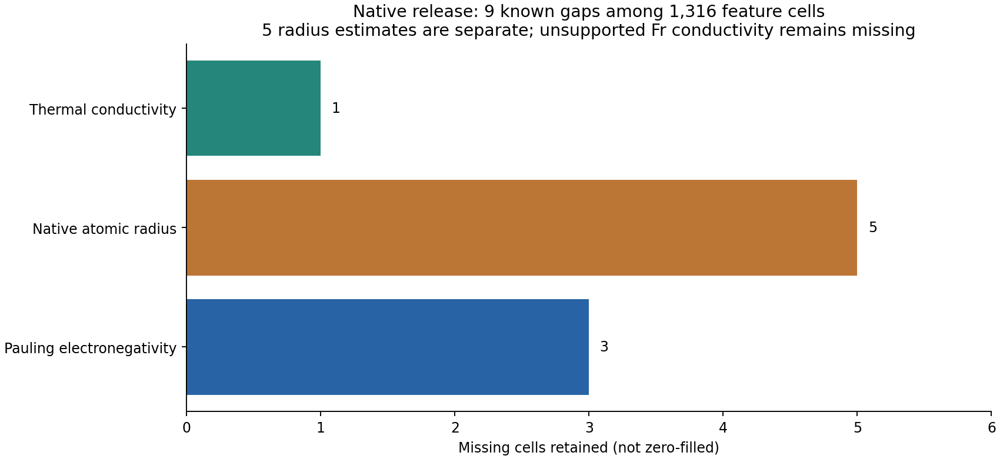
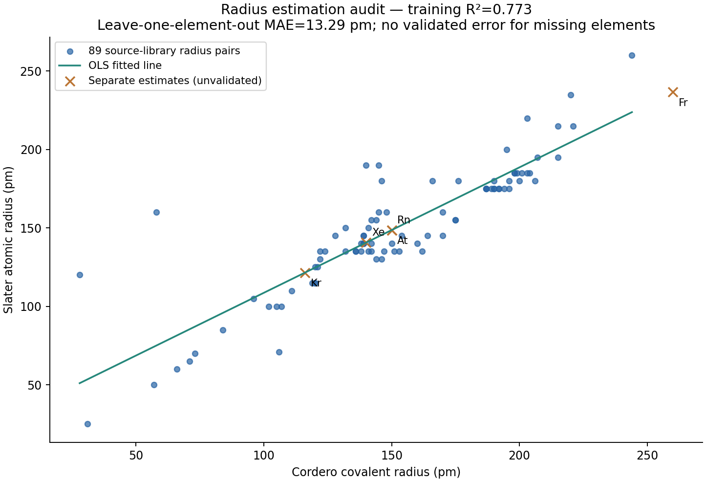
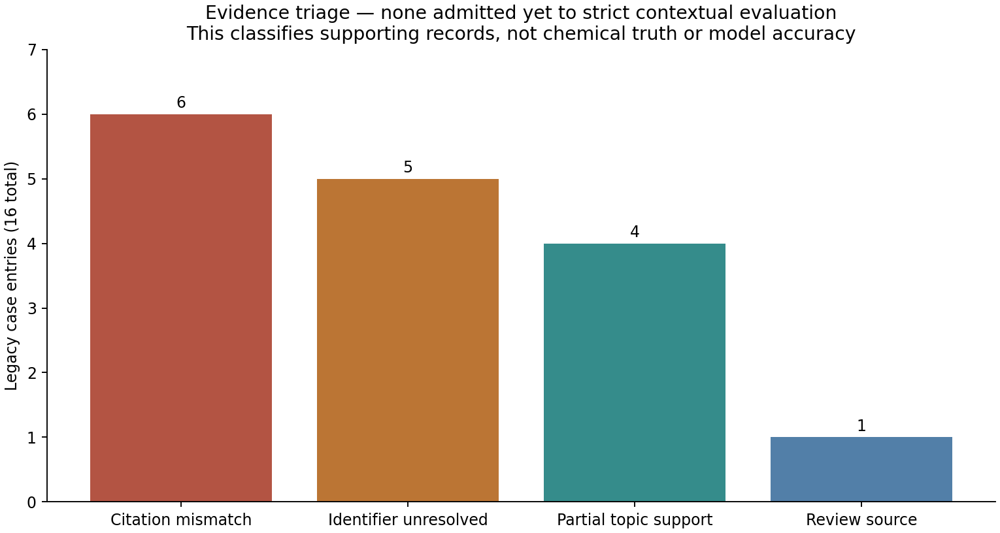

5 November 2026 | Local release 2.0.0-audit | Original data and engines preserved
73 tests passed; zero strict contextual benchmark claims are currently eligible. These statements answer different questions. The pipeline safeguards work, while the original scientific evidence needs repair and passage-level review. Unknown claims are not negative chemistry.
No playable Telugu audio was generated; full narration text is available.



| feature | unit | meaning |
|---|---|---|
| pauling_electronegativity | dimensionless | Pauling electronegativity; unavailable values remain missing |
| covalent_radius_cordero_pm | pm | Cordero covalent radius |
| atomic_radius_slater_pm | pm | Mendeleev atomic_radius; source metadata cites Slater1964 |
| first_ionization_energy_ev | eV | First atomic ionization energy |
| melting_point_k | K | Library-selected allotrope or pymatgen fallback; not a compound melting point |
| thermal_conductivity_w_mk | W/(m K) | Elemental thermal conductivity; source temperature/phase conventions apply |
| dipole_polarizability_bohr3 | bohr^3 | Stored polarizability-volume convention, not Angstrom^3 |
| valence_electrons | electron count | Mendeleev nvalence convention, not a universal definition |
| s_valence_electrons | electron count | Existing project active-subshell rule |
| p_valence_electrons | electron count | Existing project active-subshell rule |
| d_valence_electrons | electron count | Existing project active-subshell rule |
| f_valence_electrons | electron count | Existing project active-subshell rule |
| density_g_cm3 | g/cm^3 | Source density near room temperature; gases and upstream estimates explicitly flagged |
| atomic_molar_volume_cm3_mol_atoms | cm^3/mol atoms | Atomic weight divided by source density; not uniformly a solid-state molar volume |
| atomic_number | symbol | name | period | group_id | block | mendeleev_number | pn_normalized_118 | pauling_electronegativity | covalent_radius_cordero_pm | atomic_radius_slater_pm | first_ionization_energy_ev | melting_point_k | thermal_conductivity_w_mk | dipole_polarizability_bohr3 | valence_electrons | s_valence_electrons | p_valence_electrons | d_valence_electrons | f_valence_electrons | density_g_cm3 | atomic_molar_volume_cm3_mol_atoms | native_feature_count | density_estimated_in_upstream_source |
|---|---|---|---|---|---|---|---|---|---|---|---|---|---|---|---|---|---|---|---|---|---|---|---|
| 1 | H | Hydrogen | 1 | 1 | s | 105 | 0.889831 | 2.2 | 31 | 25 | 13.5984 | 13.99 | 0.1815 | 4.50711 | 1 | 1 | 0 | 0 | 0 | 8.2e-05 | 12292.7 | 14 | False |
| 2 | He | Helium | 1 | 18 | s | 112 | 0.949153 | Missing | 28 | 120 | 24.5874 | 0.95 | 0.152 | 1.38375 | 2 | 2 | 0 | 0 | 0 | 0.000164 | 24406.1 | 13 | False |
| 3 | Li | Lithium | 2 | 1 | s | 1 | 0.00847458 | 0.98 | 128 | 145 | 5.39171 | 453.65 | 84.8 | 164.113 | 1 | 1 | 0 | 0 | 0 | 0.534 | 12.9963 | 14 | False |
| 4 | Be | Beryllium | 2 | 2 | s | 75 | 0.635593 | 1.57 | 96 | 105 | 9.3227 | 1560.15 | 201 | 37.74 | 2 | 2 | 0 | 0 | 0 | 1.85 | 4.87145 | 14 | False |
| 5 | B | Boron | 2 | 13 | p | 81 | 0.686441 | 2.04 | 84 | 85 | 8.29802 | 2350.15 | 27.4 | 20.5 | 3 | 2 | 1 | 0 | 0 | 2.34 | 4.61966 | 14 | False |
| 6 | C | Carbon | 2 | 14 | p | 87 | 0.737288 | 2.55 | 73 | 70 | 11.2603 | 3800 | 1.59 | 11.3 | 4 | 2 | 2 | 0 | 0 | 2.2 | 5.45955 | 14 | False |
| 7 | N | Nitrogen | 2 | 15 | p | 93 | 0.788136 | 3.04 | 71 | 65 | 14.5341 | 63.15 | 0.026 | 7.4 | 5 | 2 | 3 | 0 | 0 | 0.001145 | 12233.2 | 14 | False |
| 8 | O | Oxygen | 2 | 16 | p | 99 | 0.838983 | 3.44 | 66 | 60 | 13.6181 | 54.36 | 0.027 | 5.3 | 6 | 2 | 4 | 0 | 0 | 0.001308 | 12231.7 | 14 | False |
| 9 | F | Fluorine | 2 | 17 | p | 106 | 0.898305 | 3.98 | 57 | 50 | 17.4228 | 53.48 | 0.028 | 3.74 | 7 | 2 | 5 | 0 | 0 | 0.001553 | 12233.4 | 14 | False |
| 10 | Ne | Neon | 2 | 18 | p | 113 | 0.957627 | Missing | 58 | 160 | 21.5645 | 24.56 | 0.0491 | 2.6611 | 8 | 2 | 6 | 0 | 0 | 0.000825 | 24460.2 | 13 | False |
| 11 | Na | Sodium | 3 | 1 | s | 2 | 0.0169492 | 0.93 | 166 | 180 | 5.13908 | 370.944 | 142 | 162.7 | 1 | 1 | 0 | 0 | 0 | 0.97 | 23.7008 | 14 | False |
| 12 | Mg | Magnesium | 3 | 2 | s | 76 | 0.644068 | 1.31 | 141 | 150 | 7.64624 | 923.15 | 156 | 71.2 | 2 | 2 | 0 | 0 | 0 | 1.74 | 13.9684 | 14 | False |
| 13 | Al | Aluminum | 3 | 13 | p | 82 | 0.694915 | 1.61 | 121 | 125 | 5.98577 | 933.473 | 237 | 57.8 | 3 | 2 | 1 | 0 | 0 | 2.7 | 9.99316 | 14 | False |
| 14 | Si | Silicon | 3 | 14 | p | 88 | 0.745763 | 1.9 | 111 | 110 | 8.15168 | 1687.15 | 149 | 37.3 | 4 | 2 | 2 | 0 | 0 | 2.3296 | 12.0557 | 14 | False |
| 15 | P | Phosphorus | 3 | 15 | p | 94 | 0.79661 | 2.19 | 107 | 100 | 10.4867 | 317.3 | 0.236 | 25 | 5 | 2 | 3 | 0 | 0 | 1.823 | 16.9905 | 14 | False |
| 16 | S | Sulfur | 3 | 16 | p | 100 | 0.847458 | 2.58 | 105 | 100 | 10.36 | 388.36 | 0.27 | 19.4 | 6 | 2 | 4 | 0 | 0 | 2.07 | 15.4879 | 14 | False |
| 17 | Cl | Chlorine | 3 | 17 | p | 107 | 0.90678 | 3.16 | 102 | 100 | 12.9676 | 171.65 | 0.009 | 14.6 | 7 | 2 | 5 | 0 | 0 | 0.002898 | 12232.6 | 14 | False |
| 18 | Ar | Argon | 3 | 18 | p | 114 | 0.966102 | Missing | 106 | 71 | 15.7596 | 83.81 | 0.0177 | 11.083 | 8 | 2 | 6 | 0 | 0 | 0.001633 | 24463 | 13 | False |
| 19 | K | Potassium | 4 | 1 | s | 3 | 0.0254237 | 0.82 | 203 | 220 | 4.34066 | 336.65 | 79 | 289.7 | 1 | 1 | 0 | 0 | 0 | 0.89 | 43.9307 | 14 | False |
| 20 | Ca | Calcium | 4 | 2 | s | 7 | 0.059322 | 1 | 176 | 180 | 6.11316 | 1115.15 | 200 | 160.8 | 2 | 2 | 0 | 0 | 0 | 1.54 | 26.0247 | 14 | False |
| 21 | Sc | Scandium | 4 | 3 | d | 11 | 0.0932203 | 1.36 | 170 | 160 | 6.56149 | 1814.15 | 15.8 | 97 | 3 | 2 | 0 | 1 | 0 | 2.99 | 15.0354 | 14 | False |
| 22 | Ti | Titanium | 4 | 4 | d | 43 | 0.364407 | 1.54 | 160 | 140 | 6.82812 | 1943.15 | 21.9 | 87 | 4 | 2 | 0 | 2 | 0 | 4.506 | 10.6229 | 14 | False |
| 23 | V | Vanadium | 4 | 5 | d | 47 | 0.398305 | 1.63 | 153 | 135 | 6.74619 | 2183.15 | 30.7 | 87 | 5 | 2 | 0 | 3 | 0 | 6 | 8.49025 | 14 | False |
| 24 | Cr | Chromium | 4 | 6 | d | 51 | 0.432203 | 1.66 | 139 | 140 | 6.76651 | 2180.15 | 93.9 | 83 | 6 | 1 | 0 | 5 | 0 | 7.15 | 7.27218 | 14 | False |
| 25 | Mn | Manganese | 4 | 7 | d | 55 | 0.466102 | 1.55 | 150 | 140 | 7.43404 | 1519.15 | 7.8 | 68 | 7 | 2 | 0 | 5 | 0 | 7.3 | 7.52576 | 14 | False |
| 26 | Fe | Iron | 4 | 8 | d | 59 | 0.5 | 1.83 | 142 | 140 | 7.90247 | 1811.15 | 80.4 | 62 | 8 | 2 | 0 | 6 | 0 | 7.87 | 7.09593 | 14 | False |
| 27 | Co | Cobalt | 4 | 9 | d | 63 | 0.533898 | 1.88 | 138 | 135 | 7.88101 | 1768.15 | 100 | 55 | 9 | 2 | 0 | 7 | 0 | 8.86 | 6.6516 | 14 | False |
| 28 | Ni | Nickel | 4 | 10 | d | 67 | 0.567797 | 1.91 | 124 | 135 | 7.63988 | 1728.15 | 90.9 | 49 | 10 | 2 | 0 | 8 | 0 | 8.9 | 6.59476 | 14 | False |
| 29 | Cu | Copper | 4 | 11 | d | 71 | 0.601695 | 1.9 | 132 | 135 | 7.72638 | 1357.77 | 401 | 46.5 | 11 | 1 | 0 | 10 | 0 | 8.96 | 7.09219 | 14 | False |
| 30 | Zn | Zinc | 4 | 12 | d | 77 | 0.652542 | 1.65 | 122 | 135 | 9.3942 | 692.677 | 116 | 38.67 | 12 | 2 | 0 | 10 | 0 | 7.134 | 9.16456 | 14 | False |
| 31 | Ga | Gallium | 4 | 13 | p | 83 | 0.70339 | 1.81 | 122 | 130 | 5.9993 | 302.915 | 28.1 | 50 | 3 | 2 | 1 | 0 | 0 | 5.91 | 11.7975 | 14 | False |
| 32 | Ge | Germanium | 4 | 14 | p | 89 | 0.754237 | 2.01 | 120 | 125 | 7.89944 | 1211.4 | 60.2 | 40 | 4 | 2 | 2 | 0 | 0 | 5.3234 | 13.6435 | 14 | False |
| 33 | As | Arsenic | 4 | 15 | p | 95 | 0.805085 | 2.18 | 119 | 115 | 9.78855 | 1090.15 | 50 | 30 | 5 | 2 | 3 | 0 | 0 | 5.75 | 13.0298 | 14 | False |
| 34 | Se | Selenium | 4 | 16 | p | 101 | 0.855932 | 2.55 | 120 | 115 | 9.75237 | 494 | 0.52 | 28.9 | 6 | 2 | 4 | 0 | 0 | 4.809 | 16.4215 | 14 | False |
| 35 | Br | Bromine | 4 | 17 | p | 108 | 0.915254 | 2.96 | 120 | 115 | 11.8138 | 265.95 | 0.005 | 21 | 7 | 2 | 5 | 0 | 0 | 3.1028 | 25.7522 | 14 | False |
| 36 | Kr | Krypton | 4 | 18 | p | 115 | 0.974576 | 3 | 116 | Missing | 13.9996 | 115.78 | 0.0095 | 16.78 | 8 | 2 | 6 | 0 | 0 | 0.003425 | 24466.6 | 13 | False |
| 37 | Rb | Rubidium | 5 | 1 | s | 4 | 0.0338983 | 0.82 | 220 | 235 | 4.17713 | 312.45 | 58.2 | 319.8 | 1 | 1 | 0 | 0 | 0 | 1.53 | 55.8613 | 14 | False |
| 38 | Sr | Strontium | 5 | 2 | s | 8 | 0.0677966 | 0.95 | 195 | 200 | 5.69487 | 1050.15 | 35 | 197.2 | 2 | 2 | 0 | 0 | 0 | 2.64 | 33.1894 | 14 | False |
| 39 | Y | Yttrium | 5 | 3 | d | 12 | 0.101695 | 1.22 | 190 | 180 | 6.21726 | 1795.15 | 17 | 162 | 3 | 2 | 0 | 1 | 0 | 4.47 | 19.8894 | 14 | False |
| 40 | Zr | Zirconium | 5 | 4 | d | 44 | 0.372881 | 1.33 | 175 | 155 | 6.63413 | 2127.15 | 22.7 | 112 | 4 | 2 | 0 | 2 | 0 | 6.52 | 13.9914 | 14 | False |
| 41 | Nb | Niobium | 5 | 5 | d | 48 | 0.40678 | 1.6 | 164 | 145 | 6.75885 | 2750.15 | 53.7 | 98 | 5 | 1 | 0 | 4 | 0 | 8.57 | 10.8409 | 14 | False |
| 42 | Mo | Molybdenum | 5 | 6 | d | 52 | 0.440678 | 2.16 | 154 | 145 | 7.09243 | 2895.15 | 139 | 87 | 6 | 1 | 0 | 5 | 0 | 10.2 | 9.40686 | 14 | False |
| 43 | Tc | Technetium | 5 | 7 | d | 56 | 0.474576 | 2.1 | 147 | 135 | 7.11938 | 2430.15 | 50.6 | 79 | 7 | 2 | 0 | 5 | 0 | 11 | 8.90066 | 14 | False |
| 44 | Ru | Ruthenium | 5 | 8 | d | 60 | 0.508475 | 2.2 | 146 | 130 | 7.3605 | 2606.15 | 117 | 72 | 8 | 1 | 0 | 7 | 0 | 12.1 | 8.35289 | 14 | False |
| 45 | Rh | Rhodium | 5 | 9 | d | 64 | 0.542373 | 2.28 | 142 | 135 | 7.4589 | 2236.15 | 150 | 66 | 9 | 1 | 0 | 8 | 0 | 12.4 | 8.29883 | 14 | False |
| 46 | Pd | Palladium | 5 | 10 | d | 68 | 0.576271 | 2.2 | 139 | 140 | 8.33684 | 1827.95 | 71.8 | 26.14 | 10 | 0 | 0 | 10 | 0 | 12 | 8.86833 | 14 | False |
| 47 | Ag | Silver | 5 | 11 | d | 72 | 0.610169 | 1.93 | 145 | 160 | 7.57623 | 1234.93 | 429 | 55 | 11 | 1 | 0 | 10 | 0 | 10.5 | 10.2732 | 14 | False |
| 48 | Cd | Cadmium | 5 | 12 | d | 78 | 0.661017 | 1.69 | 144 | 155 | 8.99382 | 594.219 | 96.9 | 46 | 12 | 2 | 0 | 10 | 0 | 8.69 | 12.936 | 14 | False |
| 49 | In | Indium | 5 | 13 | p | 84 | 0.711864 | 1.78 | 142 | 155 | 5.78636 | 429.748 | 81.8 | 65 | 3 | 2 | 1 | 0 | 0 | 7.31 | 15.707 | 14 | False |
| 50 | Sn | Tin | 5 | 14 | p | 90 | 0.762712 | 1.96 | 139 | 145 | 7.34392 | 505.08 | 66.8 | 53 | 4 | 2 | 2 | 0 | 0 | 7.287 | 16.2907 | 14 | False |
| 51 | Sb | Antimony | 5 | 15 | p | 96 | 0.813559 | 2.05 | 139 | 145 | 8.60839 | 903.778 | 24.43 | 43 | 5 | 2 | 3 | 0 | 0 | 6.68 | 18.2275 | 14 | False |
| 52 | Te | Tellurium | 5 | 16 | p | 102 | 0.864407 | 2.1 | 138 | 140 | 9.00981 | 722.66 | 14.3 | 38 | 6 | 2 | 4 | 0 | 0 | 6.232 | 20.475 | 14 | False |
| 53 | I | Iodine | 5 | 17 | p | 109 | 0.923729 | 2.66 | 139 | 140 | 10.4512 | 386.85 | 0.449 | 32.9 | 7 | 2 | 5 | 0 | 0 | 4.933 | 25.7256 | 14 | False |
| 54 | Xe | Xenon | 5 | 18 | p | 116 | 0.983051 | 2.6 | 140 | Missing | 12.1298 | 161.4 | 0.0057 | 27.32 | 8 | 2 | 6 | 0 | 0 | 0.005366 | 24467.6 | 13 | False |
| 55 | Cs | Cesium | 6 | 1 | s | 5 | 0.0423729 | 0.79 | 244 | 260 | 3.89391 | 301.65 | 35.9 | 400.9 | 1 | 1 | 0 | 0 | 0 | 1.873 | 70.9586 | 14 | False |
| 56 | Ba | Barium | 6 | 2 | s | 9 | 0.0762712 | 0.89 | 215 | 215 | 5.21166 | 1000.15 | 18 | 272 | 2 | 2 | 0 | 0 | 0 | 3.62 | 37.9356 | 14 | False |
| 57 | La | Lanthanum | 6 | 3 | d | 13 | 0.110169 | 1.1 | 207 | 195 | 5.5769 | 1193.15 | 13.4 | 215 | 3 | 2 | 0 | 1 | 0 | 6.15 | 22.5863 | 14 | False |
| 58 | Ce | Cerium | 6 | Missing | f | 15 | 0.127119 | 1.12 | 204 | 185 | 5.5386 | 1072.15 | 11.3 | 205 | 4 | 2 | 0 | 1 | 1 | 6.77 | 20.6966 | 14 | False |
| 59 | Pr | Praseodymium | 6 | Missing | f | 17 | 0.144068 | 1.13 | 203 | 185 | 5.4702 | 1204.15 | 12.5 | 216 | 5 | 2 | 0 | 0 | 3 | 6.773 | 20.8043 | 14 | False |
| 60 | Nd | Neodymium | 6 | Missing | f | 19 | 0.161017 | 1.14 | 201 | 185 | 5.525 | 1289.15 | 17 | 208 | 6 | 2 | 0 | 0 | 4 | 7.01 | 20.5766 | 14 | False |
| 61 | Pm | Promethium | 6 | Missing | f | 21 | 0.177966 | 1.13 | 199 | 185 | 5.58187 | 1315.15 | 17.9 | 200 | 7 | 2 | 0 | 0 | 5 | 7.26 | 19.9604 | 14 | False |
| 62 | Sm | Samarium | 6 | Missing | f | 23 | 0.194915 | 1.17 | 198 | 185 | 5.64372 | 1345.15 | 13 | 192 | 8 | 2 | 0 | 0 | 6 | 7.52 | 19.9947 | 14 | False |
| 63 | Eu | Europium | 6 | Missing | f | 25 | 0.211864 | 1.2 | 198 | 185 | 5.67038 | 1095.15 | 13.9 | 184 | 9 | 2 | 0 | 0 | 7 | 5.24 | 29.0008 | 14 | False |
| 64 | Gd | Gadolinium | 6 | Missing | f | 27 | 0.228814 | 1.2 | 196 | 180 | 6.1498 | 1586.15 | 11 | 158 | 10 | 2 | 0 | 1 | 7 | 7.9 | 19.9051 | 14 | False |
| 65 | Tb | Terbium | 6 | Missing | f | 29 | 0.245763 | 1.1 | 194 | 175 | 5.8638 | 1632.15 | 11.1 | 170 | 11 | 2 | 0 | 0 | 9 | 8.23 | 19.3105 | 14 | False |
| 66 | Dy | Dysprosium | 6 | Missing | f | 31 | 0.262712 | 1.22 | 192 | 175 | 5.93906 | 1685.15 | 10.7 | 163 | 12 | 2 | 0 | 0 | 10 | 8.55 | 19.0058 | 14 | False |
| 67 | Ho | Holmium | 6 | Missing | f | 33 | 0.279661 | 1.23 | 192 | 175 | 6.0215 | 1745.15 | 16 | 165 | 13 | 2 | 0 | 0 | 11 | 8.8 | 18.7421 | 14 | False |
| 68 | Er | Erbium | 6 | Missing | f | 35 | 0.29661 | 1.24 | 189 | 175 | 6.1077 | 1802.15 | 15 | 150 | 14 | 2 | 0 | 0 | 12 | 9.07 | 18.4409 | 14 | False |
| 69 | Tm | Thulium | 6 | Missing | f | 37 | 0.313559 | 1.25 | 190 | 175 | 6.1844 | 1818.15 | 17 | 144 | 15 | 2 | 0 | 0 | 13 | 9.321 | 18.124 | 14 | False |
| 70 | Yb | Ytterbium | 6 | Missing | f | 39 | 0.330508 | 1.1 | 187 | 175 | 6.25416 | 1097.15 | 39 | 139 | 16 | 2 | 0 | 0 | 14 | 6.9 | 25.079 | 14 | False |
| 71 | Lu | Lutetium | 6 | Missing | f | 41 | 0.347458 | 1 | 187 | 175 | 5.42587 | 1936.15 | 16 | 137 | 17 | 2 | 0 | 1 | 14 | 9.84 | 17.7812 | 14 | False |
| 72 | Hf | Hafnium | 6 | 4 | d | 45 | 0.381356 | 1.3 | 175 | 155 | 6.82507 | 2506.15 | 23 | 103 | 4 | 2 | 0 | 2 | 0 | 13.3 | 13.4203 | 14 | False |
| 73 | Ta | Tantalum | 6 | 5 | d | 49 | 0.415254 | 1.5 | 170 | 145 | 7.54957 | 3290.15 | 57.5 | 74 | 5 | 2 | 0 | 3 | 0 | 16.4 | 11.0334 | 14 | False |
| 74 | W | Tungsten | 6 | 6 | d | 53 | 0.449153 | 1.7 | 162 | 135 | 7.86403 | 3687.15 | 173 | 68 | 6 | 2 | 0 | 4 | 0 | 19.3 | 9.52539 | 14 | False |
| 75 | Re | Rhenium | 6 | 7 | d | 57 | 0.483051 | 1.9 | 151 | 135 | 7.83352 | 3458.15 | 48 | 62 | 7 | 2 | 0 | 5 | 0 | 20.8 | 8.95226 | 14 | False |
| 76 | Os | Osmium | 6 | 8 | d | 61 | 0.516949 | 2.2 | 144 | 130 | 8.43823 | 3306.15 | 88 | 57 | 8 | 2 | 0 | 6 | 0 | 22.5872 | 8.42203 | 14 | False |
| 77 | Ir | Iridium | 6 | 9 | d | 65 | 0.550847 | 2.2 | 141 | 135 | 8.96702 | 2719.15 | 147 | 54 | 9 | 2 | 0 | 7 | 0 | 22.5622 | 8.51943 | 14 | False |
| 78 | Pt | Platinum | 6 | 10 | d | 69 | 0.584746 | 2.2 | 136 | 135 | 8.95883 | 2041.35 | 71.6 | 48 | 10 | 1 | 0 | 9 | 0 | 21.5 | 9.07367 | 14 | False |
| 79 | Au | Gold | 6 | 11 | d | 73 | 0.618644 | 2.4 | 136 | 135 | 9.22555 | 1337.33 | 318 | 36 | 11 | 1 | 0 | 10 | 0 | 19.3 | 10.2055 | 14 | False |
| 80 | Hg | Mercury | 6 | 12 | d | 79 | 0.669492 | 1.9 | 132 | 150 | 10.4375 | 234.321 | 8.3 | 33.91 | 12 | 2 | 0 | 10 | 0 | 13.5336 | 14.8218 | 14 | False |
| 81 | Tl | Thallium | 6 | 13 | p | 85 | 0.720339 | 1.8 | 145 | 190 | 6.10829 | 577.15 | 46.1 | 50 | 3 | 2 | 1 | 0 | 0 | 11.8 | 17.3203 | 14 | False |
| 82 | Pb | Lead | 6 | 14 | p | 91 | 0.771186 | 1.8 | 146 | 180 | 7.41668 | 600.612 | 35.3 | 47 | 4 | 2 | 2 | 0 | 0 | 11.3 | 18.3363 | 14 | False |
| 83 | Bi | Bismuth | 6 | 15 | p | 97 | 0.822034 | 1.9 | 148 | 160 | 7.28552 | 544.552 | 7.9 | 48 | 5 | 2 | 3 | 0 | 0 | 9.79 | 21.3463 | 14 | False |
| 84 | Po | Polonium | 6 | 16 | p | 103 | 0.872881 | 2 | 140 | 190 | 8.41807 | 527.15 | 20 | 44 | 6 | 2 | 4 | 0 | 0 | 9.2 | 22.7174 | 14 | False |
| 85 | At | Astatine | 6 | 17 | p | 110 | 0.932203 | 2.2 | 150 | Missing | 9.31751 | 575.15 | 2 | 42 | 7 | 2 | 5 | 0 | 0 | 7 | 30 | 13 | True |
| 86 | Rn | Radon | 6 | 18 | p | 117 | 0.991525 | 2.2 | 150 | Missing | 10.7485 | 202.15 | 0.0036 | 35 | 8 | 2 | 6 | 0 | 0 | 0.009074 | 24465.5 | 13 | False |
| 87 | Fr | Francium | 7 | 1 | s | 6 | 0.0508475 | 0.7 | 260 | Missing | 4.07274 | 294.15 | Missing | 317.8 | 1 | 1 | 0 | 0 | 0 | 1.87 | 119.251 | 12 | True |
| 88 | Ra | Radium | 7 | 2 | s | 10 | 0.0847458 | 0.9 | 221 | 215 | 5.27842 | 969.15 | 19 | 246 | 2 | 2 | 0 | 0 | 0 | 5 | 45.2 | 14 | False |
| 89 | Ac | Actinium | 7 | 3 | d | 14 | 0.118644 | 1.1 | 215 | 195 | 5.38023 | 1323.15 | 12 | 203 | 3 | 2 | 0 | 1 | 0 | 10 | 22.7 | 14 | False |
| 90 | Th | Thorium | 7 | Missing | f | 16 | 0.135593 | 1.3 | 206 | 180 | 6.3067 | 2023.15 | 54 | 217 | 4 | 2 | 0 | 2 | 0 | 11.7 | 19.8323 | 14 | False |
| 91 | Pa | Protactinium | 7 | Missing | f | 18 | 0.152542 | 1.5 | 200 | 180 | 5.89 | 1845.15 | 47 | 154 | 5 | 2 | 0 | 1 | 2 | 15.4 | 15.0023 | 14 | False |
| 92 | U | Uranium | 7 | Missing | f | 20 | 0.169492 | 1.7 | 196 | 175 | 6.19405 | 1408.15 | 27.5 | 129 | 6 | 2 | 0 | 1 | 3 | 19.1 | 12.4622 | 14 | False |
| 93 | Np | Neptunium | 7 | Missing | f | 22 | 0.186441 | 1.3 | 190 | 175 | 6.26554 | 917.15 | 6 | 151 | 7 | 2 | 0 | 1 | 4 | 20.2 | 11.7327 | 14 | False |
| 94 | Pu | Plutonium | 7 | Missing | f | 24 | 0.20339 | 1.3 | 187 | 175 | 6.02576 | 913.15 | 6 | 132 | 8 | 2 | 0 | 0 | 6 | 19.7 | 12.3858 | 14 | False |
| atomic_number | symbol | name | recognized | pn_source_available | source_mendeleev_number | native_feature_table_present | native_feature_count | legacy_pn_target_supported | legacy_pn_candidate_supported | legacy_property_supported | legacy_atom2vec_supported | scientific_substitution_validated | site_validation_available | note |
|---|---|---|---|---|---|---|---|---|---|---|---|---|---|---|
| 1 | H | Hydrogen | True | True | 105 | True | 14 | True | True | True | True | False | False | Recognition/source availability is not predictive or experimental validation. |
| 2 | He | Helium | True | True | 112 | True | 13 | True | False | False | False | False | False | Recognition/source availability is not predictive or experimental validation. |
| 3 | Li | Lithium | True | True | 1 | True | 14 | True | True | True | True | False | False | Recognition/source availability is not predictive or experimental validation. |
| 4 | Be | Beryllium | True | True | 75 | True | 14 | True | True | True | True | False | False | Recognition/source availability is not predictive or experimental validation. |
| 5 | B | Boron | True | True | 81 | True | 14 | True | True | True | True | False | False | Recognition/source availability is not predictive or experimental validation. |
| 6 | C | Carbon | True | True | 87 | True | 14 | True | True | True | True | False | False | Recognition/source availability is not predictive or experimental validation. |
| 7 | N | Nitrogen | True | True | 93 | True | 14 | True | True | True | True | False | False | Recognition/source availability is not predictive or experimental validation. |
| 8 | O | Oxygen | True | True | 99 | True | 14 | True | True | True | True | False | False | Recognition/source availability is not predictive or experimental validation. |
| 9 | F | Fluorine | True | True | 106 | True | 14 | True | True | True | True | False | False | Recognition/source availability is not predictive or experimental validation. |
| 10 | Ne | Neon | True | True | 113 | True | 13 | True | False | False | False | False | False | Recognition/source availability is not predictive or experimental validation. |
| 11 | Na | Sodium | True | True | 2 | True | 14 | True | True | True | True | False | False | Recognition/source availability is not predictive or experimental validation. |
| 12 | Mg | Magnesium | True | True | 76 | True | 14 | True | True | True | True | False | False | Recognition/source availability is not predictive or experimental validation. |
| 13 | Al | Aluminum | True | True | 82 | True | 14 | True | True | True | True | False | False | Recognition/source availability is not predictive or experimental validation. |
| 14 | Si | Silicon | True | True | 88 | True | 14 | True | True | True | True | False | False | Recognition/source availability is not predictive or experimental validation. |
| 15 | P | Phosphorus | True | True | 94 | True | 14 | True | True | True | True | False | False | Recognition/source availability is not predictive or experimental validation. |
| 16 | S | Sulfur | True | True | 100 | True | 14 | True | True | True | True | False | False | Recognition/source availability is not predictive or experimental validation. |
| 17 | Cl | Chlorine | True | True | 107 | True | 14 | True | True | True | True | False | False | Recognition/source availability is not predictive or experimental validation. |
| 18 | Ar | Argon | True | True | 114 | True | 13 | True | False | False | False | False | False | Recognition/source availability is not predictive or experimental validation. |
| 19 | K | Potassium | True | True | 3 | True | 14 | True | True | True | True | False | False | Recognition/source availability is not predictive or experimental validation. |
| 20 | Ca | Calcium | True | True | 7 | True | 14 | True | True | True | True | False | False | Recognition/source availability is not predictive or experimental validation. |
| 21 | Sc | Scandium | True | True | 11 | True | 14 | True | True | True | True | False | False | Recognition/source availability is not predictive or experimental validation. |
| 22 | Ti | Titanium | True | True | 43 | True | 14 | True | True | True | True | False | False | Recognition/source availability is not predictive or experimental validation. |
| 23 | V | Vanadium | True | True | 47 | True | 14 | True | True | True | True | False | False | Recognition/source availability is not predictive or experimental validation. |
| 24 | Cr | Chromium | True | True | 51 | True | 14 | True | True | True | True | False | False | Recognition/source availability is not predictive or experimental validation. |
| 25 | Mn | Manganese | True | True | 55 | True | 14 | True | True | True | True | False | False | Recognition/source availability is not predictive or experimental validation. |
| 26 | Fe | Iron | True | True | 59 | True | 14 | True | True | True | True | False | False | Recognition/source availability is not predictive or experimental validation. |
| 27 | Co | Cobalt | True | True | 63 | True | 14 | True | True | True | True | False | False | Recognition/source availability is not predictive or experimental validation. |
| 28 | Ni | Nickel | True | True | 67 | True | 14 | True | True | True | True | False | False | Recognition/source availability is not predictive or experimental validation. |
| 29 | Cu | Copper | True | True | 71 | True | 14 | True | True | True | True | False | False | Recognition/source availability is not predictive or experimental validation. |
| 30 | Zn | Zinc | True | True | 77 | True | 14 | True | True | True | True | False | False | Recognition/source availability is not predictive or experimental validation. |
| 31 | Ga | Gallium | True | True | 83 | True | 14 | True | True | True | True | False | False | Recognition/source availability is not predictive or experimental validation. |
| 32 | Ge | Germanium | True | True | 89 | True | 14 | True | True | True | True | False | False | Recognition/source availability is not predictive or experimental validation. |
| 33 | As | Arsenic | True | True | 95 | True | 14 | True | True | True | True | False | False | Recognition/source availability is not predictive or experimental validation. |
| 34 | Se | Selenium | True | True | 101 | True | 14 | True | True | True | True | False | False | Recognition/source availability is not predictive or experimental validation. |
| 35 | Br | Bromine | True | True | 108 | True | 14 | True | True | True | True | False | False | Recognition/source availability is not predictive or experimental validation. |
| 36 | Kr | Krypton | True | True | 115 | True | 13 | True | False | False | False | False | False | Recognition/source availability is not predictive or experimental validation. |
| 37 | Rb | Rubidium | True | True | 4 | True | 14 | True | True | True | True | False | False | Recognition/source availability is not predictive or experimental validation. |
| 38 | Sr | Strontium | True | True | 8 | True | 14 | True | True | True | True | False | False | Recognition/source availability is not predictive or experimental validation. |
| 39 | Y | Yttrium | True | True | 12 | True | 14 | True | True | True | True | False | False | Recognition/source availability is not predictive or experimental validation. |
| 40 | Zr | Zirconium | True | True | 44 | True | 14 | True | True | True | True | False | False | Recognition/source availability is not predictive or experimental validation. |
| 41 | Nb | Niobium | True | True | 48 | True | 14 | True | True | True | True | False | False | Recognition/source availability is not predictive or experimental validation. |
| 42 | Mo | Molybdenum | True | True | 52 | True | 14 | True | True | True | True | False | False | Recognition/source availability is not predictive or experimental validation. |
| 43 | Tc | Technetium | True | True | 56 | True | 14 | True | True | True | True | False | False | Recognition/source availability is not predictive or experimental validation. |
| 44 | Ru | Ruthenium | True | True | 60 | True | 14 | True | True | True | True | False | False | Recognition/source availability is not predictive or experimental validation. |
| 45 | Rh | Rhodium | True | True | 64 | True | 14 | True | True | True | True | False | False | Recognition/source availability is not predictive or experimental validation. |
| 46 | Pd | Palladium | True | True | 68 | True | 14 | True | True | True | True | False | False | Recognition/source availability is not predictive or experimental validation. |
| 47 | Ag | Silver | True | True | 72 | True | 14 | True | True | True | True | False | False | Recognition/source availability is not predictive or experimental validation. |
| 48 | Cd | Cadmium | True | True | 78 | True | 14 | True | True | True | True | False | False | Recognition/source availability is not predictive or experimental validation. |
| 49 | In | Indium | True | True | 84 | True | 14 | True | True | True | True | False | False | Recognition/source availability is not predictive or experimental validation. |
| 50 | Sn | Tin | True | True | 90 | True | 14 | True | True | True | True | False | False | Recognition/source availability is not predictive or experimental validation. |
| 51 | Sb | Antimony | True | True | 96 | True | 14 | True | True | True | True | False | False | Recognition/source availability is not predictive or experimental validation. |
| 52 | Te | Tellurium | True | True | 102 | True | 14 | True | True | True | True | False | False | Recognition/source availability is not predictive or experimental validation. |
| 53 | I | Iodine | True | True | 109 | True | 14 | True | True | True | True | False | False | Recognition/source availability is not predictive or experimental validation. |
| 54 | Xe | Xenon | True | True | 116 | True | 13 | True | False | False | False | False | False | Recognition/source availability is not predictive or experimental validation. |
| 55 | Cs | Cesium | True | True | 5 | True | 14 | True | True | True | True | False | False | Recognition/source availability is not predictive or experimental validation. |
| 56 | Ba | Barium | True | True | 9 | True | 14 | True | True | True | True | False | False | Recognition/source availability is not predictive or experimental validation. |
| 57 | La | Lanthanum | True | True | 13 | True | 14 | True | True | True | True | False | False | Recognition/source availability is not predictive or experimental validation. |
| 58 | Ce | Cerium | True | True | 15 | True | 14 | True | True | True | True | False | False | Recognition/source availability is not predictive or experimental validation. |
| 59 | Pr | Praseodymium | True | True | 17 | True | 14 | True | True | True | True | False | False | Recognition/source availability is not predictive or experimental validation. |
| 60 | Nd | Neodymium | True | True | 19 | True | 14 | True | True | True | True | False | False | Recognition/source availability is not predictive or experimental validation. |
| 61 | Pm | Promethium | True | True | 21 | True | 14 | True | True | True | False | False | False | Recognition/source availability is not predictive or experimental validation. |
| 62 | Sm | Samarium | True | True | 23 | True | 14 | True | True | True | True | False | False | Recognition/source availability is not predictive or experimental validation. |
| 63 | Eu | Europium | True | True | 25 | True | 14 | True | True | True | True | False | False | Recognition/source availability is not predictive or experimental validation. |
| 64 | Gd | Gadolinium | True | True | 27 | True | 14 | True | True | True | True | False | False | Recognition/source availability is not predictive or experimental validation. |
| 65 | Tb | Terbium | True | True | 29 | True | 14 | True | True | True | True | False | False | Recognition/source availability is not predictive or experimental validation. |
| 66 | Dy | Dysprosium | True | True | 31 | True | 14 | True | True | True | True | False | False | Recognition/source availability is not predictive or experimental validation. |
| 67 | Ho | Holmium | True | True | 33 | True | 14 | True | True | True | True | False | False | Recognition/source availability is not predictive or experimental validation. |
| 68 | Er | Erbium | True | True | 35 | True | 14 | True | True | True | True | False | False | Recognition/source availability is not predictive or experimental validation. |
| 69 | Tm | Thulium | True | True | 37 | True | 14 | True | True | True | True | False | False | Recognition/source availability is not predictive or experimental validation. |
| 70 | Yb | Ytterbium | True | True | 39 | True | 14 | True | True | True | True | False | False | Recognition/source availability is not predictive or experimental validation. |
| 71 | Lu | Lutetium | True | True | 41 | True | 14 | True | True | True | True | False | False | Recognition/source availability is not predictive or experimental validation. |
| 72 | Hf | Hafnium | True | True | 45 | True | 14 | True | True | True | True | False | False | Recognition/source availability is not predictive or experimental validation. |
| 73 | Ta | Tantalum | True | True | 49 | True | 14 | True | True | True | True | False | False | Recognition/source availability is not predictive or experimental validation. |
| 74 | W | Tungsten | True | True | 53 | True | 14 | True | True | True | True | False | False | Recognition/source availability is not predictive or experimental validation. |
| 75 | Re | Rhenium | True | True | 57 | True | 14 | True | True | True | True | False | False | Recognition/source availability is not predictive or experimental validation. |
| 76 | Os | Osmium | True | True | 61 | True | 14 | True | True | True | True | False | False | Recognition/source availability is not predictive or experimental validation. |
| 77 | Ir | Iridium | True | True | 65 | True | 14 | True | True | True | True | False | False | Recognition/source availability is not predictive or experimental validation. |
| 78 | Pt | Platinum | True | True | 69 | True | 14 | True | True | True | True | False | False | Recognition/source availability is not predictive or experimental validation. |
| 79 | Au | Gold | True | True | 73 | True | 14 | True | True | True | True | False | False | Recognition/source availability is not predictive or experimental validation. |
| 80 | Hg | Mercury | True | True | 79 | True | 14 | True | True | True | True | False | False | Recognition/source availability is not predictive or experimental validation. |
| 81 | Tl | Thallium | True | True | 85 | True | 14 | True | True | True | True | False | False | Recognition/source availability is not predictive or experimental validation. |
| 82 | Pb | Lead | True | True | 91 | True | 14 | True | True | True | True | False | False | Recognition/source availability is not predictive or experimental validation. |
| 83 | Bi | Bismuth | True | True | 97 | True | 14 | True | True | True | True | False | False | Recognition/source availability is not predictive or experimental validation. |
| 84 | Po | Polonium | True | True | 103 | True | 14 | True | True | True | False | False | False | Recognition/source availability is not predictive or experimental validation. |
| 85 | At | Astatine | True | True | 110 | True | 13 | True | True | True | False | False | False | Recognition/source availability is not predictive or experimental validation. |
| 86 | Rn | Radon | True | True | 117 | True | 13 | True | False | False | False | False | False | Recognition/source availability is not predictive or experimental validation. |
| 87 | Fr | Francium | True | True | 6 | True | 12 | True | True | True | False | False | False | Recognition/source availability is not predictive or experimental validation. |
| 88 | Ra | Radium | True | True | 10 | True | 14 | True | True | True | False | False | False | Recognition/source availability is not predictive or experimental validation. |
| 89 | Ac | Actinium | True | True | 14 | True | 14 | True | True | True | False | False | False | Recognition/source availability is not predictive or experimental validation. |
| 90 | Th | Thorium | True | True | 16 | True | 14 | True | True | True | True | False | False | Recognition/source availability is not predictive or experimental validation. |
| 91 | Pa | Protactinium | True | True | 18 | True | 14 | True | True | True | False | False | False | Recognition/source availability is not predictive or experimental validation. |
| 92 | U | Uranium | True | True | 20 | True | 14 | True | True | True | True | False | False | Recognition/source availability is not predictive or experimental validation. |
| 93 | Np | Neptunium | True | True | 22 | True | 14 | True | True | True | False | False | False | Recognition/source availability is not predictive or experimental validation. |
| 94 | Pu | Plutonium | True | True | 24 | True | 14 | True | True | True | False | False | False | Recognition/source availability is not predictive or experimental validation. |
| 95 | Am | Americium | True | True | 26 | False | 0 | False | False | False | False | False | False | Recognition/source availability is not predictive or experimental validation. |
| 96 | Cm | Curium | True | True | 28 | False | 0 | False | False | False | False | False | False | Recognition/source availability is not predictive or experimental validation. |
| 97 | Bk | Berkelium | True | True | 30 | False | 0 | False | False | False | False | False | False | Recognition/source availability is not predictive or experimental validation. |
| 98 | Cf | Californium | True | True | 32 | False | 0 | False | False | False | False | False | False | Recognition/source availability is not predictive or experimental validation. |
| 99 | Es | Einsteinium | True | True | 34 | False | 0 | False | False | False | False | False | False | Recognition/source availability is not predictive or experimental validation. |
| 100 | Fm | Fermium | True | True | 36 | False | 0 | False | False | False | False | False | False | Recognition/source availability is not predictive or experimental validation. |
| 101 | Md | Mendelevium | True | True | 38 | False | 0 | False | False | False | False | False | False | Recognition/source availability is not predictive or experimental validation. |
| 102 | No | Nobelium | True | True | 40 | False | 0 | False | False | False | False | False | False | Recognition/source availability is not predictive or experimental validation. |
| 103 | Lr | Lawrencium | True | True | 42 | False | 0 | False | False | False | False | False | False | Recognition/source availability is not predictive or experimental validation. |
| 104 | Rf | Rutherfordium | True | True | 46 | False | 0 | False | False | False | False | False | False | Recognition/source availability is not predictive or experimental validation. |
| 105 | Db | Dubnium | True | True | 50 | False | 0 | False | False | False | False | False | False | Recognition/source availability is not predictive or experimental validation. |
| 106 | Sg | Seaborgium | True | True | 54 | False | 0 | False | False | False | False | False | False | Recognition/source availability is not predictive or experimental validation. |
| 107 | Bh | Bohrium | True | True | 58 | False | 0 | False | False | False | False | False | False | Recognition/source availability is not predictive or experimental validation. |
| 108 | Hs | Hassium | True | True | 62 | False | 0 | False | False | False | False | False | False | Recognition/source availability is not predictive or experimental validation. |
| 109 | Mt | Meitnerium | True | True | 66 | False | 0 | False | False | False | False | False | False | Recognition/source availability is not predictive or experimental validation. |
| 110 | Ds | Darmstadtium | True | True | 70 | False | 0 | False | False | False | False | False | False | Recognition/source availability is not predictive or experimental validation. |
| 111 | Rg | Roentgenium | True | True | 74 | False | 0 | False | False | False | False | False | False | Recognition/source availability is not predictive or experimental validation. |
| 112 | Cn | Copernicium | True | True | 80 | False | 0 | False | False | False | False | False | False | Recognition/source availability is not predictive or experimental validation. |
| 113 | Nh | Nihonium | True | True | 86 | False | 0 | False | False | False | False | False | False | Recognition/source availability is not predictive or experimental validation. |
| 114 | Fl | Flerovium | True | True | 92 | False | 0 | False | False | False | False | False | False | Recognition/source availability is not predictive or experimental validation. |
| 115 | Mc | Moscovium | True | True | 98 | False | 0 | False | False | False | False | False | False | Recognition/source availability is not predictive or experimental validation. |
| 116 | Lv | Livermorium | True | True | 104 | False | 0 | False | False | False | False | False | False | Recognition/source availability is not predictive or experimental validation. |
| 117 | Ts | Tennessine | True | True | 111 | False | 0 | False | False | False | False | False | False | Recognition/source availability is not predictive or experimental validation. |
| 118 | Og | Oganesson | True | True | 118 | False | 0 | False | False | False | False | False | False | Recognition/source availability is not predictive or experimental validation. |
| case_id | track | host | target | candidates | legacy_doi | resolved_title | status | eligible | reason |
|---|---|---|---|---|---|---|---|---|---|
| BM-P01 | substitution | Ga2O3 | Ga | Al, In | 10.1063/1.5036991 | Structural and electronic properties of Ga2O3-Al2O3 alloys | partial_support | False | Al-alloy paper is computational; does not by itself verify every Al/In experimental, concentration and site claim. |
| BM-P02 | substitution | GaN | Ga | Al, In | 10.1088/0022-3727/31/20/001 | Growth and applications of Group III-nitrides | review_source | False | Registered source is a III-nitride review, not extracted direct experimental evidence for each claimed condition. |
| BM-P03 | substitution | MoS2 | Mo | W | 10.1021/nn4011442 | Unresolved in queried registry | unresolved_identifier | False | DOI registry query returned HTTP 404. This does not prove the chemistry is false or that no correct paper exists. |
| BM-P04 | substitution | MoS2 | S | Se | 10.1021/nl4032296 | Band Gap Engineering and Layer-by-Layer Mapping of Selenium-Doped Molybdenum Disulfide | partial_support | False | Registered title concerns Se-containing MoS2, but the complete phase, site, authorship and concentration assertions need primary passage review. |
| BM-P05 | substitution | BaTiO3 | Ti | Zr, Sn, Hf | 10.1080/00150199008211417 | Integrated pyroelectric detector arrays with the sensor material PVDF | citation_mismatch | False | Registered paper is about PVDF pyroelectric detector arrays, not the stated BaTiO3 substitution study. |
| BM-P06 | substitution | BaTiO3 | Ba | Sr, Ca | 10.1007/b71004 | Unresolved in queried registry | unresolved_identifier | False | Book DOI did not resolve through the queried registry; exact supporting chapter and passage not established. |
| BM-P07 | substitution | SrTiO3 | Ti | Zr, Hf | 10.17188/1206894 | Materials Data on KSnAs by Materials Project | citation_mismatch | False | DataCite DOI identifies Materials Data on KSnAs, not SrTiO3. |
| BM-P08 | substitution | SrTiO3 | Sr | Ba, Ca | 10.17188/1206894 | Materials Data on KSnAs by Materials Project | citation_mismatch | False | DataCite DOI identifies Materials Data on KSnAs, not SrTiO3. |
| BM-P09 | substitution | CsPbI3 | Pb | Sn | 10.1021/ja403010m | Unresolved in queried registry | unresolved_identifier | False | DOI did not resolve in the query. The recorded journal/case pairing needs re-identification and primary evidence. |
| BM-P10 | substitution | Bi2Te3 | Bi | Sb | 10.1126/science.1156446 | High-Thermoelectric Performance of Nanostructured Bismuth Antimony Telluride Bulk Alloys | partial_support | False | Registered paper concerns Bi/Sb telluride alloys; this alone does not establish every full-range site-specific legacy assertion. |
| BM-P11 | substitution | Bi2Te3 | Te | Se | 10.17188/1188166 | Unresolved in queried registry | unresolved_identifier | False | DataCite DOI query returned HTTP 404; actual supporting structure and experimental claim not verified. |
| BM-S01 | doping | Ga2O3 | Ga | Si | 10.1143/APEX.1.041201 | Enhanced Conversion Efficiencies of Cu\n <sub>2</sub>\n ZnSnS\n <sub>4</sub>\n -Based Thin Film Solar Cells by Using Preferential Etching Technique | citation_mismatch | False | Registered DOI is a Cu2ZnSnS4 solar-cell etching paper, not Si doping in Ga2O3. |
| BM-S02 | doping | Ga2O3 | Ga | Sn | 10.1063/1.3700723 | <i>In-situ</i> electron holography of surface potential response to gate voltage application in a sub-30-nm gate-length metal-oxide-semiconductor field-effect transistor | citation_mismatch | False | Registered DOI is an electron-holography/MOSFET paper, not Sn doping in Ga2O3. |
| BM-S03 | doping | GaN | Ga | Mg | 10.1143/JJAP.34.L797 | High-Brightness InGaN Blue, Green and Yellow Light-Emitting Diodes with Quantum Well Structures | partial_support | False | Registered source concerns InGaN quantum-well LEDs; Mg-on-Ga site, dilute level and activation assertions require an exact supporting passage or replacement primary study. |
| BM-S04 | doping | SrTiO3 | Ti | Nb | 10.1038/nmat737 | Order within disorder | citation_mismatch | False | Publisher and Crossref identify Order within disorder, about glass structure, not Nb doping in SrTiO3. |
| BM-S05 | doping | MoS2 | Mo | Re | 10.1021/acs.nanolett.6b00080 | Unresolved in queried registry | unresolved_identifier | False | DOI registry query returned HTTP 404; Re-on-Mo evidence and concentration remain unverified. |
| atomic_number | symbol | feature | value | unit | origin | project_imputed | upstream_quality_flags | source_locator | source_snapshot_record | source_versions | conditions | measurement_status |
|---|---|---|---|---|---|---|---|---|---|---|---|---|
| 1 | H | pauling_electronegativity | 2.2 | dimensionless | source_library_value | False | [] | mendeleev.electronegativity(pauling) | elements_1_94[atomic_number=1] | {"mendeleev": "1.2.0", "pymatgen": "2025.10.7"} | See captured propertymetadata; phase/temperature are not uniform across features. | not independently classified as experimental; library lineage only |
| 1 | H | covalent_radius_cordero_pm | 31 | pm | source_library_value | False | [] | mendeleev.Element.covalent_radius_cordero | elements_1_94[atomic_number=1] | {"mendeleev": "1.2.0", "pymatgen": "2025.10.7"} | See captured propertymetadata; phase/temperature are not uniform across features. | not independently classified as experimental; library lineage only |
| 1 | H | atomic_radius_slater_pm | 25 | pm | source_library_value | False | [] | mendeleev.Element.atomic_radius | elements_1_94[atomic_number=1] | {"mendeleev": "1.2.0", "pymatgen": "2025.10.7"} | See captured propertymetadata; phase/temperature are not uniform across features. | not independently classified as experimental; library lineage only |
| 1 | H | first_ionization_energy_ev | 13.5984 | eV | source_library_value | False | [] | mendeleev.Element.ionenergies[1] | elements_1_94[atomic_number=1] | {"mendeleev": "1.2.0", "pymatgen": "2025.10.7"} | See captured propertymetadata; phase/temperature are not uniform across features. | not independently classified as experimental; library lineage only |
| 1 | H | melting_point_k | 13.99 | K | source_library_value | False | [] | mendeleev.Element.melting_point | elements_1_94[atomic_number=1] | {"mendeleev": "1.2.0", "pymatgen": "2025.10.7"} | See captured propertymetadata; phase/temperature are not uniform across features. | not independently classified as experimental; library lineage only |
| 1 | H | thermal_conductivity_w_mk | 0.1815 | W/(m K) | source_library_value | False | [] | mendeleev.Element.thermal_conductivity | elements_1_94[atomic_number=1] | {"mendeleev": "1.2.0", "pymatgen": "2025.10.7"} | See captured propertymetadata; phase/temperature are not uniform across features. | not independently classified as experimental; library lineage only |
| 1 | H | dipole_polarizability_bohr3 | 4.50711 | bohr^3 | source_library_value | False | [] | mendeleev.Element.dipole_polarizability | elements_1_94[atomic_number=1] | {"mendeleev": "1.2.0", "pymatgen": "2025.10.7"} | See captured propertymetadata; phase/temperature are not uniform across features. | not independently classified as experimental; library lineage only |
| 1 | H | valence_electrons | 1 | electron count | source_library_value | False | [] | mendeleev.Element.nvalence() | elements_1_94[atomic_number=1] | {"mendeleev": "1.2.0", "pymatgen": "2025.10.7"} | See captured propertymetadata; phase/temperature are not uniform across features. | not independently classified as experimental; library lineage only |
| 1 | H | s_valence_electrons | 1 | electron count | project_rule_derived | False | [] | project.parse_subshell_valence | elements_1_94[atomic_number=1] | {"mendeleev": "1.2.0", "pymatgen": "2025.10.7"} | See captured propertymetadata; phase/temperature are not uniform across features. | not independently classified as experimental; library lineage only |
| 1 | H | p_valence_electrons | 0 | electron count | project_rule_derived | False | [] | project.parse_subshell_valence | elements_1_94[atomic_number=1] | {"mendeleev": "1.2.0", "pymatgen": "2025.10.7"} | See captured propertymetadata; phase/temperature are not uniform across features. | not independently classified as experimental; library lineage only |
| 1 | H | d_valence_electrons | 0 | electron count | project_rule_derived | False | [] | project.parse_subshell_valence | elements_1_94[atomic_number=1] | {"mendeleev": "1.2.0", "pymatgen": "2025.10.7"} | See captured propertymetadata; phase/temperature are not uniform across features. | not independently classified as experimental; library lineage only |
| 1 | H | f_valence_electrons | 0 | electron count | project_rule_derived | False | [] | project.parse_subshell_valence | elements_1_94[atomic_number=1] | {"mendeleev": "1.2.0", "pymatgen": "2025.10.7"} | See captured propertymetadata; phase/temperature are not uniform across features. | not independently classified as experimental; library lineage only |
| 1 | H | density_g_cm3 | 8.2e-05 | g/cm^3 | source_library_value | False | [] | mendeleev.Element.density | elements_1_94[atomic_number=1] | {"mendeleev": "1.2.0", "pymatgen": "2025.10.7"} | See captured propertymetadata; phase/temperature are not uniform across features. | not independently classified as experimental; library lineage only |
| 1 | H | atomic_molar_volume_cm3_mol_atoms | 12292.7 | cm^3/mol atoms | derived_ratio | False | [] | mendeleev.atomic_weight / selected source density | elements_1_94[atomic_number=1] | {"mendeleev": "1.2.0", "pymatgen": "2025.10.7"} | See captured propertymetadata; phase/temperature are not uniform across features. | not independently classified as experimental; library lineage only |
| 2 | He | pauling_electronegativity | Missing | dimensionless | missing | False | [] | mendeleev.electronegativity(pauling) | elements_1_94[atomic_number=2] | {"mendeleev": "1.2.0", "pymatgen": "2025.10.7"} | See captured propertymetadata; phase/temperature are not uniform across features. | not independently classified as experimental; library lineage only |
| 2 | He | covalent_radius_cordero_pm | 28 | pm | source_library_value | False | [] | mendeleev.Element.covalent_radius_cordero | elements_1_94[atomic_number=2] | {"mendeleev": "1.2.0", "pymatgen": "2025.10.7"} | See captured propertymetadata; phase/temperature are not uniform across features. | not independently classified as experimental; library lineage only |
| 2 | He | atomic_radius_slater_pm | 120 | pm | source_library_value | False | [] | mendeleev.Element.atomic_radius | elements_1_94[atomic_number=2] | {"mendeleev": "1.2.0", "pymatgen": "2025.10.7"} | See captured propertymetadata; phase/temperature are not uniform across features. | not independently classified as experimental; library lineage only |
| 2 | He | first_ionization_energy_ev | 24.5874 | eV | source_library_value | False | [] | mendeleev.Element.ionenergies[1] | elements_1_94[atomic_number=2] | {"mendeleev": "1.2.0", "pymatgen": "2025.10.7"} | See captured propertymetadata; phase/temperature are not uniform across features. | not independently classified as experimental; library lineage only |
| 2 | He | melting_point_k | 0.95 | K | source_library_value | False | ["fallback_library"] | pymatgen.Element.melting_point | elements_1_94[atomic_number=2] | {"mendeleev": "1.2.0", "pymatgen": "2025.10.7"} | See captured propertymetadata; phase/temperature are not uniform across features. | not independently classified as experimental; library lineage only |
| 2 | He | thermal_conductivity_w_mk | 0.152 | W/(m K) | source_library_value | False | [] | mendeleev.Element.thermal_conductivity | elements_1_94[atomic_number=2] | {"mendeleev": "1.2.0", "pymatgen": "2025.10.7"} | See captured propertymetadata; phase/temperature are not uniform across features. | not independently classified as experimental; library lineage only |
| 2 | He | dipole_polarizability_bohr3 | 1.38375 | bohr^3 | source_library_value | False | [] | mendeleev.Element.dipole_polarizability | elements_1_94[atomic_number=2] | {"mendeleev": "1.2.0", "pymatgen": "2025.10.7"} | See captured propertymetadata; phase/temperature are not uniform across features. | not independently classified as experimental; library lineage only |
| 2 | He | valence_electrons | 2 | electron count | source_library_value | False | [] | mendeleev.Element.nvalence() | elements_1_94[atomic_number=2] | {"mendeleev": "1.2.0", "pymatgen": "2025.10.7"} | See captured propertymetadata; phase/temperature are not uniform across features. | not independently classified as experimental; library lineage only |
| 2 | He | s_valence_electrons | 2 | electron count | project_rule_derived | False | [] | project.parse_subshell_valence | elements_1_94[atomic_number=2] | {"mendeleev": "1.2.0", "pymatgen": "2025.10.7"} | See captured propertymetadata; phase/temperature are not uniform across features. | not independently classified as experimental; library lineage only |
| 2 | He | p_valence_electrons | 0 | electron count | project_rule_derived | False | [] | project.parse_subshell_valence | elements_1_94[atomic_number=2] | {"mendeleev": "1.2.0", "pymatgen": "2025.10.7"} | See captured propertymetadata; phase/temperature are not uniform across features. | not independently classified as experimental; library lineage only |
| 2 | He | d_valence_electrons | 0 | electron count | project_rule_derived | False | [] | project.parse_subshell_valence | elements_1_94[atomic_number=2] | {"mendeleev": "1.2.0", "pymatgen": "2025.10.7"} | See captured propertymetadata; phase/temperature are not uniform across features. | not independently classified as experimental; library lineage only |
| 2 | He | f_valence_electrons | 0 | electron count | project_rule_derived | False | [] | project.parse_subshell_valence | elements_1_94[atomic_number=2] | {"mendeleev": "1.2.0", "pymatgen": "2025.10.7"} | See captured propertymetadata; phase/temperature are not uniform across features. | not independently classified as experimental; library lineage only |
| 2 | He | density_g_cm3 | 0.000164 | g/cm^3 | source_library_value | False | [] | mendeleev.Element.density | elements_1_94[atomic_number=2] | {"mendeleev": "1.2.0", "pymatgen": "2025.10.7"} | See captured propertymetadata; phase/temperature are not uniform across features. | not independently classified as experimental; library lineage only |
| 2 | He | atomic_molar_volume_cm3_mol_atoms | 24406.1 | cm^3/mol atoms | derived_ratio | False | [] | mendeleev.atomic_weight / selected source density | elements_1_94[atomic_number=2] | {"mendeleev": "1.2.0", "pymatgen": "2025.10.7"} | See captured propertymetadata; phase/temperature are not uniform across features. | not independently classified as experimental; library lineage only |
| 3 | Li | pauling_electronegativity | 0.98 | dimensionless | source_library_value | False | [] | mendeleev.electronegativity(pauling) | elements_1_94[atomic_number=3] | {"mendeleev": "1.2.0", "pymatgen": "2025.10.7"} | See captured propertymetadata; phase/temperature are not uniform across features. | not independently classified as experimental; library lineage only |
| 3 | Li | covalent_radius_cordero_pm | 128 | pm | source_library_value | False | [] | mendeleev.Element.covalent_radius_cordero | elements_1_94[atomic_number=3] | {"mendeleev": "1.2.0", "pymatgen": "2025.10.7"} | See captured propertymetadata; phase/temperature are not uniform across features. | not independently classified as experimental; library lineage only |
| 3 | Li | atomic_radius_slater_pm | 145 | pm | source_library_value | False | [] | mendeleev.Element.atomic_radius | elements_1_94[atomic_number=3] | {"mendeleev": "1.2.0", "pymatgen": "2025.10.7"} | See captured propertymetadata; phase/temperature are not uniform across features. | not independently classified as experimental; library lineage only |
| 3 | Li | first_ionization_energy_ev | 5.39171 | eV | source_library_value | False | [] | mendeleev.Element.ionenergies[1] | elements_1_94[atomic_number=3] | {"mendeleev": "1.2.0", "pymatgen": "2025.10.7"} | See captured propertymetadata; phase/temperature are not uniform across features. | not independently classified as experimental; library lineage only |
| 3 | Li | melting_point_k | 453.65 | K | source_library_value | False | [] | mendeleev.Element.melting_point | elements_1_94[atomic_number=3] | {"mendeleev": "1.2.0", "pymatgen": "2025.10.7"} | See captured propertymetadata; phase/temperature are not uniform across features. | not independently classified as experimental; library lineage only |
| 3 | Li | thermal_conductivity_w_mk | 84.8 | W/(m K) | source_library_value | False | [] | mendeleev.Element.thermal_conductivity | elements_1_94[atomic_number=3] | {"mendeleev": "1.2.0", "pymatgen": "2025.10.7"} | See captured propertymetadata; phase/temperature are not uniform across features. | not independently classified as experimental; library lineage only |
| 3 | Li | dipole_polarizability_bohr3 | 164.113 | bohr^3 | source_library_value | False | [] | mendeleev.Element.dipole_polarizability | elements_1_94[atomic_number=3] | {"mendeleev": "1.2.0", "pymatgen": "2025.10.7"} | See captured propertymetadata; phase/temperature are not uniform across features. | not independently classified as experimental; library lineage only |
| 3 | Li | valence_electrons | 1 | electron count | source_library_value | False | [] | mendeleev.Element.nvalence() | elements_1_94[atomic_number=3] | {"mendeleev": "1.2.0", "pymatgen": "2025.10.7"} | See captured propertymetadata; phase/temperature are not uniform across features. | not independently classified as experimental; library lineage only |
| 3 | Li | s_valence_electrons | 1 | electron count | project_rule_derived | False | [] | project.parse_subshell_valence | elements_1_94[atomic_number=3] | {"mendeleev": "1.2.0", "pymatgen": "2025.10.7"} | See captured propertymetadata; phase/temperature are not uniform across features. | not independently classified as experimental; library lineage only |
| 3 | Li | p_valence_electrons | 0 | electron count | project_rule_derived | False | [] | project.parse_subshell_valence | elements_1_94[atomic_number=3] | {"mendeleev": "1.2.0", "pymatgen": "2025.10.7"} | See captured propertymetadata; phase/temperature are not uniform across features. | not independently classified as experimental; library lineage only |
| 3 | Li | d_valence_electrons | 0 | electron count | project_rule_derived | False | [] | project.parse_subshell_valence | elements_1_94[atomic_number=3] | {"mendeleev": "1.2.0", "pymatgen": "2025.10.7"} | See captured propertymetadata; phase/temperature are not uniform across features. | not independently classified as experimental; library lineage only |
| 3 | Li | f_valence_electrons | 0 | electron count | project_rule_derived | False | [] | project.parse_subshell_valence | elements_1_94[atomic_number=3] | {"mendeleev": "1.2.0", "pymatgen": "2025.10.7"} | See captured propertymetadata; phase/temperature are not uniform across features. | not independently classified as experimental; library lineage only |
| 3 | Li | density_g_cm3 | 0.534 | g/cm^3 | source_library_value | False | [] | mendeleev.Element.density | elements_1_94[atomic_number=3] | {"mendeleev": "1.2.0", "pymatgen": "2025.10.7"} | See captured propertymetadata; phase/temperature are not uniform across features. | not independently classified as experimental; library lineage only |
| 3 | Li | atomic_molar_volume_cm3_mol_atoms | 12.9963 | cm^3/mol atoms | derived_ratio | False | [] | mendeleev.atomic_weight / selected source density | elements_1_94[atomic_number=3] | {"mendeleev": "1.2.0", "pymatgen": "2025.10.7"} | See captured propertymetadata; phase/temperature are not uniform across features. | not independently classified as experimental; library lineage only |
| 4 | Be | pauling_electronegativity | 1.57 | dimensionless | source_library_value | False | [] | mendeleev.electronegativity(pauling) | elements_1_94[atomic_number=4] | {"mendeleev": "1.2.0", "pymatgen": "2025.10.7"} | See captured propertymetadata; phase/temperature are not uniform across features. | not independently classified as experimental; library lineage only |
| 4 | Be | covalent_radius_cordero_pm | 96 | pm | source_library_value | False | [] | mendeleev.Element.covalent_radius_cordero | elements_1_94[atomic_number=4] | {"mendeleev": "1.2.0", "pymatgen": "2025.10.7"} | See captured propertymetadata; phase/temperature are not uniform across features. | not independently classified as experimental; library lineage only |
| 4 | Be | atomic_radius_slater_pm | 105 | pm | source_library_value | False | [] | mendeleev.Element.atomic_radius | elements_1_94[atomic_number=4] | {"mendeleev": "1.2.0", "pymatgen": "2025.10.7"} | See captured propertymetadata; phase/temperature are not uniform across features. | not independently classified as experimental; library lineage only |
| 4 | Be | first_ionization_energy_ev | 9.3227 | eV | source_library_value | False | [] | mendeleev.Element.ionenergies[1] | elements_1_94[atomic_number=4] | {"mendeleev": "1.2.0", "pymatgen": "2025.10.7"} | See captured propertymetadata; phase/temperature are not uniform across features. | not independently classified as experimental; library lineage only |
| 4 | Be | melting_point_k | 1560.15 | K | source_library_value | False | [] | mendeleev.Element.melting_point | elements_1_94[atomic_number=4] | {"mendeleev": "1.2.0", "pymatgen": "2025.10.7"} | See captured propertymetadata; phase/temperature are not uniform across features. | not independently classified as experimental; library lineage only |
| 4 | Be | thermal_conductivity_w_mk | 201 | W/(m K) | source_library_value | False | [] | mendeleev.Element.thermal_conductivity | elements_1_94[atomic_number=4] | {"mendeleev": "1.2.0", "pymatgen": "2025.10.7"} | See captured propertymetadata; phase/temperature are not uniform across features. | not independently classified as experimental; library lineage only |
| 4 | Be | dipole_polarizability_bohr3 | 37.74 | bohr^3 | source_library_value | False | [] | mendeleev.Element.dipole_polarizability | elements_1_94[atomic_number=4] | {"mendeleev": "1.2.0", "pymatgen": "2025.10.7"} | See captured propertymetadata; phase/temperature are not uniform across features. | not independently classified as experimental; library lineage only |
| 4 | Be | valence_electrons | 2 | electron count | source_library_value | False | [] | mendeleev.Element.nvalence() | elements_1_94[atomic_number=4] | {"mendeleev": "1.2.0", "pymatgen": "2025.10.7"} | See captured propertymetadata; phase/temperature are not uniform across features. | not independently classified as experimental; library lineage only |
| 4 | Be | s_valence_electrons | 2 | electron count | project_rule_derived | False | [] | project.parse_subshell_valence | elements_1_94[atomic_number=4] | {"mendeleev": "1.2.0", "pymatgen": "2025.10.7"} | See captured propertymetadata; phase/temperature are not uniform across features. | not independently classified as experimental; library lineage only |
| 4 | Be | p_valence_electrons | 0 | electron count | project_rule_derived | False | [] | project.parse_subshell_valence | elements_1_94[atomic_number=4] | {"mendeleev": "1.2.0", "pymatgen": "2025.10.7"} | See captured propertymetadata; phase/temperature are not uniform across features. | not independently classified as experimental; library lineage only |
| 4 | Be | d_valence_electrons | 0 | electron count | project_rule_derived | False | [] | project.parse_subshell_valence | elements_1_94[atomic_number=4] | {"mendeleev": "1.2.0", "pymatgen": "2025.10.7"} | See captured propertymetadata; phase/temperature are not uniform across features. | not independently classified as experimental; library lineage only |
| 4 | Be | f_valence_electrons | 0 | electron count | project_rule_derived | False | [] | project.parse_subshell_valence | elements_1_94[atomic_number=4] | {"mendeleev": "1.2.0", "pymatgen": "2025.10.7"} | See captured propertymetadata; phase/temperature are not uniform across features. | not independently classified as experimental; library lineage only |
| 4 | Be | density_g_cm3 | 1.85 | g/cm^3 | source_library_value | False | [] | mendeleev.Element.density | elements_1_94[atomic_number=4] | {"mendeleev": "1.2.0", "pymatgen": "2025.10.7"} | See captured propertymetadata; phase/temperature are not uniform across features. | not independently classified as experimental; library lineage only |
| 4 | Be | atomic_molar_volume_cm3_mol_atoms | 4.87145 | cm^3/mol atoms | derived_ratio | False | [] | mendeleev.atomic_weight / selected source density | elements_1_94[atomic_number=4] | {"mendeleev": "1.2.0", "pymatgen": "2025.10.7"} | See captured propertymetadata; phase/temperature are not uniform across features. | not independently classified as experimental; library lineage only |
| 5 | B | pauling_electronegativity | 2.04 | dimensionless | source_library_value | False | [] | mendeleev.electronegativity(pauling) | elements_1_94[atomic_number=5] | {"mendeleev": "1.2.0", "pymatgen": "2025.10.7"} | See captured propertymetadata; phase/temperature are not uniform across features. | not independently classified as experimental; library lineage only |
| 5 | B | covalent_radius_cordero_pm | 84 | pm | source_library_value | False | [] | mendeleev.Element.covalent_radius_cordero | elements_1_94[atomic_number=5] | {"mendeleev": "1.2.0", "pymatgen": "2025.10.7"} | See captured propertymetadata; phase/temperature are not uniform across features. | not independently classified as experimental; library lineage only |
| 5 | B | atomic_radius_slater_pm | 85 | pm | source_library_value | False | [] | mendeleev.Element.atomic_radius | elements_1_94[atomic_number=5] | {"mendeleev": "1.2.0", "pymatgen": "2025.10.7"} | See captured propertymetadata; phase/temperature are not uniform across features. | not independently classified as experimental; library lineage only |
| 5 | B | first_ionization_energy_ev | 8.29802 | eV | source_library_value | False | [] | mendeleev.Element.ionenergies[1] | elements_1_94[atomic_number=5] | {"mendeleev": "1.2.0", "pymatgen": "2025.10.7"} | See captured propertymetadata; phase/temperature are not uniform across features. | not independently classified as experimental; library lineage only |
| 5 | B | melting_point_k | 2350.15 | K | source_library_value | False | [] | mendeleev.Element.melting_point | elements_1_94[atomic_number=5] | {"mendeleev": "1.2.0", "pymatgen": "2025.10.7"} | See captured propertymetadata; phase/temperature are not uniform across features. | not independently classified as experimental; library lineage only |
| 5 | B | thermal_conductivity_w_mk | 27.4 | W/(m K) | source_library_value | False | [] | mendeleev.Element.thermal_conductivity | elements_1_94[atomic_number=5] | {"mendeleev": "1.2.0", "pymatgen": "2025.10.7"} | See captured propertymetadata; phase/temperature are not uniform across features. | not independently classified as experimental; library lineage only |
| 5 | B | dipole_polarizability_bohr3 | 20.5 | bohr^3 | source_library_value | False | [] | mendeleev.Element.dipole_polarizability | elements_1_94[atomic_number=5] | {"mendeleev": "1.2.0", "pymatgen": "2025.10.7"} | See captured propertymetadata; phase/temperature are not uniform across features. | not independently classified as experimental; library lineage only |
| 5 | B | valence_electrons | 3 | electron count | source_library_value | False | [] | mendeleev.Element.nvalence() | elements_1_94[atomic_number=5] | {"mendeleev": "1.2.0", "pymatgen": "2025.10.7"} | See captured propertymetadata; phase/temperature are not uniform across features. | not independently classified as experimental; library lineage only |
| 5 | B | s_valence_electrons | 2 | electron count | project_rule_derived | False | [] | project.parse_subshell_valence | elements_1_94[atomic_number=5] | {"mendeleev": "1.2.0", "pymatgen": "2025.10.7"} | See captured propertymetadata; phase/temperature are not uniform across features. | not independently classified as experimental; library lineage only |
| 5 | B | p_valence_electrons | 1 | electron count | project_rule_derived | False | [] | project.parse_subshell_valence | elements_1_94[atomic_number=5] | {"mendeleev": "1.2.0", "pymatgen": "2025.10.7"} | See captured propertymetadata; phase/temperature are not uniform across features. | not independently classified as experimental; library lineage only |
| 5 | B | d_valence_electrons | 0 | electron count | project_rule_derived | False | [] | project.parse_subshell_valence | elements_1_94[atomic_number=5] | {"mendeleev": "1.2.0", "pymatgen": "2025.10.7"} | See captured propertymetadata; phase/temperature are not uniform across features. | not independently classified as experimental; library lineage only |
| 5 | B | f_valence_electrons | 0 | electron count | project_rule_derived | False | [] | project.parse_subshell_valence | elements_1_94[atomic_number=5] | {"mendeleev": "1.2.0", "pymatgen": "2025.10.7"} | See captured propertymetadata; phase/temperature are not uniform across features. | not independently classified as experimental; library lineage only |
| 5 | B | density_g_cm3 | 2.34 | g/cm^3 | source_library_value | False | [] | mendeleev.Element.density | elements_1_94[atomic_number=5] | {"mendeleev": "1.2.0", "pymatgen": "2025.10.7"} | See captured propertymetadata; phase/temperature are not uniform across features. | not independently classified as experimental; library lineage only |
| 5 | B | atomic_molar_volume_cm3_mol_atoms | 4.61966 | cm^3/mol atoms | derived_ratio | False | [] | mendeleev.atomic_weight / selected source density | elements_1_94[atomic_number=5] | {"mendeleev": "1.2.0", "pymatgen": "2025.10.7"} | See captured propertymetadata; phase/temperature are not uniform across features. | not independently classified as experimental; library lineage only |
| 6 | C | pauling_electronegativity | 2.55 | dimensionless | source_library_value | False | [] | mendeleev.electronegativity(pauling) | elements_1_94[atomic_number=6] | {"mendeleev": "1.2.0", "pymatgen": "2025.10.7"} | See captured propertymetadata; phase/temperature are not uniform across features. | not independently classified as experimental; library lineage only |
| 6 | C | covalent_radius_cordero_pm | 73 | pm | source_library_value | False | [] | mendeleev.Element.covalent_radius_cordero | elements_1_94[atomic_number=6] | {"mendeleev": "1.2.0", "pymatgen": "2025.10.7"} | See captured propertymetadata; phase/temperature are not uniform across features. | not independently classified as experimental; library lineage only |
| 6 | C | atomic_radius_slater_pm | 70 | pm | source_library_value | False | [] | mendeleev.Element.atomic_radius | elements_1_94[atomic_number=6] | {"mendeleev": "1.2.0", "pymatgen": "2025.10.7"} | See captured propertymetadata; phase/temperature are not uniform across features. | not independently classified as experimental; library lineage only |
| 6 | C | first_ionization_energy_ev | 11.2603 | eV | source_library_value | False | [] | mendeleev.Element.ionenergies[1] | elements_1_94[atomic_number=6] | {"mendeleev": "1.2.0", "pymatgen": "2025.10.7"} | See captured propertymetadata; phase/temperature are not uniform across features. | not independently classified as experimental; library lineage only |
| 6 | C | melting_point_k | 3800 | K | source_library_value | False | ["fallback_library"] | pymatgen.Element.melting_point | elements_1_94[atomic_number=6] | {"mendeleev": "1.2.0", "pymatgen": "2025.10.7"} | See captured propertymetadata; phase/temperature are not uniform across features. | not independently classified as experimental; library lineage only |
| 6 | C | thermal_conductivity_w_mk | 1.59 | W/(m K) | source_library_value | False | [] | mendeleev.Element.thermal_conductivity | elements_1_94[atomic_number=6] | {"mendeleev": "1.2.0", "pymatgen": "2025.10.7"} | See captured propertymetadata; phase/temperature are not uniform across features. | not independently classified as experimental; library lineage only |
| 6 | C | dipole_polarizability_bohr3 | 11.3 | bohr^3 | source_library_value | False | [] | mendeleev.Element.dipole_polarizability | elements_1_94[atomic_number=6] | {"mendeleev": "1.2.0", "pymatgen": "2025.10.7"} | See captured propertymetadata; phase/temperature are not uniform across features. | not independently classified as experimental; library lineage only |
| 6 | C | valence_electrons | 4 | electron count | source_library_value | False | [] | mendeleev.Element.nvalence() | elements_1_94[atomic_number=6] | {"mendeleev": "1.2.0", "pymatgen": "2025.10.7"} | See captured propertymetadata; phase/temperature are not uniform across features. | not independently classified as experimental; library lineage only |
| 6 | C | s_valence_electrons | 2 | electron count | project_rule_derived | False | [] | project.parse_subshell_valence | elements_1_94[atomic_number=6] | {"mendeleev": "1.2.0", "pymatgen": "2025.10.7"} | See captured propertymetadata; phase/temperature are not uniform across features. | not independently classified as experimental; library lineage only |
| 6 | C | p_valence_electrons | 2 | electron count | project_rule_derived | False | [] | project.parse_subshell_valence | elements_1_94[atomic_number=6] | {"mendeleev": "1.2.0", "pymatgen": "2025.10.7"} | See captured propertymetadata; phase/temperature are not uniform across features. | not independently classified as experimental; library lineage only |
| 6 | C | d_valence_electrons | 0 | electron count | project_rule_derived | False | [] | project.parse_subshell_valence | elements_1_94[atomic_number=6] | {"mendeleev": "1.2.0", "pymatgen": "2025.10.7"} | See captured propertymetadata; phase/temperature are not uniform across features. | not independently classified as experimental; library lineage only |
| 6 | C | f_valence_electrons | 0 | electron count | project_rule_derived | False | [] | project.parse_subshell_valence | elements_1_94[atomic_number=6] | {"mendeleev": "1.2.0", "pymatgen": "2025.10.7"} | See captured propertymetadata; phase/temperature are not uniform across features. | not independently classified as experimental; library lineage only |
| 6 | C | density_g_cm3 | 2.2 | g/cm^3 | source_library_value | False | [] | mendeleev.Element.density | elements_1_94[atomic_number=6] | {"mendeleev": "1.2.0", "pymatgen": "2025.10.7"} | See captured propertymetadata; phase/temperature are not uniform across features. | not independently classified as experimental; library lineage only |
| 6 | C | atomic_molar_volume_cm3_mol_atoms | 5.45955 | cm^3/mol atoms | derived_ratio | False | [] | mendeleev.atomic_weight / selected source density | elements_1_94[atomic_number=6] | {"mendeleev": "1.2.0", "pymatgen": "2025.10.7"} | See captured propertymetadata; phase/temperature are not uniform across features. | not independently classified as experimental; library lineage only |
| 7 | N | pauling_electronegativity | 3.04 | dimensionless | source_library_value | False | [] | mendeleev.electronegativity(pauling) | elements_1_94[atomic_number=7] | {"mendeleev": "1.2.0", "pymatgen": "2025.10.7"} | See captured propertymetadata; phase/temperature are not uniform across features. | not independently classified as experimental; library lineage only |
| 7 | N | covalent_radius_cordero_pm | 71 | pm | source_library_value | False | [] | mendeleev.Element.covalent_radius_cordero | elements_1_94[atomic_number=7] | {"mendeleev": "1.2.0", "pymatgen": "2025.10.7"} | See captured propertymetadata; phase/temperature are not uniform across features. | not independently classified as experimental; library lineage only |
| 7 | N | atomic_radius_slater_pm | 65 | pm | source_library_value | False | [] | mendeleev.Element.atomic_radius | elements_1_94[atomic_number=7] | {"mendeleev": "1.2.0", "pymatgen": "2025.10.7"} | See captured propertymetadata; phase/temperature are not uniform across features. | not independently classified as experimental; library lineage only |
| 7 | N | first_ionization_energy_ev | 14.5341 | eV | source_library_value | False | [] | mendeleev.Element.ionenergies[1] | elements_1_94[atomic_number=7] | {"mendeleev": "1.2.0", "pymatgen": "2025.10.7"} | See captured propertymetadata; phase/temperature are not uniform across features. | not independently classified as experimental; library lineage only |
| 7 | N | melting_point_k | 63.15 | K | source_library_value | False | [] | mendeleev.Element.melting_point | elements_1_94[atomic_number=7] | {"mendeleev": "1.2.0", "pymatgen": "2025.10.7"} | See captured propertymetadata; phase/temperature are not uniform across features. | not independently classified as experimental; library lineage only |
| 7 | N | thermal_conductivity_w_mk | 0.026 | W/(m K) | source_library_value | False | [] | mendeleev.Element.thermal_conductivity | elements_1_94[atomic_number=7] | {"mendeleev": "1.2.0", "pymatgen": "2025.10.7"} | See captured propertymetadata; phase/temperature are not uniform across features. | not independently classified as experimental; library lineage only |
| 7 | N | dipole_polarizability_bohr3 | 7.4 | bohr^3 | source_library_value | False | [] | mendeleev.Element.dipole_polarizability | elements_1_94[atomic_number=7] | {"mendeleev": "1.2.0", "pymatgen": "2025.10.7"} | See captured propertymetadata; phase/temperature are not uniform across features. | not independently classified as experimental; library lineage only |
| 7 | N | valence_electrons | 5 | electron count | source_library_value | False | [] | mendeleev.Element.nvalence() | elements_1_94[atomic_number=7] | {"mendeleev": "1.2.0", "pymatgen": "2025.10.7"} | See captured propertymetadata; phase/temperature are not uniform across features. | not independently classified as experimental; library lineage only |
| 7 | N | s_valence_electrons | 2 | electron count | project_rule_derived | False | [] | project.parse_subshell_valence | elements_1_94[atomic_number=7] | {"mendeleev": "1.2.0", "pymatgen": "2025.10.7"} | See captured propertymetadata; phase/temperature are not uniform across features. | not independently classified as experimental; library lineage only |
| 7 | N | p_valence_electrons | 3 | electron count | project_rule_derived | False | [] | project.parse_subshell_valence | elements_1_94[atomic_number=7] | {"mendeleev": "1.2.0", "pymatgen": "2025.10.7"} | See captured propertymetadata; phase/temperature are not uniform across features. | not independently classified as experimental; library lineage only |
| 7 | N | d_valence_electrons | 0 | electron count | project_rule_derived | False | [] | project.parse_subshell_valence | elements_1_94[atomic_number=7] | {"mendeleev": "1.2.0", "pymatgen": "2025.10.7"} | See captured propertymetadata; phase/temperature are not uniform across features. | not independently classified as experimental; library lineage only |
| 7 | N | f_valence_electrons | 0 | electron count | project_rule_derived | False | [] | project.parse_subshell_valence | elements_1_94[atomic_number=7] | {"mendeleev": "1.2.0", "pymatgen": "2025.10.7"} | See captured propertymetadata; phase/temperature are not uniform across features. | not independently classified as experimental; library lineage only |
| 7 | N | density_g_cm3 | 0.001145 | g/cm^3 | source_library_value | False | [] | mendeleev.Element.density | elements_1_94[atomic_number=7] | {"mendeleev": "1.2.0", "pymatgen": "2025.10.7"} | See captured propertymetadata; phase/temperature are not uniform across features. | not independently classified as experimental; library lineage only |
| 7 | N | atomic_molar_volume_cm3_mol_atoms | 12233.2 | cm^3/mol atoms | derived_ratio | False | [] | mendeleev.atomic_weight / selected source density | elements_1_94[atomic_number=7] | {"mendeleev": "1.2.0", "pymatgen": "2025.10.7"} | See captured propertymetadata; phase/temperature are not uniform across features. | not independently classified as experimental; library lineage only |
| 8 | O | pauling_electronegativity | 3.44 | dimensionless | source_library_value | False | [] | mendeleev.electronegativity(pauling) | elements_1_94[atomic_number=8] | {"mendeleev": "1.2.0", "pymatgen": "2025.10.7"} | See captured propertymetadata; phase/temperature are not uniform across features. | not independently classified as experimental; library lineage only |
| 8 | O | covalent_radius_cordero_pm | 66 | pm | source_library_value | False | [] | mendeleev.Element.covalent_radius_cordero | elements_1_94[atomic_number=8] | {"mendeleev": "1.2.0", "pymatgen": "2025.10.7"} | See captured propertymetadata; phase/temperature are not uniform across features. | not independently classified as experimental; library lineage only |
| 8 | O | atomic_radius_slater_pm | 60 | pm | source_library_value | False | [] | mendeleev.Element.atomic_radius | elements_1_94[atomic_number=8] | {"mendeleev": "1.2.0", "pymatgen": "2025.10.7"} | See captured propertymetadata; phase/temperature are not uniform across features. | not independently classified as experimental; library lineage only |
| 8 | O | first_ionization_energy_ev | 13.6181 | eV | source_library_value | False | [] | mendeleev.Element.ionenergies[1] | elements_1_94[atomic_number=8] | {"mendeleev": "1.2.0", "pymatgen": "2025.10.7"} | See captured propertymetadata; phase/temperature are not uniform across features. | not independently classified as experimental; library lineage only |
| 8 | O | melting_point_k | 54.36 | K | source_library_value | False | [] | mendeleev.Element.melting_point | elements_1_94[atomic_number=8] | {"mendeleev": "1.2.0", "pymatgen": "2025.10.7"} | See captured propertymetadata; phase/temperature are not uniform across features. | not independently classified as experimental; library lineage only |
| 8 | O | thermal_conductivity_w_mk | 0.027 | W/(m K) | source_library_value | False | [] | mendeleev.Element.thermal_conductivity | elements_1_94[atomic_number=8] | {"mendeleev": "1.2.0", "pymatgen": "2025.10.7"} | See captured propertymetadata; phase/temperature are not uniform across features. | not independently classified as experimental; library lineage only |
| 8 | O | dipole_polarizability_bohr3 | 5.3 | bohr^3 | source_library_value | False | [] | mendeleev.Element.dipole_polarizability | elements_1_94[atomic_number=8] | {"mendeleev": "1.2.0", "pymatgen": "2025.10.7"} | See captured propertymetadata; phase/temperature are not uniform across features. | not independently classified as experimental; library lineage only |
| 8 | O | valence_electrons | 6 | electron count | source_library_value | False | [] | mendeleev.Element.nvalence() | elements_1_94[atomic_number=8] | {"mendeleev": "1.2.0", "pymatgen": "2025.10.7"} | See captured propertymetadata; phase/temperature are not uniform across features. | not independently classified as experimental; library lineage only |
| 8 | O | s_valence_electrons | 2 | electron count | project_rule_derived | False | [] | project.parse_subshell_valence | elements_1_94[atomic_number=8] | {"mendeleev": "1.2.0", "pymatgen": "2025.10.7"} | See captured propertymetadata; phase/temperature are not uniform across features. | not independently classified as experimental; library lineage only |
| 8 | O | p_valence_electrons | 4 | electron count | project_rule_derived | False | [] | project.parse_subshell_valence | elements_1_94[atomic_number=8] | {"mendeleev": "1.2.0", "pymatgen": "2025.10.7"} | See captured propertymetadata; phase/temperature are not uniform across features. | not independently classified as experimental; library lineage only |
| 8 | O | d_valence_electrons | 0 | electron count | project_rule_derived | False | [] | project.parse_subshell_valence | elements_1_94[atomic_number=8] | {"mendeleev": "1.2.0", "pymatgen": "2025.10.7"} | See captured propertymetadata; phase/temperature are not uniform across features. | not independently classified as experimental; library lineage only |
| 8 | O | f_valence_electrons | 0 | electron count | project_rule_derived | False | [] | project.parse_subshell_valence | elements_1_94[atomic_number=8] | {"mendeleev": "1.2.0", "pymatgen": "2025.10.7"} | See captured propertymetadata; phase/temperature are not uniform across features. | not independently classified as experimental; library lineage only |
| 8 | O | density_g_cm3 | 0.001308 | g/cm^3 | source_library_value | False | [] | mendeleev.Element.density | elements_1_94[atomic_number=8] | {"mendeleev": "1.2.0", "pymatgen": "2025.10.7"} | See captured propertymetadata; phase/temperature are not uniform across features. | not independently classified as experimental; library lineage only |
| 8 | O | atomic_molar_volume_cm3_mol_atoms | 12231.7 | cm^3/mol atoms | derived_ratio | False | [] | mendeleev.atomic_weight / selected source density | elements_1_94[atomic_number=8] | {"mendeleev": "1.2.0", "pymatgen": "2025.10.7"} | See captured propertymetadata; phase/temperature are not uniform across features. | not independently classified as experimental; library lineage only |
| 9 | F | pauling_electronegativity | 3.98 | dimensionless | source_library_value | False | [] | mendeleev.electronegativity(pauling) | elements_1_94[atomic_number=9] | {"mendeleev": "1.2.0", "pymatgen": "2025.10.7"} | See captured propertymetadata; phase/temperature are not uniform across features. | not independently classified as experimental; library lineage only |
| 9 | F | covalent_radius_cordero_pm | 57 | pm | source_library_value | False | [] | mendeleev.Element.covalent_radius_cordero | elements_1_94[atomic_number=9] | {"mendeleev": "1.2.0", "pymatgen": "2025.10.7"} | See captured propertymetadata; phase/temperature are not uniform across features. | not independently classified as experimental; library lineage only |
| 9 | F | atomic_radius_slater_pm | 50 | pm | source_library_value | False | [] | mendeleev.Element.atomic_radius | elements_1_94[atomic_number=9] | {"mendeleev": "1.2.0", "pymatgen": "2025.10.7"} | See captured propertymetadata; phase/temperature are not uniform across features. | not independently classified as experimental; library lineage only |
| 9 | F | first_ionization_energy_ev | 17.4228 | eV | source_library_value | False | [] | mendeleev.Element.ionenergies[1] | elements_1_94[atomic_number=9] | {"mendeleev": "1.2.0", "pymatgen": "2025.10.7"} | See captured propertymetadata; phase/temperature are not uniform across features. | not independently classified as experimental; library lineage only |
| 9 | F | melting_point_k | 53.48 | K | source_library_value | False | [] | mendeleev.Element.melting_point | elements_1_94[atomic_number=9] | {"mendeleev": "1.2.0", "pymatgen": "2025.10.7"} | See captured propertymetadata; phase/temperature are not uniform across features. | not independently classified as experimental; library lineage only |
| 9 | F | thermal_conductivity_w_mk | 0.028 | W/(m K) | source_library_value | False | [] | mendeleev.Element.thermal_conductivity | elements_1_94[atomic_number=9] | {"mendeleev": "1.2.0", "pymatgen": "2025.10.7"} | See captured propertymetadata; phase/temperature are not uniform across features. | not independently classified as experimental; library lineage only |
| 9 | F | dipole_polarizability_bohr3 | 3.74 | bohr^3 | source_library_value | False | [] | mendeleev.Element.dipole_polarizability | elements_1_94[atomic_number=9] | {"mendeleev": "1.2.0", "pymatgen": "2025.10.7"} | See captured propertymetadata; phase/temperature are not uniform across features. | not independently classified as experimental; library lineage only |
| 9 | F | valence_electrons | 7 | electron count | source_library_value | False | [] | mendeleev.Element.nvalence() | elements_1_94[atomic_number=9] | {"mendeleev": "1.2.0", "pymatgen": "2025.10.7"} | See captured propertymetadata; phase/temperature are not uniform across features. | not independently classified as experimental; library lineage only |
| 9 | F | s_valence_electrons | 2 | electron count | project_rule_derived | False | [] | project.parse_subshell_valence | elements_1_94[atomic_number=9] | {"mendeleev": "1.2.0", "pymatgen": "2025.10.7"} | See captured propertymetadata; phase/temperature are not uniform across features. | not independently classified as experimental; library lineage only |
| 9 | F | p_valence_electrons | 5 | electron count | project_rule_derived | False | [] | project.parse_subshell_valence | elements_1_94[atomic_number=9] | {"mendeleev": "1.2.0", "pymatgen": "2025.10.7"} | See captured propertymetadata; phase/temperature are not uniform across features. | not independently classified as experimental; library lineage only |
| 9 | F | d_valence_electrons | 0 | electron count | project_rule_derived | False | [] | project.parse_subshell_valence | elements_1_94[atomic_number=9] | {"mendeleev": "1.2.0", "pymatgen": "2025.10.7"} | See captured propertymetadata; phase/temperature are not uniform across features. | not independently classified as experimental; library lineage only |
| 9 | F | f_valence_electrons | 0 | electron count | project_rule_derived | False | [] | project.parse_subshell_valence | elements_1_94[atomic_number=9] | {"mendeleev": "1.2.0", "pymatgen": "2025.10.7"} | See captured propertymetadata; phase/temperature are not uniform across features. | not independently classified as experimental; library lineage only |
| 9 | F | density_g_cm3 | 0.001553 | g/cm^3 | source_library_value | False | [] | mendeleev.Element.density | elements_1_94[atomic_number=9] | {"mendeleev": "1.2.0", "pymatgen": "2025.10.7"} | See captured propertymetadata; phase/temperature are not uniform across features. | not independently classified as experimental; library lineage only |
| 9 | F | atomic_molar_volume_cm3_mol_atoms | 12233.4 | cm^3/mol atoms | derived_ratio | False | [] | mendeleev.atomic_weight / selected source density | elements_1_94[atomic_number=9] | {"mendeleev": "1.2.0", "pymatgen": "2025.10.7"} | See captured propertymetadata; phase/temperature are not uniform across features. | not independently classified as experimental; library lineage only |
| 10 | Ne | pauling_electronegativity | Missing | dimensionless | missing | False | [] | mendeleev.electronegativity(pauling) | elements_1_94[atomic_number=10] | {"mendeleev": "1.2.0", "pymatgen": "2025.10.7"} | See captured propertymetadata; phase/temperature are not uniform across features. | not independently classified as experimental; library lineage only |
| 10 | Ne | covalent_radius_cordero_pm | 58 | pm | source_library_value | False | [] | mendeleev.Element.covalent_radius_cordero | elements_1_94[atomic_number=10] | {"mendeleev": "1.2.0", "pymatgen": "2025.10.7"} | See captured propertymetadata; phase/temperature are not uniform across features. | not independently classified as experimental; library lineage only |
| 10 | Ne | atomic_radius_slater_pm | 160 | pm | source_library_value | False | [] | mendeleev.Element.atomic_radius | elements_1_94[atomic_number=10] | {"mendeleev": "1.2.0", "pymatgen": "2025.10.7"} | See captured propertymetadata; phase/temperature are not uniform across features. | not independently classified as experimental; library lineage only |
| 10 | Ne | first_ionization_energy_ev | 21.5645 | eV | source_library_value | False | [] | mendeleev.Element.ionenergies[1] | elements_1_94[atomic_number=10] | {"mendeleev": "1.2.0", "pymatgen": "2025.10.7"} | See captured propertymetadata; phase/temperature are not uniform across features. | not independently classified as experimental; library lineage only |
| 10 | Ne | melting_point_k | 24.56 | K | source_library_value | False | [] | mendeleev.Element.melting_point | elements_1_94[atomic_number=10] | {"mendeleev": "1.2.0", "pymatgen": "2025.10.7"} | See captured propertymetadata; phase/temperature are not uniform across features. | not independently classified as experimental; library lineage only |
| 10 | Ne | thermal_conductivity_w_mk | 0.0491 | W/(m K) | source_library_value | False | ["fallback_library"] | pymatgen.Element.thermal_conductivity | elements_1_94[atomic_number=10] | {"mendeleev": "1.2.0", "pymatgen": "2025.10.7"} | See captured propertymetadata; phase/temperature are not uniform across features. | not independently classified as experimental; library lineage only |
| 10 | Ne | dipole_polarizability_bohr3 | 2.6611 | bohr^3 | source_library_value | False | [] | mendeleev.Element.dipole_polarizability | elements_1_94[atomic_number=10] | {"mendeleev": "1.2.0", "pymatgen": "2025.10.7"} | See captured propertymetadata; phase/temperature are not uniform across features. | not independently classified as experimental; library lineage only |
| 10 | Ne | valence_electrons | 8 | electron count | source_library_value | False | [] | mendeleev.Element.nvalence() | elements_1_94[atomic_number=10] | {"mendeleev": "1.2.0", "pymatgen": "2025.10.7"} | See captured propertymetadata; phase/temperature are not uniform across features. | not independently classified as experimental; library lineage only |
| 10 | Ne | s_valence_electrons | 2 | electron count | project_rule_derived | False | [] | project.parse_subshell_valence | elements_1_94[atomic_number=10] | {"mendeleev": "1.2.0", "pymatgen": "2025.10.7"} | See captured propertymetadata; phase/temperature are not uniform across features. | not independently classified as experimental; library lineage only |
| 10 | Ne | p_valence_electrons | 6 | electron count | project_rule_derived | False | [] | project.parse_subshell_valence | elements_1_94[atomic_number=10] | {"mendeleev": "1.2.0", "pymatgen": "2025.10.7"} | See captured propertymetadata; phase/temperature are not uniform across features. | not independently classified as experimental; library lineage only |
| 10 | Ne | d_valence_electrons | 0 | electron count | project_rule_derived | False | [] | project.parse_subshell_valence | elements_1_94[atomic_number=10] | {"mendeleev": "1.2.0", "pymatgen": "2025.10.7"} | See captured propertymetadata; phase/temperature are not uniform across features. | not independently classified as experimental; library lineage only |
| 10 | Ne | f_valence_electrons | 0 | electron count | project_rule_derived | False | [] | project.parse_subshell_valence | elements_1_94[atomic_number=10] | {"mendeleev": "1.2.0", "pymatgen": "2025.10.7"} | See captured propertymetadata; phase/temperature are not uniform across features. | not independently classified as experimental; library lineage only |
| 10 | Ne | density_g_cm3 | 0.000825 | g/cm^3 | source_library_value | False | [] | mendeleev.Element.density | elements_1_94[atomic_number=10] | {"mendeleev": "1.2.0", "pymatgen": "2025.10.7"} | See captured propertymetadata; phase/temperature are not uniform across features. | not independently classified as experimental; library lineage only |
| 10 | Ne | atomic_molar_volume_cm3_mol_atoms | 24460.2 | cm^3/mol atoms | derived_ratio | False | [] | mendeleev.atomic_weight / selected source density | elements_1_94[atomic_number=10] | {"mendeleev": "1.2.0", "pymatgen": "2025.10.7"} | See captured propertymetadata; phase/temperature are not uniform across features. | not independently classified as experimental; library lineage only |
| 11 | Na | pauling_electronegativity | 0.93 | dimensionless | source_library_value | False | [] | mendeleev.electronegativity(pauling) | elements_1_94[atomic_number=11] | {"mendeleev": "1.2.0", "pymatgen": "2025.10.7"} | See captured propertymetadata; phase/temperature are not uniform across features. | not independently classified as experimental; library lineage only |
| 11 | Na | covalent_radius_cordero_pm | 166 | pm | source_library_value | False | [] | mendeleev.Element.covalent_radius_cordero | elements_1_94[atomic_number=11] | {"mendeleev": "1.2.0", "pymatgen": "2025.10.7"} | See captured propertymetadata; phase/temperature are not uniform across features. | not independently classified as experimental; library lineage only |
| 11 | Na | atomic_radius_slater_pm | 180 | pm | source_library_value | False | [] | mendeleev.Element.atomic_radius | elements_1_94[atomic_number=11] | {"mendeleev": "1.2.0", "pymatgen": "2025.10.7"} | See captured propertymetadata; phase/temperature are not uniform across features. | not independently classified as experimental; library lineage only |
| 11 | Na | first_ionization_energy_ev | 5.13908 | eV | source_library_value | False | [] | mendeleev.Element.ionenergies[1] | elements_1_94[atomic_number=11] | {"mendeleev": "1.2.0", "pymatgen": "2025.10.7"} | See captured propertymetadata; phase/temperature are not uniform across features. | not independently classified as experimental; library lineage only |
| 11 | Na | melting_point_k | 370.944 | K | source_library_value | False | [] | mendeleev.Element.melting_point | elements_1_94[atomic_number=11] | {"mendeleev": "1.2.0", "pymatgen": "2025.10.7"} | See captured propertymetadata; phase/temperature are not uniform across features. | not independently classified as experimental; library lineage only |
| 11 | Na | thermal_conductivity_w_mk | 142 | W/(m K) | source_library_value | False | [] | mendeleev.Element.thermal_conductivity | elements_1_94[atomic_number=11] | {"mendeleev": "1.2.0", "pymatgen": "2025.10.7"} | See captured propertymetadata; phase/temperature are not uniform across features. | not independently classified as experimental; library lineage only |
| 11 | Na | dipole_polarizability_bohr3 | 162.7 | bohr^3 | source_library_value | False | [] | mendeleev.Element.dipole_polarizability | elements_1_94[atomic_number=11] | {"mendeleev": "1.2.0", "pymatgen": "2025.10.7"} | See captured propertymetadata; phase/temperature are not uniform across features. | not independently classified as experimental; library lineage only |
| 11 | Na | valence_electrons | 1 | electron count | source_library_value | False | [] | mendeleev.Element.nvalence() | elements_1_94[atomic_number=11] | {"mendeleev": "1.2.0", "pymatgen": "2025.10.7"} | See captured propertymetadata; phase/temperature are not uniform across features. | not independently classified as experimental; library lineage only |
| 11 | Na | s_valence_electrons | 1 | electron count | project_rule_derived | False | [] | project.parse_subshell_valence | elements_1_94[atomic_number=11] | {"mendeleev": "1.2.0", "pymatgen": "2025.10.7"} | See captured propertymetadata; phase/temperature are not uniform across features. | not independently classified as experimental; library lineage only |
| 11 | Na | p_valence_electrons | 0 | electron count | project_rule_derived | False | [] | project.parse_subshell_valence | elements_1_94[atomic_number=11] | {"mendeleev": "1.2.0", "pymatgen": "2025.10.7"} | See captured propertymetadata; phase/temperature are not uniform across features. | not independently classified as experimental; library lineage only |
| 11 | Na | d_valence_electrons | 0 | electron count | project_rule_derived | False | [] | project.parse_subshell_valence | elements_1_94[atomic_number=11] | {"mendeleev": "1.2.0", "pymatgen": "2025.10.7"} | See captured propertymetadata; phase/temperature are not uniform across features. | not independently classified as experimental; library lineage only |
| 11 | Na | f_valence_electrons | 0 | electron count | project_rule_derived | False | [] | project.parse_subshell_valence | elements_1_94[atomic_number=11] | {"mendeleev": "1.2.0", "pymatgen": "2025.10.7"} | See captured propertymetadata; phase/temperature are not uniform across features. | not independently classified as experimental; library lineage only |
| 11 | Na | density_g_cm3 | 0.97 | g/cm^3 | source_library_value | False | [] | mendeleev.Element.density | elements_1_94[atomic_number=11] | {"mendeleev": "1.2.0", "pymatgen": "2025.10.7"} | See captured propertymetadata; phase/temperature are not uniform across features. | not independently classified as experimental; library lineage only |
| 11 | Na | atomic_molar_volume_cm3_mol_atoms | 23.7008 | cm^3/mol atoms | derived_ratio | False | [] | mendeleev.atomic_weight / selected source density | elements_1_94[atomic_number=11] | {"mendeleev": "1.2.0", "pymatgen": "2025.10.7"} | See captured propertymetadata; phase/temperature are not uniform across features. | not independently classified as experimental; library lineage only |
| 12 | Mg | pauling_electronegativity | 1.31 | dimensionless | source_library_value | False | [] | mendeleev.electronegativity(pauling) | elements_1_94[atomic_number=12] | {"mendeleev": "1.2.0", "pymatgen": "2025.10.7"} | See captured propertymetadata; phase/temperature are not uniform across features. | not independently classified as experimental; library lineage only |
| 12 | Mg | covalent_radius_cordero_pm | 141 | pm | source_library_value | False | [] | mendeleev.Element.covalent_radius_cordero | elements_1_94[atomic_number=12] | {"mendeleev": "1.2.0", "pymatgen": "2025.10.7"} | See captured propertymetadata; phase/temperature are not uniform across features. | not independently classified as experimental; library lineage only |
| 12 | Mg | atomic_radius_slater_pm | 150 | pm | source_library_value | False | [] | mendeleev.Element.atomic_radius | elements_1_94[atomic_number=12] | {"mendeleev": "1.2.0", "pymatgen": "2025.10.7"} | See captured propertymetadata; phase/temperature are not uniform across features. | not independently classified as experimental; library lineage only |
| 12 | Mg | first_ionization_energy_ev | 7.64624 | eV | source_library_value | False | [] | mendeleev.Element.ionenergies[1] | elements_1_94[atomic_number=12] | {"mendeleev": "1.2.0", "pymatgen": "2025.10.7"} | See captured propertymetadata; phase/temperature are not uniform across features. | not independently classified as experimental; library lineage only |
| 12 | Mg | melting_point_k | 923.15 | K | source_library_value | False | [] | mendeleev.Element.melting_point | elements_1_94[atomic_number=12] | {"mendeleev": "1.2.0", "pymatgen": "2025.10.7"} | See captured propertymetadata; phase/temperature are not uniform across features. | not independently classified as experimental; library lineage only |
| 12 | Mg | thermal_conductivity_w_mk | 156 | W/(m K) | source_library_value | False | [] | mendeleev.Element.thermal_conductivity | elements_1_94[atomic_number=12] | {"mendeleev": "1.2.0", "pymatgen": "2025.10.7"} | See captured propertymetadata; phase/temperature are not uniform across features. | not independently classified as experimental; library lineage only |
| 12 | Mg | dipole_polarizability_bohr3 | 71.2 | bohr^3 | source_library_value | False | [] | mendeleev.Element.dipole_polarizability | elements_1_94[atomic_number=12] | {"mendeleev": "1.2.0", "pymatgen": "2025.10.7"} | See captured propertymetadata; phase/temperature are not uniform across features. | not independently classified as experimental; library lineage only |
| 12 | Mg | valence_electrons | 2 | electron count | source_library_value | False | [] | mendeleev.Element.nvalence() | elements_1_94[atomic_number=12] | {"mendeleev": "1.2.0", "pymatgen": "2025.10.7"} | See captured propertymetadata; phase/temperature are not uniform across features. | not independently classified as experimental; library lineage only |
| 12 | Mg | s_valence_electrons | 2 | electron count | project_rule_derived | False | [] | project.parse_subshell_valence | elements_1_94[atomic_number=12] | {"mendeleev": "1.2.0", "pymatgen": "2025.10.7"} | See captured propertymetadata; phase/temperature are not uniform across features. | not independently classified as experimental; library lineage only |
| 12 | Mg | p_valence_electrons | 0 | electron count | project_rule_derived | False | [] | project.parse_subshell_valence | elements_1_94[atomic_number=12] | {"mendeleev": "1.2.0", "pymatgen": "2025.10.7"} | See captured propertymetadata; phase/temperature are not uniform across features. | not independently classified as experimental; library lineage only |
| 12 | Mg | d_valence_electrons | 0 | electron count | project_rule_derived | False | [] | project.parse_subshell_valence | elements_1_94[atomic_number=12] | {"mendeleev": "1.2.0", "pymatgen": "2025.10.7"} | See captured propertymetadata; phase/temperature are not uniform across features. | not independently classified as experimental; library lineage only |
| 12 | Mg | f_valence_electrons | 0 | electron count | project_rule_derived | False | [] | project.parse_subshell_valence | elements_1_94[atomic_number=12] | {"mendeleev": "1.2.0", "pymatgen": "2025.10.7"} | See captured propertymetadata; phase/temperature are not uniform across features. | not independently classified as experimental; library lineage only |
| 12 | Mg | density_g_cm3 | 1.74 | g/cm^3 | source_library_value | False | [] | mendeleev.Element.density | elements_1_94[atomic_number=12] | {"mendeleev": "1.2.0", "pymatgen": "2025.10.7"} | See captured propertymetadata; phase/temperature are not uniform across features. | not independently classified as experimental; library lineage only |
| 12 | Mg | atomic_molar_volume_cm3_mol_atoms | 13.9684 | cm^3/mol atoms | derived_ratio | False | [] | mendeleev.atomic_weight / selected source density | elements_1_94[atomic_number=12] | {"mendeleev": "1.2.0", "pymatgen": "2025.10.7"} | See captured propertymetadata; phase/temperature are not uniform across features. | not independently classified as experimental; library lineage only |
| 13 | Al | pauling_electronegativity | 1.61 | dimensionless | source_library_value | False | [] | mendeleev.electronegativity(pauling) | elements_1_94[atomic_number=13] | {"mendeleev": "1.2.0", "pymatgen": "2025.10.7"} | See captured propertymetadata; phase/temperature are not uniform across features. | not independently classified as experimental; library lineage only |
| 13 | Al | covalent_radius_cordero_pm | 121 | pm | source_library_value | False | [] | mendeleev.Element.covalent_radius_cordero | elements_1_94[atomic_number=13] | {"mendeleev": "1.2.0", "pymatgen": "2025.10.7"} | See captured propertymetadata; phase/temperature are not uniform across features. | not independently classified as experimental; library lineage only |
| 13 | Al | atomic_radius_slater_pm | 125 | pm | source_library_value | False | [] | mendeleev.Element.atomic_radius | elements_1_94[atomic_number=13] | {"mendeleev": "1.2.0", "pymatgen": "2025.10.7"} | See captured propertymetadata; phase/temperature are not uniform across features. | not independently classified as experimental; library lineage only |
| 13 | Al | first_ionization_energy_ev | 5.98577 | eV | source_library_value | False | [] | mendeleev.Element.ionenergies[1] | elements_1_94[atomic_number=13] | {"mendeleev": "1.2.0", "pymatgen": "2025.10.7"} | See captured propertymetadata; phase/temperature are not uniform across features. | not independently classified as experimental; library lineage only |
| 13 | Al | melting_point_k | 933.473 | K | source_library_value | False | [] | mendeleev.Element.melting_point | elements_1_94[atomic_number=13] | {"mendeleev": "1.2.0", "pymatgen": "2025.10.7"} | See captured propertymetadata; phase/temperature are not uniform across features. | not independently classified as experimental; library lineage only |
| 13 | Al | thermal_conductivity_w_mk | 237 | W/(m K) | source_library_value | False | [] | mendeleev.Element.thermal_conductivity | elements_1_94[atomic_number=13] | {"mendeleev": "1.2.0", "pymatgen": "2025.10.7"} | See captured propertymetadata; phase/temperature are not uniform across features. | not independently classified as experimental; library lineage only |
| 13 | Al | dipole_polarizability_bohr3 | 57.8 | bohr^3 | source_library_value | False | [] | mendeleev.Element.dipole_polarizability | elements_1_94[atomic_number=13] | {"mendeleev": "1.2.0", "pymatgen": "2025.10.7"} | See captured propertymetadata; phase/temperature are not uniform across features. | not independently classified as experimental; library lineage only |
| 13 | Al | valence_electrons | 3 | electron count | source_library_value | False | [] | mendeleev.Element.nvalence() | elements_1_94[atomic_number=13] | {"mendeleev": "1.2.0", "pymatgen": "2025.10.7"} | See captured propertymetadata; phase/temperature are not uniform across features. | not independently classified as experimental; library lineage only |
| 13 | Al | s_valence_electrons | 2 | electron count | project_rule_derived | False | [] | project.parse_subshell_valence | elements_1_94[atomic_number=13] | {"mendeleev": "1.2.0", "pymatgen": "2025.10.7"} | See captured propertymetadata; phase/temperature are not uniform across features. | not independently classified as experimental; library lineage only |
| 13 | Al | p_valence_electrons | 1 | electron count | project_rule_derived | False | [] | project.parse_subshell_valence | elements_1_94[atomic_number=13] | {"mendeleev": "1.2.0", "pymatgen": "2025.10.7"} | See captured propertymetadata; phase/temperature are not uniform across features. | not independently classified as experimental; library lineage only |
| 13 | Al | d_valence_electrons | 0 | electron count | project_rule_derived | False | [] | project.parse_subshell_valence | elements_1_94[atomic_number=13] | {"mendeleev": "1.2.0", "pymatgen": "2025.10.7"} | See captured propertymetadata; phase/temperature are not uniform across features. | not independently classified as experimental; library lineage only |
| 13 | Al | f_valence_electrons | 0 | electron count | project_rule_derived | False | [] | project.parse_subshell_valence | elements_1_94[atomic_number=13] | {"mendeleev": "1.2.0", "pymatgen": "2025.10.7"} | See captured propertymetadata; phase/temperature are not uniform across features. | not independently classified as experimental; library lineage only |
| 13 | Al | density_g_cm3 | 2.7 | g/cm^3 | source_library_value | False | [] | mendeleev.Element.density | elements_1_94[atomic_number=13] | {"mendeleev": "1.2.0", "pymatgen": "2025.10.7"} | See captured propertymetadata; phase/temperature are not uniform across features. | not independently classified as experimental; library lineage only |
| 13 | Al | atomic_molar_volume_cm3_mol_atoms | 9.99316 | cm^3/mol atoms | derived_ratio | False | [] | mendeleev.atomic_weight / selected source density | elements_1_94[atomic_number=13] | {"mendeleev": "1.2.0", "pymatgen": "2025.10.7"} | See captured propertymetadata; phase/temperature are not uniform across features. | not independently classified as experimental; library lineage only |
| 14 | Si | pauling_electronegativity | 1.9 | dimensionless | source_library_value | False | [] | mendeleev.electronegativity(pauling) | elements_1_94[atomic_number=14] | {"mendeleev": "1.2.0", "pymatgen": "2025.10.7"} | See captured propertymetadata; phase/temperature are not uniform across features. | not independently classified as experimental; library lineage only |
| 14 | Si | covalent_radius_cordero_pm | 111 | pm | source_library_value | False | [] | mendeleev.Element.covalent_radius_cordero | elements_1_94[atomic_number=14] | {"mendeleev": "1.2.0", "pymatgen": "2025.10.7"} | See captured propertymetadata; phase/temperature are not uniform across features. | not independently classified as experimental; library lineage only |
| 14 | Si | atomic_radius_slater_pm | 110 | pm | source_library_value | False | [] | mendeleev.Element.atomic_radius | elements_1_94[atomic_number=14] | {"mendeleev": "1.2.0", "pymatgen": "2025.10.7"} | See captured propertymetadata; phase/temperature are not uniform across features. | not independently classified as experimental; library lineage only |
| 14 | Si | first_ionization_energy_ev | 8.15168 | eV | source_library_value | False | [] | mendeleev.Element.ionenergies[1] | elements_1_94[atomic_number=14] | {"mendeleev": "1.2.0", "pymatgen": "2025.10.7"} | See captured propertymetadata; phase/temperature are not uniform across features. | not independently classified as experimental; library lineage only |
| 14 | Si | melting_point_k | 1687.15 | K | source_library_value | False | [] | mendeleev.Element.melting_point | elements_1_94[atomic_number=14] | {"mendeleev": "1.2.0", "pymatgen": "2025.10.7"} | See captured propertymetadata; phase/temperature are not uniform across features. | not independently classified as experimental; library lineage only |
| 14 | Si | thermal_conductivity_w_mk | 149 | W/(m K) | source_library_value | False | [] | mendeleev.Element.thermal_conductivity | elements_1_94[atomic_number=14] | {"mendeleev": "1.2.0", "pymatgen": "2025.10.7"} | See captured propertymetadata; phase/temperature are not uniform across features. | not independently classified as experimental; library lineage only |
| 14 | Si | dipole_polarizability_bohr3 | 37.3 | bohr^3 | source_library_value | False | [] | mendeleev.Element.dipole_polarizability | elements_1_94[atomic_number=14] | {"mendeleev": "1.2.0", "pymatgen": "2025.10.7"} | See captured propertymetadata; phase/temperature are not uniform across features. | not independently classified as experimental; library lineage only |
| 14 | Si | valence_electrons | 4 | electron count | source_library_value | False | [] | mendeleev.Element.nvalence() | elements_1_94[atomic_number=14] | {"mendeleev": "1.2.0", "pymatgen": "2025.10.7"} | See captured propertymetadata; phase/temperature are not uniform across features. | not independently classified as experimental; library lineage only |
| 14 | Si | s_valence_electrons | 2 | electron count | project_rule_derived | False | [] | project.parse_subshell_valence | elements_1_94[atomic_number=14] | {"mendeleev": "1.2.0", "pymatgen": "2025.10.7"} | See captured propertymetadata; phase/temperature are not uniform across features. | not independently classified as experimental; library lineage only |
| 14 | Si | p_valence_electrons | 2 | electron count | project_rule_derived | False | [] | project.parse_subshell_valence | elements_1_94[atomic_number=14] | {"mendeleev": "1.2.0", "pymatgen": "2025.10.7"} | See captured propertymetadata; phase/temperature are not uniform across features. | not independently classified as experimental; library lineage only |
| 14 | Si | d_valence_electrons | 0 | electron count | project_rule_derived | False | [] | project.parse_subshell_valence | elements_1_94[atomic_number=14] | {"mendeleev": "1.2.0", "pymatgen": "2025.10.7"} | See captured propertymetadata; phase/temperature are not uniform across features. | not independently classified as experimental; library lineage only |
| 14 | Si | f_valence_electrons | 0 | electron count | project_rule_derived | False | [] | project.parse_subshell_valence | elements_1_94[atomic_number=14] | {"mendeleev": "1.2.0", "pymatgen": "2025.10.7"} | See captured propertymetadata; phase/temperature are not uniform across features. | not independently classified as experimental; library lineage only |
| 14 | Si | density_g_cm3 | 2.3296 | g/cm^3 | source_library_value | False | [] | mendeleev.Element.density | elements_1_94[atomic_number=14] | {"mendeleev": "1.2.0", "pymatgen": "2025.10.7"} | See captured propertymetadata; phase/temperature are not uniform across features. | not independently classified as experimental; library lineage only |
| 14 | Si | atomic_molar_volume_cm3_mol_atoms | 12.0557 | cm^3/mol atoms | derived_ratio | False | [] | mendeleev.atomic_weight / selected source density | elements_1_94[atomic_number=14] | {"mendeleev": "1.2.0", "pymatgen": "2025.10.7"} | See captured propertymetadata; phase/temperature are not uniform across features. | not independently classified as experimental; library lineage only |
| 15 | P | pauling_electronegativity | 2.19 | dimensionless | source_library_value | False | [] | mendeleev.electronegativity(pauling) | elements_1_94[atomic_number=15] | {"mendeleev": "1.2.0", "pymatgen": "2025.10.7"} | See captured propertymetadata; phase/temperature are not uniform across features. | not independently classified as experimental; library lineage only |
| 15 | P | covalent_radius_cordero_pm | 107 | pm | source_library_value | False | [] | mendeleev.Element.covalent_radius_cordero | elements_1_94[atomic_number=15] | {"mendeleev": "1.2.0", "pymatgen": "2025.10.7"} | See captured propertymetadata; phase/temperature are not uniform across features. | not independently classified as experimental; library lineage only |
| 15 | P | atomic_radius_slater_pm | 100 | pm | source_library_value | False | [] | mendeleev.Element.atomic_radius | elements_1_94[atomic_number=15] | {"mendeleev": "1.2.0", "pymatgen": "2025.10.7"} | See captured propertymetadata; phase/temperature are not uniform across features. | not independently classified as experimental; library lineage only |
| 15 | P | first_ionization_energy_ev | 10.4867 | eV | source_library_value | False | [] | mendeleev.Element.ionenergies[1] | elements_1_94[atomic_number=15] | {"mendeleev": "1.2.0", "pymatgen": "2025.10.7"} | See captured propertymetadata; phase/temperature are not uniform across features. | not independently classified as experimental; library lineage only |
| 15 | P | melting_point_k | 317.3 | K | source_library_value | False | ["fallback_library"] | pymatgen.Element.melting_point | elements_1_94[atomic_number=15] | {"mendeleev": "1.2.0", "pymatgen": "2025.10.7"} | See captured propertymetadata; phase/temperature are not uniform across features. | not independently classified as experimental; library lineage only |
| 15 | P | thermal_conductivity_w_mk | 0.236 | W/(m K) | source_library_value | False | ["fallback_library"] | pymatgen.Element.thermal_conductivity | elements_1_94[atomic_number=15] | {"mendeleev": "1.2.0", "pymatgen": "2025.10.7"} | See captured propertymetadata; phase/temperature are not uniform across features. | not independently classified as experimental; library lineage only |
| 15 | P | dipole_polarizability_bohr3 | 25 | bohr^3 | source_library_value | False | [] | mendeleev.Element.dipole_polarizability | elements_1_94[atomic_number=15] | {"mendeleev": "1.2.0", "pymatgen": "2025.10.7"} | See captured propertymetadata; phase/temperature are not uniform across features. | not independently classified as experimental; library lineage only |
| 15 | P | valence_electrons | 5 | electron count | source_library_value | False | [] | mendeleev.Element.nvalence() | elements_1_94[atomic_number=15] | {"mendeleev": "1.2.0", "pymatgen": "2025.10.7"} | See captured propertymetadata; phase/temperature are not uniform across features. | not independently classified as experimental; library lineage only |
| 15 | P | s_valence_electrons | 2 | electron count | project_rule_derived | False | [] | project.parse_subshell_valence | elements_1_94[atomic_number=15] | {"mendeleev": "1.2.0", "pymatgen": "2025.10.7"} | See captured propertymetadata; phase/temperature are not uniform across features. | not independently classified as experimental; library lineage only |
| 15 | P | p_valence_electrons | 3 | electron count | project_rule_derived | False | [] | project.parse_subshell_valence | elements_1_94[atomic_number=15] | {"mendeleev": "1.2.0", "pymatgen": "2025.10.7"} | See captured propertymetadata; phase/temperature are not uniform across features. | not independently classified as experimental; library lineage only |
| 15 | P | d_valence_electrons | 0 | electron count | project_rule_derived | False | [] | project.parse_subshell_valence | elements_1_94[atomic_number=15] | {"mendeleev": "1.2.0", "pymatgen": "2025.10.7"} | See captured propertymetadata; phase/temperature are not uniform across features. | not independently classified as experimental; library lineage only |
| 15 | P | f_valence_electrons | 0 | electron count | project_rule_derived | False | [] | project.parse_subshell_valence | elements_1_94[atomic_number=15] | {"mendeleev": "1.2.0", "pymatgen": "2025.10.7"} | See captured propertymetadata; phase/temperature are not uniform across features. | not independently classified as experimental; library lineage only |
| 15 | P | density_g_cm3 | 1.823 | g/cm^3 | source_library_value | False | [] | mendeleev.Element.density | elements_1_94[atomic_number=15] | {"mendeleev": "1.2.0", "pymatgen": "2025.10.7"} | See captured propertymetadata; phase/temperature are not uniform across features. | not independently classified as experimental; library lineage only |
| 15 | P | atomic_molar_volume_cm3_mol_atoms | 16.9905 | cm^3/mol atoms | derived_ratio | False | [] | mendeleev.atomic_weight / selected source density | elements_1_94[atomic_number=15] | {"mendeleev": "1.2.0", "pymatgen": "2025.10.7"} | See captured propertymetadata; phase/temperature are not uniform across features. | not independently classified as experimental; library lineage only |
| 16 | S | pauling_electronegativity | 2.58 | dimensionless | source_library_value | False | [] | mendeleev.electronegativity(pauling) | elements_1_94[atomic_number=16] | {"mendeleev": "1.2.0", "pymatgen": "2025.10.7"} | See captured propertymetadata; phase/temperature are not uniform across features. | not independently classified as experimental; library lineage only |
| 16 | S | covalent_radius_cordero_pm | 105 | pm | source_library_value | False | [] | mendeleev.Element.covalent_radius_cordero | elements_1_94[atomic_number=16] | {"mendeleev": "1.2.0", "pymatgen": "2025.10.7"} | See captured propertymetadata; phase/temperature are not uniform across features. | not independently classified as experimental; library lineage only |
| 16 | S | atomic_radius_slater_pm | 100 | pm | source_library_value | False | [] | mendeleev.Element.atomic_radius | elements_1_94[atomic_number=16] | {"mendeleev": "1.2.0", "pymatgen": "2025.10.7"} | See captured propertymetadata; phase/temperature are not uniform across features. | not independently classified as experimental; library lineage only |
| 16 | S | first_ionization_energy_ev | 10.36 | eV | source_library_value | False | [] | mendeleev.Element.ionenergies[1] | elements_1_94[atomic_number=16] | {"mendeleev": "1.2.0", "pymatgen": "2025.10.7"} | See captured propertymetadata; phase/temperature are not uniform across features. | not independently classified as experimental; library lineage only |
| 16 | S | melting_point_k | 388.36 | K | source_library_value | False | ["fallback_library"] | pymatgen.Element.melting_point | elements_1_94[atomic_number=16] | {"mendeleev": "1.2.0", "pymatgen": "2025.10.7"} | See captured propertymetadata; phase/temperature are not uniform across features. | not independently classified as experimental; library lineage only |
| 16 | S | thermal_conductivity_w_mk | 0.27 | W/(m K) | source_library_value | False | [] | mendeleev.Element.thermal_conductivity | elements_1_94[atomic_number=16] | {"mendeleev": "1.2.0", "pymatgen": "2025.10.7"} | See captured propertymetadata; phase/temperature are not uniform across features. | not independently classified as experimental; library lineage only |
| 16 | S | dipole_polarizability_bohr3 | 19.4 | bohr^3 | source_library_value | False | [] | mendeleev.Element.dipole_polarizability | elements_1_94[atomic_number=16] | {"mendeleev": "1.2.0", "pymatgen": "2025.10.7"} | See captured propertymetadata; phase/temperature are not uniform across features. | not independently classified as experimental; library lineage only |
| 16 | S | valence_electrons | 6 | electron count | source_library_value | False | [] | mendeleev.Element.nvalence() | elements_1_94[atomic_number=16] | {"mendeleev": "1.2.0", "pymatgen": "2025.10.7"} | See captured propertymetadata; phase/temperature are not uniform across features. | not independently classified as experimental; library lineage only |
| 16 | S | s_valence_electrons | 2 | electron count | project_rule_derived | False | [] | project.parse_subshell_valence | elements_1_94[atomic_number=16] | {"mendeleev": "1.2.0", "pymatgen": "2025.10.7"} | See captured propertymetadata; phase/temperature are not uniform across features. | not independently classified as experimental; library lineage only |
| 16 | S | p_valence_electrons | 4 | electron count | project_rule_derived | False | [] | project.parse_subshell_valence | elements_1_94[atomic_number=16] | {"mendeleev": "1.2.0", "pymatgen": "2025.10.7"} | See captured propertymetadata; phase/temperature are not uniform across features. | not independently classified as experimental; library lineage only |
| 16 | S | d_valence_electrons | 0 | electron count | project_rule_derived | False | [] | project.parse_subshell_valence | elements_1_94[atomic_number=16] | {"mendeleev": "1.2.0", "pymatgen": "2025.10.7"} | See captured propertymetadata; phase/temperature are not uniform across features. | not independently classified as experimental; library lineage only |
| 16 | S | f_valence_electrons | 0 | electron count | project_rule_derived | False | [] | project.parse_subshell_valence | elements_1_94[atomic_number=16] | {"mendeleev": "1.2.0", "pymatgen": "2025.10.7"} | See captured propertymetadata; phase/temperature are not uniform across features. | not independently classified as experimental; library lineage only |
| 16 | S | density_g_cm3 | 2.07 | g/cm^3 | source_library_value | False | [] | mendeleev.Element.density | elements_1_94[atomic_number=16] | {"mendeleev": "1.2.0", "pymatgen": "2025.10.7"} | See captured propertymetadata; phase/temperature are not uniform across features. | not independently classified as experimental; library lineage only |
| 16 | S | atomic_molar_volume_cm3_mol_atoms | 15.4879 | cm^3/mol atoms | derived_ratio | False | [] | mendeleev.atomic_weight / selected source density | elements_1_94[atomic_number=16] | {"mendeleev": "1.2.0", "pymatgen": "2025.10.7"} | See captured propertymetadata; phase/temperature are not uniform across features. | not independently classified as experimental; library lineage only |
| 17 | Cl | pauling_electronegativity | 3.16 | dimensionless | source_library_value | False | [] | mendeleev.electronegativity(pauling) | elements_1_94[atomic_number=17] | {"mendeleev": "1.2.0", "pymatgen": "2025.10.7"} | See captured propertymetadata; phase/temperature are not uniform across features. | not independently classified as experimental; library lineage only |
| 17 | Cl | covalent_radius_cordero_pm | 102 | pm | source_library_value | False | [] | mendeleev.Element.covalent_radius_cordero | elements_1_94[atomic_number=17] | {"mendeleev": "1.2.0", "pymatgen": "2025.10.7"} | See captured propertymetadata; phase/temperature are not uniform across features. | not independently classified as experimental; library lineage only |
| 17 | Cl | atomic_radius_slater_pm | 100 | pm | source_library_value | False | [] | mendeleev.Element.atomic_radius | elements_1_94[atomic_number=17] | {"mendeleev": "1.2.0", "pymatgen": "2025.10.7"} | See captured propertymetadata; phase/temperature are not uniform across features. | not independently classified as experimental; library lineage only |
| 17 | Cl | first_ionization_energy_ev | 12.9676 | eV | source_library_value | False | [] | mendeleev.Element.ionenergies[1] | elements_1_94[atomic_number=17] | {"mendeleev": "1.2.0", "pymatgen": "2025.10.7"} | See captured propertymetadata; phase/temperature are not uniform across features. | not independently classified as experimental; library lineage only |
| 17 | Cl | melting_point_k | 171.65 | K | source_library_value | False | [] | mendeleev.Element.melting_point | elements_1_94[atomic_number=17] | {"mendeleev": "1.2.0", "pymatgen": "2025.10.7"} | See captured propertymetadata; phase/temperature are not uniform across features. | not independently classified as experimental; library lineage only |
| 17 | Cl | thermal_conductivity_w_mk | 0.009 | W/(m K) | source_library_value | False | [] | mendeleev.Element.thermal_conductivity | elements_1_94[atomic_number=17] | {"mendeleev": "1.2.0", "pymatgen": "2025.10.7"} | See captured propertymetadata; phase/temperature are not uniform across features. | not independently classified as experimental; library lineage only |
| 17 | Cl | dipole_polarizability_bohr3 | 14.6 | bohr^3 | source_library_value | False | [] | mendeleev.Element.dipole_polarizability | elements_1_94[atomic_number=17] | {"mendeleev": "1.2.0", "pymatgen": "2025.10.7"} | See captured propertymetadata; phase/temperature are not uniform across features. | not independently classified as experimental; library lineage only |
| 17 | Cl | valence_electrons | 7 | electron count | source_library_value | False | [] | mendeleev.Element.nvalence() | elements_1_94[atomic_number=17] | {"mendeleev": "1.2.0", "pymatgen": "2025.10.7"} | See captured propertymetadata; phase/temperature are not uniform across features. | not independently classified as experimental; library lineage only |
| 17 | Cl | s_valence_electrons | 2 | electron count | project_rule_derived | False | [] | project.parse_subshell_valence | elements_1_94[atomic_number=17] | {"mendeleev": "1.2.0", "pymatgen": "2025.10.7"} | See captured propertymetadata; phase/temperature are not uniform across features. | not independently classified as experimental; library lineage only |
| 17 | Cl | p_valence_electrons | 5 | electron count | project_rule_derived | False | [] | project.parse_subshell_valence | elements_1_94[atomic_number=17] | {"mendeleev": "1.2.0", "pymatgen": "2025.10.7"} | See captured propertymetadata; phase/temperature are not uniform across features. | not independently classified as experimental; library lineage only |
| 17 | Cl | d_valence_electrons | 0 | electron count | project_rule_derived | False | [] | project.parse_subshell_valence | elements_1_94[atomic_number=17] | {"mendeleev": "1.2.0", "pymatgen": "2025.10.7"} | See captured propertymetadata; phase/temperature are not uniform across features. | not independently classified as experimental; library lineage only |
| 17 | Cl | f_valence_electrons | 0 | electron count | project_rule_derived | False | [] | project.parse_subshell_valence | elements_1_94[atomic_number=17] | {"mendeleev": "1.2.0", "pymatgen": "2025.10.7"} | See captured propertymetadata; phase/temperature are not uniform across features. | not independently classified as experimental; library lineage only |
| 17 | Cl | density_g_cm3 | 0.002898 | g/cm^3 | source_library_value | False | [] | mendeleev.Element.density | elements_1_94[atomic_number=17] | {"mendeleev": "1.2.0", "pymatgen": "2025.10.7"} | See captured propertymetadata; phase/temperature are not uniform across features. | not independently classified as experimental; library lineage only |
| 17 | Cl | atomic_molar_volume_cm3_mol_atoms | 12232.6 | cm^3/mol atoms | derived_ratio | False | [] | mendeleev.atomic_weight / selected source density | elements_1_94[atomic_number=17] | {"mendeleev": "1.2.0", "pymatgen": "2025.10.7"} | See captured propertymetadata; phase/temperature are not uniform across features. | not independently classified as experimental; library lineage only |
| 18 | Ar | pauling_electronegativity | Missing | dimensionless | missing | False | [] | mendeleev.electronegativity(pauling) | elements_1_94[atomic_number=18] | {"mendeleev": "1.2.0", "pymatgen": "2025.10.7"} | See captured propertymetadata; phase/temperature are not uniform across features. | not independently classified as experimental; library lineage only |
| 18 | Ar | covalent_radius_cordero_pm | 106 | pm | source_library_value | False | [] | mendeleev.Element.covalent_radius_cordero | elements_1_94[atomic_number=18] | {"mendeleev": "1.2.0", "pymatgen": "2025.10.7"} | See captured propertymetadata; phase/temperature are not uniform across features. | not independently classified as experimental; library lineage only |
| 18 | Ar | atomic_radius_slater_pm | 71 | pm | source_library_value | False | [] | mendeleev.Element.atomic_radius | elements_1_94[atomic_number=18] | {"mendeleev": "1.2.0", "pymatgen": "2025.10.7"} | See captured propertymetadata; phase/temperature are not uniform across features. | not independently classified as experimental; library lineage only |
| 18 | Ar | first_ionization_energy_ev | 15.7596 | eV | source_library_value | False | [] | mendeleev.Element.ionenergies[1] | elements_1_94[atomic_number=18] | {"mendeleev": "1.2.0", "pymatgen": "2025.10.7"} | See captured propertymetadata; phase/temperature are not uniform across features. | not independently classified as experimental; library lineage only |
| 18 | Ar | melting_point_k | 83.81 | K | source_library_value | False | [] | mendeleev.Element.melting_point | elements_1_94[atomic_number=18] | {"mendeleev": "1.2.0", "pymatgen": "2025.10.7"} | See captured propertymetadata; phase/temperature are not uniform across features. | not independently classified as experimental; library lineage only |
| 18 | Ar | thermal_conductivity_w_mk | 0.0177 | W/(m K) | source_library_value | False | [] | mendeleev.Element.thermal_conductivity | elements_1_94[atomic_number=18] | {"mendeleev": "1.2.0", "pymatgen": "2025.10.7"} | See captured propertymetadata; phase/temperature are not uniform across features. | not independently classified as experimental; library lineage only |
| 18 | Ar | dipole_polarizability_bohr3 | 11.083 | bohr^3 | source_library_value | False | [] | mendeleev.Element.dipole_polarizability | elements_1_94[atomic_number=18] | {"mendeleev": "1.2.0", "pymatgen": "2025.10.7"} | See captured propertymetadata; phase/temperature are not uniform across features. | not independently classified as experimental; library lineage only |
| 18 | Ar | valence_electrons | 8 | electron count | source_library_value | False | [] | mendeleev.Element.nvalence() | elements_1_94[atomic_number=18] | {"mendeleev": "1.2.0", "pymatgen": "2025.10.7"} | See captured propertymetadata; phase/temperature are not uniform across features. | not independently classified as experimental; library lineage only |
| 18 | Ar | s_valence_electrons | 2 | electron count | project_rule_derived | False | [] | project.parse_subshell_valence | elements_1_94[atomic_number=18] | {"mendeleev": "1.2.0", "pymatgen": "2025.10.7"} | See captured propertymetadata; phase/temperature are not uniform across features. | not independently classified as experimental; library lineage only |
| 18 | Ar | p_valence_electrons | 6 | electron count | project_rule_derived | False | [] | project.parse_subshell_valence | elements_1_94[atomic_number=18] | {"mendeleev": "1.2.0", "pymatgen": "2025.10.7"} | See captured propertymetadata; phase/temperature are not uniform across features. | not independently classified as experimental; library lineage only |
| 18 | Ar | d_valence_electrons | 0 | electron count | project_rule_derived | False | [] | project.parse_subshell_valence | elements_1_94[atomic_number=18] | {"mendeleev": "1.2.0", "pymatgen": "2025.10.7"} | See captured propertymetadata; phase/temperature are not uniform across features. | not independently classified as experimental; library lineage only |
| 18 | Ar | f_valence_electrons | 0 | electron count | project_rule_derived | False | [] | project.parse_subshell_valence | elements_1_94[atomic_number=18] | {"mendeleev": "1.2.0", "pymatgen": "2025.10.7"} | See captured propertymetadata; phase/temperature are not uniform across features. | not independently classified as experimental; library lineage only |
| 18 | Ar | density_g_cm3 | 0.001633 | g/cm^3 | source_library_value | False | [] | mendeleev.Element.density | elements_1_94[atomic_number=18] | {"mendeleev": "1.2.0", "pymatgen": "2025.10.7"} | See captured propertymetadata; phase/temperature are not uniform across features. | not independently classified as experimental; library lineage only |
| 18 | Ar | atomic_molar_volume_cm3_mol_atoms | 24463 | cm^3/mol atoms | derived_ratio | False | [] | mendeleev.atomic_weight / selected source density | elements_1_94[atomic_number=18] | {"mendeleev": "1.2.0", "pymatgen": "2025.10.7"} | See captured propertymetadata; phase/temperature are not uniform across features. | not independently classified as experimental; library lineage only |
| 19 | K | pauling_electronegativity | 0.82 | dimensionless | source_library_value | False | [] | mendeleev.electronegativity(pauling) | elements_1_94[atomic_number=19] | {"mendeleev": "1.2.0", "pymatgen": "2025.10.7"} | See captured propertymetadata; phase/temperature are not uniform across features. | not independently classified as experimental; library lineage only |
| 19 | K | covalent_radius_cordero_pm | 203 | pm | source_library_value | False | [] | mendeleev.Element.covalent_radius_cordero | elements_1_94[atomic_number=19] | {"mendeleev": "1.2.0", "pymatgen": "2025.10.7"} | See captured propertymetadata; phase/temperature are not uniform across features. | not independently classified as experimental; library lineage only |
| 19 | K | atomic_radius_slater_pm | 220 | pm | source_library_value | False | [] | mendeleev.Element.atomic_radius | elements_1_94[atomic_number=19] | {"mendeleev": "1.2.0", "pymatgen": "2025.10.7"} | See captured propertymetadata; phase/temperature are not uniform across features. | not independently classified as experimental; library lineage only |
| 19 | K | first_ionization_energy_ev | 4.34066 | eV | source_library_value | False | [] | mendeleev.Element.ionenergies[1] | elements_1_94[atomic_number=19] | {"mendeleev": "1.2.0", "pymatgen": "2025.10.7"} | See captured propertymetadata; phase/temperature are not uniform across features. | not independently classified as experimental; library lineage only |
| 19 | K | melting_point_k | 336.65 | K | source_library_value | False | [] | mendeleev.Element.melting_point | elements_1_94[atomic_number=19] | {"mendeleev": "1.2.0", "pymatgen": "2025.10.7"} | See captured propertymetadata; phase/temperature are not uniform across features. | not independently classified as experimental; library lineage only |
| 19 | K | thermal_conductivity_w_mk | 79 | W/(m K) | source_library_value | False | [] | mendeleev.Element.thermal_conductivity | elements_1_94[atomic_number=19] | {"mendeleev": "1.2.0", "pymatgen": "2025.10.7"} | See captured propertymetadata; phase/temperature are not uniform across features. | not independently classified as experimental; library lineage only |
| 19 | K | dipole_polarizability_bohr3 | 289.7 | bohr^3 | source_library_value | False | [] | mendeleev.Element.dipole_polarizability | elements_1_94[atomic_number=19] | {"mendeleev": "1.2.0", "pymatgen": "2025.10.7"} | See captured propertymetadata; phase/temperature are not uniform across features. | not independently classified as experimental; library lineage only |
| 19 | K | valence_electrons | 1 | electron count | source_library_value | False | [] | mendeleev.Element.nvalence() | elements_1_94[atomic_number=19] | {"mendeleev": "1.2.0", "pymatgen": "2025.10.7"} | See captured propertymetadata; phase/temperature are not uniform across features. | not independently classified as experimental; library lineage only |
| 19 | K | s_valence_electrons | 1 | electron count | project_rule_derived | False | [] | project.parse_subshell_valence | elements_1_94[atomic_number=19] | {"mendeleev": "1.2.0", "pymatgen": "2025.10.7"} | See captured propertymetadata; phase/temperature are not uniform across features. | not independently classified as experimental; library lineage only |
| 19 | K | p_valence_electrons | 0 | electron count | project_rule_derived | False | [] | project.parse_subshell_valence | elements_1_94[atomic_number=19] | {"mendeleev": "1.2.0", "pymatgen": "2025.10.7"} | See captured propertymetadata; phase/temperature are not uniform across features. | not independently classified as experimental; library lineage only |
| 19 | K | d_valence_electrons | 0 | electron count | project_rule_derived | False | [] | project.parse_subshell_valence | elements_1_94[atomic_number=19] | {"mendeleev": "1.2.0", "pymatgen": "2025.10.7"} | See captured propertymetadata; phase/temperature are not uniform across features. | not independently classified as experimental; library lineage only |
| 19 | K | f_valence_electrons | 0 | electron count | project_rule_derived | False | [] | project.parse_subshell_valence | elements_1_94[atomic_number=19] | {"mendeleev": "1.2.0", "pymatgen": "2025.10.7"} | See captured propertymetadata; phase/temperature are not uniform across features. | not independently classified as experimental; library lineage only |
| 19 | K | density_g_cm3 | 0.89 | g/cm^3 | source_library_value | False | [] | mendeleev.Element.density | elements_1_94[atomic_number=19] | {"mendeleev": "1.2.0", "pymatgen": "2025.10.7"} | See captured propertymetadata; phase/temperature are not uniform across features. | not independently classified as experimental; library lineage only |
| 19 | K | atomic_molar_volume_cm3_mol_atoms | 43.9307 | cm^3/mol atoms | derived_ratio | False | [] | mendeleev.atomic_weight / selected source density | elements_1_94[atomic_number=19] | {"mendeleev": "1.2.0", "pymatgen": "2025.10.7"} | See captured propertymetadata; phase/temperature are not uniform across features. | not independently classified as experimental; library lineage only |
| 20 | Ca | pauling_electronegativity | 1 | dimensionless | source_library_value | False | [] | mendeleev.electronegativity(pauling) | elements_1_94[atomic_number=20] | {"mendeleev": "1.2.0", "pymatgen": "2025.10.7"} | See captured propertymetadata; phase/temperature are not uniform across features. | not independently classified as experimental; library lineage only |
| 20 | Ca | covalent_radius_cordero_pm | 176 | pm | source_library_value | False | [] | mendeleev.Element.covalent_radius_cordero | elements_1_94[atomic_number=20] | {"mendeleev": "1.2.0", "pymatgen": "2025.10.7"} | See captured propertymetadata; phase/temperature are not uniform across features. | not independently classified as experimental; library lineage only |
| 20 | Ca | atomic_radius_slater_pm | 180 | pm | source_library_value | False | [] | mendeleev.Element.atomic_radius | elements_1_94[atomic_number=20] | {"mendeleev": "1.2.0", "pymatgen": "2025.10.7"} | See captured propertymetadata; phase/temperature are not uniform across features. | not independently classified as experimental; library lineage only |
| 20 | Ca | first_ionization_energy_ev | 6.11316 | eV | source_library_value | False | [] | mendeleev.Element.ionenergies[1] | elements_1_94[atomic_number=20] | {"mendeleev": "1.2.0", "pymatgen": "2025.10.7"} | See captured propertymetadata; phase/temperature are not uniform across features. | not independently classified as experimental; library lineage only |
| 20 | Ca | melting_point_k | 1115.15 | K | source_library_value | False | [] | mendeleev.Element.melting_point | elements_1_94[atomic_number=20] | {"mendeleev": "1.2.0", "pymatgen": "2025.10.7"} | See captured propertymetadata; phase/temperature are not uniform across features. | not independently classified as experimental; library lineage only |
| 20 | Ca | thermal_conductivity_w_mk | 200 | W/(m K) | source_library_value | False | ["fallback_library"] | pymatgen.Element.thermal_conductivity | elements_1_94[atomic_number=20] | {"mendeleev": "1.2.0", "pymatgen": "2025.10.7"} | See captured propertymetadata; phase/temperature are not uniform across features. | not independently classified as experimental; library lineage only |
| 20 | Ca | dipole_polarizability_bohr3 | 160.8 | bohr^3 | source_library_value | False | [] | mendeleev.Element.dipole_polarizability | elements_1_94[atomic_number=20] | {"mendeleev": "1.2.0", "pymatgen": "2025.10.7"} | See captured propertymetadata; phase/temperature are not uniform across features. | not independently classified as experimental; library lineage only |
| 20 | Ca | valence_electrons | 2 | electron count | source_library_value | False | [] | mendeleev.Element.nvalence() | elements_1_94[atomic_number=20] | {"mendeleev": "1.2.0", "pymatgen": "2025.10.7"} | See captured propertymetadata; phase/temperature are not uniform across features. | not independently classified as experimental; library lineage only |
| 20 | Ca | s_valence_electrons | 2 | electron count | project_rule_derived | False | [] | project.parse_subshell_valence | elements_1_94[atomic_number=20] | {"mendeleev": "1.2.0", "pymatgen": "2025.10.7"} | See captured propertymetadata; phase/temperature are not uniform across features. | not independently classified as experimental; library lineage only |
| 20 | Ca | p_valence_electrons | 0 | electron count | project_rule_derived | False | [] | project.parse_subshell_valence | elements_1_94[atomic_number=20] | {"mendeleev": "1.2.0", "pymatgen": "2025.10.7"} | See captured propertymetadata; phase/temperature are not uniform across features. | not independently classified as experimental; library lineage only |
| 20 | Ca | d_valence_electrons | 0 | electron count | project_rule_derived | False | [] | project.parse_subshell_valence | elements_1_94[atomic_number=20] | {"mendeleev": "1.2.0", "pymatgen": "2025.10.7"} | See captured propertymetadata; phase/temperature are not uniform across features. | not independently classified as experimental; library lineage only |
| 20 | Ca | f_valence_electrons | 0 | electron count | project_rule_derived | False | [] | project.parse_subshell_valence | elements_1_94[atomic_number=20] | {"mendeleev": "1.2.0", "pymatgen": "2025.10.7"} | See captured propertymetadata; phase/temperature are not uniform across features. | not independently classified as experimental; library lineage only |
| 20 | Ca | density_g_cm3 | 1.54 | g/cm^3 | source_library_value | False | [] | mendeleev.Element.density | elements_1_94[atomic_number=20] | {"mendeleev": "1.2.0", "pymatgen": "2025.10.7"} | See captured propertymetadata; phase/temperature are not uniform across features. | not independently classified as experimental; library lineage only |
| 20 | Ca | atomic_molar_volume_cm3_mol_atoms | 26.0247 | cm^3/mol atoms | derived_ratio | False | [] | mendeleev.atomic_weight / selected source density | elements_1_94[atomic_number=20] | {"mendeleev": "1.2.0", "pymatgen": "2025.10.7"} | See captured propertymetadata; phase/temperature are not uniform across features. | not independently classified as experimental; library lineage only |
| 21 | Sc | pauling_electronegativity | 1.36 | dimensionless | source_library_value | False | [] | mendeleev.electronegativity(pauling) | elements_1_94[atomic_number=21] | {"mendeleev": "1.2.0", "pymatgen": "2025.10.7"} | See captured propertymetadata; phase/temperature are not uniform across features. | not independently classified as experimental; library lineage only |
| 21 | Sc | covalent_radius_cordero_pm | 170 | pm | source_library_value | False | [] | mendeleev.Element.covalent_radius_cordero | elements_1_94[atomic_number=21] | {"mendeleev": "1.2.0", "pymatgen": "2025.10.7"} | See captured propertymetadata; phase/temperature are not uniform across features. | not independently classified as experimental; library lineage only |
| 21 | Sc | atomic_radius_slater_pm | 160 | pm | source_library_value | False | [] | mendeleev.Element.atomic_radius | elements_1_94[atomic_number=21] | {"mendeleev": "1.2.0", "pymatgen": "2025.10.7"} | See captured propertymetadata; phase/temperature are not uniform across features. | not independently classified as experimental; library lineage only |
| 21 | Sc | first_ionization_energy_ev | 6.56149 | eV | source_library_value | False | [] | mendeleev.Element.ionenergies[1] | elements_1_94[atomic_number=21] | {"mendeleev": "1.2.0", "pymatgen": "2025.10.7"} | See captured propertymetadata; phase/temperature are not uniform across features. | not independently classified as experimental; library lineage only |
| 21 | Sc | melting_point_k | 1814.15 | K | source_library_value | False | [] | mendeleev.Element.melting_point | elements_1_94[atomic_number=21] | {"mendeleev": "1.2.0", "pymatgen": "2025.10.7"} | See captured propertymetadata; phase/temperature are not uniform across features. | not independently classified as experimental; library lineage only |
| 21 | Sc | thermal_conductivity_w_mk | 15.8 | W/(m K) | source_library_value | False | [] | mendeleev.Element.thermal_conductivity | elements_1_94[atomic_number=21] | {"mendeleev": "1.2.0", "pymatgen": "2025.10.7"} | See captured propertymetadata; phase/temperature are not uniform across features. | not independently classified as experimental; library lineage only |
| 21 | Sc | dipole_polarizability_bohr3 | 97 | bohr^3 | source_library_value | False | [] | mendeleev.Element.dipole_polarizability | elements_1_94[atomic_number=21] | {"mendeleev": "1.2.0", "pymatgen": "2025.10.7"} | See captured propertymetadata; phase/temperature are not uniform across features. | not independently classified as experimental; library lineage only |
| 21 | Sc | valence_electrons | 3 | electron count | source_library_value | False | [] | mendeleev.Element.nvalence() | elements_1_94[atomic_number=21] | {"mendeleev": "1.2.0", "pymatgen": "2025.10.7"} | See captured propertymetadata; phase/temperature are not uniform across features. | not independently classified as experimental; library lineage only |
| 21 | Sc | s_valence_electrons | 2 | electron count | project_rule_derived | False | [] | project.parse_subshell_valence | elements_1_94[atomic_number=21] | {"mendeleev": "1.2.0", "pymatgen": "2025.10.7"} | See captured propertymetadata; phase/temperature are not uniform across features. | not independently classified as experimental; library lineage only |
| 21 | Sc | p_valence_electrons | 0 | electron count | project_rule_derived | False | [] | project.parse_subshell_valence | elements_1_94[atomic_number=21] | {"mendeleev": "1.2.0", "pymatgen": "2025.10.7"} | See captured propertymetadata; phase/temperature are not uniform across features. | not independently classified as experimental; library lineage only |
| 21 | Sc | d_valence_electrons | 1 | electron count | project_rule_derived | False | [] | project.parse_subshell_valence | elements_1_94[atomic_number=21] | {"mendeleev": "1.2.0", "pymatgen": "2025.10.7"} | See captured propertymetadata; phase/temperature are not uniform across features. | not independently classified as experimental; library lineage only |
| 21 | Sc | f_valence_electrons | 0 | electron count | project_rule_derived | False | [] | project.parse_subshell_valence | elements_1_94[atomic_number=21] | {"mendeleev": "1.2.0", "pymatgen": "2025.10.7"} | See captured propertymetadata; phase/temperature are not uniform across features. | not independently classified as experimental; library lineage only |
| 21 | Sc | density_g_cm3 | 2.99 | g/cm^3 | source_library_value | False | [] | mendeleev.Element.density | elements_1_94[atomic_number=21] | {"mendeleev": "1.2.0", "pymatgen": "2025.10.7"} | See captured propertymetadata; phase/temperature are not uniform across features. | not independently classified as experimental; library lineage only |
| 21 | Sc | atomic_molar_volume_cm3_mol_atoms | 15.0354 | cm^3/mol atoms | derived_ratio | False | [] | mendeleev.atomic_weight / selected source density | elements_1_94[atomic_number=21] | {"mendeleev": "1.2.0", "pymatgen": "2025.10.7"} | See captured propertymetadata; phase/temperature are not uniform across features. | not independently classified as experimental; library lineage only |
| 22 | Ti | pauling_electronegativity | 1.54 | dimensionless | source_library_value | False | [] | mendeleev.electronegativity(pauling) | elements_1_94[atomic_number=22] | {"mendeleev": "1.2.0", "pymatgen": "2025.10.7"} | See captured propertymetadata; phase/temperature are not uniform across features. | not independently classified as experimental; library lineage only |
| 22 | Ti | covalent_radius_cordero_pm | 160 | pm | source_library_value | False | [] | mendeleev.Element.covalent_radius_cordero | elements_1_94[atomic_number=22] | {"mendeleev": "1.2.0", "pymatgen": "2025.10.7"} | See captured propertymetadata; phase/temperature are not uniform across features. | not independently classified as experimental; library lineage only |
| 22 | Ti | atomic_radius_slater_pm | 140 | pm | source_library_value | False | [] | mendeleev.Element.atomic_radius | elements_1_94[atomic_number=22] | {"mendeleev": "1.2.0", "pymatgen": "2025.10.7"} | See captured propertymetadata; phase/temperature are not uniform across features. | not independently classified as experimental; library lineage only |
| 22 | Ti | first_ionization_energy_ev | 6.82812 | eV | source_library_value | False | [] | mendeleev.Element.ionenergies[1] | elements_1_94[atomic_number=22] | {"mendeleev": "1.2.0", "pymatgen": "2025.10.7"} | See captured propertymetadata; phase/temperature are not uniform across features. | not independently classified as experimental; library lineage only |
| 22 | Ti | melting_point_k | 1943.15 | K | source_library_value | False | [] | mendeleev.Element.melting_point | elements_1_94[atomic_number=22] | {"mendeleev": "1.2.0", "pymatgen": "2025.10.7"} | See captured propertymetadata; phase/temperature are not uniform across features. | not independently classified as experimental; library lineage only |
| 22 | Ti | thermal_conductivity_w_mk | 21.9 | W/(m K) | source_library_value | False | [] | mendeleev.Element.thermal_conductivity | elements_1_94[atomic_number=22] | {"mendeleev": "1.2.0", "pymatgen": "2025.10.7"} | See captured propertymetadata; phase/temperature are not uniform across features. | not independently classified as experimental; library lineage only |
| 22 | Ti | dipole_polarizability_bohr3 | 87 | bohr^3 | source_library_value | False | [] | mendeleev.Element.dipole_polarizability | elements_1_94[atomic_number=22] | {"mendeleev": "1.2.0", "pymatgen": "2025.10.7"} | See captured propertymetadata; phase/temperature are not uniform across features. | not independently classified as experimental; library lineage only |
| 22 | Ti | valence_electrons | 4 | electron count | source_library_value | False | [] | mendeleev.Element.nvalence() | elements_1_94[atomic_number=22] | {"mendeleev": "1.2.0", "pymatgen": "2025.10.7"} | See captured propertymetadata; phase/temperature are not uniform across features. | not independently classified as experimental; library lineage only |
| 22 | Ti | s_valence_electrons | 2 | electron count | project_rule_derived | False | [] | project.parse_subshell_valence | elements_1_94[atomic_number=22] | {"mendeleev": "1.2.0", "pymatgen": "2025.10.7"} | See captured propertymetadata; phase/temperature are not uniform across features. | not independently classified as experimental; library lineage only |
| 22 | Ti | p_valence_electrons | 0 | electron count | project_rule_derived | False | [] | project.parse_subshell_valence | elements_1_94[atomic_number=22] | {"mendeleev": "1.2.0", "pymatgen": "2025.10.7"} | See captured propertymetadata; phase/temperature are not uniform across features. | not independently classified as experimental; library lineage only |
| 22 | Ti | d_valence_electrons | 2 | electron count | project_rule_derived | False | [] | project.parse_subshell_valence | elements_1_94[atomic_number=22] | {"mendeleev": "1.2.0", "pymatgen": "2025.10.7"} | See captured propertymetadata; phase/temperature are not uniform across features. | not independently classified as experimental; library lineage only |
| 22 | Ti | f_valence_electrons | 0 | electron count | project_rule_derived | False | [] | project.parse_subshell_valence | elements_1_94[atomic_number=22] | {"mendeleev": "1.2.0", "pymatgen": "2025.10.7"} | See captured propertymetadata; phase/temperature are not uniform across features. | not independently classified as experimental; library lineage only |
| 22 | Ti | density_g_cm3 | 4.506 | g/cm^3 | source_library_value | False | [] | mendeleev.Element.density | elements_1_94[atomic_number=22] | {"mendeleev": "1.2.0", "pymatgen": "2025.10.7"} | See captured propertymetadata; phase/temperature are not uniform across features. | not independently classified as experimental; library lineage only |
| 22 | Ti | atomic_molar_volume_cm3_mol_atoms | 10.6229 | cm^3/mol atoms | derived_ratio | False | [] | mendeleev.atomic_weight / selected source density | elements_1_94[atomic_number=22] | {"mendeleev": "1.2.0", "pymatgen": "2025.10.7"} | See captured propertymetadata; phase/temperature are not uniform across features. | not independently classified as experimental; library lineage only |
| 23 | V | pauling_electronegativity | 1.63 | dimensionless | source_library_value | False | [] | mendeleev.electronegativity(pauling) | elements_1_94[atomic_number=23] | {"mendeleev": "1.2.0", "pymatgen": "2025.10.7"} | See captured propertymetadata; phase/temperature are not uniform across features. | not independently classified as experimental; library lineage only |
| 23 | V | covalent_radius_cordero_pm | 153 | pm | source_library_value | False | [] | mendeleev.Element.covalent_radius_cordero | elements_1_94[atomic_number=23] | {"mendeleev": "1.2.0", "pymatgen": "2025.10.7"} | See captured propertymetadata; phase/temperature are not uniform across features. | not independently classified as experimental; library lineage only |
| 23 | V | atomic_radius_slater_pm | 135 | pm | source_library_value | False | [] | mendeleev.Element.atomic_radius | elements_1_94[atomic_number=23] | {"mendeleev": "1.2.0", "pymatgen": "2025.10.7"} | See captured propertymetadata; phase/temperature are not uniform across features. | not independently classified as experimental; library lineage only |
| 23 | V | first_ionization_energy_ev | 6.74619 | eV | source_library_value | False | [] | mendeleev.Element.ionenergies[1] | elements_1_94[atomic_number=23] | {"mendeleev": "1.2.0", "pymatgen": "2025.10.7"} | See captured propertymetadata; phase/temperature are not uniform across features. | not independently classified as experimental; library lineage only |
| 23 | V | melting_point_k | 2183.15 | K | source_library_value | False | [] | mendeleev.Element.melting_point | elements_1_94[atomic_number=23] | {"mendeleev": "1.2.0", "pymatgen": "2025.10.7"} | See captured propertymetadata; phase/temperature are not uniform across features. | not independently classified as experimental; library lineage only |
| 23 | V | thermal_conductivity_w_mk | 30.7 | W/(m K) | source_library_value | False | [] | mendeleev.Element.thermal_conductivity | elements_1_94[atomic_number=23] | {"mendeleev": "1.2.0", "pymatgen": "2025.10.7"} | See captured propertymetadata; phase/temperature are not uniform across features. | not independently classified as experimental; library lineage only |
| 23 | V | dipole_polarizability_bohr3 | 87 | bohr^3 | source_library_value | False | [] | mendeleev.Element.dipole_polarizability | elements_1_94[atomic_number=23] | {"mendeleev": "1.2.0", "pymatgen": "2025.10.7"} | See captured propertymetadata; phase/temperature are not uniform across features. | not independently classified as experimental; library lineage only |
| 23 | V | valence_electrons | 5 | electron count | source_library_value | False | [] | mendeleev.Element.nvalence() | elements_1_94[atomic_number=23] | {"mendeleev": "1.2.0", "pymatgen": "2025.10.7"} | See captured propertymetadata; phase/temperature are not uniform across features. | not independently classified as experimental; library lineage only |
| 23 | V | s_valence_electrons | 2 | electron count | project_rule_derived | False | [] | project.parse_subshell_valence | elements_1_94[atomic_number=23] | {"mendeleev": "1.2.0", "pymatgen": "2025.10.7"} | See captured propertymetadata; phase/temperature are not uniform across features. | not independently classified as experimental; library lineage only |
| 23 | V | p_valence_electrons | 0 | electron count | project_rule_derived | False | [] | project.parse_subshell_valence | elements_1_94[atomic_number=23] | {"mendeleev": "1.2.0", "pymatgen": "2025.10.7"} | See captured propertymetadata; phase/temperature are not uniform across features. | not independently classified as experimental; library lineage only |
| 23 | V | d_valence_electrons | 3 | electron count | project_rule_derived | False | [] | project.parse_subshell_valence | elements_1_94[atomic_number=23] | {"mendeleev": "1.2.0", "pymatgen": "2025.10.7"} | See captured propertymetadata; phase/temperature are not uniform across features. | not independently classified as experimental; library lineage only |
| 23 | V | f_valence_electrons | 0 | electron count | project_rule_derived | False | [] | project.parse_subshell_valence | elements_1_94[atomic_number=23] | {"mendeleev": "1.2.0", "pymatgen": "2025.10.7"} | See captured propertymetadata; phase/temperature are not uniform across features. | not independently classified as experimental; library lineage only |
| 23 | V | density_g_cm3 | 6 | g/cm^3 | source_library_value | False | [] | mendeleev.Element.density | elements_1_94[atomic_number=23] | {"mendeleev": "1.2.0", "pymatgen": "2025.10.7"} | See captured propertymetadata; phase/temperature are not uniform across features. | not independently classified as experimental; library lineage only |
| 23 | V | atomic_molar_volume_cm3_mol_atoms | 8.49025 | cm^3/mol atoms | derived_ratio | False | [] | mendeleev.atomic_weight / selected source density | elements_1_94[atomic_number=23] | {"mendeleev": "1.2.0", "pymatgen": "2025.10.7"} | See captured propertymetadata; phase/temperature are not uniform across features. | not independently classified as experimental; library lineage only |
| 24 | Cr | pauling_electronegativity | 1.66 | dimensionless | source_library_value | False | [] | mendeleev.electronegativity(pauling) | elements_1_94[atomic_number=24] | {"mendeleev": "1.2.0", "pymatgen": "2025.10.7"} | See captured propertymetadata; phase/temperature are not uniform across features. | not independently classified as experimental; library lineage only |
| 24 | Cr | covalent_radius_cordero_pm | 139 | pm | source_library_value | False | [] | mendeleev.Element.covalent_radius_cordero | elements_1_94[atomic_number=24] | {"mendeleev": "1.2.0", "pymatgen": "2025.10.7"} | See captured propertymetadata; phase/temperature are not uniform across features. | not independently classified as experimental; library lineage only |
| 24 | Cr | atomic_radius_slater_pm | 140 | pm | source_library_value | False | [] | mendeleev.Element.atomic_radius | elements_1_94[atomic_number=24] | {"mendeleev": "1.2.0", "pymatgen": "2025.10.7"} | See captured propertymetadata; phase/temperature are not uniform across features. | not independently classified as experimental; library lineage only |
| 24 | Cr | first_ionization_energy_ev | 6.76651 | eV | source_library_value | False | [] | mendeleev.Element.ionenergies[1] | elements_1_94[atomic_number=24] | {"mendeleev": "1.2.0", "pymatgen": "2025.10.7"} | See captured propertymetadata; phase/temperature are not uniform across features. | not independently classified as experimental; library lineage only |
| 24 | Cr | melting_point_k | 2180.15 | K | source_library_value | False | [] | mendeleev.Element.melting_point | elements_1_94[atomic_number=24] | {"mendeleev": "1.2.0", "pymatgen": "2025.10.7"} | See captured propertymetadata; phase/temperature are not uniform across features. | not independently classified as experimental; library lineage only |
| 24 | Cr | thermal_conductivity_w_mk | 93.9 | W/(m K) | source_library_value | False | [] | mendeleev.Element.thermal_conductivity | elements_1_94[atomic_number=24] | {"mendeleev": "1.2.0", "pymatgen": "2025.10.7"} | See captured propertymetadata; phase/temperature are not uniform across features. | not independently classified as experimental; library lineage only |
| 24 | Cr | dipole_polarizability_bohr3 | 83 | bohr^3 | source_library_value | False | [] | mendeleev.Element.dipole_polarizability | elements_1_94[atomic_number=24] | {"mendeleev": "1.2.0", "pymatgen": "2025.10.7"} | See captured propertymetadata; phase/temperature are not uniform across features. | not independently classified as experimental; library lineage only |
| 24 | Cr | valence_electrons | 6 | electron count | source_library_value | False | [] | mendeleev.Element.nvalence() | elements_1_94[atomic_number=24] | {"mendeleev": "1.2.0", "pymatgen": "2025.10.7"} | See captured propertymetadata; phase/temperature are not uniform across features. | not independently classified as experimental; library lineage only |
| 24 | Cr | s_valence_electrons | 1 | electron count | project_rule_derived | False | [] | project.parse_subshell_valence | elements_1_94[atomic_number=24] | {"mendeleev": "1.2.0", "pymatgen": "2025.10.7"} | See captured propertymetadata; phase/temperature are not uniform across features. | not independently classified as experimental; library lineage only |
| 24 | Cr | p_valence_electrons | 0 | electron count | project_rule_derived | False | [] | project.parse_subshell_valence | elements_1_94[atomic_number=24] | {"mendeleev": "1.2.0", "pymatgen": "2025.10.7"} | See captured propertymetadata; phase/temperature are not uniform across features. | not independently classified as experimental; library lineage only |
| 24 | Cr | d_valence_electrons | 5 | electron count | project_rule_derived | False | [] | project.parse_subshell_valence | elements_1_94[atomic_number=24] | {"mendeleev": "1.2.0", "pymatgen": "2025.10.7"} | See captured propertymetadata; phase/temperature are not uniform across features. | not independently classified as experimental; library lineage only |
| 24 | Cr | f_valence_electrons | 0 | electron count | project_rule_derived | False | [] | project.parse_subshell_valence | elements_1_94[atomic_number=24] | {"mendeleev": "1.2.0", "pymatgen": "2025.10.7"} | See captured propertymetadata; phase/temperature are not uniform across features. | not independently classified as experimental; library lineage only |
| 24 | Cr | density_g_cm3 | 7.15 | g/cm^3 | source_library_value | False | [] | mendeleev.Element.density | elements_1_94[atomic_number=24] | {"mendeleev": "1.2.0", "pymatgen": "2025.10.7"} | See captured propertymetadata; phase/temperature are not uniform across features. | not independently classified as experimental; library lineage only |
| 24 | Cr | atomic_molar_volume_cm3_mol_atoms | 7.27218 | cm^3/mol atoms | derived_ratio | False | [] | mendeleev.atomic_weight / selected source density | elements_1_94[atomic_number=24] | {"mendeleev": "1.2.0", "pymatgen": "2025.10.7"} | See captured propertymetadata; phase/temperature are not uniform across features. | not independently classified as experimental; library lineage only |
| 25 | Mn | pauling_electronegativity | 1.55 | dimensionless | source_library_value | False | [] | mendeleev.electronegativity(pauling) | elements_1_94[atomic_number=25] | {"mendeleev": "1.2.0", "pymatgen": "2025.10.7"} | See captured propertymetadata; phase/temperature are not uniform across features. | not independently classified as experimental; library lineage only |
| 25 | Mn | covalent_radius_cordero_pm | 150 | pm | source_library_value | False | [] | mendeleev.Element.covalent_radius_cordero | elements_1_94[atomic_number=25] | {"mendeleev": "1.2.0", "pymatgen": "2025.10.7"} | See captured propertymetadata; phase/temperature are not uniform across features. | not independently classified as experimental; library lineage only |
| 25 | Mn | atomic_radius_slater_pm | 140 | pm | source_library_value | False | [] | mendeleev.Element.atomic_radius | elements_1_94[atomic_number=25] | {"mendeleev": "1.2.0", "pymatgen": "2025.10.7"} | See captured propertymetadata; phase/temperature are not uniform across features. | not independently classified as experimental; library lineage only |
| 25 | Mn | first_ionization_energy_ev | 7.43404 | eV | source_library_value | False | [] | mendeleev.Element.ionenergies[1] | elements_1_94[atomic_number=25] | {"mendeleev": "1.2.0", "pymatgen": "2025.10.7"} | See captured propertymetadata; phase/temperature are not uniform across features. | not independently classified as experimental; library lineage only |
| 25 | Mn | melting_point_k | 1519.15 | K | source_library_value | False | [] | mendeleev.Element.melting_point | elements_1_94[atomic_number=25] | {"mendeleev": "1.2.0", "pymatgen": "2025.10.7"} | See captured propertymetadata; phase/temperature are not uniform across features. | not independently classified as experimental; library lineage only |
| 25 | Mn | thermal_conductivity_w_mk | 7.8 | W/(m K) | source_library_value | False | ["fallback_library"] | pymatgen.Element.thermal_conductivity | elements_1_94[atomic_number=25] | {"mendeleev": "1.2.0", "pymatgen": "2025.10.7"} | See captured propertymetadata; phase/temperature are not uniform across features. | not independently classified as experimental; library lineage only |
| 25 | Mn | dipole_polarizability_bohr3 | 68 | bohr^3 | source_library_value | False | [] | mendeleev.Element.dipole_polarizability | elements_1_94[atomic_number=25] | {"mendeleev": "1.2.0", "pymatgen": "2025.10.7"} | See captured propertymetadata; phase/temperature are not uniform across features. | not independently classified as experimental; library lineage only |
| 25 | Mn | valence_electrons | 7 | electron count | source_library_value | False | [] | mendeleev.Element.nvalence() | elements_1_94[atomic_number=25] | {"mendeleev": "1.2.0", "pymatgen": "2025.10.7"} | See captured propertymetadata; phase/temperature are not uniform across features. | not independently classified as experimental; library lineage only |
| 25 | Mn | s_valence_electrons | 2 | electron count | project_rule_derived | False | [] | project.parse_subshell_valence | elements_1_94[atomic_number=25] | {"mendeleev": "1.2.0", "pymatgen": "2025.10.7"} | See captured propertymetadata; phase/temperature are not uniform across features. | not independently classified as experimental; library lineage only |
| 25 | Mn | p_valence_electrons | 0 | electron count | project_rule_derived | False | [] | project.parse_subshell_valence | elements_1_94[atomic_number=25] | {"mendeleev": "1.2.0", "pymatgen": "2025.10.7"} | See captured propertymetadata; phase/temperature are not uniform across features. | not independently classified as experimental; library lineage only |
| 25 | Mn | d_valence_electrons | 5 | electron count | project_rule_derived | False | [] | project.parse_subshell_valence | elements_1_94[atomic_number=25] | {"mendeleev": "1.2.0", "pymatgen": "2025.10.7"} | See captured propertymetadata; phase/temperature are not uniform across features. | not independently classified as experimental; library lineage only |
| 25 | Mn | f_valence_electrons | 0 | electron count | project_rule_derived | False | [] | project.parse_subshell_valence | elements_1_94[atomic_number=25] | {"mendeleev": "1.2.0", "pymatgen": "2025.10.7"} | See captured propertymetadata; phase/temperature are not uniform across features. | not independently classified as experimental; library lineage only |
| 25 | Mn | density_g_cm3 | 7.3 | g/cm^3 | source_library_value | False | [] | mendeleev.Element.density | elements_1_94[atomic_number=25] | {"mendeleev": "1.2.0", "pymatgen": "2025.10.7"} | See captured propertymetadata; phase/temperature are not uniform across features. | not independently classified as experimental; library lineage only |
| 25 | Mn | atomic_molar_volume_cm3_mol_atoms | 7.52576 | cm^3/mol atoms | derived_ratio | False | [] | mendeleev.atomic_weight / selected source density | elements_1_94[atomic_number=25] | {"mendeleev": "1.2.0", "pymatgen": "2025.10.7"} | See captured propertymetadata; phase/temperature are not uniform across features. | not independently classified as experimental; library lineage only |
| 26 | Fe | pauling_electronegativity | 1.83 | dimensionless | source_library_value | False | [] | mendeleev.electronegativity(pauling) | elements_1_94[atomic_number=26] | {"mendeleev": "1.2.0", "pymatgen": "2025.10.7"} | See captured propertymetadata; phase/temperature are not uniform across features. | not independently classified as experimental; library lineage only |
| 26 | Fe | covalent_radius_cordero_pm | 142 | pm | source_library_value | False | [] | mendeleev.Element.covalent_radius_cordero | elements_1_94[atomic_number=26] | {"mendeleev": "1.2.0", "pymatgen": "2025.10.7"} | See captured propertymetadata; phase/temperature are not uniform across features. | not independently classified as experimental; library lineage only |
| 26 | Fe | atomic_radius_slater_pm | 140 | pm | source_library_value | False | [] | mendeleev.Element.atomic_radius | elements_1_94[atomic_number=26] | {"mendeleev": "1.2.0", "pymatgen": "2025.10.7"} | See captured propertymetadata; phase/temperature are not uniform across features. | not independently classified as experimental; library lineage only |
| 26 | Fe | first_ionization_energy_ev | 7.90247 | eV | source_library_value | False | [] | mendeleev.Element.ionenergies[1] | elements_1_94[atomic_number=26] | {"mendeleev": "1.2.0", "pymatgen": "2025.10.7"} | See captured propertymetadata; phase/temperature are not uniform across features. | not independently classified as experimental; library lineage only |
| 26 | Fe | melting_point_k | 1811.15 | K | source_library_value | False | [] | mendeleev.Element.melting_point | elements_1_94[atomic_number=26] | {"mendeleev": "1.2.0", "pymatgen": "2025.10.7"} | See captured propertymetadata; phase/temperature are not uniform across features. | not independently classified as experimental; library lineage only |
| 26 | Fe | thermal_conductivity_w_mk | 80.4 | W/(m K) | source_library_value | False | [] | mendeleev.Element.thermal_conductivity | elements_1_94[atomic_number=26] | {"mendeleev": "1.2.0", "pymatgen": "2025.10.7"} | See captured propertymetadata; phase/temperature are not uniform across features. | not independently classified as experimental; library lineage only |
| 26 | Fe | dipole_polarizability_bohr3 | 62 | bohr^3 | source_library_value | False | [] | mendeleev.Element.dipole_polarizability | elements_1_94[atomic_number=26] | {"mendeleev": "1.2.0", "pymatgen": "2025.10.7"} | See captured propertymetadata; phase/temperature are not uniform across features. | not independently classified as experimental; library lineage only |
| 26 | Fe | valence_electrons | 8 | electron count | source_library_value | False | [] | mendeleev.Element.nvalence() | elements_1_94[atomic_number=26] | {"mendeleev": "1.2.0", "pymatgen": "2025.10.7"} | See captured propertymetadata; phase/temperature are not uniform across features. | not independently classified as experimental; library lineage only |
| 26 | Fe | s_valence_electrons | 2 | electron count | project_rule_derived | False | [] | project.parse_subshell_valence | elements_1_94[atomic_number=26] | {"mendeleev": "1.2.0", "pymatgen": "2025.10.7"} | See captured propertymetadata; phase/temperature are not uniform across features. | not independently classified as experimental; library lineage only |
| 26 | Fe | p_valence_electrons | 0 | electron count | project_rule_derived | False | [] | project.parse_subshell_valence | elements_1_94[atomic_number=26] | {"mendeleev": "1.2.0", "pymatgen": "2025.10.7"} | See captured propertymetadata; phase/temperature are not uniform across features. | not independently classified as experimental; library lineage only |
| 26 | Fe | d_valence_electrons | 6 | electron count | project_rule_derived | False | [] | project.parse_subshell_valence | elements_1_94[atomic_number=26] | {"mendeleev": "1.2.0", "pymatgen": "2025.10.7"} | See captured propertymetadata; phase/temperature are not uniform across features. | not independently classified as experimental; library lineage only |
| 26 | Fe | f_valence_electrons | 0 | electron count | project_rule_derived | False | [] | project.parse_subshell_valence | elements_1_94[atomic_number=26] | {"mendeleev": "1.2.0", "pymatgen": "2025.10.7"} | See captured propertymetadata; phase/temperature are not uniform across features. | not independently classified as experimental; library lineage only |
| 26 | Fe | density_g_cm3 | 7.87 | g/cm^3 | source_library_value | False | [] | mendeleev.Element.density | elements_1_94[atomic_number=26] | {"mendeleev": "1.2.0", "pymatgen": "2025.10.7"} | See captured propertymetadata; phase/temperature are not uniform across features. | not independently classified as experimental; library lineage only |
| 26 | Fe | atomic_molar_volume_cm3_mol_atoms | 7.09593 | cm^3/mol atoms | derived_ratio | False | [] | mendeleev.atomic_weight / selected source density | elements_1_94[atomic_number=26] | {"mendeleev": "1.2.0", "pymatgen": "2025.10.7"} | See captured propertymetadata; phase/temperature are not uniform across features. | not independently classified as experimental; library lineage only |
| 27 | Co | pauling_electronegativity | 1.88 | dimensionless | source_library_value | False | [] | mendeleev.electronegativity(pauling) | elements_1_94[atomic_number=27] | {"mendeleev": "1.2.0", "pymatgen": "2025.10.7"} | See captured propertymetadata; phase/temperature are not uniform across features. | not independently classified as experimental; library lineage only |
| 27 | Co | covalent_radius_cordero_pm | 138 | pm | source_library_value | False | [] | mendeleev.Element.covalent_radius_cordero | elements_1_94[atomic_number=27] | {"mendeleev": "1.2.0", "pymatgen": "2025.10.7"} | See captured propertymetadata; phase/temperature are not uniform across features. | not independently classified as experimental; library lineage only |
| 27 | Co | atomic_radius_slater_pm | 135 | pm | source_library_value | False | [] | mendeleev.Element.atomic_radius | elements_1_94[atomic_number=27] | {"mendeleev": "1.2.0", "pymatgen": "2025.10.7"} | See captured propertymetadata; phase/temperature are not uniform across features. | not independently classified as experimental; library lineage only |
| 27 | Co | first_ionization_energy_ev | 7.88101 | eV | source_library_value | False | [] | mendeleev.Element.ionenergies[1] | elements_1_94[atomic_number=27] | {"mendeleev": "1.2.0", "pymatgen": "2025.10.7"} | See captured propertymetadata; phase/temperature are not uniform across features. | not independently classified as experimental; library lineage only |
| 27 | Co | melting_point_k | 1768.15 | K | source_library_value | False | [] | mendeleev.Element.melting_point | elements_1_94[atomic_number=27] | {"mendeleev": "1.2.0", "pymatgen": "2025.10.7"} | See captured propertymetadata; phase/temperature are not uniform across features. | not independently classified as experimental; library lineage only |
| 27 | Co | thermal_conductivity_w_mk | 100 | W/(m K) | source_library_value | False | [] | mendeleev.Element.thermal_conductivity | elements_1_94[atomic_number=27] | {"mendeleev": "1.2.0", "pymatgen": "2025.10.7"} | See captured propertymetadata; phase/temperature are not uniform across features. | not independently classified as experimental; library lineage only |
| 27 | Co | dipole_polarizability_bohr3 | 55 | bohr^3 | source_library_value | False | [] | mendeleev.Element.dipole_polarizability | elements_1_94[atomic_number=27] | {"mendeleev": "1.2.0", "pymatgen": "2025.10.7"} | See captured propertymetadata; phase/temperature are not uniform across features. | not independently classified as experimental; library lineage only |
| 27 | Co | valence_electrons | 9 | electron count | source_library_value | False | [] | mendeleev.Element.nvalence() | elements_1_94[atomic_number=27] | {"mendeleev": "1.2.0", "pymatgen": "2025.10.7"} | See captured propertymetadata; phase/temperature are not uniform across features. | not independently classified as experimental; library lineage only |
| 27 | Co | s_valence_electrons | 2 | electron count | project_rule_derived | False | [] | project.parse_subshell_valence | elements_1_94[atomic_number=27] | {"mendeleev": "1.2.0", "pymatgen": "2025.10.7"} | See captured propertymetadata; phase/temperature are not uniform across features. | not independently classified as experimental; library lineage only |
| 27 | Co | p_valence_electrons | 0 | electron count | project_rule_derived | False | [] | project.parse_subshell_valence | elements_1_94[atomic_number=27] | {"mendeleev": "1.2.0", "pymatgen": "2025.10.7"} | See captured propertymetadata; phase/temperature are not uniform across features. | not independently classified as experimental; library lineage only |
| 27 | Co | d_valence_electrons | 7 | electron count | project_rule_derived | False | [] | project.parse_subshell_valence | elements_1_94[atomic_number=27] | {"mendeleev": "1.2.0", "pymatgen": "2025.10.7"} | See captured propertymetadata; phase/temperature are not uniform across features. | not independently classified as experimental; library lineage only |
| 27 | Co | f_valence_electrons | 0 | electron count | project_rule_derived | False | [] | project.parse_subshell_valence | elements_1_94[atomic_number=27] | {"mendeleev": "1.2.0", "pymatgen": "2025.10.7"} | See captured propertymetadata; phase/temperature are not uniform across features. | not independently classified as experimental; library lineage only |
| 27 | Co | density_g_cm3 | 8.86 | g/cm^3 | source_library_value | False | [] | mendeleev.Element.density | elements_1_94[atomic_number=27] | {"mendeleev": "1.2.0", "pymatgen": "2025.10.7"} | See captured propertymetadata; phase/temperature are not uniform across features. | not independently classified as experimental; library lineage only |
| 27 | Co | atomic_molar_volume_cm3_mol_atoms | 6.6516 | cm^3/mol atoms | derived_ratio | False | [] | mendeleev.atomic_weight / selected source density | elements_1_94[atomic_number=27] | {"mendeleev": "1.2.0", "pymatgen": "2025.10.7"} | See captured propertymetadata; phase/temperature are not uniform across features. | not independently classified as experimental; library lineage only |
| 28 | Ni | pauling_electronegativity | 1.91 | dimensionless | source_library_value | False | [] | mendeleev.electronegativity(pauling) | elements_1_94[atomic_number=28] | {"mendeleev": "1.2.0", "pymatgen": "2025.10.7"} | See captured propertymetadata; phase/temperature are not uniform across features. | not independently classified as experimental; library lineage only |
| 28 | Ni | covalent_radius_cordero_pm | 124 | pm | source_library_value | False | [] | mendeleev.Element.covalent_radius_cordero | elements_1_94[atomic_number=28] | {"mendeleev": "1.2.0", "pymatgen": "2025.10.7"} | See captured propertymetadata; phase/temperature are not uniform across features. | not independently classified as experimental; library lineage only |
| 28 | Ni | atomic_radius_slater_pm | 135 | pm | source_library_value | False | [] | mendeleev.Element.atomic_radius | elements_1_94[atomic_number=28] | {"mendeleev": "1.2.0", "pymatgen": "2025.10.7"} | See captured propertymetadata; phase/temperature are not uniform across features. | not independently classified as experimental; library lineage only |
| 28 | Ni | first_ionization_energy_ev | 7.63988 | eV | source_library_value | False | [] | mendeleev.Element.ionenergies[1] | elements_1_94[atomic_number=28] | {"mendeleev": "1.2.0", "pymatgen": "2025.10.7"} | See captured propertymetadata; phase/temperature are not uniform across features. | not independently classified as experimental; library lineage only |
| 28 | Ni | melting_point_k | 1728.15 | K | source_library_value | False | [] | mendeleev.Element.melting_point | elements_1_94[atomic_number=28] | {"mendeleev": "1.2.0", "pymatgen": "2025.10.7"} | See captured propertymetadata; phase/temperature are not uniform across features. | not independently classified as experimental; library lineage only |
| 28 | Ni | thermal_conductivity_w_mk | 90.9 | W/(m K) | source_library_value | False | [] | mendeleev.Element.thermal_conductivity | elements_1_94[atomic_number=28] | {"mendeleev": "1.2.0", "pymatgen": "2025.10.7"} | See captured propertymetadata; phase/temperature are not uniform across features. | not independently classified as experimental; library lineage only |
| 28 | Ni | dipole_polarizability_bohr3 | 49 | bohr^3 | source_library_value | False | [] | mendeleev.Element.dipole_polarizability | elements_1_94[atomic_number=28] | {"mendeleev": "1.2.0", "pymatgen": "2025.10.7"} | See captured propertymetadata; phase/temperature are not uniform across features. | not independently classified as experimental; library lineage only |
| 28 | Ni | valence_electrons | 10 | electron count | source_library_value | False | [] | mendeleev.Element.nvalence() | elements_1_94[atomic_number=28] | {"mendeleev": "1.2.0", "pymatgen": "2025.10.7"} | See captured propertymetadata; phase/temperature are not uniform across features. | not independently classified as experimental; library lineage only |
| 28 | Ni | s_valence_electrons | 2 | electron count | project_rule_derived | False | [] | project.parse_subshell_valence | elements_1_94[atomic_number=28] | {"mendeleev": "1.2.0", "pymatgen": "2025.10.7"} | See captured propertymetadata; phase/temperature are not uniform across features. | not independently classified as experimental; library lineage only |
| 28 | Ni | p_valence_electrons | 0 | electron count | project_rule_derived | False | [] | project.parse_subshell_valence | elements_1_94[atomic_number=28] | {"mendeleev": "1.2.0", "pymatgen": "2025.10.7"} | See captured propertymetadata; phase/temperature are not uniform across features. | not independently classified as experimental; library lineage only |
| 28 | Ni | d_valence_electrons | 8 | electron count | project_rule_derived | False | [] | project.parse_subshell_valence | elements_1_94[atomic_number=28] | {"mendeleev": "1.2.0", "pymatgen": "2025.10.7"} | See captured propertymetadata; phase/temperature are not uniform across features. | not independently classified as experimental; library lineage only |
| 28 | Ni | f_valence_electrons | 0 | electron count | project_rule_derived | False | [] | project.parse_subshell_valence | elements_1_94[atomic_number=28] | {"mendeleev": "1.2.0", "pymatgen": "2025.10.7"} | See captured propertymetadata; phase/temperature are not uniform across features. | not independently classified as experimental; library lineage only |
| 28 | Ni | density_g_cm3 | 8.9 | g/cm^3 | source_library_value | False | [] | mendeleev.Element.density | elements_1_94[atomic_number=28] | {"mendeleev": "1.2.0", "pymatgen": "2025.10.7"} | See captured propertymetadata; phase/temperature are not uniform across features. | not independently classified as experimental; library lineage only |
| 28 | Ni | atomic_molar_volume_cm3_mol_atoms | 6.59476 | cm^3/mol atoms | derived_ratio | False | [] | mendeleev.atomic_weight / selected source density | elements_1_94[atomic_number=28] | {"mendeleev": "1.2.0", "pymatgen": "2025.10.7"} | See captured propertymetadata; phase/temperature are not uniform across features. | not independently classified as experimental; library lineage only |
| 29 | Cu | pauling_electronegativity | 1.9 | dimensionless | source_library_value | False | [] | mendeleev.electronegativity(pauling) | elements_1_94[atomic_number=29] | {"mendeleev": "1.2.0", "pymatgen": "2025.10.7"} | See captured propertymetadata; phase/temperature are not uniform across features. | not independently classified as experimental; library lineage only |
| 29 | Cu | covalent_radius_cordero_pm | 132 | pm | source_library_value | False | [] | mendeleev.Element.covalent_radius_cordero | elements_1_94[atomic_number=29] | {"mendeleev": "1.2.0", "pymatgen": "2025.10.7"} | See captured propertymetadata; phase/temperature are not uniform across features. | not independently classified as experimental; library lineage only |
| 29 | Cu | atomic_radius_slater_pm | 135 | pm | source_library_value | False | [] | mendeleev.Element.atomic_radius | elements_1_94[atomic_number=29] | {"mendeleev": "1.2.0", "pymatgen": "2025.10.7"} | See captured propertymetadata; phase/temperature are not uniform across features. | not independently classified as experimental; library lineage only |
| 29 | Cu | first_ionization_energy_ev | 7.72638 | eV | source_library_value | False | [] | mendeleev.Element.ionenergies[1] | elements_1_94[atomic_number=29] | {"mendeleev": "1.2.0", "pymatgen": "2025.10.7"} | See captured propertymetadata; phase/temperature are not uniform across features. | not independently classified as experimental; library lineage only |
| 29 | Cu | melting_point_k | 1357.77 | K | source_library_value | False | [] | mendeleev.Element.melting_point | elements_1_94[atomic_number=29] | {"mendeleev": "1.2.0", "pymatgen": "2025.10.7"} | See captured propertymetadata; phase/temperature are not uniform across features. | not independently classified as experimental; library lineage only |
| 29 | Cu | thermal_conductivity_w_mk | 401 | W/(m K) | source_library_value | False | [] | mendeleev.Element.thermal_conductivity | elements_1_94[atomic_number=29] | {"mendeleev": "1.2.0", "pymatgen": "2025.10.7"} | See captured propertymetadata; phase/temperature are not uniform across features. | not independently classified as experimental; library lineage only |
| 29 | Cu | dipole_polarizability_bohr3 | 46.5 | bohr^3 | source_library_value | False | [] | mendeleev.Element.dipole_polarizability | elements_1_94[atomic_number=29] | {"mendeleev": "1.2.0", "pymatgen": "2025.10.7"} | See captured propertymetadata; phase/temperature are not uniform across features. | not independently classified as experimental; library lineage only |
| 29 | Cu | valence_electrons | 11 | electron count | source_library_value | False | [] | mendeleev.Element.nvalence() | elements_1_94[atomic_number=29] | {"mendeleev": "1.2.0", "pymatgen": "2025.10.7"} | See captured propertymetadata; phase/temperature are not uniform across features. | not independently classified as experimental; library lineage only |
| 29 | Cu | s_valence_electrons | 1 | electron count | project_rule_derived | False | [] | project.parse_subshell_valence | elements_1_94[atomic_number=29] | {"mendeleev": "1.2.0", "pymatgen": "2025.10.7"} | See captured propertymetadata; phase/temperature are not uniform across features. | not independently classified as experimental; library lineage only |
| 29 | Cu | p_valence_electrons | 0 | electron count | project_rule_derived | False | [] | project.parse_subshell_valence | elements_1_94[atomic_number=29] | {"mendeleev": "1.2.0", "pymatgen": "2025.10.7"} | See captured propertymetadata; phase/temperature are not uniform across features. | not independently classified as experimental; library lineage only |
| 29 | Cu | d_valence_electrons | 10 | electron count | project_rule_derived | False | [] | project.parse_subshell_valence | elements_1_94[atomic_number=29] | {"mendeleev": "1.2.0", "pymatgen": "2025.10.7"} | See captured propertymetadata; phase/temperature are not uniform across features. | not independently classified as experimental; library lineage only |
| 29 | Cu | f_valence_electrons | 0 | electron count | project_rule_derived | False | [] | project.parse_subshell_valence | elements_1_94[atomic_number=29] | {"mendeleev": "1.2.0", "pymatgen": "2025.10.7"} | See captured propertymetadata; phase/temperature are not uniform across features. | not independently classified as experimental; library lineage only |
| 29 | Cu | density_g_cm3 | 8.96 | g/cm^3 | source_library_value | False | [] | mendeleev.Element.density | elements_1_94[atomic_number=29] | {"mendeleev": "1.2.0", "pymatgen": "2025.10.7"} | See captured propertymetadata; phase/temperature are not uniform across features. | not independently classified as experimental; library lineage only |
| 29 | Cu | atomic_molar_volume_cm3_mol_atoms | 7.09219 | cm^3/mol atoms | derived_ratio | False | [] | mendeleev.atomic_weight / selected source density | elements_1_94[atomic_number=29] | {"mendeleev": "1.2.0", "pymatgen": "2025.10.7"} | See captured propertymetadata; phase/temperature are not uniform across features. | not independently classified as experimental; library lineage only |
| 30 | Zn | pauling_electronegativity | 1.65 | dimensionless | source_library_value | False | [] | mendeleev.electronegativity(pauling) | elements_1_94[atomic_number=30] | {"mendeleev": "1.2.0", "pymatgen": "2025.10.7"} | See captured propertymetadata; phase/temperature are not uniform across features. | not independently classified as experimental; library lineage only |
| 30 | Zn | covalent_radius_cordero_pm | 122 | pm | source_library_value | False | [] | mendeleev.Element.covalent_radius_cordero | elements_1_94[atomic_number=30] | {"mendeleev": "1.2.0", "pymatgen": "2025.10.7"} | See captured propertymetadata; phase/temperature are not uniform across features. | not independently classified as experimental; library lineage only |
| 30 | Zn | atomic_radius_slater_pm | 135 | pm | source_library_value | False | [] | mendeleev.Element.atomic_radius | elements_1_94[atomic_number=30] | {"mendeleev": "1.2.0", "pymatgen": "2025.10.7"} | See captured propertymetadata; phase/temperature are not uniform across features. | not independently classified as experimental; library lineage only |
| 30 | Zn | first_ionization_energy_ev | 9.3942 | eV | source_library_value | False | [] | mendeleev.Element.ionenergies[1] | elements_1_94[atomic_number=30] | {"mendeleev": "1.2.0", "pymatgen": "2025.10.7"} | See captured propertymetadata; phase/temperature are not uniform across features. | not independently classified as experimental; library lineage only |
| 30 | Zn | melting_point_k | 692.677 | K | source_library_value | False | [] | mendeleev.Element.melting_point | elements_1_94[atomic_number=30] | {"mendeleev": "1.2.0", "pymatgen": "2025.10.7"} | See captured propertymetadata; phase/temperature are not uniform across features. | not independently classified as experimental; library lineage only |
| 30 | Zn | thermal_conductivity_w_mk | 116 | W/(m K) | source_library_value | False | [] | mendeleev.Element.thermal_conductivity | elements_1_94[atomic_number=30] | {"mendeleev": "1.2.0", "pymatgen": "2025.10.7"} | See captured propertymetadata; phase/temperature are not uniform across features. | not independently classified as experimental; library lineage only |
| 30 | Zn | dipole_polarizability_bohr3 | 38.67 | bohr^3 | source_library_value | False | [] | mendeleev.Element.dipole_polarizability | elements_1_94[atomic_number=30] | {"mendeleev": "1.2.0", "pymatgen": "2025.10.7"} | See captured propertymetadata; phase/temperature are not uniform across features. | not independently classified as experimental; library lineage only |
| 30 | Zn | valence_electrons | 12 | electron count | source_library_value | False | [] | mendeleev.Element.nvalence() | elements_1_94[atomic_number=30] | {"mendeleev": "1.2.0", "pymatgen": "2025.10.7"} | See captured propertymetadata; phase/temperature are not uniform across features. | not independently classified as experimental; library lineage only |
| 30 | Zn | s_valence_electrons | 2 | electron count | project_rule_derived | False | [] | project.parse_subshell_valence | elements_1_94[atomic_number=30] | {"mendeleev": "1.2.0", "pymatgen": "2025.10.7"} | See captured propertymetadata; phase/temperature are not uniform across features. | not independently classified as experimental; library lineage only |
| 30 | Zn | p_valence_electrons | 0 | electron count | project_rule_derived | False | [] | project.parse_subshell_valence | elements_1_94[atomic_number=30] | {"mendeleev": "1.2.0", "pymatgen": "2025.10.7"} | See captured propertymetadata; phase/temperature are not uniform across features. | not independently classified as experimental; library lineage only |
| 30 | Zn | d_valence_electrons | 10 | electron count | project_rule_derived | False | [] | project.parse_subshell_valence | elements_1_94[atomic_number=30] | {"mendeleev": "1.2.0", "pymatgen": "2025.10.7"} | See captured propertymetadata; phase/temperature are not uniform across features. | not independently classified as experimental; library lineage only |
| 30 | Zn | f_valence_electrons | 0 | electron count | project_rule_derived | False | [] | project.parse_subshell_valence | elements_1_94[atomic_number=30] | {"mendeleev": "1.2.0", "pymatgen": "2025.10.7"} | See captured propertymetadata; phase/temperature are not uniform across features. | not independently classified as experimental; library lineage only |
| 30 | Zn | density_g_cm3 | 7.134 | g/cm^3 | source_library_value | False | [] | mendeleev.Element.density | elements_1_94[atomic_number=30] | {"mendeleev": "1.2.0", "pymatgen": "2025.10.7"} | See captured propertymetadata; phase/temperature are not uniform across features. | not independently classified as experimental; library lineage only |
| 30 | Zn | atomic_molar_volume_cm3_mol_atoms | 9.16456 | cm^3/mol atoms | derived_ratio | False | [] | mendeleev.atomic_weight / selected source density | elements_1_94[atomic_number=30] | {"mendeleev": "1.2.0", "pymatgen": "2025.10.7"} | See captured propertymetadata; phase/temperature are not uniform across features. | not independently classified as experimental; library lineage only |
| 31 | Ga | pauling_electronegativity | 1.81 | dimensionless | source_library_value | False | [] | mendeleev.electronegativity(pauling) | elements_1_94[atomic_number=31] | {"mendeleev": "1.2.0", "pymatgen": "2025.10.7"} | See captured propertymetadata; phase/temperature are not uniform across features. | not independently classified as experimental; library lineage only |
| 31 | Ga | covalent_radius_cordero_pm | 122 | pm | source_library_value | False | [] | mendeleev.Element.covalent_radius_cordero | elements_1_94[atomic_number=31] | {"mendeleev": "1.2.0", "pymatgen": "2025.10.7"} | See captured propertymetadata; phase/temperature are not uniform across features. | not independently classified as experimental; library lineage only |
| 31 | Ga | atomic_radius_slater_pm | 130 | pm | source_library_value | False | [] | mendeleev.Element.atomic_radius | elements_1_94[atomic_number=31] | {"mendeleev": "1.2.0", "pymatgen": "2025.10.7"} | See captured propertymetadata; phase/temperature are not uniform across features. | not independently classified as experimental; library lineage only |
| 31 | Ga | first_ionization_energy_ev | 5.9993 | eV | source_library_value | False | [] | mendeleev.Element.ionenergies[1] | elements_1_94[atomic_number=31] | {"mendeleev": "1.2.0", "pymatgen": "2025.10.7"} | See captured propertymetadata; phase/temperature are not uniform across features. | not independently classified as experimental; library lineage only |
| 31 | Ga | melting_point_k | 302.915 | K | source_library_value | False | [] | mendeleev.Element.melting_point | elements_1_94[atomic_number=31] | {"mendeleev": "1.2.0", "pymatgen": "2025.10.7"} | See captured propertymetadata; phase/temperature are not uniform across features. | not independently classified as experimental; library lineage only |
| 31 | Ga | thermal_conductivity_w_mk | 28.1 | W/(m K) | source_library_value | False | [] | mendeleev.Element.thermal_conductivity | elements_1_94[atomic_number=31] | {"mendeleev": "1.2.0", "pymatgen": "2025.10.7"} | See captured propertymetadata; phase/temperature are not uniform across features. | not independently classified as experimental; library lineage only |
| 31 | Ga | dipole_polarizability_bohr3 | 50 | bohr^3 | source_library_value | False | [] | mendeleev.Element.dipole_polarizability | elements_1_94[atomic_number=31] | {"mendeleev": "1.2.0", "pymatgen": "2025.10.7"} | See captured propertymetadata; phase/temperature are not uniform across features. | not independently classified as experimental; library lineage only |
| 31 | Ga | valence_electrons | 3 | electron count | source_library_value | False | [] | mendeleev.Element.nvalence() | elements_1_94[atomic_number=31] | {"mendeleev": "1.2.0", "pymatgen": "2025.10.7"} | See captured propertymetadata; phase/temperature are not uniform across features. | not independently classified as experimental; library lineage only |
| 31 | Ga | s_valence_electrons | 2 | electron count | project_rule_derived | False | [] | project.parse_subshell_valence | elements_1_94[atomic_number=31] | {"mendeleev": "1.2.0", "pymatgen": "2025.10.7"} | See captured propertymetadata; phase/temperature are not uniform across features. | not independently classified as experimental; library lineage only |
| 31 | Ga | p_valence_electrons | 1 | electron count | project_rule_derived | False | [] | project.parse_subshell_valence | elements_1_94[atomic_number=31] | {"mendeleev": "1.2.0", "pymatgen": "2025.10.7"} | See captured propertymetadata; phase/temperature are not uniform across features. | not independently classified as experimental; library lineage only |
| 31 | Ga | d_valence_electrons | 0 | electron count | project_rule_derived | False | [] | project.parse_subshell_valence | elements_1_94[atomic_number=31] | {"mendeleev": "1.2.0", "pymatgen": "2025.10.7"} | See captured propertymetadata; phase/temperature are not uniform across features. | not independently classified as experimental; library lineage only |
| 31 | Ga | f_valence_electrons | 0 | electron count | project_rule_derived | False | [] | project.parse_subshell_valence | elements_1_94[atomic_number=31] | {"mendeleev": "1.2.0", "pymatgen": "2025.10.7"} | See captured propertymetadata; phase/temperature are not uniform across features. | not independently classified as experimental; library lineage only |
| 31 | Ga | density_g_cm3 | 5.91 | g/cm^3 | source_library_value | False | [] | mendeleev.Element.density | elements_1_94[atomic_number=31] | {"mendeleev": "1.2.0", "pymatgen": "2025.10.7"} | See captured propertymetadata; phase/temperature are not uniform across features. | not independently classified as experimental; library lineage only |
| 31 | Ga | atomic_molar_volume_cm3_mol_atoms | 11.7975 | cm^3/mol atoms | derived_ratio | False | [] | mendeleev.atomic_weight / selected source density | elements_1_94[atomic_number=31] | {"mendeleev": "1.2.0", "pymatgen": "2025.10.7"} | See captured propertymetadata; phase/temperature are not uniform across features. | not independently classified as experimental; library lineage only |
| 32 | Ge | pauling_electronegativity | 2.01 | dimensionless | source_library_value | False | [] | mendeleev.electronegativity(pauling) | elements_1_94[atomic_number=32] | {"mendeleev": "1.2.0", "pymatgen": "2025.10.7"} | See captured propertymetadata; phase/temperature are not uniform across features. | not independently classified as experimental; library lineage only |
| 32 | Ge | covalent_radius_cordero_pm | 120 | pm | source_library_value | False | [] | mendeleev.Element.covalent_radius_cordero | elements_1_94[atomic_number=32] | {"mendeleev": "1.2.0", "pymatgen": "2025.10.7"} | See captured propertymetadata; phase/temperature are not uniform across features. | not independently classified as experimental; library lineage only |
| 32 | Ge | atomic_radius_slater_pm | 125 | pm | source_library_value | False | [] | mendeleev.Element.atomic_radius | elements_1_94[atomic_number=32] | {"mendeleev": "1.2.0", "pymatgen": "2025.10.7"} | See captured propertymetadata; phase/temperature are not uniform across features. | not independently classified as experimental; library lineage only |
| 32 | Ge | first_ionization_energy_ev | 7.89944 | eV | source_library_value | False | [] | mendeleev.Element.ionenergies[1] | elements_1_94[atomic_number=32] | {"mendeleev": "1.2.0", "pymatgen": "2025.10.7"} | See captured propertymetadata; phase/temperature are not uniform across features. | not independently classified as experimental; library lineage only |
| 32 | Ge | melting_point_k | 1211.4 | K | source_library_value | False | [] | mendeleev.Element.melting_point | elements_1_94[atomic_number=32] | {"mendeleev": "1.2.0", "pymatgen": "2025.10.7"} | See captured propertymetadata; phase/temperature are not uniform across features. | not independently classified as experimental; library lineage only |
| 32 | Ge | thermal_conductivity_w_mk | 60.2 | W/(m K) | source_library_value | False | [] | mendeleev.Element.thermal_conductivity | elements_1_94[atomic_number=32] | {"mendeleev": "1.2.0", "pymatgen": "2025.10.7"} | See captured propertymetadata; phase/temperature are not uniform across features. | not independently classified as experimental; library lineage only |
| 32 | Ge | dipole_polarizability_bohr3 | 40 | bohr^3 | source_library_value | False | [] | mendeleev.Element.dipole_polarizability | elements_1_94[atomic_number=32] | {"mendeleev": "1.2.0", "pymatgen": "2025.10.7"} | See captured propertymetadata; phase/temperature are not uniform across features. | not independently classified as experimental; library lineage only |
| 32 | Ge | valence_electrons | 4 | electron count | source_library_value | False | [] | mendeleev.Element.nvalence() | elements_1_94[atomic_number=32] | {"mendeleev": "1.2.0", "pymatgen": "2025.10.7"} | See captured propertymetadata; phase/temperature are not uniform across features. | not independently classified as experimental; library lineage only |
| 32 | Ge | s_valence_electrons | 2 | electron count | project_rule_derived | False | [] | project.parse_subshell_valence | elements_1_94[atomic_number=32] | {"mendeleev": "1.2.0", "pymatgen": "2025.10.7"} | See captured propertymetadata; phase/temperature are not uniform across features. | not independently classified as experimental; library lineage only |
| 32 | Ge | p_valence_electrons | 2 | electron count | project_rule_derived | False | [] | project.parse_subshell_valence | elements_1_94[atomic_number=32] | {"mendeleev": "1.2.0", "pymatgen": "2025.10.7"} | See captured propertymetadata; phase/temperature are not uniform across features. | not independently classified as experimental; library lineage only |
| 32 | Ge | d_valence_electrons | 0 | electron count | project_rule_derived | False | [] | project.parse_subshell_valence | elements_1_94[atomic_number=32] | {"mendeleev": "1.2.0", "pymatgen": "2025.10.7"} | See captured propertymetadata; phase/temperature are not uniform across features. | not independently classified as experimental; library lineage only |
| 32 | Ge | f_valence_electrons | 0 | electron count | project_rule_derived | False | [] | project.parse_subshell_valence | elements_1_94[atomic_number=32] | {"mendeleev": "1.2.0", "pymatgen": "2025.10.7"} | See captured propertymetadata; phase/temperature are not uniform across features. | not independently classified as experimental; library lineage only |
| 32 | Ge | density_g_cm3 | 5.3234 | g/cm^3 | source_library_value | False | [] | mendeleev.Element.density | elements_1_94[atomic_number=32] | {"mendeleev": "1.2.0", "pymatgen": "2025.10.7"} | See captured propertymetadata; phase/temperature are not uniform across features. | not independently classified as experimental; library lineage only |
| 32 | Ge | atomic_molar_volume_cm3_mol_atoms | 13.6435 | cm^3/mol atoms | derived_ratio | False | [] | mendeleev.atomic_weight / selected source density | elements_1_94[atomic_number=32] | {"mendeleev": "1.2.0", "pymatgen": "2025.10.7"} | See captured propertymetadata; phase/temperature are not uniform across features. | not independently classified as experimental; library lineage only |
| 33 | As | pauling_electronegativity | 2.18 | dimensionless | source_library_value | False | [] | mendeleev.electronegativity(pauling) | elements_1_94[atomic_number=33] | {"mendeleev": "1.2.0", "pymatgen": "2025.10.7"} | See captured propertymetadata; phase/temperature are not uniform across features. | not independently classified as experimental; library lineage only |
| 33 | As | covalent_radius_cordero_pm | 119 | pm | source_library_value | False | [] | mendeleev.Element.covalent_radius_cordero | elements_1_94[atomic_number=33] | {"mendeleev": "1.2.0", "pymatgen": "2025.10.7"} | See captured propertymetadata; phase/temperature are not uniform across features. | not independently classified as experimental; library lineage only |
| 33 | As | atomic_radius_slater_pm | 115 | pm | source_library_value | False | [] | mendeleev.Element.atomic_radius | elements_1_94[atomic_number=33] | {"mendeleev": "1.2.0", "pymatgen": "2025.10.7"} | See captured propertymetadata; phase/temperature are not uniform across features. | not independently classified as experimental; library lineage only |
| 33 | As | first_ionization_energy_ev | 9.78855 | eV | source_library_value | False | [] | mendeleev.Element.ionenergies[1] | elements_1_94[atomic_number=33] | {"mendeleev": "1.2.0", "pymatgen": "2025.10.7"} | See captured propertymetadata; phase/temperature are not uniform across features. | not independently classified as experimental; library lineage only |
| 33 | As | melting_point_k | 1090.15 | K | source_library_value | False | [] | mendeleev.Element.melting_point | elements_1_94[atomic_number=33] | {"mendeleev": "1.2.0", "pymatgen": "2025.10.7"} | See captured propertymetadata; phase/temperature are not uniform across features. | not independently classified as experimental; library lineage only |
| 33 | As | thermal_conductivity_w_mk | 50 | W/(m K) | source_library_value | False | ["fallback_library"] | pymatgen.Element.thermal_conductivity | elements_1_94[atomic_number=33] | {"mendeleev": "1.2.0", "pymatgen": "2025.10.7"} | See captured propertymetadata; phase/temperature are not uniform across features. | not independently classified as experimental; library lineage only |
| 33 | As | dipole_polarizability_bohr3 | 30 | bohr^3 | source_library_value | False | [] | mendeleev.Element.dipole_polarizability | elements_1_94[atomic_number=33] | {"mendeleev": "1.2.0", "pymatgen": "2025.10.7"} | See captured propertymetadata; phase/temperature are not uniform across features. | not independently classified as experimental; library lineage only |
| 33 | As | valence_electrons | 5 | electron count | source_library_value | False | [] | mendeleev.Element.nvalence() | elements_1_94[atomic_number=33] | {"mendeleev": "1.2.0", "pymatgen": "2025.10.7"} | See captured propertymetadata; phase/temperature are not uniform across features. | not independently classified as experimental; library lineage only |
| 33 | As | s_valence_electrons | 2 | electron count | project_rule_derived | False | [] | project.parse_subshell_valence | elements_1_94[atomic_number=33] | {"mendeleev": "1.2.0", "pymatgen": "2025.10.7"} | See captured propertymetadata; phase/temperature are not uniform across features. | not independently classified as experimental; library lineage only |
| 33 | As | p_valence_electrons | 3 | electron count | project_rule_derived | False | [] | project.parse_subshell_valence | elements_1_94[atomic_number=33] | {"mendeleev": "1.2.0", "pymatgen": "2025.10.7"} | See captured propertymetadata; phase/temperature are not uniform across features. | not independently classified as experimental; library lineage only |
| 33 | As | d_valence_electrons | 0 | electron count | project_rule_derived | False | [] | project.parse_subshell_valence | elements_1_94[atomic_number=33] | {"mendeleev": "1.2.0", "pymatgen": "2025.10.7"} | See captured propertymetadata; phase/temperature are not uniform across features. | not independently classified as experimental; library lineage only |
| 33 | As | f_valence_electrons | 0 | electron count | project_rule_derived | False | [] | project.parse_subshell_valence | elements_1_94[atomic_number=33] | {"mendeleev": "1.2.0", "pymatgen": "2025.10.7"} | See captured propertymetadata; phase/temperature are not uniform across features. | not independently classified as experimental; library lineage only |
| 33 | As | density_g_cm3 | 5.75 | g/cm^3 | source_library_value | False | [] | mendeleev.Element.density | elements_1_94[atomic_number=33] | {"mendeleev": "1.2.0", "pymatgen": "2025.10.7"} | See captured propertymetadata; phase/temperature are not uniform across features. | not independently classified as experimental; library lineage only |
| 33 | As | atomic_molar_volume_cm3_mol_atoms | 13.0298 | cm^3/mol atoms | derived_ratio | False | [] | mendeleev.atomic_weight / selected source density | elements_1_94[atomic_number=33] | {"mendeleev": "1.2.0", "pymatgen": "2025.10.7"} | See captured propertymetadata; phase/temperature are not uniform across features. | not independently classified as experimental; library lineage only |
| 34 | Se | pauling_electronegativity | 2.55 | dimensionless | source_library_value | False | [] | mendeleev.electronegativity(pauling) | elements_1_94[atomic_number=34] | {"mendeleev": "1.2.0", "pymatgen": "2025.10.7"} | See captured propertymetadata; phase/temperature are not uniform across features. | not independently classified as experimental; library lineage only |
| 34 | Se | covalent_radius_cordero_pm | 120 | pm | source_library_value | False | [] | mendeleev.Element.covalent_radius_cordero | elements_1_94[atomic_number=34] | {"mendeleev": "1.2.0", "pymatgen": "2025.10.7"} | See captured propertymetadata; phase/temperature are not uniform across features. | not independently classified as experimental; library lineage only |
| 34 | Se | atomic_radius_slater_pm | 115 | pm | source_library_value | False | [] | mendeleev.Element.atomic_radius | elements_1_94[atomic_number=34] | {"mendeleev": "1.2.0", "pymatgen": "2025.10.7"} | See captured propertymetadata; phase/temperature are not uniform across features. | not independently classified as experimental; library lineage only |
| 34 | Se | first_ionization_energy_ev | 9.75237 | eV | source_library_value | False | [] | mendeleev.Element.ionenergies[1] | elements_1_94[atomic_number=34] | {"mendeleev": "1.2.0", "pymatgen": "2025.10.7"} | See captured propertymetadata; phase/temperature are not uniform across features. | not independently classified as experimental; library lineage only |
| 34 | Se | melting_point_k | 494 | K | source_library_value | False | ["fallback_library"] | pymatgen.Element.melting_point | elements_1_94[atomic_number=34] | {"mendeleev": "1.2.0", "pymatgen": "2025.10.7"} | See captured propertymetadata; phase/temperature are not uniform across features. | not independently classified as experimental; library lineage only |
| 34 | Se | thermal_conductivity_w_mk | 0.52 | W/(m K) | source_library_value | False | [] | mendeleev.Element.thermal_conductivity | elements_1_94[atomic_number=34] | {"mendeleev": "1.2.0", "pymatgen": "2025.10.7"} | See captured propertymetadata; phase/temperature are not uniform across features. | not independently classified as experimental; library lineage only |
| 34 | Se | dipole_polarizability_bohr3 | 28.9 | bohr^3 | source_library_value | False | [] | mendeleev.Element.dipole_polarizability | elements_1_94[atomic_number=34] | {"mendeleev": "1.2.0", "pymatgen": "2025.10.7"} | See captured propertymetadata; phase/temperature are not uniform across features. | not independently classified as experimental; library lineage only |
| 34 | Se | valence_electrons | 6 | electron count | source_library_value | False | [] | mendeleev.Element.nvalence() | elements_1_94[atomic_number=34] | {"mendeleev": "1.2.0", "pymatgen": "2025.10.7"} | See captured propertymetadata; phase/temperature are not uniform across features. | not independently classified as experimental; library lineage only |
| 34 | Se | s_valence_electrons | 2 | electron count | project_rule_derived | False | [] | project.parse_subshell_valence | elements_1_94[atomic_number=34] | {"mendeleev": "1.2.0", "pymatgen": "2025.10.7"} | See captured propertymetadata; phase/temperature are not uniform across features. | not independently classified as experimental; library lineage only |
| 34 | Se | p_valence_electrons | 4 | electron count | project_rule_derived | False | [] | project.parse_subshell_valence | elements_1_94[atomic_number=34] | {"mendeleev": "1.2.0", "pymatgen": "2025.10.7"} | See captured propertymetadata; phase/temperature are not uniform across features. | not independently classified as experimental; library lineage only |
| 34 | Se | d_valence_electrons | 0 | electron count | project_rule_derived | False | [] | project.parse_subshell_valence | elements_1_94[atomic_number=34] | {"mendeleev": "1.2.0", "pymatgen": "2025.10.7"} | See captured propertymetadata; phase/temperature are not uniform across features. | not independently classified as experimental; library lineage only |
| 34 | Se | f_valence_electrons | 0 | electron count | project_rule_derived | False | [] | project.parse_subshell_valence | elements_1_94[atomic_number=34] | {"mendeleev": "1.2.0", "pymatgen": "2025.10.7"} | See captured propertymetadata; phase/temperature are not uniform across features. | not independently classified as experimental; library lineage only |
| 34 | Se | density_g_cm3 | 4.809 | g/cm^3 | source_library_value | False | [] | mendeleev.Element.density | elements_1_94[atomic_number=34] | {"mendeleev": "1.2.0", "pymatgen": "2025.10.7"} | See captured propertymetadata; phase/temperature are not uniform across features. | not independently classified as experimental; library lineage only |
| 34 | Se | atomic_molar_volume_cm3_mol_atoms | 16.4215 | cm^3/mol atoms | derived_ratio | False | [] | mendeleev.atomic_weight / selected source density | elements_1_94[atomic_number=34] | {"mendeleev": "1.2.0", "pymatgen": "2025.10.7"} | See captured propertymetadata; phase/temperature are not uniform across features. | not independently classified as experimental; library lineage only |
| 35 | Br | pauling_electronegativity | 2.96 | dimensionless | source_library_value | False | [] | mendeleev.electronegativity(pauling) | elements_1_94[atomic_number=35] | {"mendeleev": "1.2.0", "pymatgen": "2025.10.7"} | See captured propertymetadata; phase/temperature are not uniform across features. | not independently classified as experimental; library lineage only |
| 35 | Br | covalent_radius_cordero_pm | 120 | pm | source_library_value | False | [] | mendeleev.Element.covalent_radius_cordero | elements_1_94[atomic_number=35] | {"mendeleev": "1.2.0", "pymatgen": "2025.10.7"} | See captured propertymetadata; phase/temperature are not uniform across features. | not independently classified as experimental; library lineage only |
| 35 | Br | atomic_radius_slater_pm | 115 | pm | source_library_value | False | [] | mendeleev.Element.atomic_radius | elements_1_94[atomic_number=35] | {"mendeleev": "1.2.0", "pymatgen": "2025.10.7"} | See captured propertymetadata; phase/temperature are not uniform across features. | not independently classified as experimental; library lineage only |
| 35 | Br | first_ionization_energy_ev | 11.8138 | eV | source_library_value | False | [] | mendeleev.Element.ionenergies[1] | elements_1_94[atomic_number=35] | {"mendeleev": "1.2.0", "pymatgen": "2025.10.7"} | See captured propertymetadata; phase/temperature are not uniform across features. | not independently classified as experimental; library lineage only |
| 35 | Br | melting_point_k | 265.95 | K | source_library_value | False | [] | mendeleev.Element.melting_point | elements_1_94[atomic_number=35] | {"mendeleev": "1.2.0", "pymatgen": "2025.10.7"} | See captured propertymetadata; phase/temperature are not uniform across features. | not independently classified as experimental; library lineage only |
| 35 | Br | thermal_conductivity_w_mk | 0.005 | W/(m K) | source_library_value | False | [] | mendeleev.Element.thermal_conductivity | elements_1_94[atomic_number=35] | {"mendeleev": "1.2.0", "pymatgen": "2025.10.7"} | See captured propertymetadata; phase/temperature are not uniform across features. | not independently classified as experimental; library lineage only |
| 35 | Br | dipole_polarizability_bohr3 | 21 | bohr^3 | source_library_value | False | [] | mendeleev.Element.dipole_polarizability | elements_1_94[atomic_number=35] | {"mendeleev": "1.2.0", "pymatgen": "2025.10.7"} | See captured propertymetadata; phase/temperature are not uniform across features. | not independently classified as experimental; library lineage only |
| 35 | Br | valence_electrons | 7 | electron count | source_library_value | False | [] | mendeleev.Element.nvalence() | elements_1_94[atomic_number=35] | {"mendeleev": "1.2.0", "pymatgen": "2025.10.7"} | See captured propertymetadata; phase/temperature are not uniform across features. | not independently classified as experimental; library lineage only |
| 35 | Br | s_valence_electrons | 2 | electron count | project_rule_derived | False | [] | project.parse_subshell_valence | elements_1_94[atomic_number=35] | {"mendeleev": "1.2.0", "pymatgen": "2025.10.7"} | See captured propertymetadata; phase/temperature are not uniform across features. | not independently classified as experimental; library lineage only |
| 35 | Br | p_valence_electrons | 5 | electron count | project_rule_derived | False | [] | project.parse_subshell_valence | elements_1_94[atomic_number=35] | {"mendeleev": "1.2.0", "pymatgen": "2025.10.7"} | See captured propertymetadata; phase/temperature are not uniform across features. | not independently classified as experimental; library lineage only |
| 35 | Br | d_valence_electrons | 0 | electron count | project_rule_derived | False | [] | project.parse_subshell_valence | elements_1_94[atomic_number=35] | {"mendeleev": "1.2.0", "pymatgen": "2025.10.7"} | See captured propertymetadata; phase/temperature are not uniform across features. | not independently classified as experimental; library lineage only |
| 35 | Br | f_valence_electrons | 0 | electron count | project_rule_derived | False | [] | project.parse_subshell_valence | elements_1_94[atomic_number=35] | {"mendeleev": "1.2.0", "pymatgen": "2025.10.7"} | See captured propertymetadata; phase/temperature are not uniform across features. | not independently classified as experimental; library lineage only |
| 35 | Br | density_g_cm3 | 3.1028 | g/cm^3 | source_library_value | False | [] | mendeleev.Element.density | elements_1_94[atomic_number=35] | {"mendeleev": "1.2.0", "pymatgen": "2025.10.7"} | See captured propertymetadata; phase/temperature are not uniform across features. | not independently classified as experimental; library lineage only |
| 35 | Br | atomic_molar_volume_cm3_mol_atoms | 25.7522 | cm^3/mol atoms | derived_ratio | False | [] | mendeleev.atomic_weight / selected source density | elements_1_94[atomic_number=35] | {"mendeleev": "1.2.0", "pymatgen": "2025.10.7"} | See captured propertymetadata; phase/temperature are not uniform across features. | not independently classified as experimental; library lineage only |
| 36 | Kr | pauling_electronegativity | 3 | dimensionless | source_library_value | False | ["fallback_library"] | pymatgen.Element.X | elements_1_94[atomic_number=36] | {"mendeleev": "1.2.0", "pymatgen": "2025.10.7"} | See captured propertymetadata; phase/temperature are not uniform across features. | not independently classified as experimental; library lineage only |
| 36 | Kr | covalent_radius_cordero_pm | 116 | pm | source_library_value | False | [] | mendeleev.Element.covalent_radius_cordero | elements_1_94[atomic_number=36] | {"mendeleev": "1.2.0", "pymatgen": "2025.10.7"} | See captured propertymetadata; phase/temperature are not uniform across features. | not independently classified as experimental; library lineage only |
| 36 | Kr | atomic_radius_slater_pm | Missing | pm | missing | False | [] | mendeleev.Element.atomic_radius | elements_1_94[atomic_number=36] | {"mendeleev": "1.2.0", "pymatgen": "2025.10.7"} | See captured propertymetadata; phase/temperature are not uniform across features. | not independently classified as experimental; library lineage only |
| 36 | Kr | first_ionization_energy_ev | 13.9996 | eV | source_library_value | False | [] | mendeleev.Element.ionenergies[1] | elements_1_94[atomic_number=36] | {"mendeleev": "1.2.0", "pymatgen": "2025.10.7"} | See captured propertymetadata; phase/temperature are not uniform across features. | not independently classified as experimental; library lineage only |
| 36 | Kr | melting_point_k | 115.78 | K | source_library_value | False | [] | mendeleev.Element.melting_point | elements_1_94[atomic_number=36] | {"mendeleev": "1.2.0", "pymatgen": "2025.10.7"} | See captured propertymetadata; phase/temperature are not uniform across features. | not independently classified as experimental; library lineage only |
| 36 | Kr | thermal_conductivity_w_mk | 0.0095 | W/(m K) | source_library_value | False | [] | mendeleev.Element.thermal_conductivity | elements_1_94[atomic_number=36] | {"mendeleev": "1.2.0", "pymatgen": "2025.10.7"} | See captured propertymetadata; phase/temperature are not uniform across features. | not independently classified as experimental; library lineage only |
| 36 | Kr | dipole_polarizability_bohr3 | 16.78 | bohr^3 | source_library_value | False | [] | mendeleev.Element.dipole_polarizability | elements_1_94[atomic_number=36] | {"mendeleev": "1.2.0", "pymatgen": "2025.10.7"} | See captured propertymetadata; phase/temperature are not uniform across features. | not independently classified as experimental; library lineage only |
| 36 | Kr | valence_electrons | 8 | electron count | source_library_value | False | [] | mendeleev.Element.nvalence() | elements_1_94[atomic_number=36] | {"mendeleev": "1.2.0", "pymatgen": "2025.10.7"} | See captured propertymetadata; phase/temperature are not uniform across features. | not independently classified as experimental; library lineage only |
| 36 | Kr | s_valence_electrons | 2 | electron count | project_rule_derived | False | [] | project.parse_subshell_valence | elements_1_94[atomic_number=36] | {"mendeleev": "1.2.0", "pymatgen": "2025.10.7"} | See captured propertymetadata; phase/temperature are not uniform across features. | not independently classified as experimental; library lineage only |
| 36 | Kr | p_valence_electrons | 6 | electron count | project_rule_derived | False | [] | project.parse_subshell_valence | elements_1_94[atomic_number=36] | {"mendeleev": "1.2.0", "pymatgen": "2025.10.7"} | See captured propertymetadata; phase/temperature are not uniform across features. | not independently classified as experimental; library lineage only |
| 36 | Kr | d_valence_electrons | 0 | electron count | project_rule_derived | False | [] | project.parse_subshell_valence | elements_1_94[atomic_number=36] | {"mendeleev": "1.2.0", "pymatgen": "2025.10.7"} | See captured propertymetadata; phase/temperature are not uniform across features. | not independently classified as experimental; library lineage only |
| 36 | Kr | f_valence_electrons | 0 | electron count | project_rule_derived | False | [] | project.parse_subshell_valence | elements_1_94[atomic_number=36] | {"mendeleev": "1.2.0", "pymatgen": "2025.10.7"} | See captured propertymetadata; phase/temperature are not uniform across features. | not independently classified as experimental; library lineage only |
| 36 | Kr | density_g_cm3 | 0.003425 | g/cm^3 | source_library_value | False | [] | mendeleev.Element.density | elements_1_94[atomic_number=36] | {"mendeleev": "1.2.0", "pymatgen": "2025.10.7"} | See captured propertymetadata; phase/temperature are not uniform across features. | not independently classified as experimental; library lineage only |
| 36 | Kr | atomic_molar_volume_cm3_mol_atoms | 24466.6 | cm^3/mol atoms | derived_ratio | False | [] | mendeleev.atomic_weight / selected source density | elements_1_94[atomic_number=36] | {"mendeleev": "1.2.0", "pymatgen": "2025.10.7"} | See captured propertymetadata; phase/temperature are not uniform across features. | not independently classified as experimental; library lineage only |
| 37 | Rb | pauling_electronegativity | 0.82 | dimensionless | source_library_value | False | [] | mendeleev.electronegativity(pauling) | elements_1_94[atomic_number=37] | {"mendeleev": "1.2.0", "pymatgen": "2025.10.7"} | See captured propertymetadata; phase/temperature are not uniform across features. | not independently classified as experimental; library lineage only |
| 37 | Rb | covalent_radius_cordero_pm | 220 | pm | source_library_value | False | [] | mendeleev.Element.covalent_radius_cordero | elements_1_94[atomic_number=37] | {"mendeleev": "1.2.0", "pymatgen": "2025.10.7"} | See captured propertymetadata; phase/temperature are not uniform across features. | not independently classified as experimental; library lineage only |
| 37 | Rb | atomic_radius_slater_pm | 235 | pm | source_library_value | False | [] | mendeleev.Element.atomic_radius | elements_1_94[atomic_number=37] | {"mendeleev": "1.2.0", "pymatgen": "2025.10.7"} | See captured propertymetadata; phase/temperature are not uniform across features. | not independently classified as experimental; library lineage only |
| 37 | Rb | first_ionization_energy_ev | 4.17713 | eV | source_library_value | False | [] | mendeleev.Element.ionenergies[1] | elements_1_94[atomic_number=37] | {"mendeleev": "1.2.0", "pymatgen": "2025.10.7"} | See captured propertymetadata; phase/temperature are not uniform across features. | not independently classified as experimental; library lineage only |
| 37 | Rb | melting_point_k | 312.45 | K | source_library_value | False | [] | mendeleev.Element.melting_point | elements_1_94[atomic_number=37] | {"mendeleev": "1.2.0", "pymatgen": "2025.10.7"} | See captured propertymetadata; phase/temperature are not uniform across features. | not independently classified as experimental; library lineage only |
| 37 | Rb | thermal_conductivity_w_mk | 58.2 | W/(m K) | source_library_value | False | [] | mendeleev.Element.thermal_conductivity | elements_1_94[atomic_number=37] | {"mendeleev": "1.2.0", "pymatgen": "2025.10.7"} | See captured propertymetadata; phase/temperature are not uniform across features. | not independently classified as experimental; library lineage only |
| 37 | Rb | dipole_polarizability_bohr3 | 319.8 | bohr^3 | source_library_value | False | [] | mendeleev.Element.dipole_polarizability | elements_1_94[atomic_number=37] | {"mendeleev": "1.2.0", "pymatgen": "2025.10.7"} | See captured propertymetadata; phase/temperature are not uniform across features. | not independently classified as experimental; library lineage only |
| 37 | Rb | valence_electrons | 1 | electron count | source_library_value | False | [] | mendeleev.Element.nvalence() | elements_1_94[atomic_number=37] | {"mendeleev": "1.2.0", "pymatgen": "2025.10.7"} | See captured propertymetadata; phase/temperature are not uniform across features. | not independently classified as experimental; library lineage only |
| 37 | Rb | s_valence_electrons | 1 | electron count | project_rule_derived | False | [] | project.parse_subshell_valence | elements_1_94[atomic_number=37] | {"mendeleev": "1.2.0", "pymatgen": "2025.10.7"} | See captured propertymetadata; phase/temperature are not uniform across features. | not independently classified as experimental; library lineage only |
| 37 | Rb | p_valence_electrons | 0 | electron count | project_rule_derived | False | [] | project.parse_subshell_valence | elements_1_94[atomic_number=37] | {"mendeleev": "1.2.0", "pymatgen": "2025.10.7"} | See captured propertymetadata; phase/temperature are not uniform across features. | not independently classified as experimental; library lineage only |
| 37 | Rb | d_valence_electrons | 0 | electron count | project_rule_derived | False | [] | project.parse_subshell_valence | elements_1_94[atomic_number=37] | {"mendeleev": "1.2.0", "pymatgen": "2025.10.7"} | See captured propertymetadata; phase/temperature are not uniform across features. | not independently classified as experimental; library lineage only |
| 37 | Rb | f_valence_electrons | 0 | electron count | project_rule_derived | False | [] | project.parse_subshell_valence | elements_1_94[atomic_number=37] | {"mendeleev": "1.2.0", "pymatgen": "2025.10.7"} | See captured propertymetadata; phase/temperature are not uniform across features. | not independently classified as experimental; library lineage only |
| 37 | Rb | density_g_cm3 | 1.53 | g/cm^3 | source_library_value | False | [] | mendeleev.Element.density | elements_1_94[atomic_number=37] | {"mendeleev": "1.2.0", "pymatgen": "2025.10.7"} | See captured propertymetadata; phase/temperature are not uniform across features. | not independently classified as experimental; library lineage only |
| 37 | Rb | atomic_molar_volume_cm3_mol_atoms | 55.8613 | cm^3/mol atoms | derived_ratio | False | [] | mendeleev.atomic_weight / selected source density | elements_1_94[atomic_number=37] | {"mendeleev": "1.2.0", "pymatgen": "2025.10.7"} | See captured propertymetadata; phase/temperature are not uniform across features. | not independently classified as experimental; library lineage only |
| 38 | Sr | pauling_electronegativity | 0.95 | dimensionless | source_library_value | False | [] | mendeleev.electronegativity(pauling) | elements_1_94[atomic_number=38] | {"mendeleev": "1.2.0", "pymatgen": "2025.10.7"} | See captured propertymetadata; phase/temperature are not uniform across features. | not independently classified as experimental; library lineage only |
| 38 | Sr | covalent_radius_cordero_pm | 195 | pm | source_library_value | False | [] | mendeleev.Element.covalent_radius_cordero | elements_1_94[atomic_number=38] | {"mendeleev": "1.2.0", "pymatgen": "2025.10.7"} | See captured propertymetadata; phase/temperature are not uniform across features. | not independently classified as experimental; library lineage only |
| 38 | Sr | atomic_radius_slater_pm | 200 | pm | source_library_value | False | [] | mendeleev.Element.atomic_radius | elements_1_94[atomic_number=38] | {"mendeleev": "1.2.0", "pymatgen": "2025.10.7"} | See captured propertymetadata; phase/temperature are not uniform across features. | not independently classified as experimental; library lineage only |
| 38 | Sr | first_ionization_energy_ev | 5.69487 | eV | source_library_value | False | [] | mendeleev.Element.ionenergies[1] | elements_1_94[atomic_number=38] | {"mendeleev": "1.2.0", "pymatgen": "2025.10.7"} | See captured propertymetadata; phase/temperature are not uniform across features. | not independently classified as experimental; library lineage only |
| 38 | Sr | melting_point_k | 1050.15 | K | source_library_value | False | [] | mendeleev.Element.melting_point | elements_1_94[atomic_number=38] | {"mendeleev": "1.2.0", "pymatgen": "2025.10.7"} | See captured propertymetadata; phase/temperature are not uniform across features. | not independently classified as experimental; library lineage only |
| 38 | Sr | thermal_conductivity_w_mk | 35 | W/(m K) | source_library_value | False | ["fallback_library"] | pymatgen.Element.thermal_conductivity | elements_1_94[atomic_number=38] | {"mendeleev": "1.2.0", "pymatgen": "2025.10.7"} | See captured propertymetadata; phase/temperature are not uniform across features. | not independently classified as experimental; library lineage only |
| 38 | Sr | dipole_polarizability_bohr3 | 197.2 | bohr^3 | source_library_value | False | [] | mendeleev.Element.dipole_polarizability | elements_1_94[atomic_number=38] | {"mendeleev": "1.2.0", "pymatgen": "2025.10.7"} | See captured propertymetadata; phase/temperature are not uniform across features. | not independently classified as experimental; library lineage only |
| 38 | Sr | valence_electrons | 2 | electron count | source_library_value | False | [] | mendeleev.Element.nvalence() | elements_1_94[atomic_number=38] | {"mendeleev": "1.2.0", "pymatgen": "2025.10.7"} | See captured propertymetadata; phase/temperature are not uniform across features. | not independently classified as experimental; library lineage only |
| 38 | Sr | s_valence_electrons | 2 | electron count | project_rule_derived | False | [] | project.parse_subshell_valence | elements_1_94[atomic_number=38] | {"mendeleev": "1.2.0", "pymatgen": "2025.10.7"} | See captured propertymetadata; phase/temperature are not uniform across features. | not independently classified as experimental; library lineage only |
| 38 | Sr | p_valence_electrons | 0 | electron count | project_rule_derived | False | [] | project.parse_subshell_valence | elements_1_94[atomic_number=38] | {"mendeleev": "1.2.0", "pymatgen": "2025.10.7"} | See captured propertymetadata; phase/temperature are not uniform across features. | not independently classified as experimental; library lineage only |
| 38 | Sr | d_valence_electrons | 0 | electron count | project_rule_derived | False | [] | project.parse_subshell_valence | elements_1_94[atomic_number=38] | {"mendeleev": "1.2.0", "pymatgen": "2025.10.7"} | See captured propertymetadata; phase/temperature are not uniform across features. | not independently classified as experimental; library lineage only |
| 38 | Sr | f_valence_electrons | 0 | electron count | project_rule_derived | False | [] | project.parse_subshell_valence | elements_1_94[atomic_number=38] | {"mendeleev": "1.2.0", "pymatgen": "2025.10.7"} | See captured propertymetadata; phase/temperature are not uniform across features. | not independently classified as experimental; library lineage only |
| 38 | Sr | density_g_cm3 | 2.64 | g/cm^3 | source_library_value | False | [] | mendeleev.Element.density | elements_1_94[atomic_number=38] | {"mendeleev": "1.2.0", "pymatgen": "2025.10.7"} | See captured propertymetadata; phase/temperature are not uniform across features. | not independently classified as experimental; library lineage only |
| 38 | Sr | atomic_molar_volume_cm3_mol_atoms | 33.1894 | cm^3/mol atoms | derived_ratio | False | [] | mendeleev.atomic_weight / selected source density | elements_1_94[atomic_number=38] | {"mendeleev": "1.2.0", "pymatgen": "2025.10.7"} | See captured propertymetadata; phase/temperature are not uniform across features. | not independently classified as experimental; library lineage only |
| 39 | Y | pauling_electronegativity | 1.22 | dimensionless | source_library_value | False | [] | mendeleev.electronegativity(pauling) | elements_1_94[atomic_number=39] | {"mendeleev": "1.2.0", "pymatgen": "2025.10.7"} | See captured propertymetadata; phase/temperature are not uniform across features. | not independently classified as experimental; library lineage only |
| 39 | Y | covalent_radius_cordero_pm | 190 | pm | source_library_value | False | [] | mendeleev.Element.covalent_radius_cordero | elements_1_94[atomic_number=39] | {"mendeleev": "1.2.0", "pymatgen": "2025.10.7"} | See captured propertymetadata; phase/temperature are not uniform across features. | not independently classified as experimental; library lineage only |
| 39 | Y | atomic_radius_slater_pm | 180 | pm | source_library_value | False | [] | mendeleev.Element.atomic_radius | elements_1_94[atomic_number=39] | {"mendeleev": "1.2.0", "pymatgen": "2025.10.7"} | See captured propertymetadata; phase/temperature are not uniform across features. | not independently classified as experimental; library lineage only |
| 39 | Y | first_ionization_energy_ev | 6.21726 | eV | source_library_value | False | [] | mendeleev.Element.ionenergies[1] | elements_1_94[atomic_number=39] | {"mendeleev": "1.2.0", "pymatgen": "2025.10.7"} | See captured propertymetadata; phase/temperature are not uniform across features. | not independently classified as experimental; library lineage only |
| 39 | Y | melting_point_k | 1795.15 | K | source_library_value | False | [] | mendeleev.Element.melting_point | elements_1_94[atomic_number=39] | {"mendeleev": "1.2.0", "pymatgen": "2025.10.7"} | See captured propertymetadata; phase/temperature are not uniform across features. | not independently classified as experimental; library lineage only |
| 39 | Y | thermal_conductivity_w_mk | 17 | W/(m K) | source_library_value | False | ["fallback_library"] | pymatgen.Element.thermal_conductivity | elements_1_94[atomic_number=39] | {"mendeleev": "1.2.0", "pymatgen": "2025.10.7"} | See captured propertymetadata; phase/temperature are not uniform across features. | not independently classified as experimental; library lineage only |
| 39 | Y | dipole_polarizability_bohr3 | 162 | bohr^3 | source_library_value | False | [] | mendeleev.Element.dipole_polarizability | elements_1_94[atomic_number=39] | {"mendeleev": "1.2.0", "pymatgen": "2025.10.7"} | See captured propertymetadata; phase/temperature are not uniform across features. | not independently classified as experimental; library lineage only |
| 39 | Y | valence_electrons | 3 | electron count | source_library_value | False | [] | mendeleev.Element.nvalence() | elements_1_94[atomic_number=39] | {"mendeleev": "1.2.0", "pymatgen": "2025.10.7"} | See captured propertymetadata; phase/temperature are not uniform across features. | not independently classified as experimental; library lineage only |
| 39 | Y | s_valence_electrons | 2 | electron count | project_rule_derived | False | [] | project.parse_subshell_valence | elements_1_94[atomic_number=39] | {"mendeleev": "1.2.0", "pymatgen": "2025.10.7"} | See captured propertymetadata; phase/temperature are not uniform across features. | not independently classified as experimental; library lineage only |
| 39 | Y | p_valence_electrons | 0 | electron count | project_rule_derived | False | [] | project.parse_subshell_valence | elements_1_94[atomic_number=39] | {"mendeleev": "1.2.0", "pymatgen": "2025.10.7"} | See captured propertymetadata; phase/temperature are not uniform across features. | not independently classified as experimental; library lineage only |
| 39 | Y | d_valence_electrons | 1 | electron count | project_rule_derived | False | [] | project.parse_subshell_valence | elements_1_94[atomic_number=39] | {"mendeleev": "1.2.0", "pymatgen": "2025.10.7"} | See captured propertymetadata; phase/temperature are not uniform across features. | not independently classified as experimental; library lineage only |
| 39 | Y | f_valence_electrons | 0 | electron count | project_rule_derived | False | [] | project.parse_subshell_valence | elements_1_94[atomic_number=39] | {"mendeleev": "1.2.0", "pymatgen": "2025.10.7"} | See captured propertymetadata; phase/temperature are not uniform across features. | not independently classified as experimental; library lineage only |
| 39 | Y | density_g_cm3 | 4.47 | g/cm^3 | source_library_value | False | [] | mendeleev.Element.density | elements_1_94[atomic_number=39] | {"mendeleev": "1.2.0", "pymatgen": "2025.10.7"} | See captured propertymetadata; phase/temperature are not uniform across features. | not independently classified as experimental; library lineage only |
| 39 | Y | atomic_molar_volume_cm3_mol_atoms | 19.8894 | cm^3/mol atoms | derived_ratio | False | [] | mendeleev.atomic_weight / selected source density | elements_1_94[atomic_number=39] | {"mendeleev": "1.2.0", "pymatgen": "2025.10.7"} | See captured propertymetadata; phase/temperature are not uniform across features. | not independently classified as experimental; library lineage only |
| 40 | Zr | pauling_electronegativity | 1.33 | dimensionless | source_library_value | False | [] | mendeleev.electronegativity(pauling) | elements_1_94[atomic_number=40] | {"mendeleev": "1.2.0", "pymatgen": "2025.10.7"} | See captured propertymetadata; phase/temperature are not uniform across features. | not independently classified as experimental; library lineage only |
| 40 | Zr | covalent_radius_cordero_pm | 175 | pm | source_library_value | False | [] | mendeleev.Element.covalent_radius_cordero | elements_1_94[atomic_number=40] | {"mendeleev": "1.2.0", "pymatgen": "2025.10.7"} | See captured propertymetadata; phase/temperature are not uniform across features. | not independently classified as experimental; library lineage only |
| 40 | Zr | atomic_radius_slater_pm | 155 | pm | source_library_value | False | [] | mendeleev.Element.atomic_radius | elements_1_94[atomic_number=40] | {"mendeleev": "1.2.0", "pymatgen": "2025.10.7"} | See captured propertymetadata; phase/temperature are not uniform across features. | not independently classified as experimental; library lineage only |
| 40 | Zr | first_ionization_energy_ev | 6.63413 | eV | source_library_value | False | [] | mendeleev.Element.ionenergies[1] | elements_1_94[atomic_number=40] | {"mendeleev": "1.2.0", "pymatgen": "2025.10.7"} | See captured propertymetadata; phase/temperature are not uniform across features. | not independently classified as experimental; library lineage only |
| 40 | Zr | melting_point_k | 2127.15 | K | source_library_value | False | [] | mendeleev.Element.melting_point | elements_1_94[atomic_number=40] | {"mendeleev": "1.2.0", "pymatgen": "2025.10.7"} | See captured propertymetadata; phase/temperature are not uniform across features. | not independently classified as experimental; library lineage only |
| 40 | Zr | thermal_conductivity_w_mk | 22.7 | W/(m K) | source_library_value | False | [] | mendeleev.Element.thermal_conductivity | elements_1_94[atomic_number=40] | {"mendeleev": "1.2.0", "pymatgen": "2025.10.7"} | See captured propertymetadata; phase/temperature are not uniform across features. | not independently classified as experimental; library lineage only |
| 40 | Zr | dipole_polarizability_bohr3 | 112 | bohr^3 | source_library_value | False | [] | mendeleev.Element.dipole_polarizability | elements_1_94[atomic_number=40] | {"mendeleev": "1.2.0", "pymatgen": "2025.10.7"} | See captured propertymetadata; phase/temperature are not uniform across features. | not independently classified as experimental; library lineage only |
| 40 | Zr | valence_electrons | 4 | electron count | source_library_value | False | [] | mendeleev.Element.nvalence() | elements_1_94[atomic_number=40] | {"mendeleev": "1.2.0", "pymatgen": "2025.10.7"} | See captured propertymetadata; phase/temperature are not uniform across features. | not independently classified as experimental; library lineage only |
| 40 | Zr | s_valence_electrons | 2 | electron count | project_rule_derived | False | [] | project.parse_subshell_valence | elements_1_94[atomic_number=40] | {"mendeleev": "1.2.0", "pymatgen": "2025.10.7"} | See captured propertymetadata; phase/temperature are not uniform across features. | not independently classified as experimental; library lineage only |
| 40 | Zr | p_valence_electrons | 0 | electron count | project_rule_derived | False | [] | project.parse_subshell_valence | elements_1_94[atomic_number=40] | {"mendeleev": "1.2.0", "pymatgen": "2025.10.7"} | See captured propertymetadata; phase/temperature are not uniform across features. | not independently classified as experimental; library lineage only |
| 40 | Zr | d_valence_electrons | 2 | electron count | project_rule_derived | False | [] | project.parse_subshell_valence | elements_1_94[atomic_number=40] | {"mendeleev": "1.2.0", "pymatgen": "2025.10.7"} | See captured propertymetadata; phase/temperature are not uniform across features. | not independently classified as experimental; library lineage only |
| 40 | Zr | f_valence_electrons | 0 | electron count | project_rule_derived | False | [] | project.parse_subshell_valence | elements_1_94[atomic_number=40] | {"mendeleev": "1.2.0", "pymatgen": "2025.10.7"} | See captured propertymetadata; phase/temperature are not uniform across features. | not independently classified as experimental; library lineage only |
| 40 | Zr | density_g_cm3 | 6.52 | g/cm^3 | source_library_value | False | [] | mendeleev.Element.density | elements_1_94[atomic_number=40] | {"mendeleev": "1.2.0", "pymatgen": "2025.10.7"} | See captured propertymetadata; phase/temperature are not uniform across features. | not independently classified as experimental; library lineage only |
| 40 | Zr | atomic_molar_volume_cm3_mol_atoms | 13.9914 | cm^3/mol atoms | derived_ratio | False | [] | mendeleev.atomic_weight / selected source density | elements_1_94[atomic_number=40] | {"mendeleev": "1.2.0", "pymatgen": "2025.10.7"} | See captured propertymetadata; phase/temperature are not uniform across features. | not independently classified as experimental; library lineage only |
| 41 | Nb | pauling_electronegativity | 1.6 | dimensionless | source_library_value | False | [] | mendeleev.electronegativity(pauling) | elements_1_94[atomic_number=41] | {"mendeleev": "1.2.0", "pymatgen": "2025.10.7"} | See captured propertymetadata; phase/temperature are not uniform across features. | not independently classified as experimental; library lineage only |
| 41 | Nb | covalent_radius_cordero_pm | 164 | pm | source_library_value | False | [] | mendeleev.Element.covalent_radius_cordero | elements_1_94[atomic_number=41] | {"mendeleev": "1.2.0", "pymatgen": "2025.10.7"} | See captured propertymetadata; phase/temperature are not uniform across features. | not independently classified as experimental; library lineage only |
| 41 | Nb | atomic_radius_slater_pm | 145 | pm | source_library_value | False | [] | mendeleev.Element.atomic_radius | elements_1_94[atomic_number=41] | {"mendeleev": "1.2.0", "pymatgen": "2025.10.7"} | See captured propertymetadata; phase/temperature are not uniform across features. | not independently classified as experimental; library lineage only |
| 41 | Nb | first_ionization_energy_ev | 6.75885 | eV | source_library_value | False | [] | mendeleev.Element.ionenergies[1] | elements_1_94[atomic_number=41] | {"mendeleev": "1.2.0", "pymatgen": "2025.10.7"} | See captured propertymetadata; phase/temperature are not uniform across features. | not independently classified as experimental; library lineage only |
| 41 | Nb | melting_point_k | 2750.15 | K | source_library_value | False | [] | mendeleev.Element.melting_point | elements_1_94[atomic_number=41] | {"mendeleev": "1.2.0", "pymatgen": "2025.10.7"} | See captured propertymetadata; phase/temperature are not uniform across features. | not independently classified as experimental; library lineage only |
| 41 | Nb | thermal_conductivity_w_mk | 53.7 | W/(m K) | source_library_value | False | [] | mendeleev.Element.thermal_conductivity | elements_1_94[atomic_number=41] | {"mendeleev": "1.2.0", "pymatgen": "2025.10.7"} | See captured propertymetadata; phase/temperature are not uniform across features. | not independently classified as experimental; library lineage only |
| 41 | Nb | dipole_polarizability_bohr3 | 98 | bohr^3 | source_library_value | False | [] | mendeleev.Element.dipole_polarizability | elements_1_94[atomic_number=41] | {"mendeleev": "1.2.0", "pymatgen": "2025.10.7"} | See captured propertymetadata; phase/temperature are not uniform across features. | not independently classified as experimental; library lineage only |
| 41 | Nb | valence_electrons | 5 | electron count | source_library_value | False | [] | mendeleev.Element.nvalence() | elements_1_94[atomic_number=41] | {"mendeleev": "1.2.0", "pymatgen": "2025.10.7"} | See captured propertymetadata; phase/temperature are not uniform across features. | not independently classified as experimental; library lineage only |
| 41 | Nb | s_valence_electrons | 1 | electron count | project_rule_derived | False | [] | project.parse_subshell_valence | elements_1_94[atomic_number=41] | {"mendeleev": "1.2.0", "pymatgen": "2025.10.7"} | See captured propertymetadata; phase/temperature are not uniform across features. | not independently classified as experimental; library lineage only |
| 41 | Nb | p_valence_electrons | 0 | electron count | project_rule_derived | False | [] | project.parse_subshell_valence | elements_1_94[atomic_number=41] | {"mendeleev": "1.2.0", "pymatgen": "2025.10.7"} | See captured propertymetadata; phase/temperature are not uniform across features. | not independently classified as experimental; library lineage only |
| 41 | Nb | d_valence_electrons | 4 | electron count | project_rule_derived | False | [] | project.parse_subshell_valence | elements_1_94[atomic_number=41] | {"mendeleev": "1.2.0", "pymatgen": "2025.10.7"} | See captured propertymetadata; phase/temperature are not uniform across features. | not independently classified as experimental; library lineage only |
| 41 | Nb | f_valence_electrons | 0 | electron count | project_rule_derived | False | [] | project.parse_subshell_valence | elements_1_94[atomic_number=41] | {"mendeleev": "1.2.0", "pymatgen": "2025.10.7"} | See captured propertymetadata; phase/temperature are not uniform across features. | not independently classified as experimental; library lineage only |
| 41 | Nb | density_g_cm3 | 8.57 | g/cm^3 | source_library_value | False | [] | mendeleev.Element.density | elements_1_94[atomic_number=41] | {"mendeleev": "1.2.0", "pymatgen": "2025.10.7"} | See captured propertymetadata; phase/temperature are not uniform across features. | not independently classified as experimental; library lineage only |
| 41 | Nb | atomic_molar_volume_cm3_mol_atoms | 10.8409 | cm^3/mol atoms | derived_ratio | False | [] | mendeleev.atomic_weight / selected source density | elements_1_94[atomic_number=41] | {"mendeleev": "1.2.0", "pymatgen": "2025.10.7"} | See captured propertymetadata; phase/temperature are not uniform across features. | not independently classified as experimental; library lineage only |
| 42 | Mo | pauling_electronegativity | 2.16 | dimensionless | source_library_value | False | [] | mendeleev.electronegativity(pauling) | elements_1_94[atomic_number=42] | {"mendeleev": "1.2.0", "pymatgen": "2025.10.7"} | See captured propertymetadata; phase/temperature are not uniform across features. | not independently classified as experimental; library lineage only |
| 42 | Mo | covalent_radius_cordero_pm | 154 | pm | source_library_value | False | [] | mendeleev.Element.covalent_radius_cordero | elements_1_94[atomic_number=42] | {"mendeleev": "1.2.0", "pymatgen": "2025.10.7"} | See captured propertymetadata; phase/temperature are not uniform across features. | not independently classified as experimental; library lineage only |
| 42 | Mo | atomic_radius_slater_pm | 145 | pm | source_library_value | False | [] | mendeleev.Element.atomic_radius | elements_1_94[atomic_number=42] | {"mendeleev": "1.2.0", "pymatgen": "2025.10.7"} | See captured propertymetadata; phase/temperature are not uniform across features. | not independently classified as experimental; library lineage only |
| 42 | Mo | first_ionization_energy_ev | 7.09243 | eV | source_library_value | False | [] | mendeleev.Element.ionenergies[1] | elements_1_94[atomic_number=42] | {"mendeleev": "1.2.0", "pymatgen": "2025.10.7"} | See captured propertymetadata; phase/temperature are not uniform across features. | not independently classified as experimental; library lineage only |
| 42 | Mo | melting_point_k | 2895.15 | K | source_library_value | False | [] | mendeleev.Element.melting_point | elements_1_94[atomic_number=42] | {"mendeleev": "1.2.0", "pymatgen": "2025.10.7"} | See captured propertymetadata; phase/temperature are not uniform across features. | not independently classified as experimental; library lineage only |
| 42 | Mo | thermal_conductivity_w_mk | 139 | W/(m K) | source_library_value | False | ["fallback_library"] | pymatgen.Element.thermal_conductivity | elements_1_94[atomic_number=42] | {"mendeleev": "1.2.0", "pymatgen": "2025.10.7"} | See captured propertymetadata; phase/temperature are not uniform across features. | not independently classified as experimental; library lineage only |
| 42 | Mo | dipole_polarizability_bohr3 | 87 | bohr^3 | source_library_value | False | [] | mendeleev.Element.dipole_polarizability | elements_1_94[atomic_number=42] | {"mendeleev": "1.2.0", "pymatgen": "2025.10.7"} | See captured propertymetadata; phase/temperature are not uniform across features. | not independently classified as experimental; library lineage only |
| 42 | Mo | valence_electrons | 6 | electron count | source_library_value | False | [] | mendeleev.Element.nvalence() | elements_1_94[atomic_number=42] | {"mendeleev": "1.2.0", "pymatgen": "2025.10.7"} | See captured propertymetadata; phase/temperature are not uniform across features. | not independently classified as experimental; library lineage only |
| 42 | Mo | s_valence_electrons | 1 | electron count | project_rule_derived | False | [] | project.parse_subshell_valence | elements_1_94[atomic_number=42] | {"mendeleev": "1.2.0", "pymatgen": "2025.10.7"} | See captured propertymetadata; phase/temperature are not uniform across features. | not independently classified as experimental; library lineage only |
| 42 | Mo | p_valence_electrons | 0 | electron count | project_rule_derived | False | [] | project.parse_subshell_valence | elements_1_94[atomic_number=42] | {"mendeleev": "1.2.0", "pymatgen": "2025.10.7"} | See captured propertymetadata; phase/temperature are not uniform across features. | not independently classified as experimental; library lineage only |
| 42 | Mo | d_valence_electrons | 5 | electron count | project_rule_derived | False | [] | project.parse_subshell_valence | elements_1_94[atomic_number=42] | {"mendeleev": "1.2.0", "pymatgen": "2025.10.7"} | See captured propertymetadata; phase/temperature are not uniform across features. | not independently classified as experimental; library lineage only |
| 42 | Mo | f_valence_electrons | 0 | electron count | project_rule_derived | False | [] | project.parse_subshell_valence | elements_1_94[atomic_number=42] | {"mendeleev": "1.2.0", "pymatgen": "2025.10.7"} | See captured propertymetadata; phase/temperature are not uniform across features. | not independently classified as experimental; library lineage only |
| 42 | Mo | density_g_cm3 | 10.2 | g/cm^3 | source_library_value | False | [] | mendeleev.Element.density | elements_1_94[atomic_number=42] | {"mendeleev": "1.2.0", "pymatgen": "2025.10.7"} | See captured propertymetadata; phase/temperature are not uniform across features. | not independently classified as experimental; library lineage only |
| 42 | Mo | atomic_molar_volume_cm3_mol_atoms | 9.40686 | cm^3/mol atoms | derived_ratio | False | [] | mendeleev.atomic_weight / selected source density | elements_1_94[atomic_number=42] | {"mendeleev": "1.2.0", "pymatgen": "2025.10.7"} | See captured propertymetadata; phase/temperature are not uniform across features. | not independently classified as experimental; library lineage only |
| 43 | Tc | pauling_electronegativity | 2.1 | dimensionless | source_library_value | False | [] | mendeleev.electronegativity(pauling) | elements_1_94[atomic_number=43] | {"mendeleev": "1.2.0", "pymatgen": "2025.10.7"} | See captured propertymetadata; phase/temperature are not uniform across features. | not independently classified as experimental; library lineage only |
| 43 | Tc | covalent_radius_cordero_pm | 147 | pm | source_library_value | False | [] | mendeleev.Element.covalent_radius_cordero | elements_1_94[atomic_number=43] | {"mendeleev": "1.2.0", "pymatgen": "2025.10.7"} | See captured propertymetadata; phase/temperature are not uniform across features. | not independently classified as experimental; library lineage only |
| 43 | Tc | atomic_radius_slater_pm | 135 | pm | source_library_value | False | [] | mendeleev.Element.atomic_radius | elements_1_94[atomic_number=43] | {"mendeleev": "1.2.0", "pymatgen": "2025.10.7"} | See captured propertymetadata; phase/temperature are not uniform across features. | not independently classified as experimental; library lineage only |
| 43 | Tc | first_ionization_energy_ev | 7.11938 | eV | source_library_value | False | [] | mendeleev.Element.ionenergies[1] | elements_1_94[atomic_number=43] | {"mendeleev": "1.2.0", "pymatgen": "2025.10.7"} | See captured propertymetadata; phase/temperature are not uniform across features. | not independently classified as experimental; library lineage only |
| 43 | Tc | melting_point_k | 2430.15 | K | source_library_value | False | [] | mendeleev.Element.melting_point | elements_1_94[atomic_number=43] | {"mendeleev": "1.2.0", "pymatgen": "2025.10.7"} | See captured propertymetadata; phase/temperature are not uniform across features. | not independently classified as experimental; library lineage only |
| 43 | Tc | thermal_conductivity_w_mk | 50.6 | W/(m K) | source_library_value | False | [] | mendeleev.Element.thermal_conductivity | elements_1_94[atomic_number=43] | {"mendeleev": "1.2.0", "pymatgen": "2025.10.7"} | See captured propertymetadata; phase/temperature are not uniform across features. | not independently classified as experimental; library lineage only |
| 43 | Tc | dipole_polarizability_bohr3 | 79 | bohr^3 | source_library_value | False | [] | mendeleev.Element.dipole_polarizability | elements_1_94[atomic_number=43] | {"mendeleev": "1.2.0", "pymatgen": "2025.10.7"} | See captured propertymetadata; phase/temperature are not uniform across features. | not independently classified as experimental; library lineage only |
| 43 | Tc | valence_electrons | 7 | electron count | source_library_value | False | [] | mendeleev.Element.nvalence() | elements_1_94[atomic_number=43] | {"mendeleev": "1.2.0", "pymatgen": "2025.10.7"} | See captured propertymetadata; phase/temperature are not uniform across features. | not independently classified as experimental; library lineage only |
| 43 | Tc | s_valence_electrons | 2 | electron count | project_rule_derived | False | [] | project.parse_subshell_valence | elements_1_94[atomic_number=43] | {"mendeleev": "1.2.0", "pymatgen": "2025.10.7"} | See captured propertymetadata; phase/temperature are not uniform across features. | not independently classified as experimental; library lineage only |
| 43 | Tc | p_valence_electrons | 0 | electron count | project_rule_derived | False | [] | project.parse_subshell_valence | elements_1_94[atomic_number=43] | {"mendeleev": "1.2.0", "pymatgen": "2025.10.7"} | See captured propertymetadata; phase/temperature are not uniform across features. | not independently classified as experimental; library lineage only |
| 43 | Tc | d_valence_electrons | 5 | electron count | project_rule_derived | False | [] | project.parse_subshell_valence | elements_1_94[atomic_number=43] | {"mendeleev": "1.2.0", "pymatgen": "2025.10.7"} | See captured propertymetadata; phase/temperature are not uniform across features. | not independently classified as experimental; library lineage only |
| 43 | Tc | f_valence_electrons | 0 | electron count | project_rule_derived | False | [] | project.parse_subshell_valence | elements_1_94[atomic_number=43] | {"mendeleev": "1.2.0", "pymatgen": "2025.10.7"} | See captured propertymetadata; phase/temperature are not uniform across features. | not independently classified as experimental; library lineage only |
| 43 | Tc | density_g_cm3 | 11 | g/cm^3 | source_library_value | False | [] | mendeleev.Element.density | elements_1_94[atomic_number=43] | {"mendeleev": "1.2.0", "pymatgen": "2025.10.7"} | See captured propertymetadata; phase/temperature are not uniform across features. | not independently classified as experimental; library lineage only |
| 43 | Tc | atomic_molar_volume_cm3_mol_atoms | 8.90066 | cm^3/mol atoms | derived_ratio | False | [] | mendeleev.atomic_weight / selected source density | elements_1_94[atomic_number=43] | {"mendeleev": "1.2.0", "pymatgen": "2025.10.7"} | See captured propertymetadata; phase/temperature are not uniform across features. | not independently classified as experimental; library lineage only |
| 44 | Ru | pauling_electronegativity | 2.2 | dimensionless | source_library_value | False | [] | mendeleev.electronegativity(pauling) | elements_1_94[atomic_number=44] | {"mendeleev": "1.2.0", "pymatgen": "2025.10.7"} | See captured propertymetadata; phase/temperature are not uniform across features. | not independently classified as experimental; library lineage only |
| 44 | Ru | covalent_radius_cordero_pm | 146 | pm | source_library_value | False | [] | mendeleev.Element.covalent_radius_cordero | elements_1_94[atomic_number=44] | {"mendeleev": "1.2.0", "pymatgen": "2025.10.7"} | See captured propertymetadata; phase/temperature are not uniform across features. | not independently classified as experimental; library lineage only |
| 44 | Ru | atomic_radius_slater_pm | 130 | pm | source_library_value | False | [] | mendeleev.Element.atomic_radius | elements_1_94[atomic_number=44] | {"mendeleev": "1.2.0", "pymatgen": "2025.10.7"} | See captured propertymetadata; phase/temperature are not uniform across features. | not independently classified as experimental; library lineage only |
| 44 | Ru | first_ionization_energy_ev | 7.3605 | eV | source_library_value | False | [] | mendeleev.Element.ionenergies[1] | elements_1_94[atomic_number=44] | {"mendeleev": "1.2.0", "pymatgen": "2025.10.7"} | See captured propertymetadata; phase/temperature are not uniform across features. | not independently classified as experimental; library lineage only |
| 44 | Ru | melting_point_k | 2606.15 | K | source_library_value | False | [] | mendeleev.Element.melting_point | elements_1_94[atomic_number=44] | {"mendeleev": "1.2.0", "pymatgen": "2025.10.7"} | See captured propertymetadata; phase/temperature are not uniform across features. | not independently classified as experimental; library lineage only |
| 44 | Ru | thermal_conductivity_w_mk | 117 | W/(m K) | source_library_value | False | [] | mendeleev.Element.thermal_conductivity | elements_1_94[atomic_number=44] | {"mendeleev": "1.2.0", "pymatgen": "2025.10.7"} | See captured propertymetadata; phase/temperature are not uniform across features. | not independently classified as experimental; library lineage only |
| 44 | Ru | dipole_polarizability_bohr3 | 72 | bohr^3 | source_library_value | False | [] | mendeleev.Element.dipole_polarizability | elements_1_94[atomic_number=44] | {"mendeleev": "1.2.0", "pymatgen": "2025.10.7"} | See captured propertymetadata; phase/temperature are not uniform across features. | not independently classified as experimental; library lineage only |
| 44 | Ru | valence_electrons | 8 | electron count | source_library_value | False | [] | mendeleev.Element.nvalence() | elements_1_94[atomic_number=44] | {"mendeleev": "1.2.0", "pymatgen": "2025.10.7"} | See captured propertymetadata; phase/temperature are not uniform across features. | not independently classified as experimental; library lineage only |
| 44 | Ru | s_valence_electrons | 1 | electron count | project_rule_derived | False | [] | project.parse_subshell_valence | elements_1_94[atomic_number=44] | {"mendeleev": "1.2.0", "pymatgen": "2025.10.7"} | See captured propertymetadata; phase/temperature are not uniform across features. | not independently classified as experimental; library lineage only |
| 44 | Ru | p_valence_electrons | 0 | electron count | project_rule_derived | False | [] | project.parse_subshell_valence | elements_1_94[atomic_number=44] | {"mendeleev": "1.2.0", "pymatgen": "2025.10.7"} | See captured propertymetadata; phase/temperature are not uniform across features. | not independently classified as experimental; library lineage only |
| 44 | Ru | d_valence_electrons | 7 | electron count | project_rule_derived | False | [] | project.parse_subshell_valence | elements_1_94[atomic_number=44] | {"mendeleev": "1.2.0", "pymatgen": "2025.10.7"} | See captured propertymetadata; phase/temperature are not uniform across features. | not independently classified as experimental; library lineage only |
| 44 | Ru | f_valence_electrons | 0 | electron count | project_rule_derived | False | [] | project.parse_subshell_valence | elements_1_94[atomic_number=44] | {"mendeleev": "1.2.0", "pymatgen": "2025.10.7"} | See captured propertymetadata; phase/temperature are not uniform across features. | not independently classified as experimental; library lineage only |
| 44 | Ru | density_g_cm3 | 12.1 | g/cm^3 | source_library_value | False | [] | mendeleev.Element.density | elements_1_94[atomic_number=44] | {"mendeleev": "1.2.0", "pymatgen": "2025.10.7"} | See captured propertymetadata; phase/temperature are not uniform across features. | not independently classified as experimental; library lineage only |
| 44 | Ru | atomic_molar_volume_cm3_mol_atoms | 8.35289 | cm^3/mol atoms | derived_ratio | False | [] | mendeleev.atomic_weight / selected source density | elements_1_94[atomic_number=44] | {"mendeleev": "1.2.0", "pymatgen": "2025.10.7"} | See captured propertymetadata; phase/temperature are not uniform across features. | not independently classified as experimental; library lineage only |
| 45 | Rh | pauling_electronegativity | 2.28 | dimensionless | source_library_value | False | [] | mendeleev.electronegativity(pauling) | elements_1_94[atomic_number=45] | {"mendeleev": "1.2.0", "pymatgen": "2025.10.7"} | See captured propertymetadata; phase/temperature are not uniform across features. | not independently classified as experimental; library lineage only |
| 45 | Rh | covalent_radius_cordero_pm | 142 | pm | source_library_value | False | [] | mendeleev.Element.covalent_radius_cordero | elements_1_94[atomic_number=45] | {"mendeleev": "1.2.0", "pymatgen": "2025.10.7"} | See captured propertymetadata; phase/temperature are not uniform across features. | not independently classified as experimental; library lineage only |
| 45 | Rh | atomic_radius_slater_pm | 135 | pm | source_library_value | False | [] | mendeleev.Element.atomic_radius | elements_1_94[atomic_number=45] | {"mendeleev": "1.2.0", "pymatgen": "2025.10.7"} | See captured propertymetadata; phase/temperature are not uniform across features. | not independently classified as experimental; library lineage only |
| 45 | Rh | first_ionization_energy_ev | 7.4589 | eV | source_library_value | False | [] | mendeleev.Element.ionenergies[1] | elements_1_94[atomic_number=45] | {"mendeleev": "1.2.0", "pymatgen": "2025.10.7"} | See captured propertymetadata; phase/temperature are not uniform across features. | not independently classified as experimental; library lineage only |
| 45 | Rh | melting_point_k | 2236.15 | K | source_library_value | False | [] | mendeleev.Element.melting_point | elements_1_94[atomic_number=45] | {"mendeleev": "1.2.0", "pymatgen": "2025.10.7"} | See captured propertymetadata; phase/temperature are not uniform across features. | not independently classified as experimental; library lineage only |
| 45 | Rh | thermal_conductivity_w_mk | 150 | W/(m K) | source_library_value | False | [] | mendeleev.Element.thermal_conductivity | elements_1_94[atomic_number=45] | {"mendeleev": "1.2.0", "pymatgen": "2025.10.7"} | See captured propertymetadata; phase/temperature are not uniform across features. | not independently classified as experimental; library lineage only |
| 45 | Rh | dipole_polarizability_bohr3 | 66 | bohr^3 | source_library_value | False | [] | mendeleev.Element.dipole_polarizability | elements_1_94[atomic_number=45] | {"mendeleev": "1.2.0", "pymatgen": "2025.10.7"} | See captured propertymetadata; phase/temperature are not uniform across features. | not independently classified as experimental; library lineage only |
| 45 | Rh | valence_electrons | 9 | electron count | source_library_value | False | [] | mendeleev.Element.nvalence() | elements_1_94[atomic_number=45] | {"mendeleev": "1.2.0", "pymatgen": "2025.10.7"} | See captured propertymetadata; phase/temperature are not uniform across features. | not independently classified as experimental; library lineage only |
| 45 | Rh | s_valence_electrons | 1 | electron count | project_rule_derived | False | [] | project.parse_subshell_valence | elements_1_94[atomic_number=45] | {"mendeleev": "1.2.0", "pymatgen": "2025.10.7"} | See captured propertymetadata; phase/temperature are not uniform across features. | not independently classified as experimental; library lineage only |
| 45 | Rh | p_valence_electrons | 0 | electron count | project_rule_derived | False | [] | project.parse_subshell_valence | elements_1_94[atomic_number=45] | {"mendeleev": "1.2.0", "pymatgen": "2025.10.7"} | See captured propertymetadata; phase/temperature are not uniform across features. | not independently classified as experimental; library lineage only |
| 45 | Rh | d_valence_electrons | 8 | electron count | project_rule_derived | False | [] | project.parse_subshell_valence | elements_1_94[atomic_number=45] | {"mendeleev": "1.2.0", "pymatgen": "2025.10.7"} | See captured propertymetadata; phase/temperature are not uniform across features. | not independently classified as experimental; library lineage only |
| 45 | Rh | f_valence_electrons | 0 | electron count | project_rule_derived | False | [] | project.parse_subshell_valence | elements_1_94[atomic_number=45] | {"mendeleev": "1.2.0", "pymatgen": "2025.10.7"} | See captured propertymetadata; phase/temperature are not uniform across features. | not independently classified as experimental; library lineage only |
| 45 | Rh | density_g_cm3 | 12.4 | g/cm^3 | source_library_value | False | [] | mendeleev.Element.density | elements_1_94[atomic_number=45] | {"mendeleev": "1.2.0", "pymatgen": "2025.10.7"} | See captured propertymetadata; phase/temperature are not uniform across features. | not independently classified as experimental; library lineage only |
| 45 | Rh | atomic_molar_volume_cm3_mol_atoms | 8.29883 | cm^3/mol atoms | derived_ratio | False | [] | mendeleev.atomic_weight / selected source density | elements_1_94[atomic_number=45] | {"mendeleev": "1.2.0", "pymatgen": "2025.10.7"} | See captured propertymetadata; phase/temperature are not uniform across features. | not independently classified as experimental; library lineage only |
| 46 | Pd | pauling_electronegativity | 2.2 | dimensionless | source_library_value | False | [] | mendeleev.electronegativity(pauling) | elements_1_94[atomic_number=46] | {"mendeleev": "1.2.0", "pymatgen": "2025.10.7"} | See captured propertymetadata; phase/temperature are not uniform across features. | not independently classified as experimental; library lineage only |
| 46 | Pd | covalent_radius_cordero_pm | 139 | pm | source_library_value | False | [] | mendeleev.Element.covalent_radius_cordero | elements_1_94[atomic_number=46] | {"mendeleev": "1.2.0", "pymatgen": "2025.10.7"} | See captured propertymetadata; phase/temperature are not uniform across features. | not independently classified as experimental; library lineage only |
| 46 | Pd | atomic_radius_slater_pm | 140 | pm | source_library_value | False | [] | mendeleev.Element.atomic_radius | elements_1_94[atomic_number=46] | {"mendeleev": "1.2.0", "pymatgen": "2025.10.7"} | See captured propertymetadata; phase/temperature are not uniform across features. | not independently classified as experimental; library lineage only |
| 46 | Pd | first_ionization_energy_ev | 8.33684 | eV | source_library_value | False | [] | mendeleev.Element.ionenergies[1] | elements_1_94[atomic_number=46] | {"mendeleev": "1.2.0", "pymatgen": "2025.10.7"} | See captured propertymetadata; phase/temperature are not uniform across features. | not independently classified as experimental; library lineage only |
| 46 | Pd | melting_point_k | 1827.95 | K | source_library_value | False | [] | mendeleev.Element.melting_point | elements_1_94[atomic_number=46] | {"mendeleev": "1.2.0", "pymatgen": "2025.10.7"} | See captured propertymetadata; phase/temperature are not uniform across features. | not independently classified as experimental; library lineage only |
| 46 | Pd | thermal_conductivity_w_mk | 71.8 | W/(m K) | source_library_value | False | [] | mendeleev.Element.thermal_conductivity | elements_1_94[atomic_number=46] | {"mendeleev": "1.2.0", "pymatgen": "2025.10.7"} | See captured propertymetadata; phase/temperature are not uniform across features. | not independently classified as experimental; library lineage only |
| 46 | Pd | dipole_polarizability_bohr3 | 26.14 | bohr^3 | source_library_value | False | [] | mendeleev.Element.dipole_polarizability | elements_1_94[atomic_number=46] | {"mendeleev": "1.2.0", "pymatgen": "2025.10.7"} | See captured propertymetadata; phase/temperature are not uniform across features. | not independently classified as experimental; library lineage only |
| 46 | Pd | valence_electrons | 10 | electron count | source_library_value | False | [] | mendeleev.Element.nvalence() | elements_1_94[atomic_number=46] | {"mendeleev": "1.2.0", "pymatgen": "2025.10.7"} | See captured propertymetadata; phase/temperature are not uniform across features. | not independently classified as experimental; library lineage only |
| 46 | Pd | s_valence_electrons | 0 | electron count | project_rule_derived | False | [] | project.parse_subshell_valence | elements_1_94[atomic_number=46] | {"mendeleev": "1.2.0", "pymatgen": "2025.10.7"} | See captured propertymetadata; phase/temperature are not uniform across features. | not independently classified as experimental; library lineage only |
| 46 | Pd | p_valence_electrons | 0 | electron count | project_rule_derived | False | [] | project.parse_subshell_valence | elements_1_94[atomic_number=46] | {"mendeleev": "1.2.0", "pymatgen": "2025.10.7"} | See captured propertymetadata; phase/temperature are not uniform across features. | not independently classified as experimental; library lineage only |
| 46 | Pd | d_valence_electrons | 10 | electron count | project_rule_derived | False | [] | project.parse_subshell_valence | elements_1_94[atomic_number=46] | {"mendeleev": "1.2.0", "pymatgen": "2025.10.7"} | See captured propertymetadata; phase/temperature are not uniform across features. | not independently classified as experimental; library lineage only |
| 46 | Pd | f_valence_electrons | 0 | electron count | project_rule_derived | False | [] | project.parse_subshell_valence | elements_1_94[atomic_number=46] | {"mendeleev": "1.2.0", "pymatgen": "2025.10.7"} | See captured propertymetadata; phase/temperature are not uniform across features. | not independently classified as experimental; library lineage only |
| 46 | Pd | density_g_cm3 | 12 | g/cm^3 | source_library_value | False | [] | mendeleev.Element.density | elements_1_94[atomic_number=46] | {"mendeleev": "1.2.0", "pymatgen": "2025.10.7"} | See captured propertymetadata; phase/temperature are not uniform across features. | not independently classified as experimental; library lineage only |
| 46 | Pd | atomic_molar_volume_cm3_mol_atoms | 8.86833 | cm^3/mol atoms | derived_ratio | False | [] | mendeleev.atomic_weight / selected source density | elements_1_94[atomic_number=46] | {"mendeleev": "1.2.0", "pymatgen": "2025.10.7"} | See captured propertymetadata; phase/temperature are not uniform across features. | not independently classified as experimental; library lineage only |
| 47 | Ag | pauling_electronegativity | 1.93 | dimensionless | source_library_value | False | [] | mendeleev.electronegativity(pauling) | elements_1_94[atomic_number=47] | {"mendeleev": "1.2.0", "pymatgen": "2025.10.7"} | See captured propertymetadata; phase/temperature are not uniform across features. | not independently classified as experimental; library lineage only |
| 47 | Ag | covalent_radius_cordero_pm | 145 | pm | source_library_value | False | [] | mendeleev.Element.covalent_radius_cordero | elements_1_94[atomic_number=47] | {"mendeleev": "1.2.0", "pymatgen": "2025.10.7"} | See captured propertymetadata; phase/temperature are not uniform across features. | not independently classified as experimental; library lineage only |
| 47 | Ag | atomic_radius_slater_pm | 160 | pm | source_library_value | False | [] | mendeleev.Element.atomic_radius | elements_1_94[atomic_number=47] | {"mendeleev": "1.2.0", "pymatgen": "2025.10.7"} | See captured propertymetadata; phase/temperature are not uniform across features. | not independently classified as experimental; library lineage only |
| 47 | Ag | first_ionization_energy_ev | 7.57623 | eV | source_library_value | False | [] | mendeleev.Element.ionenergies[1] | elements_1_94[atomic_number=47] | {"mendeleev": "1.2.0", "pymatgen": "2025.10.7"} | See captured propertymetadata; phase/temperature are not uniform across features. | not independently classified as experimental; library lineage only |
| 47 | Ag | melting_point_k | 1234.93 | K | source_library_value | False | [] | mendeleev.Element.melting_point | elements_1_94[atomic_number=47] | {"mendeleev": "1.2.0", "pymatgen": "2025.10.7"} | See captured propertymetadata; phase/temperature are not uniform across features. | not independently classified as experimental; library lineage only |
| 47 | Ag | thermal_conductivity_w_mk | 429 | W/(m K) | source_library_value | False | [] | mendeleev.Element.thermal_conductivity | elements_1_94[atomic_number=47] | {"mendeleev": "1.2.0", "pymatgen": "2025.10.7"} | See captured propertymetadata; phase/temperature are not uniform across features. | not independently classified as experimental; library lineage only |
| 47 | Ag | dipole_polarizability_bohr3 | 55 | bohr^3 | source_library_value | False | [] | mendeleev.Element.dipole_polarizability | elements_1_94[atomic_number=47] | {"mendeleev": "1.2.0", "pymatgen": "2025.10.7"} | See captured propertymetadata; phase/temperature are not uniform across features. | not independently classified as experimental; library lineage only |
| 47 | Ag | valence_electrons | 11 | electron count | source_library_value | False | [] | mendeleev.Element.nvalence() | elements_1_94[atomic_number=47] | {"mendeleev": "1.2.0", "pymatgen": "2025.10.7"} | See captured propertymetadata; phase/temperature are not uniform across features. | not independently classified as experimental; library lineage only |
| 47 | Ag | s_valence_electrons | 1 | electron count | project_rule_derived | False | [] | project.parse_subshell_valence | elements_1_94[atomic_number=47] | {"mendeleev": "1.2.0", "pymatgen": "2025.10.7"} | See captured propertymetadata; phase/temperature are not uniform across features. | not independently classified as experimental; library lineage only |
| 47 | Ag | p_valence_electrons | 0 | electron count | project_rule_derived | False | [] | project.parse_subshell_valence | elements_1_94[atomic_number=47] | {"mendeleev": "1.2.0", "pymatgen": "2025.10.7"} | See captured propertymetadata; phase/temperature are not uniform across features. | not independently classified as experimental; library lineage only |
| 47 | Ag | d_valence_electrons | 10 | electron count | project_rule_derived | False | [] | project.parse_subshell_valence | elements_1_94[atomic_number=47] | {"mendeleev": "1.2.0", "pymatgen": "2025.10.7"} | See captured propertymetadata; phase/temperature are not uniform across features. | not independently classified as experimental; library lineage only |
| 47 | Ag | f_valence_electrons | 0 | electron count | project_rule_derived | False | [] | project.parse_subshell_valence | elements_1_94[atomic_number=47] | {"mendeleev": "1.2.0", "pymatgen": "2025.10.7"} | See captured propertymetadata; phase/temperature are not uniform across features. | not independently classified as experimental; library lineage only |
| 47 | Ag | density_g_cm3 | 10.5 | g/cm^3 | source_library_value | False | [] | mendeleev.Element.density | elements_1_94[atomic_number=47] | {"mendeleev": "1.2.0", "pymatgen": "2025.10.7"} | See captured propertymetadata; phase/temperature are not uniform across features. | not independently classified as experimental; library lineage only |
| 47 | Ag | atomic_molar_volume_cm3_mol_atoms | 10.2732 | cm^3/mol atoms | derived_ratio | False | [] | mendeleev.atomic_weight / selected source density | elements_1_94[atomic_number=47] | {"mendeleev": "1.2.0", "pymatgen": "2025.10.7"} | See captured propertymetadata; phase/temperature are not uniform across features. | not independently classified as experimental; library lineage only |
| 48 | Cd | pauling_electronegativity | 1.69 | dimensionless | source_library_value | False | [] | mendeleev.electronegativity(pauling) | elements_1_94[atomic_number=48] | {"mendeleev": "1.2.0", "pymatgen": "2025.10.7"} | See captured propertymetadata; phase/temperature are not uniform across features. | not independently classified as experimental; library lineage only |
| 48 | Cd | covalent_radius_cordero_pm | 144 | pm | source_library_value | False | [] | mendeleev.Element.covalent_radius_cordero | elements_1_94[atomic_number=48] | {"mendeleev": "1.2.0", "pymatgen": "2025.10.7"} | See captured propertymetadata; phase/temperature are not uniform across features. | not independently classified as experimental; library lineage only |
| 48 | Cd | atomic_radius_slater_pm | 155 | pm | source_library_value | False | [] | mendeleev.Element.atomic_radius | elements_1_94[atomic_number=48] | {"mendeleev": "1.2.0", "pymatgen": "2025.10.7"} | See captured propertymetadata; phase/temperature are not uniform across features. | not independently classified as experimental; library lineage only |
| 48 | Cd | first_ionization_energy_ev | 8.99382 | eV | source_library_value | False | [] | mendeleev.Element.ionenergies[1] | elements_1_94[atomic_number=48] | {"mendeleev": "1.2.0", "pymatgen": "2025.10.7"} | See captured propertymetadata; phase/temperature are not uniform across features. | not independently classified as experimental; library lineage only |
| 48 | Cd | melting_point_k | 594.219 | K | source_library_value | False | [] | mendeleev.Element.melting_point | elements_1_94[atomic_number=48] | {"mendeleev": "1.2.0", "pymatgen": "2025.10.7"} | See captured propertymetadata; phase/temperature are not uniform across features. | not independently classified as experimental; library lineage only |
| 48 | Cd | thermal_conductivity_w_mk | 96.9 | W/(m K) | source_library_value | False | [] | mendeleev.Element.thermal_conductivity | elements_1_94[atomic_number=48] | {"mendeleev": "1.2.0", "pymatgen": "2025.10.7"} | See captured propertymetadata; phase/temperature are not uniform across features. | not independently classified as experimental; library lineage only |
| 48 | Cd | dipole_polarizability_bohr3 | 46 | bohr^3 | source_library_value | False | [] | mendeleev.Element.dipole_polarizability | elements_1_94[atomic_number=48] | {"mendeleev": "1.2.0", "pymatgen": "2025.10.7"} | See captured propertymetadata; phase/temperature are not uniform across features. | not independently classified as experimental; library lineage only |
| 48 | Cd | valence_electrons | 12 | electron count | source_library_value | False | [] | mendeleev.Element.nvalence() | elements_1_94[atomic_number=48] | {"mendeleev": "1.2.0", "pymatgen": "2025.10.7"} | See captured propertymetadata; phase/temperature are not uniform across features. | not independently classified as experimental; library lineage only |
| 48 | Cd | s_valence_electrons | 2 | electron count | project_rule_derived | False | [] | project.parse_subshell_valence | elements_1_94[atomic_number=48] | {"mendeleev": "1.2.0", "pymatgen": "2025.10.7"} | See captured propertymetadata; phase/temperature are not uniform across features. | not independently classified as experimental; library lineage only |
| 48 | Cd | p_valence_electrons | 0 | electron count | project_rule_derived | False | [] | project.parse_subshell_valence | elements_1_94[atomic_number=48] | {"mendeleev": "1.2.0", "pymatgen": "2025.10.7"} | See captured propertymetadata; phase/temperature are not uniform across features. | not independently classified as experimental; library lineage only |
| 48 | Cd | d_valence_electrons | 10 | electron count | project_rule_derived | False | [] | project.parse_subshell_valence | elements_1_94[atomic_number=48] | {"mendeleev": "1.2.0", "pymatgen": "2025.10.7"} | See captured propertymetadata; phase/temperature are not uniform across features. | not independently classified as experimental; library lineage only |
| 48 | Cd | f_valence_electrons | 0 | electron count | project_rule_derived | False | [] | project.parse_subshell_valence | elements_1_94[atomic_number=48] | {"mendeleev": "1.2.0", "pymatgen": "2025.10.7"} | See captured propertymetadata; phase/temperature are not uniform across features. | not independently classified as experimental; library lineage only |
| 48 | Cd | density_g_cm3 | 8.69 | g/cm^3 | source_library_value | False | [] | mendeleev.Element.density | elements_1_94[atomic_number=48] | {"mendeleev": "1.2.0", "pymatgen": "2025.10.7"} | See captured propertymetadata; phase/temperature are not uniform across features. | not independently classified as experimental; library lineage only |
| 48 | Cd | atomic_molar_volume_cm3_mol_atoms | 12.936 | cm^3/mol atoms | derived_ratio | False | [] | mendeleev.atomic_weight / selected source density | elements_1_94[atomic_number=48] | {"mendeleev": "1.2.0", "pymatgen": "2025.10.7"} | See captured propertymetadata; phase/temperature are not uniform across features. | not independently classified as experimental; library lineage only |
| 49 | In | pauling_electronegativity | 1.78 | dimensionless | source_library_value | False | [] | mendeleev.electronegativity(pauling) | elements_1_94[atomic_number=49] | {"mendeleev": "1.2.0", "pymatgen": "2025.10.7"} | See captured propertymetadata; phase/temperature are not uniform across features. | not independently classified as experimental; library lineage only |
| 49 | In | covalent_radius_cordero_pm | 142 | pm | source_library_value | False | [] | mendeleev.Element.covalent_radius_cordero | elements_1_94[atomic_number=49] | {"mendeleev": "1.2.0", "pymatgen": "2025.10.7"} | See captured propertymetadata; phase/temperature are not uniform across features. | not independently classified as experimental; library lineage only |
| 49 | In | atomic_radius_slater_pm | 155 | pm | source_library_value | False | [] | mendeleev.Element.atomic_radius | elements_1_94[atomic_number=49] | {"mendeleev": "1.2.0", "pymatgen": "2025.10.7"} | See captured propertymetadata; phase/temperature are not uniform across features. | not independently classified as experimental; library lineage only |
| 49 | In | first_ionization_energy_ev | 5.78636 | eV | source_library_value | False | [] | mendeleev.Element.ionenergies[1] | elements_1_94[atomic_number=49] | {"mendeleev": "1.2.0", "pymatgen": "2025.10.7"} | See captured propertymetadata; phase/temperature are not uniform across features. | not independently classified as experimental; library lineage only |
| 49 | In | melting_point_k | 429.748 | K | source_library_value | False | [] | mendeleev.Element.melting_point | elements_1_94[atomic_number=49] | {"mendeleev": "1.2.0", "pymatgen": "2025.10.7"} | See captured propertymetadata; phase/temperature are not uniform across features. | not independently classified as experimental; library lineage only |
| 49 | In | thermal_conductivity_w_mk | 81.8 | W/(m K) | source_library_value | False | [] | mendeleev.Element.thermal_conductivity | elements_1_94[atomic_number=49] | {"mendeleev": "1.2.0", "pymatgen": "2025.10.7"} | See captured propertymetadata; phase/temperature are not uniform across features. | not independently classified as experimental; library lineage only |
| 49 | In | dipole_polarizability_bohr3 | 65 | bohr^3 | source_library_value | False | [] | mendeleev.Element.dipole_polarizability | elements_1_94[atomic_number=49] | {"mendeleev": "1.2.0", "pymatgen": "2025.10.7"} | See captured propertymetadata; phase/temperature are not uniform across features. | not independently classified as experimental; library lineage only |
| 49 | In | valence_electrons | 3 | electron count | source_library_value | False | [] | mendeleev.Element.nvalence() | elements_1_94[atomic_number=49] | {"mendeleev": "1.2.0", "pymatgen": "2025.10.7"} | See captured propertymetadata; phase/temperature are not uniform across features. | not independently classified as experimental; library lineage only |
| 49 | In | s_valence_electrons | 2 | electron count | project_rule_derived | False | [] | project.parse_subshell_valence | elements_1_94[atomic_number=49] | {"mendeleev": "1.2.0", "pymatgen": "2025.10.7"} | See captured propertymetadata; phase/temperature are not uniform across features. | not independently classified as experimental; library lineage only |
| 49 | In | p_valence_electrons | 1 | electron count | project_rule_derived | False | [] | project.parse_subshell_valence | elements_1_94[atomic_number=49] | {"mendeleev": "1.2.0", "pymatgen": "2025.10.7"} | See captured propertymetadata; phase/temperature are not uniform across features. | not independently classified as experimental; library lineage only |
| 49 | In | d_valence_electrons | 0 | electron count | project_rule_derived | False | [] | project.parse_subshell_valence | elements_1_94[atomic_number=49] | {"mendeleev": "1.2.0", "pymatgen": "2025.10.7"} | See captured propertymetadata; phase/temperature are not uniform across features. | not independently classified as experimental; library lineage only |
| 49 | In | f_valence_electrons | 0 | electron count | project_rule_derived | False | [] | project.parse_subshell_valence | elements_1_94[atomic_number=49] | {"mendeleev": "1.2.0", "pymatgen": "2025.10.7"} | See captured propertymetadata; phase/temperature are not uniform across features. | not independently classified as experimental; library lineage only |
| 49 | In | density_g_cm3 | 7.31 | g/cm^3 | source_library_value | False | [] | mendeleev.Element.density | elements_1_94[atomic_number=49] | {"mendeleev": "1.2.0", "pymatgen": "2025.10.7"} | See captured propertymetadata; phase/temperature are not uniform across features. | not independently classified as experimental; library lineage only |
| 49 | In | atomic_molar_volume_cm3_mol_atoms | 15.707 | cm^3/mol atoms | derived_ratio | False | [] | mendeleev.atomic_weight / selected source density | elements_1_94[atomic_number=49] | {"mendeleev": "1.2.0", "pymatgen": "2025.10.7"} | See captured propertymetadata; phase/temperature are not uniform across features. | not independently classified as experimental; library lineage only |
| 50 | Sn | pauling_electronegativity | 1.96 | dimensionless | source_library_value | False | [] | mendeleev.electronegativity(pauling) | elements_1_94[atomic_number=50] | {"mendeleev": "1.2.0", "pymatgen": "2025.10.7"} | See captured propertymetadata; phase/temperature are not uniform across features. | not independently classified as experimental; library lineage only |
| 50 | Sn | covalent_radius_cordero_pm | 139 | pm | source_library_value | False | [] | mendeleev.Element.covalent_radius_cordero | elements_1_94[atomic_number=50] | {"mendeleev": "1.2.0", "pymatgen": "2025.10.7"} | See captured propertymetadata; phase/temperature are not uniform across features. | not independently classified as experimental; library lineage only |
| 50 | Sn | atomic_radius_slater_pm | 145 | pm | source_library_value | False | [] | mendeleev.Element.atomic_radius | elements_1_94[atomic_number=50] | {"mendeleev": "1.2.0", "pymatgen": "2025.10.7"} | See captured propertymetadata; phase/temperature are not uniform across features. | not independently classified as experimental; library lineage only |
| 50 | Sn | first_ionization_energy_ev | 7.34392 | eV | source_library_value | False | [] | mendeleev.Element.ionenergies[1] | elements_1_94[atomic_number=50] | {"mendeleev": "1.2.0", "pymatgen": "2025.10.7"} | See captured propertymetadata; phase/temperature are not uniform across features. | not independently classified as experimental; library lineage only |
| 50 | Sn | melting_point_k | 505.08 | K | source_library_value | False | ["fallback_library"] | pymatgen.Element.melting_point | elements_1_94[atomic_number=50] | {"mendeleev": "1.2.0", "pymatgen": "2025.10.7"} | See captured propertymetadata; phase/temperature are not uniform across features. | not independently classified as experimental; library lineage only |
| 50 | Sn | thermal_conductivity_w_mk | 66.8 | W/(m K) | source_library_value | False | [] | mendeleev.Element.thermal_conductivity | elements_1_94[atomic_number=50] | {"mendeleev": "1.2.0", "pymatgen": "2025.10.7"} | See captured propertymetadata; phase/temperature are not uniform across features. | not independently classified as experimental; library lineage only |
| 50 | Sn | dipole_polarizability_bohr3 | 53 | bohr^3 | source_library_value | False | [] | mendeleev.Element.dipole_polarizability | elements_1_94[atomic_number=50] | {"mendeleev": "1.2.0", "pymatgen": "2025.10.7"} | See captured propertymetadata; phase/temperature are not uniform across features. | not independently classified as experimental; library lineage only |
| 50 | Sn | valence_electrons | 4 | electron count | source_library_value | False | [] | mendeleev.Element.nvalence() | elements_1_94[atomic_number=50] | {"mendeleev": "1.2.0", "pymatgen": "2025.10.7"} | See captured propertymetadata; phase/temperature are not uniform across features. | not independently classified as experimental; library lineage only |
| 50 | Sn | s_valence_electrons | 2 | electron count | project_rule_derived | False | [] | project.parse_subshell_valence | elements_1_94[atomic_number=50] | {"mendeleev": "1.2.0", "pymatgen": "2025.10.7"} | See captured propertymetadata; phase/temperature are not uniform across features. | not independently classified as experimental; library lineage only |
| 50 | Sn | p_valence_electrons | 2 | electron count | project_rule_derived | False | [] | project.parse_subshell_valence | elements_1_94[atomic_number=50] | {"mendeleev": "1.2.0", "pymatgen": "2025.10.7"} | See captured propertymetadata; phase/temperature are not uniform across features. | not independently classified as experimental; library lineage only |
| 50 | Sn | d_valence_electrons | 0 | electron count | project_rule_derived | False | [] | project.parse_subshell_valence | elements_1_94[atomic_number=50] | {"mendeleev": "1.2.0", "pymatgen": "2025.10.7"} | See captured propertymetadata; phase/temperature are not uniform across features. | not independently classified as experimental; library lineage only |
| 50 | Sn | f_valence_electrons | 0 | electron count | project_rule_derived | False | [] | project.parse_subshell_valence | elements_1_94[atomic_number=50] | {"mendeleev": "1.2.0", "pymatgen": "2025.10.7"} | See captured propertymetadata; phase/temperature are not uniform across features. | not independently classified as experimental; library lineage only |
| 50 | Sn | density_g_cm3 | 7.287 | g/cm^3 | source_library_value | False | [] | mendeleev.Element.density | elements_1_94[atomic_number=50] | {"mendeleev": "1.2.0", "pymatgen": "2025.10.7"} | See captured propertymetadata; phase/temperature are not uniform across features. | not independently classified as experimental; library lineage only |
| 50 | Sn | atomic_molar_volume_cm3_mol_atoms | 16.2907 | cm^3/mol atoms | derived_ratio | False | [] | mendeleev.atomic_weight / selected source density | elements_1_94[atomic_number=50] | {"mendeleev": "1.2.0", "pymatgen": "2025.10.7"} | See captured propertymetadata; phase/temperature are not uniform across features. | not independently classified as experimental; library lineage only |
| 51 | Sb | pauling_electronegativity | 2.05 | dimensionless | source_library_value | False | [] | mendeleev.electronegativity(pauling) | elements_1_94[atomic_number=51] | {"mendeleev": "1.2.0", "pymatgen": "2025.10.7"} | See captured propertymetadata; phase/temperature are not uniform across features. | not independently classified as experimental; library lineage only |
| 51 | Sb | covalent_radius_cordero_pm | 139 | pm | source_library_value | False | [] | mendeleev.Element.covalent_radius_cordero | elements_1_94[atomic_number=51] | {"mendeleev": "1.2.0", "pymatgen": "2025.10.7"} | See captured propertymetadata; phase/temperature are not uniform across features. | not independently classified as experimental; library lineage only |
| 51 | Sb | atomic_radius_slater_pm | 145 | pm | source_library_value | False | [] | mendeleev.Element.atomic_radius | elements_1_94[atomic_number=51] | {"mendeleev": "1.2.0", "pymatgen": "2025.10.7"} | See captured propertymetadata; phase/temperature are not uniform across features. | not independently classified as experimental; library lineage only |
| 51 | Sb | first_ionization_energy_ev | 8.60839 | eV | source_library_value | False | [] | mendeleev.Element.ionenergies[1] | elements_1_94[atomic_number=51] | {"mendeleev": "1.2.0", "pymatgen": "2025.10.7"} | See captured propertymetadata; phase/temperature are not uniform across features. | not independently classified as experimental; library lineage only |
| 51 | Sb | melting_point_k | 903.778 | K | source_library_value | False | [] | mendeleev.Element.melting_point | elements_1_94[atomic_number=51] | {"mendeleev": "1.2.0", "pymatgen": "2025.10.7"} | See captured propertymetadata; phase/temperature are not uniform across features. | not independently classified as experimental; library lineage only |
| 51 | Sb | thermal_conductivity_w_mk | 24.43 | W/(m K) | source_library_value | False | [] | mendeleev.Element.thermal_conductivity | elements_1_94[atomic_number=51] | {"mendeleev": "1.2.0", "pymatgen": "2025.10.7"} | See captured propertymetadata; phase/temperature are not uniform across features. | not independently classified as experimental; library lineage only |
| 51 | Sb | dipole_polarizability_bohr3 | 43 | bohr^3 | source_library_value | False | [] | mendeleev.Element.dipole_polarizability | elements_1_94[atomic_number=51] | {"mendeleev": "1.2.0", "pymatgen": "2025.10.7"} | See captured propertymetadata; phase/temperature are not uniform across features. | not independently classified as experimental; library lineage only |
| 51 | Sb | valence_electrons | 5 | electron count | source_library_value | False | [] | mendeleev.Element.nvalence() | elements_1_94[atomic_number=51] | {"mendeleev": "1.2.0", "pymatgen": "2025.10.7"} | See captured propertymetadata; phase/temperature are not uniform across features. | not independently classified as experimental; library lineage only |
| 51 | Sb | s_valence_electrons | 2 | electron count | project_rule_derived | False | [] | project.parse_subshell_valence | elements_1_94[atomic_number=51] | {"mendeleev": "1.2.0", "pymatgen": "2025.10.7"} | See captured propertymetadata; phase/temperature are not uniform across features. | not independently classified as experimental; library lineage only |
| 51 | Sb | p_valence_electrons | 3 | electron count | project_rule_derived | False | [] | project.parse_subshell_valence | elements_1_94[atomic_number=51] | {"mendeleev": "1.2.0", "pymatgen": "2025.10.7"} | See captured propertymetadata; phase/temperature are not uniform across features. | not independently classified as experimental; library lineage only |
| 51 | Sb | d_valence_electrons | 0 | electron count | project_rule_derived | False | [] | project.parse_subshell_valence | elements_1_94[atomic_number=51] | {"mendeleev": "1.2.0", "pymatgen": "2025.10.7"} | See captured propertymetadata; phase/temperature are not uniform across features. | not independently classified as experimental; library lineage only |
| 51 | Sb | f_valence_electrons | 0 | electron count | project_rule_derived | False | [] | project.parse_subshell_valence | elements_1_94[atomic_number=51] | {"mendeleev": "1.2.0", "pymatgen": "2025.10.7"} | See captured propertymetadata; phase/temperature are not uniform across features. | not independently classified as experimental; library lineage only |
| 51 | Sb | density_g_cm3 | 6.68 | g/cm^3 | source_library_value | False | [] | mendeleev.Element.density | elements_1_94[atomic_number=51] | {"mendeleev": "1.2.0", "pymatgen": "2025.10.7"} | See captured propertymetadata; phase/temperature are not uniform across features. | not independently classified as experimental; library lineage only |
| 51 | Sb | atomic_molar_volume_cm3_mol_atoms | 18.2275 | cm^3/mol atoms | derived_ratio | False | [] | mendeleev.atomic_weight / selected source density | elements_1_94[atomic_number=51] | {"mendeleev": "1.2.0", "pymatgen": "2025.10.7"} | See captured propertymetadata; phase/temperature are not uniform across features. | not independently classified as experimental; library lineage only |
| 52 | Te | pauling_electronegativity | 2.1 | dimensionless | source_library_value | False | [] | mendeleev.electronegativity(pauling) | elements_1_94[atomic_number=52] | {"mendeleev": "1.2.0", "pymatgen": "2025.10.7"} | See captured propertymetadata; phase/temperature are not uniform across features. | not independently classified as experimental; library lineage only |
| 52 | Te | covalent_radius_cordero_pm | 138 | pm | source_library_value | False | [] | mendeleev.Element.covalent_radius_cordero | elements_1_94[atomic_number=52] | {"mendeleev": "1.2.0", "pymatgen": "2025.10.7"} | See captured propertymetadata; phase/temperature are not uniform across features. | not independently classified as experimental; library lineage only |
| 52 | Te | atomic_radius_slater_pm | 140 | pm | source_library_value | False | [] | mendeleev.Element.atomic_radius | elements_1_94[atomic_number=52] | {"mendeleev": "1.2.0", "pymatgen": "2025.10.7"} | See captured propertymetadata; phase/temperature are not uniform across features. | not independently classified as experimental; library lineage only |
| 52 | Te | first_ionization_energy_ev | 9.00981 | eV | source_library_value | False | [] | mendeleev.Element.ionenergies[1] | elements_1_94[atomic_number=52] | {"mendeleev": "1.2.0", "pymatgen": "2025.10.7"} | See captured propertymetadata; phase/temperature are not uniform across features. | not independently classified as experimental; library lineage only |
| 52 | Te | melting_point_k | 722.66 | K | source_library_value | False | [] | mendeleev.Element.melting_point | elements_1_94[atomic_number=52] | {"mendeleev": "1.2.0", "pymatgen": "2025.10.7"} | See captured propertymetadata; phase/temperature are not uniform across features. | not independently classified as experimental; library lineage only |
| 52 | Te | thermal_conductivity_w_mk | 14.3 | W/(m K) | source_library_value | False | [] | mendeleev.Element.thermal_conductivity | elements_1_94[atomic_number=52] | {"mendeleev": "1.2.0", "pymatgen": "2025.10.7"} | See captured propertymetadata; phase/temperature are not uniform across features. | not independently classified as experimental; library lineage only |
| 52 | Te | dipole_polarizability_bohr3 | 38 | bohr^3 | source_library_value | False | [] | mendeleev.Element.dipole_polarizability | elements_1_94[atomic_number=52] | {"mendeleev": "1.2.0", "pymatgen": "2025.10.7"} | See captured propertymetadata; phase/temperature are not uniform across features. | not independently classified as experimental; library lineage only |
| 52 | Te | valence_electrons | 6 | electron count | source_library_value | False | [] | mendeleev.Element.nvalence() | elements_1_94[atomic_number=52] | {"mendeleev": "1.2.0", "pymatgen": "2025.10.7"} | See captured propertymetadata; phase/temperature are not uniform across features. | not independently classified as experimental; library lineage only |
| 52 | Te | s_valence_electrons | 2 | electron count | project_rule_derived | False | [] | project.parse_subshell_valence | elements_1_94[atomic_number=52] | {"mendeleev": "1.2.0", "pymatgen": "2025.10.7"} | See captured propertymetadata; phase/temperature are not uniform across features. | not independently classified as experimental; library lineage only |
| 52 | Te | p_valence_electrons | 4 | electron count | project_rule_derived | False | [] | project.parse_subshell_valence | elements_1_94[atomic_number=52] | {"mendeleev": "1.2.0", "pymatgen": "2025.10.7"} | See captured propertymetadata; phase/temperature are not uniform across features. | not independently classified as experimental; library lineage only |
| 52 | Te | d_valence_electrons | 0 | electron count | project_rule_derived | False | [] | project.parse_subshell_valence | elements_1_94[atomic_number=52] | {"mendeleev": "1.2.0", "pymatgen": "2025.10.7"} | See captured propertymetadata; phase/temperature are not uniform across features. | not independently classified as experimental; library lineage only |
| 52 | Te | f_valence_electrons | 0 | electron count | project_rule_derived | False | [] | project.parse_subshell_valence | elements_1_94[atomic_number=52] | {"mendeleev": "1.2.0", "pymatgen": "2025.10.7"} | See captured propertymetadata; phase/temperature are not uniform across features. | not independently classified as experimental; library lineage only |
| 52 | Te | density_g_cm3 | 6.232 | g/cm^3 | source_library_value | False | [] | mendeleev.Element.density | elements_1_94[atomic_number=52] | {"mendeleev": "1.2.0", "pymatgen": "2025.10.7"} | See captured propertymetadata; phase/temperature are not uniform across features. | not independently classified as experimental; library lineage only |
| 52 | Te | atomic_molar_volume_cm3_mol_atoms | 20.475 | cm^3/mol atoms | derived_ratio | False | [] | mendeleev.atomic_weight / selected source density | elements_1_94[atomic_number=52] | {"mendeleev": "1.2.0", "pymatgen": "2025.10.7"} | See captured propertymetadata; phase/temperature are not uniform across features. | not independently classified as experimental; library lineage only |
| 53 | I | pauling_electronegativity | 2.66 | dimensionless | source_library_value | False | [] | mendeleev.electronegativity(pauling) | elements_1_94[atomic_number=53] | {"mendeleev": "1.2.0", "pymatgen": "2025.10.7"} | See captured propertymetadata; phase/temperature are not uniform across features. | not independently classified as experimental; library lineage only |
| 53 | I | covalent_radius_cordero_pm | 139 | pm | source_library_value | False | [] | mendeleev.Element.covalent_radius_cordero | elements_1_94[atomic_number=53] | {"mendeleev": "1.2.0", "pymatgen": "2025.10.7"} | See captured propertymetadata; phase/temperature are not uniform across features. | not independently classified as experimental; library lineage only |
| 53 | I | atomic_radius_slater_pm | 140 | pm | source_library_value | False | [] | mendeleev.Element.atomic_radius | elements_1_94[atomic_number=53] | {"mendeleev": "1.2.0", "pymatgen": "2025.10.7"} | See captured propertymetadata; phase/temperature are not uniform across features. | not independently classified as experimental; library lineage only |
| 53 | I | first_ionization_energy_ev | 10.4512 | eV | source_library_value | False | [] | mendeleev.Element.ionenergies[1] | elements_1_94[atomic_number=53] | {"mendeleev": "1.2.0", "pymatgen": "2025.10.7"} | See captured propertymetadata; phase/temperature are not uniform across features. | not independently classified as experimental; library lineage only |
| 53 | I | melting_point_k | 386.85 | K | source_library_value | False | [] | mendeleev.Element.melting_point | elements_1_94[atomic_number=53] | {"mendeleev": "1.2.0", "pymatgen": "2025.10.7"} | See captured propertymetadata; phase/temperature are not uniform across features. | not independently classified as experimental; library lineage only |
| 53 | I | thermal_conductivity_w_mk | 0.449 | W/(m K) | source_library_value | False | ["fallback_library"] | pymatgen.Element.thermal_conductivity | elements_1_94[atomic_number=53] | {"mendeleev": "1.2.0", "pymatgen": "2025.10.7"} | See captured propertymetadata; phase/temperature are not uniform across features. | not independently classified as experimental; library lineage only |
| 53 | I | dipole_polarizability_bohr3 | 32.9 | bohr^3 | source_library_value | False | [] | mendeleev.Element.dipole_polarizability | elements_1_94[atomic_number=53] | {"mendeleev": "1.2.0", "pymatgen": "2025.10.7"} | See captured propertymetadata; phase/temperature are not uniform across features. | not independently classified as experimental; library lineage only |
| 53 | I | valence_electrons | 7 | electron count | source_library_value | False | [] | mendeleev.Element.nvalence() | elements_1_94[atomic_number=53] | {"mendeleev": "1.2.0", "pymatgen": "2025.10.7"} | See captured propertymetadata; phase/temperature are not uniform across features. | not independently classified as experimental; library lineage only |
| 53 | I | s_valence_electrons | 2 | electron count | project_rule_derived | False | [] | project.parse_subshell_valence | elements_1_94[atomic_number=53] | {"mendeleev": "1.2.0", "pymatgen": "2025.10.7"} | See captured propertymetadata; phase/temperature are not uniform across features. | not independently classified as experimental; library lineage only |
| 53 | I | p_valence_electrons | 5 | electron count | project_rule_derived | False | [] | project.parse_subshell_valence | elements_1_94[atomic_number=53] | {"mendeleev": "1.2.0", "pymatgen": "2025.10.7"} | See captured propertymetadata; phase/temperature are not uniform across features. | not independently classified as experimental; library lineage only |
| 53 | I | d_valence_electrons | 0 | electron count | project_rule_derived | False | [] | project.parse_subshell_valence | elements_1_94[atomic_number=53] | {"mendeleev": "1.2.0", "pymatgen": "2025.10.7"} | See captured propertymetadata; phase/temperature are not uniform across features. | not independently classified as experimental; library lineage only |
| 53 | I | f_valence_electrons | 0 | electron count | project_rule_derived | False | [] | project.parse_subshell_valence | elements_1_94[atomic_number=53] | {"mendeleev": "1.2.0", "pymatgen": "2025.10.7"} | See captured propertymetadata; phase/temperature are not uniform across features. | not independently classified as experimental; library lineage only |
| 53 | I | density_g_cm3 | 4.933 | g/cm^3 | source_library_value | False | [] | mendeleev.Element.density | elements_1_94[atomic_number=53] | {"mendeleev": "1.2.0", "pymatgen": "2025.10.7"} | See captured propertymetadata; phase/temperature are not uniform across features. | not independently classified as experimental; library lineage only |
| 53 | I | atomic_molar_volume_cm3_mol_atoms | 25.7256 | cm^3/mol atoms | derived_ratio | False | [] | mendeleev.atomic_weight / selected source density | elements_1_94[atomic_number=53] | {"mendeleev": "1.2.0", "pymatgen": "2025.10.7"} | See captured propertymetadata; phase/temperature are not uniform across features. | not independently classified as experimental; library lineage only |
| 54 | Xe | pauling_electronegativity | 2.6 | dimensionless | source_library_value | False | [] | mendeleev.electronegativity(pauling) | elements_1_94[atomic_number=54] | {"mendeleev": "1.2.0", "pymatgen": "2025.10.7"} | See captured propertymetadata; phase/temperature are not uniform across features. | not independently classified as experimental; library lineage only |
| 54 | Xe | covalent_radius_cordero_pm | 140 | pm | source_library_value | False | [] | mendeleev.Element.covalent_radius_cordero | elements_1_94[atomic_number=54] | {"mendeleev": "1.2.0", "pymatgen": "2025.10.7"} | See captured propertymetadata; phase/temperature are not uniform across features. | not independently classified as experimental; library lineage only |
| 54 | Xe | atomic_radius_slater_pm | Missing | pm | missing | False | [] | mendeleev.Element.atomic_radius | elements_1_94[atomic_number=54] | {"mendeleev": "1.2.0", "pymatgen": "2025.10.7"} | See captured propertymetadata; phase/temperature are not uniform across features. | not independently classified as experimental; library lineage only |
| 54 | Xe | first_ionization_energy_ev | 12.1298 | eV | source_library_value | False | [] | mendeleev.Element.ionenergies[1] | elements_1_94[atomic_number=54] | {"mendeleev": "1.2.0", "pymatgen": "2025.10.7"} | See captured propertymetadata; phase/temperature are not uniform across features. | not independently classified as experimental; library lineage only |
| 54 | Xe | melting_point_k | 161.4 | K | source_library_value | False | [] | mendeleev.Element.melting_point | elements_1_94[atomic_number=54] | {"mendeleev": "1.2.0", "pymatgen": "2025.10.7"} | See captured propertymetadata; phase/temperature are not uniform across features. | not independently classified as experimental; library lineage only |
| 54 | Xe | thermal_conductivity_w_mk | 0.0057 | W/(m K) | source_library_value | False | [] | mendeleev.Element.thermal_conductivity | elements_1_94[atomic_number=54] | {"mendeleev": "1.2.0", "pymatgen": "2025.10.7"} | See captured propertymetadata; phase/temperature are not uniform across features. | not independently classified as experimental; library lineage only |
| 54 | Xe | dipole_polarizability_bohr3 | 27.32 | bohr^3 | source_library_value | False | [] | mendeleev.Element.dipole_polarizability | elements_1_94[atomic_number=54] | {"mendeleev": "1.2.0", "pymatgen": "2025.10.7"} | See captured propertymetadata; phase/temperature are not uniform across features. | not independently classified as experimental; library lineage only |
| 54 | Xe | valence_electrons | 8 | electron count | source_library_value | False | [] | mendeleev.Element.nvalence() | elements_1_94[atomic_number=54] | {"mendeleev": "1.2.0", "pymatgen": "2025.10.7"} | See captured propertymetadata; phase/temperature are not uniform across features. | not independently classified as experimental; library lineage only |
| 54 | Xe | s_valence_electrons | 2 | electron count | project_rule_derived | False | [] | project.parse_subshell_valence | elements_1_94[atomic_number=54] | {"mendeleev": "1.2.0", "pymatgen": "2025.10.7"} | See captured propertymetadata; phase/temperature are not uniform across features. | not independently classified as experimental; library lineage only |
| 54 | Xe | p_valence_electrons | 6 | electron count | project_rule_derived | False | [] | project.parse_subshell_valence | elements_1_94[atomic_number=54] | {"mendeleev": "1.2.0", "pymatgen": "2025.10.7"} | See captured propertymetadata; phase/temperature are not uniform across features. | not independently classified as experimental; library lineage only |
| 54 | Xe | d_valence_electrons | 0 | electron count | project_rule_derived | False | [] | project.parse_subshell_valence | elements_1_94[atomic_number=54] | {"mendeleev": "1.2.0", "pymatgen": "2025.10.7"} | See captured propertymetadata; phase/temperature are not uniform across features. | not independently classified as experimental; library lineage only |
| 54 | Xe | f_valence_electrons | 0 | electron count | project_rule_derived | False | [] | project.parse_subshell_valence | elements_1_94[atomic_number=54] | {"mendeleev": "1.2.0", "pymatgen": "2025.10.7"} | See captured propertymetadata; phase/temperature are not uniform across features. | not independently classified as experimental; library lineage only |
| 54 | Xe | density_g_cm3 | 0.005366 | g/cm^3 | source_library_value | False | [] | mendeleev.Element.density | elements_1_94[atomic_number=54] | {"mendeleev": "1.2.0", "pymatgen": "2025.10.7"} | See captured propertymetadata; phase/temperature are not uniform across features. | not independently classified as experimental; library lineage only |
| 54 | Xe | atomic_molar_volume_cm3_mol_atoms | 24467.6 | cm^3/mol atoms | derived_ratio | False | [] | mendeleev.atomic_weight / selected source density | elements_1_94[atomic_number=54] | {"mendeleev": "1.2.0", "pymatgen": "2025.10.7"} | See captured propertymetadata; phase/temperature are not uniform across features. | not independently classified as experimental; library lineage only |
| 55 | Cs | pauling_electronegativity | 0.79 | dimensionless | source_library_value | False | [] | mendeleev.electronegativity(pauling) | elements_1_94[atomic_number=55] | {"mendeleev": "1.2.0", "pymatgen": "2025.10.7"} | See captured propertymetadata; phase/temperature are not uniform across features. | not independently classified as experimental; library lineage only |
| 55 | Cs | covalent_radius_cordero_pm | 244 | pm | source_library_value | False | [] | mendeleev.Element.covalent_radius_cordero | elements_1_94[atomic_number=55] | {"mendeleev": "1.2.0", "pymatgen": "2025.10.7"} | See captured propertymetadata; phase/temperature are not uniform across features. | not independently classified as experimental; library lineage only |
| 55 | Cs | atomic_radius_slater_pm | 260 | pm | source_library_value | False | [] | mendeleev.Element.atomic_radius | elements_1_94[atomic_number=55] | {"mendeleev": "1.2.0", "pymatgen": "2025.10.7"} | See captured propertymetadata; phase/temperature are not uniform across features. | not independently classified as experimental; library lineage only |
| 55 | Cs | first_ionization_energy_ev | 3.89391 | eV | source_library_value | False | [] | mendeleev.Element.ionenergies[1] | elements_1_94[atomic_number=55] | {"mendeleev": "1.2.0", "pymatgen": "2025.10.7"} | See captured propertymetadata; phase/temperature are not uniform across features. | not independently classified as experimental; library lineage only |
| 55 | Cs | melting_point_k | 301.65 | K | source_library_value | False | [] | mendeleev.Element.melting_point | elements_1_94[atomic_number=55] | {"mendeleev": "1.2.0", "pymatgen": "2025.10.7"} | See captured propertymetadata; phase/temperature are not uniform across features. | not independently classified as experimental; library lineage only |
| 55 | Cs | thermal_conductivity_w_mk | 35.9 | W/(m K) | source_library_value | False | [] | mendeleev.Element.thermal_conductivity | elements_1_94[atomic_number=55] | {"mendeleev": "1.2.0", "pymatgen": "2025.10.7"} | See captured propertymetadata; phase/temperature are not uniform across features. | not independently classified as experimental; library lineage only |
| 55 | Cs | dipole_polarizability_bohr3 | 400.9 | bohr^3 | source_library_value | False | [] | mendeleev.Element.dipole_polarizability | elements_1_94[atomic_number=55] | {"mendeleev": "1.2.0", "pymatgen": "2025.10.7"} | See captured propertymetadata; phase/temperature are not uniform across features. | not independently classified as experimental; library lineage only |
| 55 | Cs | valence_electrons | 1 | electron count | source_library_value | False | [] | mendeleev.Element.nvalence() | elements_1_94[atomic_number=55] | {"mendeleev": "1.2.0", "pymatgen": "2025.10.7"} | See captured propertymetadata; phase/temperature are not uniform across features. | not independently classified as experimental; library lineage only |
| 55 | Cs | s_valence_electrons | 1 | electron count | project_rule_derived | False | [] | project.parse_subshell_valence | elements_1_94[atomic_number=55] | {"mendeleev": "1.2.0", "pymatgen": "2025.10.7"} | See captured propertymetadata; phase/temperature are not uniform across features. | not independently classified as experimental; library lineage only |
| 55 | Cs | p_valence_electrons | 0 | electron count | project_rule_derived | False | [] | project.parse_subshell_valence | elements_1_94[atomic_number=55] | {"mendeleev": "1.2.0", "pymatgen": "2025.10.7"} | See captured propertymetadata; phase/temperature are not uniform across features. | not independently classified as experimental; library lineage only |
| 55 | Cs | d_valence_electrons | 0 | electron count | project_rule_derived | False | [] | project.parse_subshell_valence | elements_1_94[atomic_number=55] | {"mendeleev": "1.2.0", "pymatgen": "2025.10.7"} | See captured propertymetadata; phase/temperature are not uniform across features. | not independently classified as experimental; library lineage only |
| 55 | Cs | f_valence_electrons | 0 | electron count | project_rule_derived | False | [] | project.parse_subshell_valence | elements_1_94[atomic_number=55] | {"mendeleev": "1.2.0", "pymatgen": "2025.10.7"} | See captured propertymetadata; phase/temperature are not uniform across features. | not independently classified as experimental; library lineage only |
| 55 | Cs | density_g_cm3 | 1.873 | g/cm^3 | source_library_value | False | [] | mendeleev.Element.density | elements_1_94[atomic_number=55] | {"mendeleev": "1.2.0", "pymatgen": "2025.10.7"} | See captured propertymetadata; phase/temperature are not uniform across features. | not independently classified as experimental; library lineage only |
| 55 | Cs | atomic_molar_volume_cm3_mol_atoms | 70.9586 | cm^3/mol atoms | derived_ratio | False | [] | mendeleev.atomic_weight / selected source density | elements_1_94[atomic_number=55] | {"mendeleev": "1.2.0", "pymatgen": "2025.10.7"} | See captured propertymetadata; phase/temperature are not uniform across features. | not independently classified as experimental; library lineage only |
| 56 | Ba | pauling_electronegativity | 0.89 | dimensionless | source_library_value | False | [] | mendeleev.electronegativity(pauling) | elements_1_94[atomic_number=56] | {"mendeleev": "1.2.0", "pymatgen": "2025.10.7"} | See captured propertymetadata; phase/temperature are not uniform across features. | not independently classified as experimental; library lineage only |
| 56 | Ba | covalent_radius_cordero_pm | 215 | pm | source_library_value | False | [] | mendeleev.Element.covalent_radius_cordero | elements_1_94[atomic_number=56] | {"mendeleev": "1.2.0", "pymatgen": "2025.10.7"} | See captured propertymetadata; phase/temperature are not uniform across features. | not independently classified as experimental; library lineage only |
| 56 | Ba | atomic_radius_slater_pm | 215 | pm | source_library_value | False | [] | mendeleev.Element.atomic_radius | elements_1_94[atomic_number=56] | {"mendeleev": "1.2.0", "pymatgen": "2025.10.7"} | See captured propertymetadata; phase/temperature are not uniform across features. | not independently classified as experimental; library lineage only |
| 56 | Ba | first_ionization_energy_ev | 5.21166 | eV | source_library_value | False | [] | mendeleev.Element.ionenergies[1] | elements_1_94[atomic_number=56] | {"mendeleev": "1.2.0", "pymatgen": "2025.10.7"} | See captured propertymetadata; phase/temperature are not uniform across features. | not independently classified as experimental; library lineage only |
| 56 | Ba | melting_point_k | 1000.15 | K | source_library_value | False | [] | mendeleev.Element.melting_point | elements_1_94[atomic_number=56] | {"mendeleev": "1.2.0", "pymatgen": "2025.10.7"} | See captured propertymetadata; phase/temperature are not uniform across features. | not independently classified as experimental; library lineage only |
| 56 | Ba | thermal_conductivity_w_mk | 18 | W/(m K) | source_library_value | False | ["fallback_library"] | pymatgen.Element.thermal_conductivity | elements_1_94[atomic_number=56] | {"mendeleev": "1.2.0", "pymatgen": "2025.10.7"} | See captured propertymetadata; phase/temperature are not uniform across features. | not independently classified as experimental; library lineage only |
| 56 | Ba | dipole_polarizability_bohr3 | 272 | bohr^3 | source_library_value | False | [] | mendeleev.Element.dipole_polarizability | elements_1_94[atomic_number=56] | {"mendeleev": "1.2.0", "pymatgen": "2025.10.7"} | See captured propertymetadata; phase/temperature are not uniform across features. | not independently classified as experimental; library lineage only |
| 56 | Ba | valence_electrons | 2 | electron count | source_library_value | False | [] | mendeleev.Element.nvalence() | elements_1_94[atomic_number=56] | {"mendeleev": "1.2.0", "pymatgen": "2025.10.7"} | See captured propertymetadata; phase/temperature are not uniform across features. | not independently classified as experimental; library lineage only |
| 56 | Ba | s_valence_electrons | 2 | electron count | project_rule_derived | False | [] | project.parse_subshell_valence | elements_1_94[atomic_number=56] | {"mendeleev": "1.2.0", "pymatgen": "2025.10.7"} | See captured propertymetadata; phase/temperature are not uniform across features. | not independently classified as experimental; library lineage only |
| 56 | Ba | p_valence_electrons | 0 | electron count | project_rule_derived | False | [] | project.parse_subshell_valence | elements_1_94[atomic_number=56] | {"mendeleev": "1.2.0", "pymatgen": "2025.10.7"} | See captured propertymetadata; phase/temperature are not uniform across features. | not independently classified as experimental; library lineage only |
| 56 | Ba | d_valence_electrons | 0 | electron count | project_rule_derived | False | [] | project.parse_subshell_valence | elements_1_94[atomic_number=56] | {"mendeleev": "1.2.0", "pymatgen": "2025.10.7"} | See captured propertymetadata; phase/temperature are not uniform across features. | not independently classified as experimental; library lineage only |
| 56 | Ba | f_valence_electrons | 0 | electron count | project_rule_derived | False | [] | project.parse_subshell_valence | elements_1_94[atomic_number=56] | {"mendeleev": "1.2.0", "pymatgen": "2025.10.7"} | See captured propertymetadata; phase/temperature are not uniform across features. | not independently classified as experimental; library lineage only |
| 56 | Ba | density_g_cm3 | 3.62 | g/cm^3 | source_library_value | False | [] | mendeleev.Element.density | elements_1_94[atomic_number=56] | {"mendeleev": "1.2.0", "pymatgen": "2025.10.7"} | See captured propertymetadata; phase/temperature are not uniform across features. | not independently classified as experimental; library lineage only |
| 56 | Ba | atomic_molar_volume_cm3_mol_atoms | 37.9356 | cm^3/mol atoms | derived_ratio | False | [] | mendeleev.atomic_weight / selected source density | elements_1_94[atomic_number=56] | {"mendeleev": "1.2.0", "pymatgen": "2025.10.7"} | See captured propertymetadata; phase/temperature are not uniform across features. | not independently classified as experimental; library lineage only |
| 57 | La | pauling_electronegativity | 1.1 | dimensionless | source_library_value | False | [] | mendeleev.electronegativity(pauling) | elements_1_94[atomic_number=57] | {"mendeleev": "1.2.0", "pymatgen": "2025.10.7"} | See captured propertymetadata; phase/temperature are not uniform across features. | not independently classified as experimental; library lineage only |
| 57 | La | covalent_radius_cordero_pm | 207 | pm | source_library_value | False | [] | mendeleev.Element.covalent_radius_cordero | elements_1_94[atomic_number=57] | {"mendeleev": "1.2.0", "pymatgen": "2025.10.7"} | See captured propertymetadata; phase/temperature are not uniform across features. | not independently classified as experimental; library lineage only |
| 57 | La | atomic_radius_slater_pm | 195 | pm | source_library_value | False | [] | mendeleev.Element.atomic_radius | elements_1_94[atomic_number=57] | {"mendeleev": "1.2.0", "pymatgen": "2025.10.7"} | See captured propertymetadata; phase/temperature are not uniform across features. | not independently classified as experimental; library lineage only |
| 57 | La | first_ionization_energy_ev | 5.5769 | eV | source_library_value | False | [] | mendeleev.Element.ionenergies[1] | elements_1_94[atomic_number=57] | {"mendeleev": "1.2.0", "pymatgen": "2025.10.7"} | See captured propertymetadata; phase/temperature are not uniform across features. | not independently classified as experimental; library lineage only |
| 57 | La | melting_point_k | 1193.15 | K | source_library_value | False | [] | mendeleev.Element.melting_point | elements_1_94[atomic_number=57] | {"mendeleev": "1.2.0", "pymatgen": "2025.10.7"} | See captured propertymetadata; phase/temperature are not uniform across features. | not independently classified as experimental; library lineage only |
| 57 | La | thermal_conductivity_w_mk | 13.4 | W/(m K) | source_library_value | False | [] | mendeleev.Element.thermal_conductivity | elements_1_94[atomic_number=57] | {"mendeleev": "1.2.0", "pymatgen": "2025.10.7"} | See captured propertymetadata; phase/temperature are not uniform across features. | not independently classified as experimental; library lineage only |
| 57 | La | dipole_polarizability_bohr3 | 215 | bohr^3 | source_library_value | False | [] | mendeleev.Element.dipole_polarizability | elements_1_94[atomic_number=57] | {"mendeleev": "1.2.0", "pymatgen": "2025.10.7"} | See captured propertymetadata; phase/temperature are not uniform across features. | not independently classified as experimental; library lineage only |
| 57 | La | valence_electrons | 3 | electron count | source_library_value | False | [] | mendeleev.Element.nvalence() | elements_1_94[atomic_number=57] | {"mendeleev": "1.2.0", "pymatgen": "2025.10.7"} | See captured propertymetadata; phase/temperature are not uniform across features. | not independently classified as experimental; library lineage only |
| 57 | La | s_valence_electrons | 2 | electron count | project_rule_derived | False | [] | project.parse_subshell_valence | elements_1_94[atomic_number=57] | {"mendeleev": "1.2.0", "pymatgen": "2025.10.7"} | See captured propertymetadata; phase/temperature are not uniform across features. | not independently classified as experimental; library lineage only |
| 57 | La | p_valence_electrons | 0 | electron count | project_rule_derived | False | [] | project.parse_subshell_valence | elements_1_94[atomic_number=57] | {"mendeleev": "1.2.0", "pymatgen": "2025.10.7"} | See captured propertymetadata; phase/temperature are not uniform across features. | not independently classified as experimental; library lineage only |
| 57 | La | d_valence_electrons | 1 | electron count | project_rule_derived | False | [] | project.parse_subshell_valence | elements_1_94[atomic_number=57] | {"mendeleev": "1.2.0", "pymatgen": "2025.10.7"} | See captured propertymetadata; phase/temperature are not uniform across features. | not independently classified as experimental; library lineage only |
| 57 | La | f_valence_electrons | 0 | electron count | project_rule_derived | False | [] | project.parse_subshell_valence | elements_1_94[atomic_number=57] | {"mendeleev": "1.2.0", "pymatgen": "2025.10.7"} | See captured propertymetadata; phase/temperature are not uniform across features. | not independently classified as experimental; library lineage only |
| 57 | La | density_g_cm3 | 6.15 | g/cm^3 | source_library_value | False | [] | mendeleev.Element.density | elements_1_94[atomic_number=57] | {"mendeleev": "1.2.0", "pymatgen": "2025.10.7"} | See captured propertymetadata; phase/temperature are not uniform across features. | not independently classified as experimental; library lineage only |
| 57 | La | atomic_molar_volume_cm3_mol_atoms | 22.5863 | cm^3/mol atoms | derived_ratio | False | [] | mendeleev.atomic_weight / selected source density | elements_1_94[atomic_number=57] | {"mendeleev": "1.2.0", "pymatgen": "2025.10.7"} | See captured propertymetadata; phase/temperature are not uniform across features. | not independently classified as experimental; library lineage only |
| 58 | Ce | pauling_electronegativity | 1.12 | dimensionless | source_library_value | False | [] | mendeleev.electronegativity(pauling) | elements_1_94[atomic_number=58] | {"mendeleev": "1.2.0", "pymatgen": "2025.10.7"} | See captured propertymetadata; phase/temperature are not uniform across features. | not independently classified as experimental; library lineage only |
| 58 | Ce | covalent_radius_cordero_pm | 204 | pm | source_library_value | False | [] | mendeleev.Element.covalent_radius_cordero | elements_1_94[atomic_number=58] | {"mendeleev": "1.2.0", "pymatgen": "2025.10.7"} | See captured propertymetadata; phase/temperature are not uniform across features. | not independently classified as experimental; library lineage only |
| 58 | Ce | atomic_radius_slater_pm | 185 | pm | source_library_value | False | [] | mendeleev.Element.atomic_radius | elements_1_94[atomic_number=58] | {"mendeleev": "1.2.0", "pymatgen": "2025.10.7"} | See captured propertymetadata; phase/temperature are not uniform across features. | not independently classified as experimental; library lineage only |
| 58 | Ce | first_ionization_energy_ev | 5.5386 | eV | source_library_value | False | [] | mendeleev.Element.ionenergies[1] | elements_1_94[atomic_number=58] | {"mendeleev": "1.2.0", "pymatgen": "2025.10.7"} | See captured propertymetadata; phase/temperature are not uniform across features. | not independently classified as experimental; library lineage only |
| 58 | Ce | melting_point_k | 1072.15 | K | source_library_value | False | [] | mendeleev.Element.melting_point | elements_1_94[atomic_number=58] | {"mendeleev": "1.2.0", "pymatgen": "2025.10.7"} | See captured propertymetadata; phase/temperature are not uniform across features. | not independently classified as experimental; library lineage only |
| 58 | Ce | thermal_conductivity_w_mk | 11.3 | W/(m K) | source_library_value | False | [] | mendeleev.Element.thermal_conductivity | elements_1_94[atomic_number=58] | {"mendeleev": "1.2.0", "pymatgen": "2025.10.7"} | See captured propertymetadata; phase/temperature are not uniform across features. | not independently classified as experimental; library lineage only |
| 58 | Ce | dipole_polarizability_bohr3 | 205 | bohr^3 | source_library_value | False | [] | mendeleev.Element.dipole_polarizability | elements_1_94[atomic_number=58] | {"mendeleev": "1.2.0", "pymatgen": "2025.10.7"} | See captured propertymetadata; phase/temperature are not uniform across features. | not independently classified as experimental; library lineage only |
| 58 | Ce | valence_electrons | 4 | electron count | source_library_value | False | [] | mendeleev.Element.nvalence() | elements_1_94[atomic_number=58] | {"mendeleev": "1.2.0", "pymatgen": "2025.10.7"} | See captured propertymetadata; phase/temperature are not uniform across features. | not independently classified as experimental; library lineage only |
| 58 | Ce | s_valence_electrons | 2 | electron count | project_rule_derived | False | [] | project.parse_subshell_valence | elements_1_94[atomic_number=58] | {"mendeleev": "1.2.0", "pymatgen": "2025.10.7"} | See captured propertymetadata; phase/temperature are not uniform across features. | not independently classified as experimental; library lineage only |
| 58 | Ce | p_valence_electrons | 0 | electron count | project_rule_derived | False | [] | project.parse_subshell_valence | elements_1_94[atomic_number=58] | {"mendeleev": "1.2.0", "pymatgen": "2025.10.7"} | See captured propertymetadata; phase/temperature are not uniform across features. | not independently classified as experimental; library lineage only |
| 58 | Ce | d_valence_electrons | 1 | electron count | project_rule_derived | False | [] | project.parse_subshell_valence | elements_1_94[atomic_number=58] | {"mendeleev": "1.2.0", "pymatgen": "2025.10.7"} | See captured propertymetadata; phase/temperature are not uniform across features. | not independently classified as experimental; library lineage only |
| 58 | Ce | f_valence_electrons | 1 | electron count | project_rule_derived | False | [] | project.parse_subshell_valence | elements_1_94[atomic_number=58] | {"mendeleev": "1.2.0", "pymatgen": "2025.10.7"} | See captured propertymetadata; phase/temperature are not uniform across features. | not independently classified as experimental; library lineage only |
| 58 | Ce | density_g_cm3 | 6.77 | g/cm^3 | source_library_value | False | [] | mendeleev.Element.density | elements_1_94[atomic_number=58] | {"mendeleev": "1.2.0", "pymatgen": "2025.10.7"} | See captured propertymetadata; phase/temperature are not uniform across features. | not independently classified as experimental; library lineage only |
| 58 | Ce | atomic_molar_volume_cm3_mol_atoms | 20.6966 | cm^3/mol atoms | derived_ratio | False | [] | mendeleev.atomic_weight / selected source density | elements_1_94[atomic_number=58] | {"mendeleev": "1.2.0", "pymatgen": "2025.10.7"} | See captured propertymetadata; phase/temperature are not uniform across features. | not independently classified as experimental; library lineage only |
| 59 | Pr | pauling_electronegativity | 1.13 | dimensionless | source_library_value | False | [] | mendeleev.electronegativity(pauling) | elements_1_94[atomic_number=59] | {"mendeleev": "1.2.0", "pymatgen": "2025.10.7"} | See captured propertymetadata; phase/temperature are not uniform across features. | not independently classified as experimental; library lineage only |
| 59 | Pr | covalent_radius_cordero_pm | 203 | pm | source_library_value | False | [] | mendeleev.Element.covalent_radius_cordero | elements_1_94[atomic_number=59] | {"mendeleev": "1.2.0", "pymatgen": "2025.10.7"} | See captured propertymetadata; phase/temperature are not uniform across features. | not independently classified as experimental; library lineage only |
| 59 | Pr | atomic_radius_slater_pm | 185 | pm | source_library_value | False | [] | mendeleev.Element.atomic_radius | elements_1_94[atomic_number=59] | {"mendeleev": "1.2.0", "pymatgen": "2025.10.7"} | See captured propertymetadata; phase/temperature are not uniform across features. | not independently classified as experimental; library lineage only |
| 59 | Pr | first_ionization_energy_ev | 5.4702 | eV | source_library_value | False | [] | mendeleev.Element.ionenergies[1] | elements_1_94[atomic_number=59] | {"mendeleev": "1.2.0", "pymatgen": "2025.10.7"} | See captured propertymetadata; phase/temperature are not uniform across features. | not independently classified as experimental; library lineage only |
| 59 | Pr | melting_point_k | 1204.15 | K | source_library_value | False | [] | mendeleev.Element.melting_point | elements_1_94[atomic_number=59] | {"mendeleev": "1.2.0", "pymatgen": "2025.10.7"} | See captured propertymetadata; phase/temperature are not uniform across features. | not independently classified as experimental; library lineage only |
| 59 | Pr | thermal_conductivity_w_mk | 12.5 | W/(m K) | source_library_value | False | [] | mendeleev.Element.thermal_conductivity | elements_1_94[atomic_number=59] | {"mendeleev": "1.2.0", "pymatgen": "2025.10.7"} | See captured propertymetadata; phase/temperature are not uniform across features. | not independently classified as experimental; library lineage only |
| 59 | Pr | dipole_polarizability_bohr3 | 216 | bohr^3 | source_library_value | False | [] | mendeleev.Element.dipole_polarizability | elements_1_94[atomic_number=59] | {"mendeleev": "1.2.0", "pymatgen": "2025.10.7"} | See captured propertymetadata; phase/temperature are not uniform across features. | not independently classified as experimental; library lineage only |
| 59 | Pr | valence_electrons | 5 | electron count | source_library_value | False | [] | mendeleev.Element.nvalence() | elements_1_94[atomic_number=59] | {"mendeleev": "1.2.0", "pymatgen": "2025.10.7"} | See captured propertymetadata; phase/temperature are not uniform across features. | not independently classified as experimental; library lineage only |
| 59 | Pr | s_valence_electrons | 2 | electron count | project_rule_derived | False | [] | project.parse_subshell_valence | elements_1_94[atomic_number=59] | {"mendeleev": "1.2.0", "pymatgen": "2025.10.7"} | See captured propertymetadata; phase/temperature are not uniform across features. | not independently classified as experimental; library lineage only |
| 59 | Pr | p_valence_electrons | 0 | electron count | project_rule_derived | False | [] | project.parse_subshell_valence | elements_1_94[atomic_number=59] | {"mendeleev": "1.2.0", "pymatgen": "2025.10.7"} | See captured propertymetadata; phase/temperature are not uniform across features. | not independently classified as experimental; library lineage only |
| 59 | Pr | d_valence_electrons | 0 | electron count | project_rule_derived | False | [] | project.parse_subshell_valence | elements_1_94[atomic_number=59] | {"mendeleev": "1.2.0", "pymatgen": "2025.10.7"} | See captured propertymetadata; phase/temperature are not uniform across features. | not independently classified as experimental; library lineage only |
| 59 | Pr | f_valence_electrons | 3 | electron count | project_rule_derived | False | [] | project.parse_subshell_valence | elements_1_94[atomic_number=59] | {"mendeleev": "1.2.0", "pymatgen": "2025.10.7"} | See captured propertymetadata; phase/temperature are not uniform across features. | not independently classified as experimental; library lineage only |
| 59 | Pr | density_g_cm3 | 6.773 | g/cm^3 | source_library_value | False | [] | mendeleev.Element.density | elements_1_94[atomic_number=59] | {"mendeleev": "1.2.0", "pymatgen": "2025.10.7"} | See captured propertymetadata; phase/temperature are not uniform across features. | not independently classified as experimental; library lineage only |
| 59 | Pr | atomic_molar_volume_cm3_mol_atoms | 20.8043 | cm^3/mol atoms | derived_ratio | False | [] | mendeleev.atomic_weight / selected source density | elements_1_94[atomic_number=59] | {"mendeleev": "1.2.0", "pymatgen": "2025.10.7"} | See captured propertymetadata; phase/temperature are not uniform across features. | not independently classified as experimental; library lineage only |
| 60 | Nd | pauling_electronegativity | 1.14 | dimensionless | source_library_value | False | [] | mendeleev.electronegativity(pauling) | elements_1_94[atomic_number=60] | {"mendeleev": "1.2.0", "pymatgen": "2025.10.7"} | See captured propertymetadata; phase/temperature are not uniform across features. | not independently classified as experimental; library lineage only |
| 60 | Nd | covalent_radius_cordero_pm | 201 | pm | source_library_value | False | [] | mendeleev.Element.covalent_radius_cordero | elements_1_94[atomic_number=60] | {"mendeleev": "1.2.0", "pymatgen": "2025.10.7"} | See captured propertymetadata; phase/temperature are not uniform across features. | not independently classified as experimental; library lineage only |
| 60 | Nd | atomic_radius_slater_pm | 185 | pm | source_library_value | False | [] | mendeleev.Element.atomic_radius | elements_1_94[atomic_number=60] | {"mendeleev": "1.2.0", "pymatgen": "2025.10.7"} | See captured propertymetadata; phase/temperature are not uniform across features. | not independently classified as experimental; library lineage only |
| 60 | Nd | first_ionization_energy_ev | 5.525 | eV | source_library_value | False | [] | mendeleev.Element.ionenergies[1] | elements_1_94[atomic_number=60] | {"mendeleev": "1.2.0", "pymatgen": "2025.10.7"} | See captured propertymetadata; phase/temperature are not uniform across features. | not independently classified as experimental; library lineage only |
| 60 | Nd | melting_point_k | 1289.15 | K | source_library_value | False | [] | mendeleev.Element.melting_point | elements_1_94[atomic_number=60] | {"mendeleev": "1.2.0", "pymatgen": "2025.10.7"} | See captured propertymetadata; phase/temperature are not uniform across features. | not independently classified as experimental; library lineage only |
| 60 | Nd | thermal_conductivity_w_mk | 17 | W/(m K) | source_library_value | False | ["fallback_library"] | pymatgen.Element.thermal_conductivity | elements_1_94[atomic_number=60] | {"mendeleev": "1.2.0", "pymatgen": "2025.10.7"} | See captured propertymetadata; phase/temperature are not uniform across features. | not independently classified as experimental; library lineage only |
| 60 | Nd | dipole_polarizability_bohr3 | 208 | bohr^3 | source_library_value | False | [] | mendeleev.Element.dipole_polarizability | elements_1_94[atomic_number=60] | {"mendeleev": "1.2.0", "pymatgen": "2025.10.7"} | See captured propertymetadata; phase/temperature are not uniform across features. | not independently classified as experimental; library lineage only |
| 60 | Nd | valence_electrons | 6 | electron count | source_library_value | False | [] | mendeleev.Element.nvalence() | elements_1_94[atomic_number=60] | {"mendeleev": "1.2.0", "pymatgen": "2025.10.7"} | See captured propertymetadata; phase/temperature are not uniform across features. | not independently classified as experimental; library lineage only |
| 60 | Nd | s_valence_electrons | 2 | electron count | project_rule_derived | False | [] | project.parse_subshell_valence | elements_1_94[atomic_number=60] | {"mendeleev": "1.2.0", "pymatgen": "2025.10.7"} | See captured propertymetadata; phase/temperature are not uniform across features. | not independently classified as experimental; library lineage only |
| 60 | Nd | p_valence_electrons | 0 | electron count | project_rule_derived | False | [] | project.parse_subshell_valence | elements_1_94[atomic_number=60] | {"mendeleev": "1.2.0", "pymatgen": "2025.10.7"} | See captured propertymetadata; phase/temperature are not uniform across features. | not independently classified as experimental; library lineage only |
| 60 | Nd | d_valence_electrons | 0 | electron count | project_rule_derived | False | [] | project.parse_subshell_valence | elements_1_94[atomic_number=60] | {"mendeleev": "1.2.0", "pymatgen": "2025.10.7"} | See captured propertymetadata; phase/temperature are not uniform across features. | not independently classified as experimental; library lineage only |
| 60 | Nd | f_valence_electrons | 4 | electron count | project_rule_derived | False | [] | project.parse_subshell_valence | elements_1_94[atomic_number=60] | {"mendeleev": "1.2.0", "pymatgen": "2025.10.7"} | See captured propertymetadata; phase/temperature are not uniform across features. | not independently classified as experimental; library lineage only |
| 60 | Nd | density_g_cm3 | 7.01 | g/cm^3 | source_library_value | False | [] | mendeleev.Element.density | elements_1_94[atomic_number=60] | {"mendeleev": "1.2.0", "pymatgen": "2025.10.7"} | See captured propertymetadata; phase/temperature are not uniform across features. | not independently classified as experimental; library lineage only |
| 60 | Nd | atomic_molar_volume_cm3_mol_atoms | 20.5766 | cm^3/mol atoms | derived_ratio | False | [] | mendeleev.atomic_weight / selected source density | elements_1_94[atomic_number=60] | {"mendeleev": "1.2.0", "pymatgen": "2025.10.7"} | See captured propertymetadata; phase/temperature are not uniform across features. | not independently classified as experimental; library lineage only |
| 61 | Pm | pauling_electronegativity | 1.13 | dimensionless | source_library_value | False | ["fallback_library"] | pymatgen.Element.X | elements_1_94[atomic_number=61] | {"mendeleev": "1.2.0", "pymatgen": "2025.10.7"} | See captured propertymetadata; phase/temperature are not uniform across features. | not independently classified as experimental; library lineage only |
| 61 | Pm | covalent_radius_cordero_pm | 199 | pm | source_library_value | False | [] | mendeleev.Element.covalent_radius_cordero | elements_1_94[atomic_number=61] | {"mendeleev": "1.2.0", "pymatgen": "2025.10.7"} | See captured propertymetadata; phase/temperature are not uniform across features. | not independently classified as experimental; library lineage only |
| 61 | Pm | atomic_radius_slater_pm | 185 | pm | source_library_value | False | [] | mendeleev.Element.atomic_radius | elements_1_94[atomic_number=61] | {"mendeleev": "1.2.0", "pymatgen": "2025.10.7"} | See captured propertymetadata; phase/temperature are not uniform across features. | not independently classified as experimental; library lineage only |
| 61 | Pm | first_ionization_energy_ev | 5.58187 | eV | source_library_value | False | [] | mendeleev.Element.ionenergies[1] | elements_1_94[atomic_number=61] | {"mendeleev": "1.2.0", "pymatgen": "2025.10.7"} | See captured propertymetadata; phase/temperature are not uniform across features. | not independently classified as experimental; library lineage only |
| 61 | Pm | melting_point_k | 1315.15 | K | source_library_value | False | [] | mendeleev.Element.melting_point | elements_1_94[atomic_number=61] | {"mendeleev": "1.2.0", "pymatgen": "2025.10.7"} | See captured propertymetadata; phase/temperature are not uniform across features. | not independently classified as experimental; library lineage only |
| 61 | Pm | thermal_conductivity_w_mk | 17.9 | W/(m K) | source_library_value | False | [] | mendeleev.Element.thermal_conductivity | elements_1_94[atomic_number=61] | {"mendeleev": "1.2.0", "pymatgen": "2025.10.7"} | See captured propertymetadata; phase/temperature are not uniform across features. | not independently classified as experimental; library lineage only |
| 61 | Pm | dipole_polarizability_bohr3 | 200 | bohr^3 | source_library_value | False | [] | mendeleev.Element.dipole_polarizability | elements_1_94[atomic_number=61] | {"mendeleev": "1.2.0", "pymatgen": "2025.10.7"} | See captured propertymetadata; phase/temperature are not uniform across features. | not independently classified as experimental; library lineage only |
| 61 | Pm | valence_electrons | 7 | electron count | source_library_value | False | [] | mendeleev.Element.nvalence() | elements_1_94[atomic_number=61] | {"mendeleev": "1.2.0", "pymatgen": "2025.10.7"} | See captured propertymetadata; phase/temperature are not uniform across features. | not independently classified as experimental; library lineage only |
| 61 | Pm | s_valence_electrons | 2 | electron count | project_rule_derived | False | [] | project.parse_subshell_valence | elements_1_94[atomic_number=61] | {"mendeleev": "1.2.0", "pymatgen": "2025.10.7"} | See captured propertymetadata; phase/temperature are not uniform across features. | not independently classified as experimental; library lineage only |
| 61 | Pm | p_valence_electrons | 0 | electron count | project_rule_derived | False | [] | project.parse_subshell_valence | elements_1_94[atomic_number=61] | {"mendeleev": "1.2.0", "pymatgen": "2025.10.7"} | See captured propertymetadata; phase/temperature are not uniform across features. | not independently classified as experimental; library lineage only |
| 61 | Pm | d_valence_electrons | 0 | electron count | project_rule_derived | False | [] | project.parse_subshell_valence | elements_1_94[atomic_number=61] | {"mendeleev": "1.2.0", "pymatgen": "2025.10.7"} | See captured propertymetadata; phase/temperature are not uniform across features. | not independently classified as experimental; library lineage only |
| 61 | Pm | f_valence_electrons | 5 | electron count | project_rule_derived | False | [] | project.parse_subshell_valence | elements_1_94[atomic_number=61] | {"mendeleev": "1.2.0", "pymatgen": "2025.10.7"} | See captured propertymetadata; phase/temperature are not uniform across features. | not independently classified as experimental; library lineage only |
| 61 | Pm | density_g_cm3 | 7.26 | g/cm^3 | source_library_value | False | [] | mendeleev.Element.density | elements_1_94[atomic_number=61] | {"mendeleev": "1.2.0", "pymatgen": "2025.10.7"} | See captured propertymetadata; phase/temperature are not uniform across features. | not independently classified as experimental; library lineage only |
| 61 | Pm | atomic_molar_volume_cm3_mol_atoms | 19.9604 | cm^3/mol atoms | derived_ratio | False | [] | mendeleev.atomic_weight / selected source density | elements_1_94[atomic_number=61] | {"mendeleev": "1.2.0", "pymatgen": "2025.10.7"} | See captured propertymetadata; phase/temperature are not uniform across features. | not independently classified as experimental; library lineage only |
| 62 | Sm | pauling_electronegativity | 1.17 | dimensionless | source_library_value | False | [] | mendeleev.electronegativity(pauling) | elements_1_94[atomic_number=62] | {"mendeleev": "1.2.0", "pymatgen": "2025.10.7"} | See captured propertymetadata; phase/temperature are not uniform across features. | not independently classified as experimental; library lineage only |
| 62 | Sm | covalent_radius_cordero_pm | 198 | pm | source_library_value | False | [] | mendeleev.Element.covalent_radius_cordero | elements_1_94[atomic_number=62] | {"mendeleev": "1.2.0", "pymatgen": "2025.10.7"} | See captured propertymetadata; phase/temperature are not uniform across features. | not independently classified as experimental; library lineage only |
| 62 | Sm | atomic_radius_slater_pm | 185 | pm | source_library_value | False | [] | mendeleev.Element.atomic_radius | elements_1_94[atomic_number=62] | {"mendeleev": "1.2.0", "pymatgen": "2025.10.7"} | See captured propertymetadata; phase/temperature are not uniform across features. | not independently classified as experimental; library lineage only |
| 62 | Sm | first_ionization_energy_ev | 5.64372 | eV | source_library_value | False | [] | mendeleev.Element.ionenergies[1] | elements_1_94[atomic_number=62] | {"mendeleev": "1.2.0", "pymatgen": "2025.10.7"} | See captured propertymetadata; phase/temperature are not uniform across features. | not independently classified as experimental; library lineage only |
| 62 | Sm | melting_point_k | 1345.15 | K | source_library_value | False | [] | mendeleev.Element.melting_point | elements_1_94[atomic_number=62] | {"mendeleev": "1.2.0", "pymatgen": "2025.10.7"} | See captured propertymetadata; phase/temperature are not uniform across features. | not independently classified as experimental; library lineage only |
| 62 | Sm | thermal_conductivity_w_mk | 13 | W/(m K) | source_library_value | False | ["fallback_library"] | pymatgen.Element.thermal_conductivity | elements_1_94[atomic_number=62] | {"mendeleev": "1.2.0", "pymatgen": "2025.10.7"} | See captured propertymetadata; phase/temperature are not uniform across features. | not independently classified as experimental; library lineage only |
| 62 | Sm | dipole_polarizability_bohr3 | 192 | bohr^3 | source_library_value | False | [] | mendeleev.Element.dipole_polarizability | elements_1_94[atomic_number=62] | {"mendeleev": "1.2.0", "pymatgen": "2025.10.7"} | See captured propertymetadata; phase/temperature are not uniform across features. | not independently classified as experimental; library lineage only |
| 62 | Sm | valence_electrons | 8 | electron count | source_library_value | False | [] | mendeleev.Element.nvalence() | elements_1_94[atomic_number=62] | {"mendeleev": "1.2.0", "pymatgen": "2025.10.7"} | See captured propertymetadata; phase/temperature are not uniform across features. | not independently classified as experimental; library lineage only |
| 62 | Sm | s_valence_electrons | 2 | electron count | project_rule_derived | False | [] | project.parse_subshell_valence | elements_1_94[atomic_number=62] | {"mendeleev": "1.2.0", "pymatgen": "2025.10.7"} | See captured propertymetadata; phase/temperature are not uniform across features. | not independently classified as experimental; library lineage only |
| 62 | Sm | p_valence_electrons | 0 | electron count | project_rule_derived | False | [] | project.parse_subshell_valence | elements_1_94[atomic_number=62] | {"mendeleev": "1.2.0", "pymatgen": "2025.10.7"} | See captured propertymetadata; phase/temperature are not uniform across features. | not independently classified as experimental; library lineage only |
| 62 | Sm | d_valence_electrons | 0 | electron count | project_rule_derived | False | [] | project.parse_subshell_valence | elements_1_94[atomic_number=62] | {"mendeleev": "1.2.0", "pymatgen": "2025.10.7"} | See captured propertymetadata; phase/temperature are not uniform across features. | not independently classified as experimental; library lineage only |
| 62 | Sm | f_valence_electrons | 6 | electron count | project_rule_derived | False | [] | project.parse_subshell_valence | elements_1_94[atomic_number=62] | {"mendeleev": "1.2.0", "pymatgen": "2025.10.7"} | See captured propertymetadata; phase/temperature are not uniform across features. | not independently classified as experimental; library lineage only |
| 62 | Sm | density_g_cm3 | 7.52 | g/cm^3 | source_library_value | False | [] | mendeleev.Element.density | elements_1_94[atomic_number=62] | {"mendeleev": "1.2.0", "pymatgen": "2025.10.7"} | See captured propertymetadata; phase/temperature are not uniform across features. | not independently classified as experimental; library lineage only |
| 62 | Sm | atomic_molar_volume_cm3_mol_atoms | 19.9947 | cm^3/mol atoms | derived_ratio | False | [] | mendeleev.atomic_weight / selected source density | elements_1_94[atomic_number=62] | {"mendeleev": "1.2.0", "pymatgen": "2025.10.7"} | See captured propertymetadata; phase/temperature are not uniform across features. | not independently classified as experimental; library lineage only |
| 63 | Eu | pauling_electronegativity | 1.2 | dimensionless | source_library_value | False | ["fallback_library"] | pymatgen.Element.X | elements_1_94[atomic_number=63] | {"mendeleev": "1.2.0", "pymatgen": "2025.10.7"} | See captured propertymetadata; phase/temperature are not uniform across features. | not independently classified as experimental; library lineage only |
| 63 | Eu | covalent_radius_cordero_pm | 198 | pm | source_library_value | False | [] | mendeleev.Element.covalent_radius_cordero | elements_1_94[atomic_number=63] | {"mendeleev": "1.2.0", "pymatgen": "2025.10.7"} | See captured propertymetadata; phase/temperature are not uniform across features. | not independently classified as experimental; library lineage only |
| 63 | Eu | atomic_radius_slater_pm | 185 | pm | source_library_value | False | [] | mendeleev.Element.atomic_radius | elements_1_94[atomic_number=63] | {"mendeleev": "1.2.0", "pymatgen": "2025.10.7"} | See captured propertymetadata; phase/temperature are not uniform across features. | not independently classified as experimental; library lineage only |
| 63 | Eu | first_ionization_energy_ev | 5.67038 | eV | source_library_value | False | [] | mendeleev.Element.ionenergies[1] | elements_1_94[atomic_number=63] | {"mendeleev": "1.2.0", "pymatgen": "2025.10.7"} | See captured propertymetadata; phase/temperature are not uniform across features. | not independently classified as experimental; library lineage only |
| 63 | Eu | melting_point_k | 1095.15 | K | source_library_value | False | [] | mendeleev.Element.melting_point | elements_1_94[atomic_number=63] | {"mendeleev": "1.2.0", "pymatgen": "2025.10.7"} | See captured propertymetadata; phase/temperature are not uniform across features. | not independently classified as experimental; library lineage only |
| 63 | Eu | thermal_conductivity_w_mk | 13.9 | W/(m K) | source_library_value | False | [] | mendeleev.Element.thermal_conductivity | elements_1_94[atomic_number=63] | {"mendeleev": "1.2.0", "pymatgen": "2025.10.7"} | See captured propertymetadata; phase/temperature are not uniform across features. | not independently classified as experimental; library lineage only |
| 63 | Eu | dipole_polarizability_bohr3 | 184 | bohr^3 | source_library_value | False | [] | mendeleev.Element.dipole_polarizability | elements_1_94[atomic_number=63] | {"mendeleev": "1.2.0", "pymatgen": "2025.10.7"} | See captured propertymetadata; phase/temperature are not uniform across features. | not independently classified as experimental; library lineage only |
| 63 | Eu | valence_electrons | 9 | electron count | source_library_value | False | [] | mendeleev.Element.nvalence() | elements_1_94[atomic_number=63] | {"mendeleev": "1.2.0", "pymatgen": "2025.10.7"} | See captured propertymetadata; phase/temperature are not uniform across features. | not independently classified as experimental; library lineage only |
| 63 | Eu | s_valence_electrons | 2 | electron count | project_rule_derived | False | [] | project.parse_subshell_valence | elements_1_94[atomic_number=63] | {"mendeleev": "1.2.0", "pymatgen": "2025.10.7"} | See captured propertymetadata; phase/temperature are not uniform across features. | not independently classified as experimental; library lineage only |
| 63 | Eu | p_valence_electrons | 0 | electron count | project_rule_derived | False | [] | project.parse_subshell_valence | elements_1_94[atomic_number=63] | {"mendeleev": "1.2.0", "pymatgen": "2025.10.7"} | See captured propertymetadata; phase/temperature are not uniform across features. | not independently classified as experimental; library lineage only |
| 63 | Eu | d_valence_electrons | 0 | electron count | project_rule_derived | False | [] | project.parse_subshell_valence | elements_1_94[atomic_number=63] | {"mendeleev": "1.2.0", "pymatgen": "2025.10.7"} | See captured propertymetadata; phase/temperature are not uniform across features. | not independently classified as experimental; library lineage only |
| 63 | Eu | f_valence_electrons | 7 | electron count | project_rule_derived | False | [] | project.parse_subshell_valence | elements_1_94[atomic_number=63] | {"mendeleev": "1.2.0", "pymatgen": "2025.10.7"} | See captured propertymetadata; phase/temperature are not uniform across features. | not independently classified as experimental; library lineage only |
| 63 | Eu | density_g_cm3 | 5.24 | g/cm^3 | source_library_value | False | [] | mendeleev.Element.density | elements_1_94[atomic_number=63] | {"mendeleev": "1.2.0", "pymatgen": "2025.10.7"} | See captured propertymetadata; phase/temperature are not uniform across features. | not independently classified as experimental; library lineage only |
| 63 | Eu | atomic_molar_volume_cm3_mol_atoms | 29.0008 | cm^3/mol atoms | derived_ratio | False | [] | mendeleev.atomic_weight / selected source density | elements_1_94[atomic_number=63] | {"mendeleev": "1.2.0", "pymatgen": "2025.10.7"} | See captured propertymetadata; phase/temperature are not uniform across features. | not independently classified as experimental; library lineage only |
| 64 | Gd | pauling_electronegativity | 1.2 | dimensionless | source_library_value | False | [] | mendeleev.electronegativity(pauling) | elements_1_94[atomic_number=64] | {"mendeleev": "1.2.0", "pymatgen": "2025.10.7"} | See captured propertymetadata; phase/temperature are not uniform across features. | not independently classified as experimental; library lineage only |
| 64 | Gd | covalent_radius_cordero_pm | 196 | pm | source_library_value | False | [] | mendeleev.Element.covalent_radius_cordero | elements_1_94[atomic_number=64] | {"mendeleev": "1.2.0", "pymatgen": "2025.10.7"} | See captured propertymetadata; phase/temperature are not uniform across features. | not independently classified as experimental; library lineage only |
| 64 | Gd | atomic_radius_slater_pm | 180 | pm | source_library_value | False | [] | mendeleev.Element.atomic_radius | elements_1_94[atomic_number=64] | {"mendeleev": "1.2.0", "pymatgen": "2025.10.7"} | See captured propertymetadata; phase/temperature are not uniform across features. | not independently classified as experimental; library lineage only |
| 64 | Gd | first_ionization_energy_ev | 6.1498 | eV | source_library_value | False | [] | mendeleev.Element.ionenergies[1] | elements_1_94[atomic_number=64] | {"mendeleev": "1.2.0", "pymatgen": "2025.10.7"} | See captured propertymetadata; phase/temperature are not uniform across features. | not independently classified as experimental; library lineage only |
| 64 | Gd | melting_point_k | 1586.15 | K | source_library_value | False | [] | mendeleev.Element.melting_point | elements_1_94[atomic_number=64] | {"mendeleev": "1.2.0", "pymatgen": "2025.10.7"} | See captured propertymetadata; phase/temperature are not uniform across features. | not independently classified as experimental; library lineage only |
| 64 | Gd | thermal_conductivity_w_mk | 11 | W/(m K) | source_library_value | False | ["fallback_library"] | pymatgen.Element.thermal_conductivity | elements_1_94[atomic_number=64] | {"mendeleev": "1.2.0", "pymatgen": "2025.10.7"} | See captured propertymetadata; phase/temperature are not uniform across features. | not independently classified as experimental; library lineage only |
| 64 | Gd | dipole_polarizability_bohr3 | 158 | bohr^3 | source_library_value | False | [] | mendeleev.Element.dipole_polarizability | elements_1_94[atomic_number=64] | {"mendeleev": "1.2.0", "pymatgen": "2025.10.7"} | See captured propertymetadata; phase/temperature are not uniform across features. | not independently classified as experimental; library lineage only |
| 64 | Gd | valence_electrons | 10 | electron count | source_library_value | False | [] | mendeleev.Element.nvalence() | elements_1_94[atomic_number=64] | {"mendeleev": "1.2.0", "pymatgen": "2025.10.7"} | See captured propertymetadata; phase/temperature are not uniform across features. | not independently classified as experimental; library lineage only |
| 64 | Gd | s_valence_electrons | 2 | electron count | project_rule_derived | False | [] | project.parse_subshell_valence | elements_1_94[atomic_number=64] | {"mendeleev": "1.2.0", "pymatgen": "2025.10.7"} | See captured propertymetadata; phase/temperature are not uniform across features. | not independently classified as experimental; library lineage only |
| 64 | Gd | p_valence_electrons | 0 | electron count | project_rule_derived | False | [] | project.parse_subshell_valence | elements_1_94[atomic_number=64] | {"mendeleev": "1.2.0", "pymatgen": "2025.10.7"} | See captured propertymetadata; phase/temperature are not uniform across features. | not independently classified as experimental; library lineage only |
| 64 | Gd | d_valence_electrons | 1 | electron count | project_rule_derived | False | [] | project.parse_subshell_valence | elements_1_94[atomic_number=64] | {"mendeleev": "1.2.0", "pymatgen": "2025.10.7"} | See captured propertymetadata; phase/temperature are not uniform across features. | not independently classified as experimental; library lineage only |
| 64 | Gd | f_valence_electrons | 7 | electron count | project_rule_derived | False | [] | project.parse_subshell_valence | elements_1_94[atomic_number=64] | {"mendeleev": "1.2.0", "pymatgen": "2025.10.7"} | See captured propertymetadata; phase/temperature are not uniform across features. | not independently classified as experimental; library lineage only |
| 64 | Gd | density_g_cm3 | 7.9 | g/cm^3 | source_library_value | False | [] | mendeleev.Element.density | elements_1_94[atomic_number=64] | {"mendeleev": "1.2.0", "pymatgen": "2025.10.7"} | See captured propertymetadata; phase/temperature are not uniform across features. | not independently classified as experimental; library lineage only |
| 64 | Gd | atomic_molar_volume_cm3_mol_atoms | 19.9051 | cm^3/mol atoms | derived_ratio | False | [] | mendeleev.atomic_weight / selected source density | elements_1_94[atomic_number=64] | {"mendeleev": "1.2.0", "pymatgen": "2025.10.7"} | See captured propertymetadata; phase/temperature are not uniform across features. | not independently classified as experimental; library lineage only |
| 65 | Tb | pauling_electronegativity | 1.1 | dimensionless | source_library_value | False | ["fallback_library"] | pymatgen.Element.X | elements_1_94[atomic_number=65] | {"mendeleev": "1.2.0", "pymatgen": "2025.10.7"} | See captured propertymetadata; phase/temperature are not uniform across features. | not independently classified as experimental; library lineage only |
| 65 | Tb | covalent_radius_cordero_pm | 194 | pm | source_library_value | False | [] | mendeleev.Element.covalent_radius_cordero | elements_1_94[atomic_number=65] | {"mendeleev": "1.2.0", "pymatgen": "2025.10.7"} | See captured propertymetadata; phase/temperature are not uniform across features. | not independently classified as experimental; library lineage only |
| 65 | Tb | atomic_radius_slater_pm | 175 | pm | source_library_value | False | [] | mendeleev.Element.atomic_radius | elements_1_94[atomic_number=65] | {"mendeleev": "1.2.0", "pymatgen": "2025.10.7"} | See captured propertymetadata; phase/temperature are not uniform across features. | not independently classified as experimental; library lineage only |
| 65 | Tb | first_ionization_energy_ev | 5.8638 | eV | source_library_value | False | [] | mendeleev.Element.ionenergies[1] | elements_1_94[atomic_number=65] | {"mendeleev": "1.2.0", "pymatgen": "2025.10.7"} | See captured propertymetadata; phase/temperature are not uniform across features. | not independently classified as experimental; library lineage only |
| 65 | Tb | melting_point_k | 1632.15 | K | source_library_value | False | [] | mendeleev.Element.melting_point | elements_1_94[atomic_number=65] | {"mendeleev": "1.2.0", "pymatgen": "2025.10.7"} | See captured propertymetadata; phase/temperature are not uniform across features. | not independently classified as experimental; library lineage only |
| 65 | Tb | thermal_conductivity_w_mk | 11.1 | W/(m K) | source_library_value | False | [] | mendeleev.Element.thermal_conductivity | elements_1_94[atomic_number=65] | {"mendeleev": "1.2.0", "pymatgen": "2025.10.7"} | See captured propertymetadata; phase/temperature are not uniform across features. | not independently classified as experimental; library lineage only |
| 65 | Tb | dipole_polarizability_bohr3 | 170 | bohr^3 | source_library_value | False | [] | mendeleev.Element.dipole_polarizability | elements_1_94[atomic_number=65] | {"mendeleev": "1.2.0", "pymatgen": "2025.10.7"} | See captured propertymetadata; phase/temperature are not uniform across features. | not independently classified as experimental; library lineage only |
| 65 | Tb | valence_electrons | 11 | electron count | source_library_value | False | [] | mendeleev.Element.nvalence() | elements_1_94[atomic_number=65] | {"mendeleev": "1.2.0", "pymatgen": "2025.10.7"} | See captured propertymetadata; phase/temperature are not uniform across features. | not independently classified as experimental; library lineage only |
| 65 | Tb | s_valence_electrons | 2 | electron count | project_rule_derived | False | [] | project.parse_subshell_valence | elements_1_94[atomic_number=65] | {"mendeleev": "1.2.0", "pymatgen": "2025.10.7"} | See captured propertymetadata; phase/temperature are not uniform across features. | not independently classified as experimental; library lineage only |
| 65 | Tb | p_valence_electrons | 0 | electron count | project_rule_derived | False | [] | project.parse_subshell_valence | elements_1_94[atomic_number=65] | {"mendeleev": "1.2.0", "pymatgen": "2025.10.7"} | See captured propertymetadata; phase/temperature are not uniform across features. | not independently classified as experimental; library lineage only |
| 65 | Tb | d_valence_electrons | 0 | electron count | project_rule_derived | False | [] | project.parse_subshell_valence | elements_1_94[atomic_number=65] | {"mendeleev": "1.2.0", "pymatgen": "2025.10.7"} | See captured propertymetadata; phase/temperature are not uniform across features. | not independently classified as experimental; library lineage only |
| 65 | Tb | f_valence_electrons | 9 | electron count | project_rule_derived | False | [] | project.parse_subshell_valence | elements_1_94[atomic_number=65] | {"mendeleev": "1.2.0", "pymatgen": "2025.10.7"} | See captured propertymetadata; phase/temperature are not uniform across features. | not independently classified as experimental; library lineage only |
| 65 | Tb | density_g_cm3 | 8.23 | g/cm^3 | source_library_value | False | [] | mendeleev.Element.density | elements_1_94[atomic_number=65] | {"mendeleev": "1.2.0", "pymatgen": "2025.10.7"} | See captured propertymetadata; phase/temperature are not uniform across features. | not independently classified as experimental; library lineage only |
| 65 | Tb | atomic_molar_volume_cm3_mol_atoms | 19.3105 | cm^3/mol atoms | derived_ratio | False | [] | mendeleev.atomic_weight / selected source density | elements_1_94[atomic_number=65] | {"mendeleev": "1.2.0", "pymatgen": "2025.10.7"} | See captured propertymetadata; phase/temperature are not uniform across features. | not independently classified as experimental; library lineage only |
| 66 | Dy | pauling_electronegativity | 1.22 | dimensionless | source_library_value | False | [] | mendeleev.electronegativity(pauling) | elements_1_94[atomic_number=66] | {"mendeleev": "1.2.0", "pymatgen": "2025.10.7"} | See captured propertymetadata; phase/temperature are not uniform across features. | not independently classified as experimental; library lineage only |
| 66 | Dy | covalent_radius_cordero_pm | 192 | pm | source_library_value | False | [] | mendeleev.Element.covalent_radius_cordero | elements_1_94[atomic_number=66] | {"mendeleev": "1.2.0", "pymatgen": "2025.10.7"} | See captured propertymetadata; phase/temperature are not uniform across features. | not independently classified as experimental; library lineage only |
| 66 | Dy | atomic_radius_slater_pm | 175 | pm | source_library_value | False | [] | mendeleev.Element.atomic_radius | elements_1_94[atomic_number=66] | {"mendeleev": "1.2.0", "pymatgen": "2025.10.7"} | See captured propertymetadata; phase/temperature are not uniform across features. | not independently classified as experimental; library lineage only |
| 66 | Dy | first_ionization_energy_ev | 5.93906 | eV | source_library_value | False | [] | mendeleev.Element.ionenergies[1] | elements_1_94[atomic_number=66] | {"mendeleev": "1.2.0", "pymatgen": "2025.10.7"} | See captured propertymetadata; phase/temperature are not uniform across features. | not independently classified as experimental; library lineage only |
| 66 | Dy | melting_point_k | 1685.15 | K | source_library_value | False | [] | mendeleev.Element.melting_point | elements_1_94[atomic_number=66] | {"mendeleev": "1.2.0", "pymatgen": "2025.10.7"} | See captured propertymetadata; phase/temperature are not uniform across features. | not independently classified as experimental; library lineage only |
| 66 | Dy | thermal_conductivity_w_mk | 10.7 | W/(m K) | source_library_value | False | [] | mendeleev.Element.thermal_conductivity | elements_1_94[atomic_number=66] | {"mendeleev": "1.2.0", "pymatgen": "2025.10.7"} | See captured propertymetadata; phase/temperature are not uniform across features. | not independently classified as experimental; library lineage only |
| 66 | Dy | dipole_polarizability_bohr3 | 163 | bohr^3 | source_library_value | False | [] | mendeleev.Element.dipole_polarizability | elements_1_94[atomic_number=66] | {"mendeleev": "1.2.0", "pymatgen": "2025.10.7"} | See captured propertymetadata; phase/temperature are not uniform across features. | not independently classified as experimental; library lineage only |
| 66 | Dy | valence_electrons | 12 | electron count | source_library_value | False | [] | mendeleev.Element.nvalence() | elements_1_94[atomic_number=66] | {"mendeleev": "1.2.0", "pymatgen": "2025.10.7"} | See captured propertymetadata; phase/temperature are not uniform across features. | not independently classified as experimental; library lineage only |
| 66 | Dy | s_valence_electrons | 2 | electron count | project_rule_derived | False | [] | project.parse_subshell_valence | elements_1_94[atomic_number=66] | {"mendeleev": "1.2.0", "pymatgen": "2025.10.7"} | See captured propertymetadata; phase/temperature are not uniform across features. | not independently classified as experimental; library lineage only |
| 66 | Dy | p_valence_electrons | 0 | electron count | project_rule_derived | False | [] | project.parse_subshell_valence | elements_1_94[atomic_number=66] | {"mendeleev": "1.2.0", "pymatgen": "2025.10.7"} | See captured propertymetadata; phase/temperature are not uniform across features. | not independently classified as experimental; library lineage only |
| 66 | Dy | d_valence_electrons | 0 | electron count | project_rule_derived | False | [] | project.parse_subshell_valence | elements_1_94[atomic_number=66] | {"mendeleev": "1.2.0", "pymatgen": "2025.10.7"} | See captured propertymetadata; phase/temperature are not uniform across features. | not independently classified as experimental; library lineage only |
| 66 | Dy | f_valence_electrons | 10 | electron count | project_rule_derived | False | [] | project.parse_subshell_valence | elements_1_94[atomic_number=66] | {"mendeleev": "1.2.0", "pymatgen": "2025.10.7"} | See captured propertymetadata; phase/temperature are not uniform across features. | not independently classified as experimental; library lineage only |
| 66 | Dy | density_g_cm3 | 8.55 | g/cm^3 | source_library_value | False | [] | mendeleev.Element.density | elements_1_94[atomic_number=66] | {"mendeleev": "1.2.0", "pymatgen": "2025.10.7"} | See captured propertymetadata; phase/temperature are not uniform across features. | not independently classified as experimental; library lineage only |
| 66 | Dy | atomic_molar_volume_cm3_mol_atoms | 19.0058 | cm^3/mol atoms | derived_ratio | False | [] | mendeleev.atomic_weight / selected source density | elements_1_94[atomic_number=66] | {"mendeleev": "1.2.0", "pymatgen": "2025.10.7"} | See captured propertymetadata; phase/temperature are not uniform across features. | not independently classified as experimental; library lineage only |
| 67 | Ho | pauling_electronegativity | 1.23 | dimensionless | source_library_value | False | [] | mendeleev.electronegativity(pauling) | elements_1_94[atomic_number=67] | {"mendeleev": "1.2.0", "pymatgen": "2025.10.7"} | See captured propertymetadata; phase/temperature are not uniform across features. | not independently classified as experimental; library lineage only |
| 67 | Ho | covalent_radius_cordero_pm | 192 | pm | source_library_value | False | [] | mendeleev.Element.covalent_radius_cordero | elements_1_94[atomic_number=67] | {"mendeleev": "1.2.0", "pymatgen": "2025.10.7"} | See captured propertymetadata; phase/temperature are not uniform across features. | not independently classified as experimental; library lineage only |
| 67 | Ho | atomic_radius_slater_pm | 175 | pm | source_library_value | False | [] | mendeleev.Element.atomic_radius | elements_1_94[atomic_number=67] | {"mendeleev": "1.2.0", "pymatgen": "2025.10.7"} | See captured propertymetadata; phase/temperature are not uniform across features. | not independently classified as experimental; library lineage only |
| 67 | Ho | first_ionization_energy_ev | 6.0215 | eV | source_library_value | False | [] | mendeleev.Element.ionenergies[1] | elements_1_94[atomic_number=67] | {"mendeleev": "1.2.0", "pymatgen": "2025.10.7"} | See captured propertymetadata; phase/temperature are not uniform across features. | not independently classified as experimental; library lineage only |
| 67 | Ho | melting_point_k | 1745.15 | K | source_library_value | False | [] | mendeleev.Element.melting_point | elements_1_94[atomic_number=67] | {"mendeleev": "1.2.0", "pymatgen": "2025.10.7"} | See captured propertymetadata; phase/temperature are not uniform across features. | not independently classified as experimental; library lineage only |
| 67 | Ho | thermal_conductivity_w_mk | 16 | W/(m K) | source_library_value | False | ["fallback_library"] | pymatgen.Element.thermal_conductivity | elements_1_94[atomic_number=67] | {"mendeleev": "1.2.0", "pymatgen": "2025.10.7"} | See captured propertymetadata; phase/temperature are not uniform across features. | not independently classified as experimental; library lineage only |
| 67 | Ho | dipole_polarizability_bohr3 | 165 | bohr^3 | source_library_value | False | [] | mendeleev.Element.dipole_polarizability | elements_1_94[atomic_number=67] | {"mendeleev": "1.2.0", "pymatgen": "2025.10.7"} | See captured propertymetadata; phase/temperature are not uniform across features. | not independently classified as experimental; library lineage only |
| 67 | Ho | valence_electrons | 13 | electron count | source_library_value | False | [] | mendeleev.Element.nvalence() | elements_1_94[atomic_number=67] | {"mendeleev": "1.2.0", "pymatgen": "2025.10.7"} | See captured propertymetadata; phase/temperature are not uniform across features. | not independently classified as experimental; library lineage only |
| 67 | Ho | s_valence_electrons | 2 | electron count | project_rule_derived | False | [] | project.parse_subshell_valence | elements_1_94[atomic_number=67] | {"mendeleev": "1.2.0", "pymatgen": "2025.10.7"} | See captured propertymetadata; phase/temperature are not uniform across features. | not independently classified as experimental; library lineage only |
| 67 | Ho | p_valence_electrons | 0 | electron count | project_rule_derived | False | [] | project.parse_subshell_valence | elements_1_94[atomic_number=67] | {"mendeleev": "1.2.0", "pymatgen": "2025.10.7"} | See captured propertymetadata; phase/temperature are not uniform across features. | not independently classified as experimental; library lineage only |
| 67 | Ho | d_valence_electrons | 0 | electron count | project_rule_derived | False | [] | project.parse_subshell_valence | elements_1_94[atomic_number=67] | {"mendeleev": "1.2.0", "pymatgen": "2025.10.7"} | See captured propertymetadata; phase/temperature are not uniform across features. | not independently classified as experimental; library lineage only |
| 67 | Ho | f_valence_electrons | 11 | electron count | project_rule_derived | False | [] | project.parse_subshell_valence | elements_1_94[atomic_number=67] | {"mendeleev": "1.2.0", "pymatgen": "2025.10.7"} | See captured propertymetadata; phase/temperature are not uniform across features. | not independently classified as experimental; library lineage only |
| 67 | Ho | density_g_cm3 | 8.8 | g/cm^3 | source_library_value | False | [] | mendeleev.Element.density | elements_1_94[atomic_number=67] | {"mendeleev": "1.2.0", "pymatgen": "2025.10.7"} | See captured propertymetadata; phase/temperature are not uniform across features. | not independently classified as experimental; library lineage only |
| 67 | Ho | atomic_molar_volume_cm3_mol_atoms | 18.7421 | cm^3/mol atoms | derived_ratio | False | [] | mendeleev.atomic_weight / selected source density | elements_1_94[atomic_number=67] | {"mendeleev": "1.2.0", "pymatgen": "2025.10.7"} | See captured propertymetadata; phase/temperature are not uniform across features. | not independently classified as experimental; library lineage only |
| 68 | Er | pauling_electronegativity | 1.24 | dimensionless | source_library_value | False | [] | mendeleev.electronegativity(pauling) | elements_1_94[atomic_number=68] | {"mendeleev": "1.2.0", "pymatgen": "2025.10.7"} | See captured propertymetadata; phase/temperature are not uniform across features. | not independently classified as experimental; library lineage only |
| 68 | Er | covalent_radius_cordero_pm | 189 | pm | source_library_value | False | [] | mendeleev.Element.covalent_radius_cordero | elements_1_94[atomic_number=68] | {"mendeleev": "1.2.0", "pymatgen": "2025.10.7"} | See captured propertymetadata; phase/temperature are not uniform across features. | not independently classified as experimental; library lineage only |
| 68 | Er | atomic_radius_slater_pm | 175 | pm | source_library_value | False | [] | mendeleev.Element.atomic_radius | elements_1_94[atomic_number=68] | {"mendeleev": "1.2.0", "pymatgen": "2025.10.7"} | See captured propertymetadata; phase/temperature are not uniform across features. | not independently classified as experimental; library lineage only |
| 68 | Er | first_ionization_energy_ev | 6.1077 | eV | source_library_value | False | [] | mendeleev.Element.ionenergies[1] | elements_1_94[atomic_number=68] | {"mendeleev": "1.2.0", "pymatgen": "2025.10.7"} | See captured propertymetadata; phase/temperature are not uniform across features. | not independently classified as experimental; library lineage only |
| 68 | Er | melting_point_k | 1802.15 | K | source_library_value | False | [] | mendeleev.Element.melting_point | elements_1_94[atomic_number=68] | {"mendeleev": "1.2.0", "pymatgen": "2025.10.7"} | See captured propertymetadata; phase/temperature are not uniform across features. | not independently classified as experimental; library lineage only |
| 68 | Er | thermal_conductivity_w_mk | 15 | W/(m K) | source_library_value | False | ["fallback_library"] | pymatgen.Element.thermal_conductivity | elements_1_94[atomic_number=68] | {"mendeleev": "1.2.0", "pymatgen": "2025.10.7"} | See captured propertymetadata; phase/temperature are not uniform across features. | not independently classified as experimental; library lineage only |
| 68 | Er | dipole_polarizability_bohr3 | 150 | bohr^3 | source_library_value | False | [] | mendeleev.Element.dipole_polarizability | elements_1_94[atomic_number=68] | {"mendeleev": "1.2.0", "pymatgen": "2025.10.7"} | See captured propertymetadata; phase/temperature are not uniform across features. | not independently classified as experimental; library lineage only |
| 68 | Er | valence_electrons | 14 | electron count | source_library_value | False | [] | mendeleev.Element.nvalence() | elements_1_94[atomic_number=68] | {"mendeleev": "1.2.0", "pymatgen": "2025.10.7"} | See captured propertymetadata; phase/temperature are not uniform across features. | not independently classified as experimental; library lineage only |
| 68 | Er | s_valence_electrons | 2 | electron count | project_rule_derived | False | [] | project.parse_subshell_valence | elements_1_94[atomic_number=68] | {"mendeleev": "1.2.0", "pymatgen": "2025.10.7"} | See captured propertymetadata; phase/temperature are not uniform across features. | not independently classified as experimental; library lineage only |
| 68 | Er | p_valence_electrons | 0 | electron count | project_rule_derived | False | [] | project.parse_subshell_valence | elements_1_94[atomic_number=68] | {"mendeleev": "1.2.0", "pymatgen": "2025.10.7"} | See captured propertymetadata; phase/temperature are not uniform across features. | not independently classified as experimental; library lineage only |
| 68 | Er | d_valence_electrons | 0 | electron count | project_rule_derived | False | [] | project.parse_subshell_valence | elements_1_94[atomic_number=68] | {"mendeleev": "1.2.0", "pymatgen": "2025.10.7"} | See captured propertymetadata; phase/temperature are not uniform across features. | not independently classified as experimental; library lineage only |
| 68 | Er | f_valence_electrons | 12 | electron count | project_rule_derived | False | [] | project.parse_subshell_valence | elements_1_94[atomic_number=68] | {"mendeleev": "1.2.0", "pymatgen": "2025.10.7"} | See captured propertymetadata; phase/temperature are not uniform across features. | not independently classified as experimental; library lineage only |
| 68 | Er | density_g_cm3 | 9.07 | g/cm^3 | source_library_value | False | [] | mendeleev.Element.density | elements_1_94[atomic_number=68] | {"mendeleev": "1.2.0", "pymatgen": "2025.10.7"} | See captured propertymetadata; phase/temperature are not uniform across features. | not independently classified as experimental; library lineage only |
| 68 | Er | atomic_molar_volume_cm3_mol_atoms | 18.4409 | cm^3/mol atoms | derived_ratio | False | [] | mendeleev.atomic_weight / selected source density | elements_1_94[atomic_number=68] | {"mendeleev": "1.2.0", "pymatgen": "2025.10.7"} | See captured propertymetadata; phase/temperature are not uniform across features. | not independently classified as experimental; library lineage only |
| 69 | Tm | pauling_electronegativity | 1.25 | dimensionless | source_library_value | False | [] | mendeleev.electronegativity(pauling) | elements_1_94[atomic_number=69] | {"mendeleev": "1.2.0", "pymatgen": "2025.10.7"} | See captured propertymetadata; phase/temperature are not uniform across features. | not independently classified as experimental; library lineage only |
| 69 | Tm | covalent_radius_cordero_pm | 190 | pm | source_library_value | False | [] | mendeleev.Element.covalent_radius_cordero | elements_1_94[atomic_number=69] | {"mendeleev": "1.2.0", "pymatgen": "2025.10.7"} | See captured propertymetadata; phase/temperature are not uniform across features. | not independently classified as experimental; library lineage only |
| 69 | Tm | atomic_radius_slater_pm | 175 | pm | source_library_value | False | [] | mendeleev.Element.atomic_radius | elements_1_94[atomic_number=69] | {"mendeleev": "1.2.0", "pymatgen": "2025.10.7"} | See captured propertymetadata; phase/temperature are not uniform across features. | not independently classified as experimental; library lineage only |
| 69 | Tm | first_ionization_energy_ev | 6.1844 | eV | source_library_value | False | [] | mendeleev.Element.ionenergies[1] | elements_1_94[atomic_number=69] | {"mendeleev": "1.2.0", "pymatgen": "2025.10.7"} | See captured propertymetadata; phase/temperature are not uniform across features. | not independently classified as experimental; library lineage only |
| 69 | Tm | melting_point_k | 1818.15 | K | source_library_value | False | [] | mendeleev.Element.melting_point | elements_1_94[atomic_number=69] | {"mendeleev": "1.2.0", "pymatgen": "2025.10.7"} | See captured propertymetadata; phase/temperature are not uniform across features. | not independently classified as experimental; library lineage only |
| 69 | Tm | thermal_conductivity_w_mk | 17 | W/(m K) | source_library_value | False | ["fallback_library"] | pymatgen.Element.thermal_conductivity | elements_1_94[atomic_number=69] | {"mendeleev": "1.2.0", "pymatgen": "2025.10.7"} | See captured propertymetadata; phase/temperature are not uniform across features. | not independently classified as experimental; library lineage only |
| 69 | Tm | dipole_polarizability_bohr3 | 144 | bohr^3 | source_library_value | False | [] | mendeleev.Element.dipole_polarizability | elements_1_94[atomic_number=69] | {"mendeleev": "1.2.0", "pymatgen": "2025.10.7"} | See captured propertymetadata; phase/temperature are not uniform across features. | not independently classified as experimental; library lineage only |
| 69 | Tm | valence_electrons | 15 | electron count | source_library_value | False | [] | mendeleev.Element.nvalence() | elements_1_94[atomic_number=69] | {"mendeleev": "1.2.0", "pymatgen": "2025.10.7"} | See captured propertymetadata; phase/temperature are not uniform across features. | not independently classified as experimental; library lineage only |
| 69 | Tm | s_valence_electrons | 2 | electron count | project_rule_derived | False | [] | project.parse_subshell_valence | elements_1_94[atomic_number=69] | {"mendeleev": "1.2.0", "pymatgen": "2025.10.7"} | See captured propertymetadata; phase/temperature are not uniform across features. | not independently classified as experimental; library lineage only |
| 69 | Tm | p_valence_electrons | 0 | electron count | project_rule_derived | False | [] | project.parse_subshell_valence | elements_1_94[atomic_number=69] | {"mendeleev": "1.2.0", "pymatgen": "2025.10.7"} | See captured propertymetadata; phase/temperature are not uniform across features. | not independently classified as experimental; library lineage only |
| 69 | Tm | d_valence_electrons | 0 | electron count | project_rule_derived | False | [] | project.parse_subshell_valence | elements_1_94[atomic_number=69] | {"mendeleev": "1.2.0", "pymatgen": "2025.10.7"} | See captured propertymetadata; phase/temperature are not uniform across features. | not independently classified as experimental; library lineage only |
| 69 | Tm | f_valence_electrons | 13 | electron count | project_rule_derived | False | [] | project.parse_subshell_valence | elements_1_94[atomic_number=69] | {"mendeleev": "1.2.0", "pymatgen": "2025.10.7"} | See captured propertymetadata; phase/temperature are not uniform across features. | not independently classified as experimental; library lineage only |
| 69 | Tm | density_g_cm3 | 9.321 | g/cm^3 | source_library_value | False | [] | mendeleev.Element.density | elements_1_94[atomic_number=69] | {"mendeleev": "1.2.0", "pymatgen": "2025.10.7"} | See captured propertymetadata; phase/temperature are not uniform across features. | not independently classified as experimental; library lineage only |
| 69 | Tm | atomic_molar_volume_cm3_mol_atoms | 18.124 | cm^3/mol atoms | derived_ratio | False | [] | mendeleev.atomic_weight / selected source density | elements_1_94[atomic_number=69] | {"mendeleev": "1.2.0", "pymatgen": "2025.10.7"} | See captured propertymetadata; phase/temperature are not uniform across features. | not independently classified as experimental; library lineage only |
| 70 | Yb | pauling_electronegativity | 1.1 | dimensionless | source_library_value | False | ["fallback_library"] | pymatgen.Element.X | elements_1_94[atomic_number=70] | {"mendeleev": "1.2.0", "pymatgen": "2025.10.7"} | See captured propertymetadata; phase/temperature are not uniform across features. | not independently classified as experimental; library lineage only |
| 70 | Yb | covalent_radius_cordero_pm | 187 | pm | source_library_value | False | [] | mendeleev.Element.covalent_radius_cordero | elements_1_94[atomic_number=70] | {"mendeleev": "1.2.0", "pymatgen": "2025.10.7"} | See captured propertymetadata; phase/temperature are not uniform across features. | not independently classified as experimental; library lineage only |
| 70 | Yb | atomic_radius_slater_pm | 175 | pm | source_library_value | False | [] | mendeleev.Element.atomic_radius | elements_1_94[atomic_number=70] | {"mendeleev": "1.2.0", "pymatgen": "2025.10.7"} | See captured propertymetadata; phase/temperature are not uniform across features. | not independently classified as experimental; library lineage only |
| 70 | Yb | first_ionization_energy_ev | 6.25416 | eV | source_library_value | False | [] | mendeleev.Element.ionenergies[1] | elements_1_94[atomic_number=70] | {"mendeleev": "1.2.0", "pymatgen": "2025.10.7"} | See captured propertymetadata; phase/temperature are not uniform across features. | not independently classified as experimental; library lineage only |
| 70 | Yb | melting_point_k | 1097.15 | K | source_library_value | False | [] | mendeleev.Element.melting_point | elements_1_94[atomic_number=70] | {"mendeleev": "1.2.0", "pymatgen": "2025.10.7"} | See captured propertymetadata; phase/temperature are not uniform across features. | not independently classified as experimental; library lineage only |
| 70 | Yb | thermal_conductivity_w_mk | 39 | W/(m K) | source_library_value | False | ["fallback_library"] | pymatgen.Element.thermal_conductivity | elements_1_94[atomic_number=70] | {"mendeleev": "1.2.0", "pymatgen": "2025.10.7"} | See captured propertymetadata; phase/temperature are not uniform across features. | not independently classified as experimental; library lineage only |
| 70 | Yb | dipole_polarizability_bohr3 | 139 | bohr^3 | source_library_value | False | [] | mendeleev.Element.dipole_polarizability | elements_1_94[atomic_number=70] | {"mendeleev": "1.2.0", "pymatgen": "2025.10.7"} | See captured propertymetadata; phase/temperature are not uniform across features. | not independently classified as experimental; library lineage only |
| 70 | Yb | valence_electrons | 16 | electron count | source_library_value | False | [] | mendeleev.Element.nvalence() | elements_1_94[atomic_number=70] | {"mendeleev": "1.2.0", "pymatgen": "2025.10.7"} | See captured propertymetadata; phase/temperature are not uniform across features. | not independently classified as experimental; library lineage only |
| 70 | Yb | s_valence_electrons | 2 | electron count | project_rule_derived | False | [] | project.parse_subshell_valence | elements_1_94[atomic_number=70] | {"mendeleev": "1.2.0", "pymatgen": "2025.10.7"} | See captured propertymetadata; phase/temperature are not uniform across features. | not independently classified as experimental; library lineage only |
| 70 | Yb | p_valence_electrons | 0 | electron count | project_rule_derived | False | [] | project.parse_subshell_valence | elements_1_94[atomic_number=70] | {"mendeleev": "1.2.0", "pymatgen": "2025.10.7"} | See captured propertymetadata; phase/temperature are not uniform across features. | not independently classified as experimental; library lineage only |
| 70 | Yb | d_valence_electrons | 0 | electron count | project_rule_derived | False | [] | project.parse_subshell_valence | elements_1_94[atomic_number=70] | {"mendeleev": "1.2.0", "pymatgen": "2025.10.7"} | See captured propertymetadata; phase/temperature are not uniform across features. | not independently classified as experimental; library lineage only |
| 70 | Yb | f_valence_electrons | 14 | electron count | project_rule_derived | False | [] | project.parse_subshell_valence | elements_1_94[atomic_number=70] | {"mendeleev": "1.2.0", "pymatgen": "2025.10.7"} | See captured propertymetadata; phase/temperature are not uniform across features. | not independently classified as experimental; library lineage only |
| 70 | Yb | density_g_cm3 | 6.9 | g/cm^3 | source_library_value | False | [] | mendeleev.Element.density | elements_1_94[atomic_number=70] | {"mendeleev": "1.2.0", "pymatgen": "2025.10.7"} | See captured propertymetadata; phase/temperature are not uniform across features. | not independently classified as experimental; library lineage only |
| 70 | Yb | atomic_molar_volume_cm3_mol_atoms | 25.079 | cm^3/mol atoms | derived_ratio | False | [] | mendeleev.atomic_weight / selected source density | elements_1_94[atomic_number=70] | {"mendeleev": "1.2.0", "pymatgen": "2025.10.7"} | See captured propertymetadata; phase/temperature are not uniform across features. | not independently classified as experimental; library lineage only |
| 71 | Lu | pauling_electronegativity | 1 | dimensionless | source_library_value | False | [] | mendeleev.electronegativity(pauling) | elements_1_94[atomic_number=71] | {"mendeleev": "1.2.0", "pymatgen": "2025.10.7"} | See captured propertymetadata; phase/temperature are not uniform across features. | not independently classified as experimental; library lineage only |
| 71 | Lu | covalent_radius_cordero_pm | 187 | pm | source_library_value | False | [] | mendeleev.Element.covalent_radius_cordero | elements_1_94[atomic_number=71] | {"mendeleev": "1.2.0", "pymatgen": "2025.10.7"} | See captured propertymetadata; phase/temperature are not uniform across features. | not independently classified as experimental; library lineage only |
| 71 | Lu | atomic_radius_slater_pm | 175 | pm | source_library_value | False | [] | mendeleev.Element.atomic_radius | elements_1_94[atomic_number=71] | {"mendeleev": "1.2.0", "pymatgen": "2025.10.7"} | See captured propertymetadata; phase/temperature are not uniform across features. | not independently classified as experimental; library lineage only |
| 71 | Lu | first_ionization_energy_ev | 5.42587 | eV | source_library_value | False | [] | mendeleev.Element.ionenergies[1] | elements_1_94[atomic_number=71] | {"mendeleev": "1.2.0", "pymatgen": "2025.10.7"} | See captured propertymetadata; phase/temperature are not uniform across features. | not independently classified as experimental; library lineage only |
| 71 | Lu | melting_point_k | 1936.15 | K | source_library_value | False | [] | mendeleev.Element.melting_point | elements_1_94[atomic_number=71] | {"mendeleev": "1.2.0", "pymatgen": "2025.10.7"} | See captured propertymetadata; phase/temperature are not uniform across features. | not independently classified as experimental; library lineage only |
| 71 | Lu | thermal_conductivity_w_mk | 16 | W/(m K) | source_library_value | False | ["fallback_library"] | pymatgen.Element.thermal_conductivity | elements_1_94[atomic_number=71] | {"mendeleev": "1.2.0", "pymatgen": "2025.10.7"} | See captured propertymetadata; phase/temperature are not uniform across features. | not independently classified as experimental; library lineage only |
| 71 | Lu | dipole_polarizability_bohr3 | 137 | bohr^3 | source_library_value | False | [] | mendeleev.Element.dipole_polarizability | elements_1_94[atomic_number=71] | {"mendeleev": "1.2.0", "pymatgen": "2025.10.7"} | See captured propertymetadata; phase/temperature are not uniform across features. | not independently classified as experimental; library lineage only |
| 71 | Lu | valence_electrons | 17 | electron count | source_library_value | False | [] | mendeleev.Element.nvalence() | elements_1_94[atomic_number=71] | {"mendeleev": "1.2.0", "pymatgen": "2025.10.7"} | See captured propertymetadata; phase/temperature are not uniform across features. | not independently classified as experimental; library lineage only |
| 71 | Lu | s_valence_electrons | 2 | electron count | project_rule_derived | False | [] | project.parse_subshell_valence | elements_1_94[atomic_number=71] | {"mendeleev": "1.2.0", "pymatgen": "2025.10.7"} | See captured propertymetadata; phase/temperature are not uniform across features. | not independently classified as experimental; library lineage only |
| 71 | Lu | p_valence_electrons | 0 | electron count | project_rule_derived | False | [] | project.parse_subshell_valence | elements_1_94[atomic_number=71] | {"mendeleev": "1.2.0", "pymatgen": "2025.10.7"} | See captured propertymetadata; phase/temperature are not uniform across features. | not independently classified as experimental; library lineage only |
| 71 | Lu | d_valence_electrons | 1 | electron count | project_rule_derived | False | [] | project.parse_subshell_valence | elements_1_94[atomic_number=71] | {"mendeleev": "1.2.0", "pymatgen": "2025.10.7"} | See captured propertymetadata; phase/temperature are not uniform across features. | not independently classified as experimental; library lineage only |
| 71 | Lu | f_valence_electrons | 14 | electron count | project_rule_derived | False | [] | project.parse_subshell_valence | elements_1_94[atomic_number=71] | {"mendeleev": "1.2.0", "pymatgen": "2025.10.7"} | See captured propertymetadata; phase/temperature are not uniform across features. | not independently classified as experimental; library lineage only |
| 71 | Lu | density_g_cm3 | 9.84 | g/cm^3 | source_library_value | False | [] | mendeleev.Element.density | elements_1_94[atomic_number=71] | {"mendeleev": "1.2.0", "pymatgen": "2025.10.7"} | See captured propertymetadata; phase/temperature are not uniform across features. | not independently classified as experimental; library lineage only |
| 71 | Lu | atomic_molar_volume_cm3_mol_atoms | 17.7812 | cm^3/mol atoms | derived_ratio | False | [] | mendeleev.atomic_weight / selected source density | elements_1_94[atomic_number=71] | {"mendeleev": "1.2.0", "pymatgen": "2025.10.7"} | See captured propertymetadata; phase/temperature are not uniform across features. | not independently classified as experimental; library lineage only |
| 72 | Hf | pauling_electronegativity | 1.3 | dimensionless | source_library_value | False | [] | mendeleev.electronegativity(pauling) | elements_1_94[atomic_number=72] | {"mendeleev": "1.2.0", "pymatgen": "2025.10.7"} | See captured propertymetadata; phase/temperature are not uniform across features. | not independently classified as experimental; library lineage only |
| 72 | Hf | covalent_radius_cordero_pm | 175 | pm | source_library_value | False | [] | mendeleev.Element.covalent_radius_cordero | elements_1_94[atomic_number=72] | {"mendeleev": "1.2.0", "pymatgen": "2025.10.7"} | See captured propertymetadata; phase/temperature are not uniform across features. | not independently classified as experimental; library lineage only |
| 72 | Hf | atomic_radius_slater_pm | 155 | pm | source_library_value | False | [] | mendeleev.Element.atomic_radius | elements_1_94[atomic_number=72] | {"mendeleev": "1.2.0", "pymatgen": "2025.10.7"} | See captured propertymetadata; phase/temperature are not uniform across features. | not independently classified as experimental; library lineage only |
| 72 | Hf | first_ionization_energy_ev | 6.82507 | eV | source_library_value | False | [] | mendeleev.Element.ionenergies[1] | elements_1_94[atomic_number=72] | {"mendeleev": "1.2.0", "pymatgen": "2025.10.7"} | See captured propertymetadata; phase/temperature are not uniform across features. | not independently classified as experimental; library lineage only |
| 72 | Hf | melting_point_k | 2506.15 | K | source_library_value | False | [] | mendeleev.Element.melting_point | elements_1_94[atomic_number=72] | {"mendeleev": "1.2.0", "pymatgen": "2025.10.7"} | See captured propertymetadata; phase/temperature are not uniform across features. | not independently classified as experimental; library lineage only |
| 72 | Hf | thermal_conductivity_w_mk | 23 | W/(m K) | source_library_value | False | [] | mendeleev.Element.thermal_conductivity | elements_1_94[atomic_number=72] | {"mendeleev": "1.2.0", "pymatgen": "2025.10.7"} | See captured propertymetadata; phase/temperature are not uniform across features. | not independently classified as experimental; library lineage only |
| 72 | Hf | dipole_polarizability_bohr3 | 103 | bohr^3 | source_library_value | False | [] | mendeleev.Element.dipole_polarizability | elements_1_94[atomic_number=72] | {"mendeleev": "1.2.0", "pymatgen": "2025.10.7"} | See captured propertymetadata; phase/temperature are not uniform across features. | not independently classified as experimental; library lineage only |
| 72 | Hf | valence_electrons | 4 | electron count | source_library_value | False | [] | mendeleev.Element.nvalence() | elements_1_94[atomic_number=72] | {"mendeleev": "1.2.0", "pymatgen": "2025.10.7"} | See captured propertymetadata; phase/temperature are not uniform across features. | not independently classified as experimental; library lineage only |
| 72 | Hf | s_valence_electrons | 2 | electron count | project_rule_derived | False | [] | project.parse_subshell_valence | elements_1_94[atomic_number=72] | {"mendeleev": "1.2.0", "pymatgen": "2025.10.7"} | See captured propertymetadata; phase/temperature are not uniform across features. | not independently classified as experimental; library lineage only |
| 72 | Hf | p_valence_electrons | 0 | electron count | project_rule_derived | False | [] | project.parse_subshell_valence | elements_1_94[atomic_number=72] | {"mendeleev": "1.2.0", "pymatgen": "2025.10.7"} | See captured propertymetadata; phase/temperature are not uniform across features. | not independently classified as experimental; library lineage only |
| 72 | Hf | d_valence_electrons | 2 | electron count | project_rule_derived | False | [] | project.parse_subshell_valence | elements_1_94[atomic_number=72] | {"mendeleev": "1.2.0", "pymatgen": "2025.10.7"} | See captured propertymetadata; phase/temperature are not uniform across features. | not independently classified as experimental; library lineage only |
| 72 | Hf | f_valence_electrons | 0 | electron count | project_rule_derived | False | [] | project.parse_subshell_valence | elements_1_94[atomic_number=72] | {"mendeleev": "1.2.0", "pymatgen": "2025.10.7"} | See captured propertymetadata; phase/temperature are not uniform across features. | not independently classified as experimental; library lineage only |
| 72 | Hf | density_g_cm3 | 13.3 | g/cm^3 | source_library_value | False | [] | mendeleev.Element.density | elements_1_94[atomic_number=72] | {"mendeleev": "1.2.0", "pymatgen": "2025.10.7"} | See captured propertymetadata; phase/temperature are not uniform across features. | not independently classified as experimental; library lineage only |
| 72 | Hf | atomic_molar_volume_cm3_mol_atoms | 13.4203 | cm^3/mol atoms | derived_ratio | False | [] | mendeleev.atomic_weight / selected source density | elements_1_94[atomic_number=72] | {"mendeleev": "1.2.0", "pymatgen": "2025.10.7"} | See captured propertymetadata; phase/temperature are not uniform across features. | not independently classified as experimental; library lineage only |
| 73 | Ta | pauling_electronegativity | 1.5 | dimensionless | source_library_value | False | [] | mendeleev.electronegativity(pauling) | elements_1_94[atomic_number=73] | {"mendeleev": "1.2.0", "pymatgen": "2025.10.7"} | See captured propertymetadata; phase/temperature are not uniform across features. | not independently classified as experimental; library lineage only |
| 73 | Ta | covalent_radius_cordero_pm | 170 | pm | source_library_value | False | [] | mendeleev.Element.covalent_radius_cordero | elements_1_94[atomic_number=73] | {"mendeleev": "1.2.0", "pymatgen": "2025.10.7"} | See captured propertymetadata; phase/temperature are not uniform across features. | not independently classified as experimental; library lineage only |
| 73 | Ta | atomic_radius_slater_pm | 145 | pm | source_library_value | False | [] | mendeleev.Element.atomic_radius | elements_1_94[atomic_number=73] | {"mendeleev": "1.2.0", "pymatgen": "2025.10.7"} | See captured propertymetadata; phase/temperature are not uniform across features. | not independently classified as experimental; library lineage only |
| 73 | Ta | first_ionization_energy_ev | 7.54957 | eV | source_library_value | False | [] | mendeleev.Element.ionenergies[1] | elements_1_94[atomic_number=73] | {"mendeleev": "1.2.0", "pymatgen": "2025.10.7"} | See captured propertymetadata; phase/temperature are not uniform across features. | not independently classified as experimental; library lineage only |
| 73 | Ta | melting_point_k | 3290.15 | K | source_library_value | False | [] | mendeleev.Element.melting_point | elements_1_94[atomic_number=73] | {"mendeleev": "1.2.0", "pymatgen": "2025.10.7"} | See captured propertymetadata; phase/temperature are not uniform across features. | not independently classified as experimental; library lineage only |
| 73 | Ta | thermal_conductivity_w_mk | 57.5 | W/(m K) | source_library_value | False | [] | mendeleev.Element.thermal_conductivity | elements_1_94[atomic_number=73] | {"mendeleev": "1.2.0", "pymatgen": "2025.10.7"} | See captured propertymetadata; phase/temperature are not uniform across features. | not independently classified as experimental; library lineage only |
| 73 | Ta | dipole_polarizability_bohr3 | 74 | bohr^3 | source_library_value | False | [] | mendeleev.Element.dipole_polarizability | elements_1_94[atomic_number=73] | {"mendeleev": "1.2.0", "pymatgen": "2025.10.7"} | See captured propertymetadata; phase/temperature are not uniform across features. | not independently classified as experimental; library lineage only |
| 73 | Ta | valence_electrons | 5 | electron count | source_library_value | False | [] | mendeleev.Element.nvalence() | elements_1_94[atomic_number=73] | {"mendeleev": "1.2.0", "pymatgen": "2025.10.7"} | See captured propertymetadata; phase/temperature are not uniform across features. | not independently classified as experimental; library lineage only |
| 73 | Ta | s_valence_electrons | 2 | electron count | project_rule_derived | False | [] | project.parse_subshell_valence | elements_1_94[atomic_number=73] | {"mendeleev": "1.2.0", "pymatgen": "2025.10.7"} | See captured propertymetadata; phase/temperature are not uniform across features. | not independently classified as experimental; library lineage only |
| 73 | Ta | p_valence_electrons | 0 | electron count | project_rule_derived | False | [] | project.parse_subshell_valence | elements_1_94[atomic_number=73] | {"mendeleev": "1.2.0", "pymatgen": "2025.10.7"} | See captured propertymetadata; phase/temperature are not uniform across features. | not independently classified as experimental; library lineage only |
| 73 | Ta | d_valence_electrons | 3 | electron count | project_rule_derived | False | [] | project.parse_subshell_valence | elements_1_94[atomic_number=73] | {"mendeleev": "1.2.0", "pymatgen": "2025.10.7"} | See captured propertymetadata; phase/temperature are not uniform across features. | not independently classified as experimental; library lineage only |
| 73 | Ta | f_valence_electrons | 0 | electron count | project_rule_derived | False | [] | project.parse_subshell_valence | elements_1_94[atomic_number=73] | {"mendeleev": "1.2.0", "pymatgen": "2025.10.7"} | See captured propertymetadata; phase/temperature are not uniform across features. | not independently classified as experimental; library lineage only |
| 73 | Ta | density_g_cm3 | 16.4 | g/cm^3 | source_library_value | False | [] | mendeleev.Element.density | elements_1_94[atomic_number=73] | {"mendeleev": "1.2.0", "pymatgen": "2025.10.7"} | See captured propertymetadata; phase/temperature are not uniform across features. | not independently classified as experimental; library lineage only |
| 73 | Ta | atomic_molar_volume_cm3_mol_atoms | 11.0334 | cm^3/mol atoms | derived_ratio | False | [] | mendeleev.atomic_weight / selected source density | elements_1_94[atomic_number=73] | {"mendeleev": "1.2.0", "pymatgen": "2025.10.7"} | See captured propertymetadata; phase/temperature are not uniform across features. | not independently classified as experimental; library lineage only |
| 74 | W | pauling_electronegativity | 1.7 | dimensionless | source_library_value | False | [] | mendeleev.electronegativity(pauling) | elements_1_94[atomic_number=74] | {"mendeleev": "1.2.0", "pymatgen": "2025.10.7"} | See captured propertymetadata; phase/temperature are not uniform across features. | not independently classified as experimental; library lineage only |
| 74 | W | covalent_radius_cordero_pm | 162 | pm | source_library_value | False | [] | mendeleev.Element.covalent_radius_cordero | elements_1_94[atomic_number=74] | {"mendeleev": "1.2.0", "pymatgen": "2025.10.7"} | See captured propertymetadata; phase/temperature are not uniform across features. | not independently classified as experimental; library lineage only |
| 74 | W | atomic_radius_slater_pm | 135 | pm | source_library_value | False | [] | mendeleev.Element.atomic_radius | elements_1_94[atomic_number=74] | {"mendeleev": "1.2.0", "pymatgen": "2025.10.7"} | See captured propertymetadata; phase/temperature are not uniform across features. | not independently classified as experimental; library lineage only |
| 74 | W | first_ionization_energy_ev | 7.86403 | eV | source_library_value | False | [] | mendeleev.Element.ionenergies[1] | elements_1_94[atomic_number=74] | {"mendeleev": "1.2.0", "pymatgen": "2025.10.7"} | See captured propertymetadata; phase/temperature are not uniform across features. | not independently classified as experimental; library lineage only |
| 74 | W | melting_point_k | 3687.15 | K | source_library_value | False | [] | mendeleev.Element.melting_point | elements_1_94[atomic_number=74] | {"mendeleev": "1.2.0", "pymatgen": "2025.10.7"} | See captured propertymetadata; phase/temperature are not uniform across features. | not independently classified as experimental; library lineage only |
| 74 | W | thermal_conductivity_w_mk | 173 | W/(m K) | source_library_value | False | [] | mendeleev.Element.thermal_conductivity | elements_1_94[atomic_number=74] | {"mendeleev": "1.2.0", "pymatgen": "2025.10.7"} | See captured propertymetadata; phase/temperature are not uniform across features. | not independently classified as experimental; library lineage only |
| 74 | W | dipole_polarizability_bohr3 | 68 | bohr^3 | source_library_value | False | [] | mendeleev.Element.dipole_polarizability | elements_1_94[atomic_number=74] | {"mendeleev": "1.2.0", "pymatgen": "2025.10.7"} | See captured propertymetadata; phase/temperature are not uniform across features. | not independently classified as experimental; library lineage only |
| 74 | W | valence_electrons | 6 | electron count | source_library_value | False | [] | mendeleev.Element.nvalence() | elements_1_94[atomic_number=74] | {"mendeleev": "1.2.0", "pymatgen": "2025.10.7"} | See captured propertymetadata; phase/temperature are not uniform across features. | not independently classified as experimental; library lineage only |
| 74 | W | s_valence_electrons | 2 | electron count | project_rule_derived | False | [] | project.parse_subshell_valence | elements_1_94[atomic_number=74] | {"mendeleev": "1.2.0", "pymatgen": "2025.10.7"} | See captured propertymetadata; phase/temperature are not uniform across features. | not independently classified as experimental; library lineage only |
| 74 | W | p_valence_electrons | 0 | electron count | project_rule_derived | False | [] | project.parse_subshell_valence | elements_1_94[atomic_number=74] | {"mendeleev": "1.2.0", "pymatgen": "2025.10.7"} | See captured propertymetadata; phase/temperature are not uniform across features. | not independently classified as experimental; library lineage only |
| 74 | W | d_valence_electrons | 4 | electron count | project_rule_derived | False | [] | project.parse_subshell_valence | elements_1_94[atomic_number=74] | {"mendeleev": "1.2.0", "pymatgen": "2025.10.7"} | See captured propertymetadata; phase/temperature are not uniform across features. | not independently classified as experimental; library lineage only |
| 74 | W | f_valence_electrons | 0 | electron count | project_rule_derived | False | [] | project.parse_subshell_valence | elements_1_94[atomic_number=74] | {"mendeleev": "1.2.0", "pymatgen": "2025.10.7"} | See captured propertymetadata; phase/temperature are not uniform across features. | not independently classified as experimental; library lineage only |
| 74 | W | density_g_cm3 | 19.3 | g/cm^3 | source_library_value | False | [] | mendeleev.Element.density | elements_1_94[atomic_number=74] | {"mendeleev": "1.2.0", "pymatgen": "2025.10.7"} | See captured propertymetadata; phase/temperature are not uniform across features. | not independently classified as experimental; library lineage only |
| 74 | W | atomic_molar_volume_cm3_mol_atoms | 9.52539 | cm^3/mol atoms | derived_ratio | False | [] | mendeleev.atomic_weight / selected source density | elements_1_94[atomic_number=74] | {"mendeleev": "1.2.0", "pymatgen": "2025.10.7"} | See captured propertymetadata; phase/temperature are not uniform across features. | not independently classified as experimental; library lineage only |
| 75 | Re | pauling_electronegativity | 1.9 | dimensionless | source_library_value | False | [] | mendeleev.electronegativity(pauling) | elements_1_94[atomic_number=75] | {"mendeleev": "1.2.0", "pymatgen": "2025.10.7"} | See captured propertymetadata; phase/temperature are not uniform across features. | not independently classified as experimental; library lineage only |
| 75 | Re | covalent_radius_cordero_pm | 151 | pm | source_library_value | False | [] | mendeleev.Element.covalent_radius_cordero | elements_1_94[atomic_number=75] | {"mendeleev": "1.2.0", "pymatgen": "2025.10.7"} | See captured propertymetadata; phase/temperature are not uniform across features. | not independently classified as experimental; library lineage only |
| 75 | Re | atomic_radius_slater_pm | 135 | pm | source_library_value | False | [] | mendeleev.Element.atomic_radius | elements_1_94[atomic_number=75] | {"mendeleev": "1.2.0", "pymatgen": "2025.10.7"} | See captured propertymetadata; phase/temperature are not uniform across features. | not independently classified as experimental; library lineage only |
| 75 | Re | first_ionization_energy_ev | 7.83352 | eV | source_library_value | False | [] | mendeleev.Element.ionenergies[1] | elements_1_94[atomic_number=75] | {"mendeleev": "1.2.0", "pymatgen": "2025.10.7"} | See captured propertymetadata; phase/temperature are not uniform across features. | not independently classified as experimental; library lineage only |
| 75 | Re | melting_point_k | 3458.15 | K | source_library_value | False | [] | mendeleev.Element.melting_point | elements_1_94[atomic_number=75] | {"mendeleev": "1.2.0", "pymatgen": "2025.10.7"} | See captured propertymetadata; phase/temperature are not uniform across features. | not independently classified as experimental; library lineage only |
| 75 | Re | thermal_conductivity_w_mk | 48 | W/(m K) | source_library_value | False | [] | mendeleev.Element.thermal_conductivity | elements_1_94[atomic_number=75] | {"mendeleev": "1.2.0", "pymatgen": "2025.10.7"} | See captured propertymetadata; phase/temperature are not uniform across features. | not independently classified as experimental; library lineage only |
| 75 | Re | dipole_polarizability_bohr3 | 62 | bohr^3 | source_library_value | False | [] | mendeleev.Element.dipole_polarizability | elements_1_94[atomic_number=75] | {"mendeleev": "1.2.0", "pymatgen": "2025.10.7"} | See captured propertymetadata; phase/temperature are not uniform across features. | not independently classified as experimental; library lineage only |
| 75 | Re | valence_electrons | 7 | electron count | source_library_value | False | [] | mendeleev.Element.nvalence() | elements_1_94[atomic_number=75] | {"mendeleev": "1.2.0", "pymatgen": "2025.10.7"} | See captured propertymetadata; phase/temperature are not uniform across features. | not independently classified as experimental; library lineage only |
| 75 | Re | s_valence_electrons | 2 | electron count | project_rule_derived | False | [] | project.parse_subshell_valence | elements_1_94[atomic_number=75] | {"mendeleev": "1.2.0", "pymatgen": "2025.10.7"} | See captured propertymetadata; phase/temperature are not uniform across features. | not independently classified as experimental; library lineage only |
| 75 | Re | p_valence_electrons | 0 | electron count | project_rule_derived | False | [] | project.parse_subshell_valence | elements_1_94[atomic_number=75] | {"mendeleev": "1.2.0", "pymatgen": "2025.10.7"} | See captured propertymetadata; phase/temperature are not uniform across features. | not independently classified as experimental; library lineage only |
| 75 | Re | d_valence_electrons | 5 | electron count | project_rule_derived | False | [] | project.parse_subshell_valence | elements_1_94[atomic_number=75] | {"mendeleev": "1.2.0", "pymatgen": "2025.10.7"} | See captured propertymetadata; phase/temperature are not uniform across features. | not independently classified as experimental; library lineage only |
| 75 | Re | f_valence_electrons | 0 | electron count | project_rule_derived | False | [] | project.parse_subshell_valence | elements_1_94[atomic_number=75] | {"mendeleev": "1.2.0", "pymatgen": "2025.10.7"} | See captured propertymetadata; phase/temperature are not uniform across features. | not independently classified as experimental; library lineage only |
| 75 | Re | density_g_cm3 | 20.8 | g/cm^3 | source_library_value | False | [] | mendeleev.Element.density | elements_1_94[atomic_number=75] | {"mendeleev": "1.2.0", "pymatgen": "2025.10.7"} | See captured propertymetadata; phase/temperature are not uniform across features. | not independently classified as experimental; library lineage only |
| 75 | Re | atomic_molar_volume_cm3_mol_atoms | 8.95226 | cm^3/mol atoms | derived_ratio | False | [] | mendeleev.atomic_weight / selected source density | elements_1_94[atomic_number=75] | {"mendeleev": "1.2.0", "pymatgen": "2025.10.7"} | See captured propertymetadata; phase/temperature are not uniform across features. | not independently classified as experimental; library lineage only |
| 76 | Os | pauling_electronegativity | 2.2 | dimensionless | source_library_value | False | [] | mendeleev.electronegativity(pauling) | elements_1_94[atomic_number=76] | {"mendeleev": "1.2.0", "pymatgen": "2025.10.7"} | See captured propertymetadata; phase/temperature are not uniform across features. | not independently classified as experimental; library lineage only |
| 76 | Os | covalent_radius_cordero_pm | 144 | pm | source_library_value | False | [] | mendeleev.Element.covalent_radius_cordero | elements_1_94[atomic_number=76] | {"mendeleev": "1.2.0", "pymatgen": "2025.10.7"} | See captured propertymetadata; phase/temperature are not uniform across features. | not independently classified as experimental; library lineage only |
| 76 | Os | atomic_radius_slater_pm | 130 | pm | source_library_value | False | [] | mendeleev.Element.atomic_radius | elements_1_94[atomic_number=76] | {"mendeleev": "1.2.0", "pymatgen": "2025.10.7"} | See captured propertymetadata; phase/temperature are not uniform across features. | not independently classified as experimental; library lineage only |
| 76 | Os | first_ionization_energy_ev | 8.43823 | eV | source_library_value | False | [] | mendeleev.Element.ionenergies[1] | elements_1_94[atomic_number=76] | {"mendeleev": "1.2.0", "pymatgen": "2025.10.7"} | See captured propertymetadata; phase/temperature are not uniform across features. | not independently classified as experimental; library lineage only |
| 76 | Os | melting_point_k | 3306.15 | K | source_library_value | False | [] | mendeleev.Element.melting_point | elements_1_94[atomic_number=76] | {"mendeleev": "1.2.0", "pymatgen": "2025.10.7"} | See captured propertymetadata; phase/temperature are not uniform across features. | not independently classified as experimental; library lineage only |
| 76 | Os | thermal_conductivity_w_mk | 88 | W/(m K) | source_library_value | False | ["fallback_library"] | pymatgen.Element.thermal_conductivity | elements_1_94[atomic_number=76] | {"mendeleev": "1.2.0", "pymatgen": "2025.10.7"} | See captured propertymetadata; phase/temperature are not uniform across features. | not independently classified as experimental; library lineage only |
| 76 | Os | dipole_polarizability_bohr3 | 57 | bohr^3 | source_library_value | False | [] | mendeleev.Element.dipole_polarizability | elements_1_94[atomic_number=76] | {"mendeleev": "1.2.0", "pymatgen": "2025.10.7"} | See captured propertymetadata; phase/temperature are not uniform across features. | not independently classified as experimental; library lineage only |
| 76 | Os | valence_electrons | 8 | electron count | source_library_value | False | [] | mendeleev.Element.nvalence() | elements_1_94[atomic_number=76] | {"mendeleev": "1.2.0", "pymatgen": "2025.10.7"} | See captured propertymetadata; phase/temperature are not uniform across features. | not independently classified as experimental; library lineage only |
| 76 | Os | s_valence_electrons | 2 | electron count | project_rule_derived | False | [] | project.parse_subshell_valence | elements_1_94[atomic_number=76] | {"mendeleev": "1.2.0", "pymatgen": "2025.10.7"} | See captured propertymetadata; phase/temperature are not uniform across features. | not independently classified as experimental; library lineage only |
| 76 | Os | p_valence_electrons | 0 | electron count | project_rule_derived | False | [] | project.parse_subshell_valence | elements_1_94[atomic_number=76] | {"mendeleev": "1.2.0", "pymatgen": "2025.10.7"} | See captured propertymetadata; phase/temperature are not uniform across features. | not independently classified as experimental; library lineage only |
| 76 | Os | d_valence_electrons | 6 | electron count | project_rule_derived | False | [] | project.parse_subshell_valence | elements_1_94[atomic_number=76] | {"mendeleev": "1.2.0", "pymatgen": "2025.10.7"} | See captured propertymetadata; phase/temperature are not uniform across features. | not independently classified as experimental; library lineage only |
| 76 | Os | f_valence_electrons | 0 | electron count | project_rule_derived | False | [] | project.parse_subshell_valence | elements_1_94[atomic_number=76] | {"mendeleev": "1.2.0", "pymatgen": "2025.10.7"} | See captured propertymetadata; phase/temperature are not uniform across features. | not independently classified as experimental; library lineage only |
| 76 | Os | density_g_cm3 | 22.5872 | g/cm^3 | source_library_value | False | [] | mendeleev.Element.density | elements_1_94[atomic_number=76] | {"mendeleev": "1.2.0", "pymatgen": "2025.10.7"} | See captured propertymetadata; phase/temperature are not uniform across features. | not independently classified as experimental; library lineage only |
| 76 | Os | atomic_molar_volume_cm3_mol_atoms | 8.42203 | cm^3/mol atoms | derived_ratio | False | [] | mendeleev.atomic_weight / selected source density | elements_1_94[atomic_number=76] | {"mendeleev": "1.2.0", "pymatgen": "2025.10.7"} | See captured propertymetadata; phase/temperature are not uniform across features. | not independently classified as experimental; library lineage only |
| 77 | Ir | pauling_electronegativity | 2.2 | dimensionless | source_library_value | False | [] | mendeleev.electronegativity(pauling) | elements_1_94[atomic_number=77] | {"mendeleev": "1.2.0", "pymatgen": "2025.10.7"} | See captured propertymetadata; phase/temperature are not uniform across features. | not independently classified as experimental; library lineage only |
| 77 | Ir | covalent_radius_cordero_pm | 141 | pm | source_library_value | False | [] | mendeleev.Element.covalent_radius_cordero | elements_1_94[atomic_number=77] | {"mendeleev": "1.2.0", "pymatgen": "2025.10.7"} | See captured propertymetadata; phase/temperature are not uniform across features. | not independently classified as experimental; library lineage only |
| 77 | Ir | atomic_radius_slater_pm | 135 | pm | source_library_value | False | [] | mendeleev.Element.atomic_radius | elements_1_94[atomic_number=77] | {"mendeleev": "1.2.0", "pymatgen": "2025.10.7"} | See captured propertymetadata; phase/temperature are not uniform across features. | not independently classified as experimental; library lineage only |
| 77 | Ir | first_ionization_energy_ev | 8.96702 | eV | source_library_value | False | [] | mendeleev.Element.ionenergies[1] | elements_1_94[atomic_number=77] | {"mendeleev": "1.2.0", "pymatgen": "2025.10.7"} | See captured propertymetadata; phase/temperature are not uniform across features. | not independently classified as experimental; library lineage only |
| 77 | Ir | melting_point_k | 2719.15 | K | source_library_value | False | [] | mendeleev.Element.melting_point | elements_1_94[atomic_number=77] | {"mendeleev": "1.2.0", "pymatgen": "2025.10.7"} | See captured propertymetadata; phase/temperature are not uniform across features. | not independently classified as experimental; library lineage only |
| 77 | Ir | thermal_conductivity_w_mk | 147 | W/(m K) | source_library_value | False | [] | mendeleev.Element.thermal_conductivity | elements_1_94[atomic_number=77] | {"mendeleev": "1.2.0", "pymatgen": "2025.10.7"} | See captured propertymetadata; phase/temperature are not uniform across features. | not independently classified as experimental; library lineage only |
| 77 | Ir | dipole_polarizability_bohr3 | 54 | bohr^3 | source_library_value | False | [] | mendeleev.Element.dipole_polarizability | elements_1_94[atomic_number=77] | {"mendeleev": "1.2.0", "pymatgen": "2025.10.7"} | See captured propertymetadata; phase/temperature are not uniform across features. | not independently classified as experimental; library lineage only |
| 77 | Ir | valence_electrons | 9 | electron count | source_library_value | False | [] | mendeleev.Element.nvalence() | elements_1_94[atomic_number=77] | {"mendeleev": "1.2.0", "pymatgen": "2025.10.7"} | See captured propertymetadata; phase/temperature are not uniform across features. | not independently classified as experimental; library lineage only |
| 77 | Ir | s_valence_electrons | 2 | electron count | project_rule_derived | False | [] | project.parse_subshell_valence | elements_1_94[atomic_number=77] | {"mendeleev": "1.2.0", "pymatgen": "2025.10.7"} | See captured propertymetadata; phase/temperature are not uniform across features. | not independently classified as experimental; library lineage only |
| 77 | Ir | p_valence_electrons | 0 | electron count | project_rule_derived | False | [] | project.parse_subshell_valence | elements_1_94[atomic_number=77] | {"mendeleev": "1.2.0", "pymatgen": "2025.10.7"} | See captured propertymetadata; phase/temperature are not uniform across features. | not independently classified as experimental; library lineage only |
| 77 | Ir | d_valence_electrons | 7 | electron count | project_rule_derived | False | [] | project.parse_subshell_valence | elements_1_94[atomic_number=77] | {"mendeleev": "1.2.0", "pymatgen": "2025.10.7"} | See captured propertymetadata; phase/temperature are not uniform across features. | not independently classified as experimental; library lineage only |
| 77 | Ir | f_valence_electrons | 0 | electron count | project_rule_derived | False | [] | project.parse_subshell_valence | elements_1_94[atomic_number=77] | {"mendeleev": "1.2.0", "pymatgen": "2025.10.7"} | See captured propertymetadata; phase/temperature are not uniform across features. | not independently classified as experimental; library lineage only |
| 77 | Ir | density_g_cm3 | 22.5622 | g/cm^3 | source_library_value | False | [] | mendeleev.Element.density | elements_1_94[atomic_number=77] | {"mendeleev": "1.2.0", "pymatgen": "2025.10.7"} | See captured propertymetadata; phase/temperature are not uniform across features. | not independently classified as experimental; library lineage only |
| 77 | Ir | atomic_molar_volume_cm3_mol_atoms | 8.51943 | cm^3/mol atoms | derived_ratio | False | [] | mendeleev.atomic_weight / selected source density | elements_1_94[atomic_number=77] | {"mendeleev": "1.2.0", "pymatgen": "2025.10.7"} | See captured propertymetadata; phase/temperature are not uniform across features. | not independently classified as experimental; library lineage only |
| 78 | Pt | pauling_electronegativity | 2.2 | dimensionless | source_library_value | False | [] | mendeleev.electronegativity(pauling) | elements_1_94[atomic_number=78] | {"mendeleev": "1.2.0", "pymatgen": "2025.10.7"} | See captured propertymetadata; phase/temperature are not uniform across features. | not independently classified as experimental; library lineage only |
| 78 | Pt | covalent_radius_cordero_pm | 136 | pm | source_library_value | False | [] | mendeleev.Element.covalent_radius_cordero | elements_1_94[atomic_number=78] | {"mendeleev": "1.2.0", "pymatgen": "2025.10.7"} | See captured propertymetadata; phase/temperature are not uniform across features. | not independently classified as experimental; library lineage only |
| 78 | Pt | atomic_radius_slater_pm | 135 | pm | source_library_value | False | [] | mendeleev.Element.atomic_radius | elements_1_94[atomic_number=78] | {"mendeleev": "1.2.0", "pymatgen": "2025.10.7"} | See captured propertymetadata; phase/temperature are not uniform across features. | not independently classified as experimental; library lineage only |
| 78 | Pt | first_ionization_energy_ev | 8.95883 | eV | source_library_value | False | [] | mendeleev.Element.ionenergies[1] | elements_1_94[atomic_number=78] | {"mendeleev": "1.2.0", "pymatgen": "2025.10.7"} | See captured propertymetadata; phase/temperature are not uniform across features. | not independently classified as experimental; library lineage only |
| 78 | Pt | melting_point_k | 2041.35 | K | source_library_value | False | [] | mendeleev.Element.melting_point | elements_1_94[atomic_number=78] | {"mendeleev": "1.2.0", "pymatgen": "2025.10.7"} | See captured propertymetadata; phase/temperature are not uniform across features. | not independently classified as experimental; library lineage only |
| 78 | Pt | thermal_conductivity_w_mk | 71.6 | W/(m K) | source_library_value | False | [] | mendeleev.Element.thermal_conductivity | elements_1_94[atomic_number=78] | {"mendeleev": "1.2.0", "pymatgen": "2025.10.7"} | See captured propertymetadata; phase/temperature are not uniform across features. | not independently classified as experimental; library lineage only |
| 78 | Pt | dipole_polarizability_bohr3 | 48 | bohr^3 | source_library_value | False | [] | mendeleev.Element.dipole_polarizability | elements_1_94[atomic_number=78] | {"mendeleev": "1.2.0", "pymatgen": "2025.10.7"} | See captured propertymetadata; phase/temperature are not uniform across features. | not independently classified as experimental; library lineage only |
| 78 | Pt | valence_electrons | 10 | electron count | source_library_value | False | [] | mendeleev.Element.nvalence() | elements_1_94[atomic_number=78] | {"mendeleev": "1.2.0", "pymatgen": "2025.10.7"} | See captured propertymetadata; phase/temperature are not uniform across features. | not independently classified as experimental; library lineage only |
| 78 | Pt | s_valence_electrons | 1 | electron count | project_rule_derived | False | [] | project.parse_subshell_valence | elements_1_94[atomic_number=78] | {"mendeleev": "1.2.0", "pymatgen": "2025.10.7"} | See captured propertymetadata; phase/temperature are not uniform across features. | not independently classified as experimental; library lineage only |
| 78 | Pt | p_valence_electrons | 0 | electron count | project_rule_derived | False | [] | project.parse_subshell_valence | elements_1_94[atomic_number=78] | {"mendeleev": "1.2.0", "pymatgen": "2025.10.7"} | See captured propertymetadata; phase/temperature are not uniform across features. | not independently classified as experimental; library lineage only |
| 78 | Pt | d_valence_electrons | 9 | electron count | project_rule_derived | False | [] | project.parse_subshell_valence | elements_1_94[atomic_number=78] | {"mendeleev": "1.2.0", "pymatgen": "2025.10.7"} | See captured propertymetadata; phase/temperature are not uniform across features. | not independently classified as experimental; library lineage only |
| 78 | Pt | f_valence_electrons | 0 | electron count | project_rule_derived | False | [] | project.parse_subshell_valence | elements_1_94[atomic_number=78] | {"mendeleev": "1.2.0", "pymatgen": "2025.10.7"} | See captured propertymetadata; phase/temperature are not uniform across features. | not independently classified as experimental; library lineage only |
| 78 | Pt | density_g_cm3 | 21.5 | g/cm^3 | source_library_value | False | [] | mendeleev.Element.density | elements_1_94[atomic_number=78] | {"mendeleev": "1.2.0", "pymatgen": "2025.10.7"} | See captured propertymetadata; phase/temperature are not uniform across features. | not independently classified as experimental; library lineage only |
| 78 | Pt | atomic_molar_volume_cm3_mol_atoms | 9.07367 | cm^3/mol atoms | derived_ratio | False | [] | mendeleev.atomic_weight / selected source density | elements_1_94[atomic_number=78] | {"mendeleev": "1.2.0", "pymatgen": "2025.10.7"} | See captured propertymetadata; phase/temperature are not uniform across features. | not independently classified as experimental; library lineage only |
| 79 | Au | pauling_electronegativity | 2.4 | dimensionless | source_library_value | False | [] | mendeleev.electronegativity(pauling) | elements_1_94[atomic_number=79] | {"mendeleev": "1.2.0", "pymatgen": "2025.10.7"} | See captured propertymetadata; phase/temperature are not uniform across features. | not independently classified as experimental; library lineage only |
| 79 | Au | covalent_radius_cordero_pm | 136 | pm | source_library_value | False | [] | mendeleev.Element.covalent_radius_cordero | elements_1_94[atomic_number=79] | {"mendeleev": "1.2.0", "pymatgen": "2025.10.7"} | See captured propertymetadata; phase/temperature are not uniform across features. | not independently classified as experimental; library lineage only |
| 79 | Au | atomic_radius_slater_pm | 135 | pm | source_library_value | False | [] | mendeleev.Element.atomic_radius | elements_1_94[atomic_number=79] | {"mendeleev": "1.2.0", "pymatgen": "2025.10.7"} | See captured propertymetadata; phase/temperature are not uniform across features. | not independently classified as experimental; library lineage only |
| 79 | Au | first_ionization_energy_ev | 9.22555 | eV | source_library_value | False | [] | mendeleev.Element.ionenergies[1] | elements_1_94[atomic_number=79] | {"mendeleev": "1.2.0", "pymatgen": "2025.10.7"} | See captured propertymetadata; phase/temperature are not uniform across features. | not independently classified as experimental; library lineage only |
| 79 | Au | melting_point_k | 1337.33 | K | source_library_value | False | [] | mendeleev.Element.melting_point | elements_1_94[atomic_number=79] | {"mendeleev": "1.2.0", "pymatgen": "2025.10.7"} | See captured propertymetadata; phase/temperature are not uniform across features. | not independently classified as experimental; library lineage only |
| 79 | Au | thermal_conductivity_w_mk | 318 | W/(m K) | source_library_value | False | [] | mendeleev.Element.thermal_conductivity | elements_1_94[atomic_number=79] | {"mendeleev": "1.2.0", "pymatgen": "2025.10.7"} | See captured propertymetadata; phase/temperature are not uniform across features. | not independently classified as experimental; library lineage only |
| 79 | Au | dipole_polarizability_bohr3 | 36 | bohr^3 | source_library_value | False | [] | mendeleev.Element.dipole_polarizability | elements_1_94[atomic_number=79] | {"mendeleev": "1.2.0", "pymatgen": "2025.10.7"} | See captured propertymetadata; phase/temperature are not uniform across features. | not independently classified as experimental; library lineage only |
| 79 | Au | valence_electrons | 11 | electron count | source_library_value | False | [] | mendeleev.Element.nvalence() | elements_1_94[atomic_number=79] | {"mendeleev": "1.2.0", "pymatgen": "2025.10.7"} | See captured propertymetadata; phase/temperature are not uniform across features. | not independently classified as experimental; library lineage only |
| 79 | Au | s_valence_electrons | 1 | electron count | project_rule_derived | False | [] | project.parse_subshell_valence | elements_1_94[atomic_number=79] | {"mendeleev": "1.2.0", "pymatgen": "2025.10.7"} | See captured propertymetadata; phase/temperature are not uniform across features. | not independently classified as experimental; library lineage only |
| 79 | Au | p_valence_electrons | 0 | electron count | project_rule_derived | False | [] | project.parse_subshell_valence | elements_1_94[atomic_number=79] | {"mendeleev": "1.2.0", "pymatgen": "2025.10.7"} | See captured propertymetadata; phase/temperature are not uniform across features. | not independently classified as experimental; library lineage only |
| 79 | Au | d_valence_electrons | 10 | electron count | project_rule_derived | False | [] | project.parse_subshell_valence | elements_1_94[atomic_number=79] | {"mendeleev": "1.2.0", "pymatgen": "2025.10.7"} | See captured propertymetadata; phase/temperature are not uniform across features. | not independently classified as experimental; library lineage only |
| 79 | Au | f_valence_electrons | 0 | electron count | project_rule_derived | False | [] | project.parse_subshell_valence | elements_1_94[atomic_number=79] | {"mendeleev": "1.2.0", "pymatgen": "2025.10.7"} | See captured propertymetadata; phase/temperature are not uniform across features. | not independently classified as experimental; library lineage only |
| 79 | Au | density_g_cm3 | 19.3 | g/cm^3 | source_library_value | False | [] | mendeleev.Element.density | elements_1_94[atomic_number=79] | {"mendeleev": "1.2.0", "pymatgen": "2025.10.7"} | See captured propertymetadata; phase/temperature are not uniform across features. | not independently classified as experimental; library lineage only |
| 79 | Au | atomic_molar_volume_cm3_mol_atoms | 10.2055 | cm^3/mol atoms | derived_ratio | False | [] | mendeleev.atomic_weight / selected source density | elements_1_94[atomic_number=79] | {"mendeleev": "1.2.0", "pymatgen": "2025.10.7"} | See captured propertymetadata; phase/temperature are not uniform across features. | not independently classified as experimental; library lineage only |
| 80 | Hg | pauling_electronegativity | 1.9 | dimensionless | source_library_value | False | [] | mendeleev.electronegativity(pauling) | elements_1_94[atomic_number=80] | {"mendeleev": "1.2.0", "pymatgen": "2025.10.7"} | See captured propertymetadata; phase/temperature are not uniform across features. | not independently classified as experimental; library lineage only |
| 80 | Hg | covalent_radius_cordero_pm | 132 | pm | source_library_value | False | [] | mendeleev.Element.covalent_radius_cordero | elements_1_94[atomic_number=80] | {"mendeleev": "1.2.0", "pymatgen": "2025.10.7"} | See captured propertymetadata; phase/temperature are not uniform across features. | not independently classified as experimental; library lineage only |
| 80 | Hg | atomic_radius_slater_pm | 150 | pm | source_library_value | False | [] | mendeleev.Element.atomic_radius | elements_1_94[atomic_number=80] | {"mendeleev": "1.2.0", "pymatgen": "2025.10.7"} | See captured propertymetadata; phase/temperature are not uniform across features. | not independently classified as experimental; library lineage only |
| 80 | Hg | first_ionization_energy_ev | 10.4375 | eV | source_library_value | False | [] | mendeleev.Element.ionenergies[1] | elements_1_94[atomic_number=80] | {"mendeleev": "1.2.0", "pymatgen": "2025.10.7"} | See captured propertymetadata; phase/temperature are not uniform across features. | not independently classified as experimental; library lineage only |
| 80 | Hg | melting_point_k | 234.321 | K | source_library_value | False | [] | mendeleev.Element.melting_point | elements_1_94[atomic_number=80] | {"mendeleev": "1.2.0", "pymatgen": "2025.10.7"} | See captured propertymetadata; phase/temperature are not uniform across features. | not independently classified as experimental; library lineage only |
| 80 | Hg | thermal_conductivity_w_mk | 8.3 | W/(m K) | source_library_value | False | [] | mendeleev.Element.thermal_conductivity | elements_1_94[atomic_number=80] | {"mendeleev": "1.2.0", "pymatgen": "2025.10.7"} | See captured propertymetadata; phase/temperature are not uniform across features. | not independently classified as experimental; library lineage only |
| 80 | Hg | dipole_polarizability_bohr3 | 33.91 | bohr^3 | source_library_value | False | [] | mendeleev.Element.dipole_polarizability | elements_1_94[atomic_number=80] | {"mendeleev": "1.2.0", "pymatgen": "2025.10.7"} | See captured propertymetadata; phase/temperature are not uniform across features. | not independently classified as experimental; library lineage only |
| 80 | Hg | valence_electrons | 12 | electron count | source_library_value | False | [] | mendeleev.Element.nvalence() | elements_1_94[atomic_number=80] | {"mendeleev": "1.2.0", "pymatgen": "2025.10.7"} | See captured propertymetadata; phase/temperature are not uniform across features. | not independently classified as experimental; library lineage only |
| 80 | Hg | s_valence_electrons | 2 | electron count | project_rule_derived | False | [] | project.parse_subshell_valence | elements_1_94[atomic_number=80] | {"mendeleev": "1.2.0", "pymatgen": "2025.10.7"} | See captured propertymetadata; phase/temperature are not uniform across features. | not independently classified as experimental; library lineage only |
| 80 | Hg | p_valence_electrons | 0 | electron count | project_rule_derived | False | [] | project.parse_subshell_valence | elements_1_94[atomic_number=80] | {"mendeleev": "1.2.0", "pymatgen": "2025.10.7"} | See captured propertymetadata; phase/temperature are not uniform across features. | not independently classified as experimental; library lineage only |
| 80 | Hg | d_valence_electrons | 10 | electron count | project_rule_derived | False | [] | project.parse_subshell_valence | elements_1_94[atomic_number=80] | {"mendeleev": "1.2.0", "pymatgen": "2025.10.7"} | See captured propertymetadata; phase/temperature are not uniform across features. | not independently classified as experimental; library lineage only |
| 80 | Hg | f_valence_electrons | 0 | electron count | project_rule_derived | False | [] | project.parse_subshell_valence | elements_1_94[atomic_number=80] | {"mendeleev": "1.2.0", "pymatgen": "2025.10.7"} | See captured propertymetadata; phase/temperature are not uniform across features. | not independently classified as experimental; library lineage only |
| 80 | Hg | density_g_cm3 | 13.5336 | g/cm^3 | source_library_value | False | [] | mendeleev.Element.density | elements_1_94[atomic_number=80] | {"mendeleev": "1.2.0", "pymatgen": "2025.10.7"} | See captured propertymetadata; phase/temperature are not uniform across features. | not independently classified as experimental; library lineage only |
| 80 | Hg | atomic_molar_volume_cm3_mol_atoms | 14.8218 | cm^3/mol atoms | derived_ratio | False | [] | mendeleev.atomic_weight / selected source density | elements_1_94[atomic_number=80] | {"mendeleev": "1.2.0", "pymatgen": "2025.10.7"} | See captured propertymetadata; phase/temperature are not uniform across features. | not independently classified as experimental; library lineage only |
| 81 | Tl | pauling_electronegativity | 1.8 | dimensionless | source_library_value | False | [] | mendeleev.electronegativity(pauling) | elements_1_94[atomic_number=81] | {"mendeleev": "1.2.0", "pymatgen": "2025.10.7"} | See captured propertymetadata; phase/temperature are not uniform across features. | not independently classified as experimental; library lineage only |
| 81 | Tl | covalent_radius_cordero_pm | 145 | pm | source_library_value | False | [] | mendeleev.Element.covalent_radius_cordero | elements_1_94[atomic_number=81] | {"mendeleev": "1.2.0", "pymatgen": "2025.10.7"} | See captured propertymetadata; phase/temperature are not uniform across features. | not independently classified as experimental; library lineage only |
| 81 | Tl | atomic_radius_slater_pm | 190 | pm | source_library_value | False | [] | mendeleev.Element.atomic_radius | elements_1_94[atomic_number=81] | {"mendeleev": "1.2.0", "pymatgen": "2025.10.7"} | See captured propertymetadata; phase/temperature are not uniform across features. | not independently classified as experimental; library lineage only |
| 81 | Tl | first_ionization_energy_ev | 6.10829 | eV | source_library_value | False | [] | mendeleev.Element.ionenergies[1] | elements_1_94[atomic_number=81] | {"mendeleev": "1.2.0", "pymatgen": "2025.10.7"} | See captured propertymetadata; phase/temperature are not uniform across features. | not independently classified as experimental; library lineage only |
| 81 | Tl | melting_point_k | 577.15 | K | source_library_value | False | [] | mendeleev.Element.melting_point | elements_1_94[atomic_number=81] | {"mendeleev": "1.2.0", "pymatgen": "2025.10.7"} | See captured propertymetadata; phase/temperature are not uniform across features. | not independently classified as experimental; library lineage only |
| 81 | Tl | thermal_conductivity_w_mk | 46.1 | W/(m K) | source_library_value | False | [] | mendeleev.Element.thermal_conductivity | elements_1_94[atomic_number=81] | {"mendeleev": "1.2.0", "pymatgen": "2025.10.7"} | See captured propertymetadata; phase/temperature are not uniform across features. | not independently classified as experimental; library lineage only |
| 81 | Tl | dipole_polarizability_bohr3 | 50 | bohr^3 | source_library_value | False | [] | mendeleev.Element.dipole_polarizability | elements_1_94[atomic_number=81] | {"mendeleev": "1.2.0", "pymatgen": "2025.10.7"} | See captured propertymetadata; phase/temperature are not uniform across features. | not independently classified as experimental; library lineage only |
| 81 | Tl | valence_electrons | 3 | electron count | source_library_value | False | [] | mendeleev.Element.nvalence() | elements_1_94[atomic_number=81] | {"mendeleev": "1.2.0", "pymatgen": "2025.10.7"} | See captured propertymetadata; phase/temperature are not uniform across features. | not independently classified as experimental; library lineage only |
| 81 | Tl | s_valence_electrons | 2 | electron count | project_rule_derived | False | [] | project.parse_subshell_valence | elements_1_94[atomic_number=81] | {"mendeleev": "1.2.0", "pymatgen": "2025.10.7"} | See captured propertymetadata; phase/temperature are not uniform across features. | not independently classified as experimental; library lineage only |
| 81 | Tl | p_valence_electrons | 1 | electron count | project_rule_derived | False | [] | project.parse_subshell_valence | elements_1_94[atomic_number=81] | {"mendeleev": "1.2.0", "pymatgen": "2025.10.7"} | See captured propertymetadata; phase/temperature are not uniform across features. | not independently classified as experimental; library lineage only |
| 81 | Tl | d_valence_electrons | 0 | electron count | project_rule_derived | False | [] | project.parse_subshell_valence | elements_1_94[atomic_number=81] | {"mendeleev": "1.2.0", "pymatgen": "2025.10.7"} | See captured propertymetadata; phase/temperature are not uniform across features. | not independently classified as experimental; library lineage only |
| 81 | Tl | f_valence_electrons | 0 | electron count | project_rule_derived | False | [] | project.parse_subshell_valence | elements_1_94[atomic_number=81] | {"mendeleev": "1.2.0", "pymatgen": "2025.10.7"} | See captured propertymetadata; phase/temperature are not uniform across features. | not independently classified as experimental; library lineage only |
| 81 | Tl | density_g_cm3 | 11.8 | g/cm^3 | source_library_value | False | [] | mendeleev.Element.density | elements_1_94[atomic_number=81] | {"mendeleev": "1.2.0", "pymatgen": "2025.10.7"} | See captured propertymetadata; phase/temperature are not uniform across features. | not independently classified as experimental; library lineage only |
| 81 | Tl | atomic_molar_volume_cm3_mol_atoms | 17.3203 | cm^3/mol atoms | derived_ratio | False | [] | mendeleev.atomic_weight / selected source density | elements_1_94[atomic_number=81] | {"mendeleev": "1.2.0", "pymatgen": "2025.10.7"} | See captured propertymetadata; phase/temperature are not uniform across features. | not independently classified as experimental; library lineage only |
| 82 | Pb | pauling_electronegativity | 1.8 | dimensionless | source_library_value | False | [] | mendeleev.electronegativity(pauling) | elements_1_94[atomic_number=82] | {"mendeleev": "1.2.0", "pymatgen": "2025.10.7"} | See captured propertymetadata; phase/temperature are not uniform across features. | not independently classified as experimental; library lineage only |
| 82 | Pb | covalent_radius_cordero_pm | 146 | pm | source_library_value | False | [] | mendeleev.Element.covalent_radius_cordero | elements_1_94[atomic_number=82] | {"mendeleev": "1.2.0", "pymatgen": "2025.10.7"} | See captured propertymetadata; phase/temperature are not uniform across features. | not independently classified as experimental; library lineage only |
| 82 | Pb | atomic_radius_slater_pm | 180 | pm | source_library_value | False | [] | mendeleev.Element.atomic_radius | elements_1_94[atomic_number=82] | {"mendeleev": "1.2.0", "pymatgen": "2025.10.7"} | See captured propertymetadata; phase/temperature are not uniform across features. | not independently classified as experimental; library lineage only |
| 82 | Pb | first_ionization_energy_ev | 7.41668 | eV | source_library_value | False | [] | mendeleev.Element.ionenergies[1] | elements_1_94[atomic_number=82] | {"mendeleev": "1.2.0", "pymatgen": "2025.10.7"} | See captured propertymetadata; phase/temperature are not uniform across features. | not independently classified as experimental; library lineage only |
| 82 | Pb | melting_point_k | 600.612 | K | source_library_value | False | [] | mendeleev.Element.melting_point | elements_1_94[atomic_number=82] | {"mendeleev": "1.2.0", "pymatgen": "2025.10.7"} | See captured propertymetadata; phase/temperature are not uniform across features. | not independently classified as experimental; library lineage only |
| 82 | Pb | thermal_conductivity_w_mk | 35.3 | W/(m K) | source_library_value | False | [] | mendeleev.Element.thermal_conductivity | elements_1_94[atomic_number=82] | {"mendeleev": "1.2.0", "pymatgen": "2025.10.7"} | See captured propertymetadata; phase/temperature are not uniform across features. | not independently classified as experimental; library lineage only |
| 82 | Pb | dipole_polarizability_bohr3 | 47 | bohr^3 | source_library_value | False | [] | mendeleev.Element.dipole_polarizability | elements_1_94[atomic_number=82] | {"mendeleev": "1.2.0", "pymatgen": "2025.10.7"} | See captured propertymetadata; phase/temperature are not uniform across features. | not independently classified as experimental; library lineage only |
| 82 | Pb | valence_electrons | 4 | electron count | source_library_value | False | [] | mendeleev.Element.nvalence() | elements_1_94[atomic_number=82] | {"mendeleev": "1.2.0", "pymatgen": "2025.10.7"} | See captured propertymetadata; phase/temperature are not uniform across features. | not independently classified as experimental; library lineage only |
| 82 | Pb | s_valence_electrons | 2 | electron count | project_rule_derived | False | [] | project.parse_subshell_valence | elements_1_94[atomic_number=82] | {"mendeleev": "1.2.0", "pymatgen": "2025.10.7"} | See captured propertymetadata; phase/temperature are not uniform across features. | not independently classified as experimental; library lineage only |
| 82 | Pb | p_valence_electrons | 2 | electron count | project_rule_derived | False | [] | project.parse_subshell_valence | elements_1_94[atomic_number=82] | {"mendeleev": "1.2.0", "pymatgen": "2025.10.7"} | See captured propertymetadata; phase/temperature are not uniform across features. | not independently classified as experimental; library lineage only |
| 82 | Pb | d_valence_electrons | 0 | electron count | project_rule_derived | False | [] | project.parse_subshell_valence | elements_1_94[atomic_number=82] | {"mendeleev": "1.2.0", "pymatgen": "2025.10.7"} | See captured propertymetadata; phase/temperature are not uniform across features. | not independently classified as experimental; library lineage only |
| 82 | Pb | f_valence_electrons | 0 | electron count | project_rule_derived | False | [] | project.parse_subshell_valence | elements_1_94[atomic_number=82] | {"mendeleev": "1.2.0", "pymatgen": "2025.10.7"} | See captured propertymetadata; phase/temperature are not uniform across features. | not independently classified as experimental; library lineage only |
| 82 | Pb | density_g_cm3 | 11.3 | g/cm^3 | source_library_value | False | [] | mendeleev.Element.density | elements_1_94[atomic_number=82] | {"mendeleev": "1.2.0", "pymatgen": "2025.10.7"} | See captured propertymetadata; phase/temperature are not uniform across features. | not independently classified as experimental; library lineage only |
| 82 | Pb | atomic_molar_volume_cm3_mol_atoms | 18.3363 | cm^3/mol atoms | derived_ratio | False | [] | mendeleev.atomic_weight / selected source density | elements_1_94[atomic_number=82] | {"mendeleev": "1.2.0", "pymatgen": "2025.10.7"} | See captured propertymetadata; phase/temperature are not uniform across features. | not independently classified as experimental; library lineage only |
| 83 | Bi | pauling_electronegativity | 1.9 | dimensionless | source_library_value | False | [] | mendeleev.electronegativity(pauling) | elements_1_94[atomic_number=83] | {"mendeleev": "1.2.0", "pymatgen": "2025.10.7"} | See captured propertymetadata; phase/temperature are not uniform across features. | not independently classified as experimental; library lineage only |
| 83 | Bi | covalent_radius_cordero_pm | 148 | pm | source_library_value | False | [] | mendeleev.Element.covalent_radius_cordero | elements_1_94[atomic_number=83] | {"mendeleev": "1.2.0", "pymatgen": "2025.10.7"} | See captured propertymetadata; phase/temperature are not uniform across features. | not independently classified as experimental; library lineage only |
| 83 | Bi | atomic_radius_slater_pm | 160 | pm | source_library_value | False | [] | mendeleev.Element.atomic_radius | elements_1_94[atomic_number=83] | {"mendeleev": "1.2.0", "pymatgen": "2025.10.7"} | See captured propertymetadata; phase/temperature are not uniform across features. | not independently classified as experimental; library lineage only |
| 83 | Bi | first_ionization_energy_ev | 7.28552 | eV | source_library_value | False | [] | mendeleev.Element.ionenergies[1] | elements_1_94[atomic_number=83] | {"mendeleev": "1.2.0", "pymatgen": "2025.10.7"} | See captured propertymetadata; phase/temperature are not uniform across features. | not independently classified as experimental; library lineage only |
| 83 | Bi | melting_point_k | 544.552 | K | source_library_value | False | [] | mendeleev.Element.melting_point | elements_1_94[atomic_number=83] | {"mendeleev": "1.2.0", "pymatgen": "2025.10.7"} | See captured propertymetadata; phase/temperature are not uniform across features. | not independently classified as experimental; library lineage only |
| 83 | Bi | thermal_conductivity_w_mk | 7.9 | W/(m K) | source_library_value | False | [] | mendeleev.Element.thermal_conductivity | elements_1_94[atomic_number=83] | {"mendeleev": "1.2.0", "pymatgen": "2025.10.7"} | See captured propertymetadata; phase/temperature are not uniform across features. | not independently classified as experimental; library lineage only |
| 83 | Bi | dipole_polarizability_bohr3 | 48 | bohr^3 | source_library_value | False | [] | mendeleev.Element.dipole_polarizability | elements_1_94[atomic_number=83] | {"mendeleev": "1.2.0", "pymatgen": "2025.10.7"} | See captured propertymetadata; phase/temperature are not uniform across features. | not independently classified as experimental; library lineage only |
| 83 | Bi | valence_electrons | 5 | electron count | source_library_value | False | [] | mendeleev.Element.nvalence() | elements_1_94[atomic_number=83] | {"mendeleev": "1.2.0", "pymatgen": "2025.10.7"} | See captured propertymetadata; phase/temperature are not uniform across features. | not independently classified as experimental; library lineage only |
| 83 | Bi | s_valence_electrons | 2 | electron count | project_rule_derived | False | [] | project.parse_subshell_valence | elements_1_94[atomic_number=83] | {"mendeleev": "1.2.0", "pymatgen": "2025.10.7"} | See captured propertymetadata; phase/temperature are not uniform across features. | not independently classified as experimental; library lineage only |
| 83 | Bi | p_valence_electrons | 3 | electron count | project_rule_derived | False | [] | project.parse_subshell_valence | elements_1_94[atomic_number=83] | {"mendeleev": "1.2.0", "pymatgen": "2025.10.7"} | See captured propertymetadata; phase/temperature are not uniform across features. | not independently classified as experimental; library lineage only |
| 83 | Bi | d_valence_electrons | 0 | electron count | project_rule_derived | False | [] | project.parse_subshell_valence | elements_1_94[atomic_number=83] | {"mendeleev": "1.2.0", "pymatgen": "2025.10.7"} | See captured propertymetadata; phase/temperature are not uniform across features. | not independently classified as experimental; library lineage only |
| 83 | Bi | f_valence_electrons | 0 | electron count | project_rule_derived | False | [] | project.parse_subshell_valence | elements_1_94[atomic_number=83] | {"mendeleev": "1.2.0", "pymatgen": "2025.10.7"} | See captured propertymetadata; phase/temperature are not uniform across features. | not independently classified as experimental; library lineage only |
| 83 | Bi | density_g_cm3 | 9.79 | g/cm^3 | source_library_value | False | [] | mendeleev.Element.density | elements_1_94[atomic_number=83] | {"mendeleev": "1.2.0", "pymatgen": "2025.10.7"} | See captured propertymetadata; phase/temperature are not uniform across features. | not independently classified as experimental; library lineage only |
| 83 | Bi | atomic_molar_volume_cm3_mol_atoms | 21.3463 | cm^3/mol atoms | derived_ratio | False | [] | mendeleev.atomic_weight / selected source density | elements_1_94[atomic_number=83] | {"mendeleev": "1.2.0", "pymatgen": "2025.10.7"} | See captured propertymetadata; phase/temperature are not uniform across features. | not independently classified as experimental; library lineage only |
| 84 | Po | pauling_electronegativity | 2 | dimensionless | source_library_value | False | [] | mendeleev.electronegativity(pauling) | elements_1_94[atomic_number=84] | {"mendeleev": "1.2.0", "pymatgen": "2025.10.7"} | See captured propertymetadata; phase/temperature are not uniform across features. | not independently classified as experimental; library lineage only |
| 84 | Po | covalent_radius_cordero_pm | 140 | pm | source_library_value | False | [] | mendeleev.Element.covalent_radius_cordero | elements_1_94[atomic_number=84] | {"mendeleev": "1.2.0", "pymatgen": "2025.10.7"} | See captured propertymetadata; phase/temperature are not uniform across features. | not independently classified as experimental; library lineage only |
| 84 | Po | atomic_radius_slater_pm | 190 | pm | source_library_value | False | [] | mendeleev.Element.atomic_radius | elements_1_94[atomic_number=84] | {"mendeleev": "1.2.0", "pymatgen": "2025.10.7"} | See captured propertymetadata; phase/temperature are not uniform across features. | not independently classified as experimental; library lineage only |
| 84 | Po | first_ionization_energy_ev | 8.41807 | eV | source_library_value | False | [] | mendeleev.Element.ionenergies[1] | elements_1_94[atomic_number=84] | {"mendeleev": "1.2.0", "pymatgen": "2025.10.7"} | See captured propertymetadata; phase/temperature are not uniform across features. | not independently classified as experimental; library lineage only |
| 84 | Po | melting_point_k | 527.15 | K | source_library_value | False | [] | mendeleev.Element.melting_point | elements_1_94[atomic_number=84] | {"mendeleev": "1.2.0", "pymatgen": "2025.10.7"} | See captured propertymetadata; phase/temperature are not uniform across features. | not independently classified as experimental; library lineage only |
| 84 | Po | thermal_conductivity_w_mk | 20 | W/(m K) | source_library_value | False | ["fallback_library"] | pymatgen.Element.thermal_conductivity | elements_1_94[atomic_number=84] | {"mendeleev": "1.2.0", "pymatgen": "2025.10.7"} | See captured propertymetadata; phase/temperature are not uniform across features. | not independently classified as experimental; library lineage only |
| 84 | Po | dipole_polarizability_bohr3 | 44 | bohr^3 | source_library_value | False | [] | mendeleev.Element.dipole_polarizability | elements_1_94[atomic_number=84] | {"mendeleev": "1.2.0", "pymatgen": "2025.10.7"} | See captured propertymetadata; phase/temperature are not uniform across features. | not independently classified as experimental; library lineage only |
| 84 | Po | valence_electrons | 6 | electron count | source_library_value | False | [] | mendeleev.Element.nvalence() | elements_1_94[atomic_number=84] | {"mendeleev": "1.2.0", "pymatgen": "2025.10.7"} | See captured propertymetadata; phase/temperature are not uniform across features. | not independently classified as experimental; library lineage only |
| 84 | Po | s_valence_electrons | 2 | electron count | project_rule_derived | False | [] | project.parse_subshell_valence | elements_1_94[atomic_number=84] | {"mendeleev": "1.2.0", "pymatgen": "2025.10.7"} | See captured propertymetadata; phase/temperature are not uniform across features. | not independently classified as experimental; library lineage only |
| 84 | Po | p_valence_electrons | 4 | electron count | project_rule_derived | False | [] | project.parse_subshell_valence | elements_1_94[atomic_number=84] | {"mendeleev": "1.2.0", "pymatgen": "2025.10.7"} | See captured propertymetadata; phase/temperature are not uniform across features. | not independently classified as experimental; library lineage only |
| 84 | Po | d_valence_electrons | 0 | electron count | project_rule_derived | False | [] | project.parse_subshell_valence | elements_1_94[atomic_number=84] | {"mendeleev": "1.2.0", "pymatgen": "2025.10.7"} | See captured propertymetadata; phase/temperature are not uniform across features. | not independently classified as experimental; library lineage only |
| 84 | Po | f_valence_electrons | 0 | electron count | project_rule_derived | False | [] | project.parse_subshell_valence | elements_1_94[atomic_number=84] | {"mendeleev": "1.2.0", "pymatgen": "2025.10.7"} | See captured propertymetadata; phase/temperature are not uniform across features. | not independently classified as experimental; library lineage only |
| 84 | Po | density_g_cm3 | 9.2 | g/cm^3 | source_library_value | False | [] | mendeleev.Element.density | elements_1_94[atomic_number=84] | {"mendeleev": "1.2.0", "pymatgen": "2025.10.7"} | See captured propertymetadata; phase/temperature are not uniform across features. | not independently classified as experimental; library lineage only |
| 84 | Po | atomic_molar_volume_cm3_mol_atoms | 22.7174 | cm^3/mol atoms | derived_ratio | False | [] | mendeleev.atomic_weight / selected source density | elements_1_94[atomic_number=84] | {"mendeleev": "1.2.0", "pymatgen": "2025.10.7"} | See captured propertymetadata; phase/temperature are not uniform across features. | not independently classified as experimental; library lineage only |
| 85 | At | pauling_electronegativity | 2.2 | dimensionless | source_library_value | False | [] | mendeleev.electronegativity(pauling) | elements_1_94[atomic_number=85] | {"mendeleev": "1.2.0", "pymatgen": "2025.10.7"} | See captured propertymetadata; phase/temperature are not uniform across features. | not independently classified as experimental; library lineage only |
| 85 | At | covalent_radius_cordero_pm | 150 | pm | source_library_value | False | [] | mendeleev.Element.covalent_radius_cordero | elements_1_94[atomic_number=85] | {"mendeleev": "1.2.0", "pymatgen": "2025.10.7"} | See captured propertymetadata; phase/temperature are not uniform across features. | not independently classified as experimental; library lineage only |
| 85 | At | atomic_radius_slater_pm | Missing | pm | missing | False | [] | mendeleev.Element.atomic_radius | elements_1_94[atomic_number=85] | {"mendeleev": "1.2.0", "pymatgen": "2025.10.7"} | See captured propertymetadata; phase/temperature are not uniform across features. | not independently classified as experimental; library lineage only |
| 85 | At | first_ionization_energy_ev | 9.31751 | eV | source_library_value | False | [] | mendeleev.Element.ionenergies[1] | elements_1_94[atomic_number=85] | {"mendeleev": "1.2.0", "pymatgen": "2025.10.7"} | See captured propertymetadata; phase/temperature are not uniform across features. | not independently classified as experimental; library lineage only |
| 85 | At | melting_point_k | 575.15 | K | source_library_value | False | [] | mendeleev.Element.melting_point | elements_1_94[atomic_number=85] | {"mendeleev": "1.2.0", "pymatgen": "2025.10.7"} | See captured propertymetadata; phase/temperature are not uniform across features. | not independently classified as experimental; library lineage only |
| 85 | At | thermal_conductivity_w_mk | 2 | W/(m K) | source_library_value | False | ["fallback_library"] | pymatgen.Element.thermal_conductivity | elements_1_94[atomic_number=85] | {"mendeleev": "1.2.0", "pymatgen": "2025.10.7"} | See captured propertymetadata; phase/temperature are not uniform across features. | not independently classified as experimental; library lineage only |
| 85 | At | dipole_polarizability_bohr3 | 42 | bohr^3 | source_library_value | False | [] | mendeleev.Element.dipole_polarizability | elements_1_94[atomic_number=85] | {"mendeleev": "1.2.0", "pymatgen": "2025.10.7"} | See captured propertymetadata; phase/temperature are not uniform across features. | not independently classified as experimental; library lineage only |
| 85 | At | valence_electrons | 7 | electron count | source_library_value | False | [] | mendeleev.Element.nvalence() | elements_1_94[atomic_number=85] | {"mendeleev": "1.2.0", "pymatgen": "2025.10.7"} | See captured propertymetadata; phase/temperature are not uniform across features. | not independently classified as experimental; library lineage only |
| 85 | At | s_valence_electrons | 2 | electron count | project_rule_derived | False | [] | project.parse_subshell_valence | elements_1_94[atomic_number=85] | {"mendeleev": "1.2.0", "pymatgen": "2025.10.7"} | See captured propertymetadata; phase/temperature are not uniform across features. | not independently classified as experimental; library lineage only |
| 85 | At | p_valence_electrons | 5 | electron count | project_rule_derived | False | [] | project.parse_subshell_valence | elements_1_94[atomic_number=85] | {"mendeleev": "1.2.0", "pymatgen": "2025.10.7"} | See captured propertymetadata; phase/temperature are not uniform across features. | not independently classified as experimental; library lineage only |
| 85 | At | d_valence_electrons | 0 | electron count | project_rule_derived | False | [] | project.parse_subshell_valence | elements_1_94[atomic_number=85] | {"mendeleev": "1.2.0", "pymatgen": "2025.10.7"} | See captured propertymetadata; phase/temperature are not uniform across features. | not independently classified as experimental; library lineage only |
| 85 | At | f_valence_electrons | 0 | electron count | project_rule_derived | False | [] | project.parse_subshell_valence | elements_1_94[atomic_number=85] | {"mendeleev": "1.2.0", "pymatgen": "2025.10.7"} | See captured propertymetadata; phase/temperature are not uniform across features. | not independently classified as experimental; library lineage only |
| 85 | At | density_g_cm3 | 7 | g/cm^3 | source_library_value | False | ["upstream_density_is_theoretical_estimate"] | mendeleev.Element.density | elements_1_94[atomic_number=85] | {"mendeleev": "1.2.0", "pymatgen": "2025.10.7"} | See captured propertymetadata; phase/temperature are not uniform across features. | not independently classified as experimental; library lineage only |
| 85 | At | atomic_molar_volume_cm3_mol_atoms | 30 | cm^3/mol atoms | derived_ratio | False | ["upstream_density_is_theoretical_estimate"] | mendeleev.atomic_weight / selected source density | elements_1_94[atomic_number=85] | {"mendeleev": "1.2.0", "pymatgen": "2025.10.7"} | See captured propertymetadata; phase/temperature are not uniform across features. | not independently classified as experimental; library lineage only |
| 86 | Rn | pauling_electronegativity | 2.2 | dimensionless | source_library_value | False | ["fallback_library"] | pymatgen.Element.X | elements_1_94[atomic_number=86] | {"mendeleev": "1.2.0", "pymatgen": "2025.10.7"} | See captured propertymetadata; phase/temperature are not uniform across features. | not independently classified as experimental; library lineage only |
| 86 | Rn | covalent_radius_cordero_pm | 150 | pm | source_library_value | False | [] | mendeleev.Element.covalent_radius_cordero | elements_1_94[atomic_number=86] | {"mendeleev": "1.2.0", "pymatgen": "2025.10.7"} | See captured propertymetadata; phase/temperature are not uniform across features. | not independently classified as experimental; library lineage only |
| 86 | Rn | atomic_radius_slater_pm | Missing | pm | missing | False | [] | mendeleev.Element.atomic_radius | elements_1_94[atomic_number=86] | {"mendeleev": "1.2.0", "pymatgen": "2025.10.7"} | See captured propertymetadata; phase/temperature are not uniform across features. | not independently classified as experimental; library lineage only |
| 86 | Rn | first_ionization_energy_ev | 10.7485 | eV | source_library_value | False | [] | mendeleev.Element.ionenergies[1] | elements_1_94[atomic_number=86] | {"mendeleev": "1.2.0", "pymatgen": "2025.10.7"} | See captured propertymetadata; phase/temperature are not uniform across features. | not independently classified as experimental; library lineage only |
| 86 | Rn | melting_point_k | 202.15 | K | source_library_value | False | [] | mendeleev.Element.melting_point | elements_1_94[atomic_number=86] | {"mendeleev": "1.2.0", "pymatgen": "2025.10.7"} | See captured propertymetadata; phase/temperature are not uniform across features. | not independently classified as experimental; library lineage only |
| 86 | Rn | thermal_conductivity_w_mk | 0.0036 | W/(m K) | source_library_value | False | [] | mendeleev.Element.thermal_conductivity | elements_1_94[atomic_number=86] | {"mendeleev": "1.2.0", "pymatgen": "2025.10.7"} | See captured propertymetadata; phase/temperature are not uniform across features. | not independently classified as experimental; library lineage only |
| 86 | Rn | dipole_polarizability_bohr3 | 35 | bohr^3 | source_library_value | False | [] | mendeleev.Element.dipole_polarizability | elements_1_94[atomic_number=86] | {"mendeleev": "1.2.0", "pymatgen": "2025.10.7"} | See captured propertymetadata; phase/temperature are not uniform across features. | not independently classified as experimental; library lineage only |
| 86 | Rn | valence_electrons | 8 | electron count | source_library_value | False | [] | mendeleev.Element.nvalence() | elements_1_94[atomic_number=86] | {"mendeleev": "1.2.0", "pymatgen": "2025.10.7"} | See captured propertymetadata; phase/temperature are not uniform across features. | not independently classified as experimental; library lineage only |
| 86 | Rn | s_valence_electrons | 2 | electron count | project_rule_derived | False | [] | project.parse_subshell_valence | elements_1_94[atomic_number=86] | {"mendeleev": "1.2.0", "pymatgen": "2025.10.7"} | See captured propertymetadata; phase/temperature are not uniform across features. | not independently classified as experimental; library lineage only |
| 86 | Rn | p_valence_electrons | 6 | electron count | project_rule_derived | False | [] | project.parse_subshell_valence | elements_1_94[atomic_number=86] | {"mendeleev": "1.2.0", "pymatgen": "2025.10.7"} | See captured propertymetadata; phase/temperature are not uniform across features. | not independently classified as experimental; library lineage only |
| 86 | Rn | d_valence_electrons | 0 | electron count | project_rule_derived | False | [] | project.parse_subshell_valence | elements_1_94[atomic_number=86] | {"mendeleev": "1.2.0", "pymatgen": "2025.10.7"} | See captured propertymetadata; phase/temperature are not uniform across features. | not independently classified as experimental; library lineage only |
| 86 | Rn | f_valence_electrons | 0 | electron count | project_rule_derived | False | [] | project.parse_subshell_valence | elements_1_94[atomic_number=86] | {"mendeleev": "1.2.0", "pymatgen": "2025.10.7"} | See captured propertymetadata; phase/temperature are not uniform across features. | not independently classified as experimental; library lineage only |
| 86 | Rn | density_g_cm3 | 0.009074 | g/cm^3 | source_library_value | False | [] | mendeleev.Element.density | elements_1_94[atomic_number=86] | {"mendeleev": "1.2.0", "pymatgen": "2025.10.7"} | See captured propertymetadata; phase/temperature are not uniform across features. | not independently classified as experimental; library lineage only |
| 86 | Rn | atomic_molar_volume_cm3_mol_atoms | 24465.5 | cm^3/mol atoms | derived_ratio | False | [] | mendeleev.atomic_weight / selected source density | elements_1_94[atomic_number=86] | {"mendeleev": "1.2.0", "pymatgen": "2025.10.7"} | See captured propertymetadata; phase/temperature are not uniform across features. | not independently classified as experimental; library lineage only |
| 87 | Fr | pauling_electronegativity | 0.7 | dimensionless | source_library_value | False | [] | mendeleev.electronegativity(pauling) | elements_1_94[atomic_number=87] | {"mendeleev": "1.2.0", "pymatgen": "2025.10.7"} | See captured propertymetadata; phase/temperature are not uniform across features. | not independently classified as experimental; library lineage only |
| 87 | Fr | covalent_radius_cordero_pm | 260 | pm | source_library_value | False | [] | mendeleev.Element.covalent_radius_cordero | elements_1_94[atomic_number=87] | {"mendeleev": "1.2.0", "pymatgen": "2025.10.7"} | See captured propertymetadata; phase/temperature are not uniform across features. | not independently classified as experimental; library lineage only |
| 87 | Fr | atomic_radius_slater_pm | Missing | pm | missing | False | [] | mendeleev.Element.atomic_radius | elements_1_94[atomic_number=87] | {"mendeleev": "1.2.0", "pymatgen": "2025.10.7"} | See captured propertymetadata; phase/temperature are not uniform across features. | not independently classified as experimental; library lineage only |
| 87 | Fr | first_ionization_energy_ev | 4.07274 | eV | source_library_value | False | [] | mendeleev.Element.ionenergies[1] | elements_1_94[atomic_number=87] | {"mendeleev": "1.2.0", "pymatgen": "2025.10.7"} | See captured propertymetadata; phase/temperature are not uniform across features. | not independently classified as experimental; library lineage only |
| 87 | Fr | melting_point_k | 294.15 | K | source_library_value | False | [] | mendeleev.Element.melting_point | elements_1_94[atomic_number=87] | {"mendeleev": "1.2.0", "pymatgen": "2025.10.7"} | See captured propertymetadata; phase/temperature are not uniform across features. | not independently classified as experimental; library lineage only |
| 87 | Fr | thermal_conductivity_w_mk | Missing | W/(m K) | missing | False | [] | mendeleev.Element.thermal_conductivity | elements_1_94[atomic_number=87] | {"mendeleev": "1.2.0", "pymatgen": "2025.10.7"} | See captured propertymetadata; phase/temperature are not uniform across features. | not independently classified as experimental; library lineage only |
| 87 | Fr | dipole_polarizability_bohr3 | 317.8 | bohr^3 | source_library_value | False | [] | mendeleev.Element.dipole_polarizability | elements_1_94[atomic_number=87] | {"mendeleev": "1.2.0", "pymatgen": "2025.10.7"} | See captured propertymetadata; phase/temperature are not uniform across features. | not independently classified as experimental; library lineage only |
| 87 | Fr | valence_electrons | 1 | electron count | source_library_value | False | [] | mendeleev.Element.nvalence() | elements_1_94[atomic_number=87] | {"mendeleev": "1.2.0", "pymatgen": "2025.10.7"} | See captured propertymetadata; phase/temperature are not uniform across features. | not independently classified as experimental; library lineage only |
| 87 | Fr | s_valence_electrons | 1 | electron count | project_rule_derived | False | [] | project.parse_subshell_valence | elements_1_94[atomic_number=87] | {"mendeleev": "1.2.0", "pymatgen": "2025.10.7"} | See captured propertymetadata; phase/temperature are not uniform across features. | not independently classified as experimental; library lineage only |
| 87 | Fr | p_valence_electrons | 0 | electron count | project_rule_derived | False | [] | project.parse_subshell_valence | elements_1_94[atomic_number=87] | {"mendeleev": "1.2.0", "pymatgen": "2025.10.7"} | See captured propertymetadata; phase/temperature are not uniform across features. | not independently classified as experimental; library lineage only |
| 87 | Fr | d_valence_electrons | 0 | electron count | project_rule_derived | False | [] | project.parse_subshell_valence | elements_1_94[atomic_number=87] | {"mendeleev": "1.2.0", "pymatgen": "2025.10.7"} | See captured propertymetadata; phase/temperature are not uniform across features. | not independently classified as experimental; library lineage only |
| 87 | Fr | f_valence_electrons | 0 | electron count | project_rule_derived | False | [] | project.parse_subshell_valence | elements_1_94[atomic_number=87] | {"mendeleev": "1.2.0", "pymatgen": "2025.10.7"} | See captured propertymetadata; phase/temperature are not uniform across features. | not independently classified as experimental; library lineage only |
| 87 | Fr | density_g_cm3 | 1.87 | g/cm^3 | source_library_value | False | ["upstream_density_is_theoretical_estimate"] | mendeleev.Element.density | elements_1_94[atomic_number=87] | {"mendeleev": "1.2.0", "pymatgen": "2025.10.7"} | See captured propertymetadata; phase/temperature are not uniform across features. | not independently classified as experimental; library lineage only |
| 87 | Fr | atomic_molar_volume_cm3_mol_atoms | 119.251 | cm^3/mol atoms | derived_ratio | False | ["upstream_density_is_theoretical_estimate"] | mendeleev.atomic_weight / selected source density | elements_1_94[atomic_number=87] | {"mendeleev": "1.2.0", "pymatgen": "2025.10.7"} | See captured propertymetadata; phase/temperature are not uniform across features. | not independently classified as experimental; library lineage only |
| 88 | Ra | pauling_electronegativity | 0.9 | dimensionless | source_library_value | False | [] | mendeleev.electronegativity(pauling) | elements_1_94[atomic_number=88] | {"mendeleev": "1.2.0", "pymatgen": "2025.10.7"} | See captured propertymetadata; phase/temperature are not uniform across features. | not independently classified as experimental; library lineage only |
| 88 | Ra | covalent_radius_cordero_pm | 221 | pm | source_library_value | False | [] | mendeleev.Element.covalent_radius_cordero | elements_1_94[atomic_number=88] | {"mendeleev": "1.2.0", "pymatgen": "2025.10.7"} | See captured propertymetadata; phase/temperature are not uniform across features. | not independently classified as experimental; library lineage only |
| 88 | Ra | atomic_radius_slater_pm | 215 | pm | source_library_value | False | [] | mendeleev.Element.atomic_radius | elements_1_94[atomic_number=88] | {"mendeleev": "1.2.0", "pymatgen": "2025.10.7"} | See captured propertymetadata; phase/temperature are not uniform across features. | not independently classified as experimental; library lineage only |
| 88 | Ra | first_ionization_energy_ev | 5.27842 | eV | source_library_value | False | [] | mendeleev.Element.ionenergies[1] | elements_1_94[atomic_number=88] | {"mendeleev": "1.2.0", "pymatgen": "2025.10.7"} | See captured propertymetadata; phase/temperature are not uniform across features. | not independently classified as experimental; library lineage only |
| 88 | Ra | melting_point_k | 969.15 | K | source_library_value | False | [] | mendeleev.Element.melting_point | elements_1_94[atomic_number=88] | {"mendeleev": "1.2.0", "pymatgen": "2025.10.7"} | See captured propertymetadata; phase/temperature are not uniform across features. | not independently classified as experimental; library lineage only |
| 88 | Ra | thermal_conductivity_w_mk | 19 | W/(m K) | source_library_value | False | ["fallback_library"] | pymatgen.Element.thermal_conductivity | elements_1_94[atomic_number=88] | {"mendeleev": "1.2.0", "pymatgen": "2025.10.7"} | See captured propertymetadata; phase/temperature are not uniform across features. | not independently classified as experimental; library lineage only |
| 88 | Ra | dipole_polarizability_bohr3 | 246 | bohr^3 | source_library_value | False | [] | mendeleev.Element.dipole_polarizability | elements_1_94[atomic_number=88] | {"mendeleev": "1.2.0", "pymatgen": "2025.10.7"} | See captured propertymetadata; phase/temperature are not uniform across features. | not independently classified as experimental; library lineage only |
| 88 | Ra | valence_electrons | 2 | electron count | source_library_value | False | [] | mendeleev.Element.nvalence() | elements_1_94[atomic_number=88] | {"mendeleev": "1.2.0", "pymatgen": "2025.10.7"} | See captured propertymetadata; phase/temperature are not uniform across features. | not independently classified as experimental; library lineage only |
| 88 | Ra | s_valence_electrons | 2 | electron count | project_rule_derived | False | [] | project.parse_subshell_valence | elements_1_94[atomic_number=88] | {"mendeleev": "1.2.0", "pymatgen": "2025.10.7"} | See captured propertymetadata; phase/temperature are not uniform across features. | not independently classified as experimental; library lineage only |
| 88 | Ra | p_valence_electrons | 0 | electron count | project_rule_derived | False | [] | project.parse_subshell_valence | elements_1_94[atomic_number=88] | {"mendeleev": "1.2.0", "pymatgen": "2025.10.7"} | See captured propertymetadata; phase/temperature are not uniform across features. | not independently classified as experimental; library lineage only |
| 88 | Ra | d_valence_electrons | 0 | electron count | project_rule_derived | False | [] | project.parse_subshell_valence | elements_1_94[atomic_number=88] | {"mendeleev": "1.2.0", "pymatgen": "2025.10.7"} | See captured propertymetadata; phase/temperature are not uniform across features. | not independently classified as experimental; library lineage only |
| 88 | Ra | f_valence_electrons | 0 | electron count | project_rule_derived | False | [] | project.parse_subshell_valence | elements_1_94[atomic_number=88] | {"mendeleev": "1.2.0", "pymatgen": "2025.10.7"} | See captured propertymetadata; phase/temperature are not uniform across features. | not independently classified as experimental; library lineage only |
| 88 | Ra | density_g_cm3 | 5 | g/cm^3 | source_library_value | False | [] | mendeleev.Element.density | elements_1_94[atomic_number=88] | {"mendeleev": "1.2.0", "pymatgen": "2025.10.7"} | See captured propertymetadata; phase/temperature are not uniform across features. | not independently classified as experimental; library lineage only |
| 88 | Ra | atomic_molar_volume_cm3_mol_atoms | 45.2 | cm^3/mol atoms | derived_ratio | False | [] | mendeleev.atomic_weight / selected source density | elements_1_94[atomic_number=88] | {"mendeleev": "1.2.0", "pymatgen": "2025.10.7"} | See captured propertymetadata; phase/temperature are not uniform across features. | not independently classified as experimental; library lineage only |
| 89 | Ac | pauling_electronegativity | 1.1 | dimensionless | source_library_value | False | [] | mendeleev.electronegativity(pauling) | elements_1_94[atomic_number=89] | {"mendeleev": "1.2.0", "pymatgen": "2025.10.7"} | See captured propertymetadata; phase/temperature are not uniform across features. | not independently classified as experimental; library lineage only |
| 89 | Ac | covalent_radius_cordero_pm | 215 | pm | source_library_value | False | [] | mendeleev.Element.covalent_radius_cordero | elements_1_94[atomic_number=89] | {"mendeleev": "1.2.0", "pymatgen": "2025.10.7"} | See captured propertymetadata; phase/temperature are not uniform across features. | not independently classified as experimental; library lineage only |
| 89 | Ac | atomic_radius_slater_pm | 195 | pm | source_library_value | False | [] | mendeleev.Element.atomic_radius | elements_1_94[atomic_number=89] | {"mendeleev": "1.2.0", "pymatgen": "2025.10.7"} | See captured propertymetadata; phase/temperature are not uniform across features. | not independently classified as experimental; library lineage only |
| 89 | Ac | first_ionization_energy_ev | 5.38023 | eV | source_library_value | False | [] | mendeleev.Element.ionenergies[1] | elements_1_94[atomic_number=89] | {"mendeleev": "1.2.0", "pymatgen": "2025.10.7"} | See captured propertymetadata; phase/temperature are not uniform across features. | not independently classified as experimental; library lineage only |
| 89 | Ac | melting_point_k | 1323.15 | K | source_library_value | False | [] | mendeleev.Element.melting_point | elements_1_94[atomic_number=89] | {"mendeleev": "1.2.0", "pymatgen": "2025.10.7"} | See captured propertymetadata; phase/temperature are not uniform across features. | not independently classified as experimental; library lineage only |
| 89 | Ac | thermal_conductivity_w_mk | 12 | W/(m K) | source_library_value | False | ["fallback_library"] | pymatgen.Element.thermal_conductivity | elements_1_94[atomic_number=89] | {"mendeleev": "1.2.0", "pymatgen": "2025.10.7"} | See captured propertymetadata; phase/temperature are not uniform across features. | not independently classified as experimental; library lineage only |
| 89 | Ac | dipole_polarizability_bohr3 | 203 | bohr^3 | source_library_value | False | [] | mendeleev.Element.dipole_polarizability | elements_1_94[atomic_number=89] | {"mendeleev": "1.2.0", "pymatgen": "2025.10.7"} | See captured propertymetadata; phase/temperature are not uniform across features. | not independently classified as experimental; library lineage only |
| 89 | Ac | valence_electrons | 3 | electron count | source_library_value | False | [] | mendeleev.Element.nvalence() | elements_1_94[atomic_number=89] | {"mendeleev": "1.2.0", "pymatgen": "2025.10.7"} | See captured propertymetadata; phase/temperature are not uniform across features. | not independently classified as experimental; library lineage only |
| 89 | Ac | s_valence_electrons | 2 | electron count | project_rule_derived | False | [] | project.parse_subshell_valence | elements_1_94[atomic_number=89] | {"mendeleev": "1.2.0", "pymatgen": "2025.10.7"} | See captured propertymetadata; phase/temperature are not uniform across features. | not independently classified as experimental; library lineage only |
| 89 | Ac | p_valence_electrons | 0 | electron count | project_rule_derived | False | [] | project.parse_subshell_valence | elements_1_94[atomic_number=89] | {"mendeleev": "1.2.0", "pymatgen": "2025.10.7"} | See captured propertymetadata; phase/temperature are not uniform across features. | not independently classified as experimental; library lineage only |
| 89 | Ac | d_valence_electrons | 1 | electron count | project_rule_derived | False | [] | project.parse_subshell_valence | elements_1_94[atomic_number=89] | {"mendeleev": "1.2.0", "pymatgen": "2025.10.7"} | See captured propertymetadata; phase/temperature are not uniform across features. | not independently classified as experimental; library lineage only |
| 89 | Ac | f_valence_electrons | 0 | electron count | project_rule_derived | False | [] | project.parse_subshell_valence | elements_1_94[atomic_number=89] | {"mendeleev": "1.2.0", "pymatgen": "2025.10.7"} | See captured propertymetadata; phase/temperature are not uniform across features. | not independently classified as experimental; library lineage only |
| 89 | Ac | density_g_cm3 | 10 | g/cm^3 | source_library_value | False | [] | mendeleev.Element.density | elements_1_94[atomic_number=89] | {"mendeleev": "1.2.0", "pymatgen": "2025.10.7"} | See captured propertymetadata; phase/temperature are not uniform across features. | not independently classified as experimental; library lineage only |
| 89 | Ac | atomic_molar_volume_cm3_mol_atoms | 22.7 | cm^3/mol atoms | derived_ratio | False | [] | mendeleev.atomic_weight / selected source density | elements_1_94[atomic_number=89] | {"mendeleev": "1.2.0", "pymatgen": "2025.10.7"} | See captured propertymetadata; phase/temperature are not uniform across features. | not independently classified as experimental; library lineage only |
| 90 | Th | pauling_electronegativity | 1.3 | dimensionless | source_library_value | False | [] | mendeleev.electronegativity(pauling) | elements_1_94[atomic_number=90] | {"mendeleev": "1.2.0", "pymatgen": "2025.10.7"} | See captured propertymetadata; phase/temperature are not uniform across features. | not independently classified as experimental; library lineage only |
| 90 | Th | covalent_radius_cordero_pm | 206 | pm | source_library_value | False | [] | mendeleev.Element.covalent_radius_cordero | elements_1_94[atomic_number=90] | {"mendeleev": "1.2.0", "pymatgen": "2025.10.7"} | See captured propertymetadata; phase/temperature are not uniform across features. | not independently classified as experimental; library lineage only |
| 90 | Th | atomic_radius_slater_pm | 180 | pm | source_library_value | False | [] | mendeleev.Element.atomic_radius | elements_1_94[atomic_number=90] | {"mendeleev": "1.2.0", "pymatgen": "2025.10.7"} | See captured propertymetadata; phase/temperature are not uniform across features. | not independently classified as experimental; library lineage only |
| 90 | Th | first_ionization_energy_ev | 6.3067 | eV | source_library_value | False | [] | mendeleev.Element.ionenergies[1] | elements_1_94[atomic_number=90] | {"mendeleev": "1.2.0", "pymatgen": "2025.10.7"} | See captured propertymetadata; phase/temperature are not uniform across features. | not independently classified as experimental; library lineage only |
| 90 | Th | melting_point_k | 2023.15 | K | source_library_value | False | [] | mendeleev.Element.melting_point | elements_1_94[atomic_number=90] | {"mendeleev": "1.2.0", "pymatgen": "2025.10.7"} | See captured propertymetadata; phase/temperature are not uniform across features. | not independently classified as experimental; library lineage only |
| 90 | Th | thermal_conductivity_w_mk | 54 | W/(m K) | source_library_value | False | ["fallback_library"] | pymatgen.Element.thermal_conductivity | elements_1_94[atomic_number=90] | {"mendeleev": "1.2.0", "pymatgen": "2025.10.7"} | See captured propertymetadata; phase/temperature are not uniform across features. | not independently classified as experimental; library lineage only |
| 90 | Th | dipole_polarizability_bohr3 | 217 | bohr^3 | source_library_value | False | [] | mendeleev.Element.dipole_polarizability | elements_1_94[atomic_number=90] | {"mendeleev": "1.2.0", "pymatgen": "2025.10.7"} | See captured propertymetadata; phase/temperature are not uniform across features. | not independently classified as experimental; library lineage only |
| 90 | Th | valence_electrons | 4 | electron count | source_library_value | False | [] | mendeleev.Element.nvalence() | elements_1_94[atomic_number=90] | {"mendeleev": "1.2.0", "pymatgen": "2025.10.7"} | See captured propertymetadata; phase/temperature are not uniform across features. | not independently classified as experimental; library lineage only |
| 90 | Th | s_valence_electrons | 2 | electron count | project_rule_derived | False | [] | project.parse_subshell_valence | elements_1_94[atomic_number=90] | {"mendeleev": "1.2.0", "pymatgen": "2025.10.7"} | See captured propertymetadata; phase/temperature are not uniform across features. | not independently classified as experimental; library lineage only |
| 90 | Th | p_valence_electrons | 0 | electron count | project_rule_derived | False | [] | project.parse_subshell_valence | elements_1_94[atomic_number=90] | {"mendeleev": "1.2.0", "pymatgen": "2025.10.7"} | See captured propertymetadata; phase/temperature are not uniform across features. | not independently classified as experimental; library lineage only |
| 90 | Th | d_valence_electrons | 2 | electron count | project_rule_derived | False | [] | project.parse_subshell_valence | elements_1_94[atomic_number=90] | {"mendeleev": "1.2.0", "pymatgen": "2025.10.7"} | See captured propertymetadata; phase/temperature are not uniform across features. | not independently classified as experimental; library lineage only |
| 90 | Th | f_valence_electrons | 0 | electron count | project_rule_derived | False | [] | project.parse_subshell_valence | elements_1_94[atomic_number=90] | {"mendeleev": "1.2.0", "pymatgen": "2025.10.7"} | See captured propertymetadata; phase/temperature are not uniform across features. | not independently classified as experimental; library lineage only |
| 90 | Th | density_g_cm3 | 11.7 | g/cm^3 | source_library_value | False | [] | mendeleev.Element.density | elements_1_94[atomic_number=90] | {"mendeleev": "1.2.0", "pymatgen": "2025.10.7"} | See captured propertymetadata; phase/temperature are not uniform across features. | not independently classified as experimental; library lineage only |
| 90 | Th | atomic_molar_volume_cm3_mol_atoms | 19.8323 | cm^3/mol atoms | derived_ratio | False | [] | mendeleev.atomic_weight / selected source density | elements_1_94[atomic_number=90] | {"mendeleev": "1.2.0", "pymatgen": "2025.10.7"} | See captured propertymetadata; phase/temperature are not uniform across features. | not independently classified as experimental; library lineage only |
| 91 | Pa | pauling_electronegativity | 1.5 | dimensionless | source_library_value | False | [] | mendeleev.electronegativity(pauling) | elements_1_94[atomic_number=91] | {"mendeleev": "1.2.0", "pymatgen": "2025.10.7"} | See captured propertymetadata; phase/temperature are not uniform across features. | not independently classified as experimental; library lineage only |
| 91 | Pa | covalent_radius_cordero_pm | 200 | pm | source_library_value | False | [] | mendeleev.Element.covalent_radius_cordero | elements_1_94[atomic_number=91] | {"mendeleev": "1.2.0", "pymatgen": "2025.10.7"} | See captured propertymetadata; phase/temperature are not uniform across features. | not independently classified as experimental; library lineage only |
| 91 | Pa | atomic_radius_slater_pm | 180 | pm | source_library_value | False | [] | mendeleev.Element.atomic_radius | elements_1_94[atomic_number=91] | {"mendeleev": "1.2.0", "pymatgen": "2025.10.7"} | See captured propertymetadata; phase/temperature are not uniform across features. | not independently classified as experimental; library lineage only |
| 91 | Pa | first_ionization_energy_ev | 5.89 | eV | source_library_value | False | [] | mendeleev.Element.ionenergies[1] | elements_1_94[atomic_number=91] | {"mendeleev": "1.2.0", "pymatgen": "2025.10.7"} | See captured propertymetadata; phase/temperature are not uniform across features. | not independently classified as experimental; library lineage only |
| 91 | Pa | melting_point_k | 1845.15 | K | source_library_value | False | [] | mendeleev.Element.melting_point | elements_1_94[atomic_number=91] | {"mendeleev": "1.2.0", "pymatgen": "2025.10.7"} | See captured propertymetadata; phase/temperature are not uniform across features. | not independently classified as experimental; library lineage only |
| 91 | Pa | thermal_conductivity_w_mk | 47 | W/(m K) | source_library_value | False | ["fallback_library"] | pymatgen.Element.thermal_conductivity | elements_1_94[atomic_number=91] | {"mendeleev": "1.2.0", "pymatgen": "2025.10.7"} | See captured propertymetadata; phase/temperature are not uniform across features. | not independently classified as experimental; library lineage only |
| 91 | Pa | dipole_polarizability_bohr3 | 154 | bohr^3 | source_library_value | False | [] | mendeleev.Element.dipole_polarizability | elements_1_94[atomic_number=91] | {"mendeleev": "1.2.0", "pymatgen": "2025.10.7"} | See captured propertymetadata; phase/temperature are not uniform across features. | not independently classified as experimental; library lineage only |
| 91 | Pa | valence_electrons | 5 | electron count | source_library_value | False | [] | mendeleev.Element.nvalence() | elements_1_94[atomic_number=91] | {"mendeleev": "1.2.0", "pymatgen": "2025.10.7"} | See captured propertymetadata; phase/temperature are not uniform across features. | not independently classified as experimental; library lineage only |
| 91 | Pa | s_valence_electrons | 2 | electron count | project_rule_derived | False | [] | project.parse_subshell_valence | elements_1_94[atomic_number=91] | {"mendeleev": "1.2.0", "pymatgen": "2025.10.7"} | See captured propertymetadata; phase/temperature are not uniform across features. | not independently classified as experimental; library lineage only |
| 91 | Pa | p_valence_electrons | 0 | electron count | project_rule_derived | False | [] | project.parse_subshell_valence | elements_1_94[atomic_number=91] | {"mendeleev": "1.2.0", "pymatgen": "2025.10.7"} | See captured propertymetadata; phase/temperature are not uniform across features. | not independently classified as experimental; library lineage only |
| 91 | Pa | d_valence_electrons | 1 | electron count | project_rule_derived | False | [] | project.parse_subshell_valence | elements_1_94[atomic_number=91] | {"mendeleev": "1.2.0", "pymatgen": "2025.10.7"} | See captured propertymetadata; phase/temperature are not uniform across features. | not independently classified as experimental; library lineage only |
| 91 | Pa | f_valence_electrons | 2 | electron count | project_rule_derived | False | [] | project.parse_subshell_valence | elements_1_94[atomic_number=91] | {"mendeleev": "1.2.0", "pymatgen": "2025.10.7"} | See captured propertymetadata; phase/temperature are not uniform across features. | not independently classified as experimental; library lineage only |
| 91 | Pa | density_g_cm3 | 15.4 | g/cm^3 | source_library_value | False | [] | mendeleev.Element.density | elements_1_94[atomic_number=91] | {"mendeleev": "1.2.0", "pymatgen": "2025.10.7"} | See captured propertymetadata; phase/temperature are not uniform across features. | not independently classified as experimental; library lineage only |
| 91 | Pa | atomic_molar_volume_cm3_mol_atoms | 15.0023 | cm^3/mol atoms | derived_ratio | False | [] | mendeleev.atomic_weight / selected source density | elements_1_94[atomic_number=91] | {"mendeleev": "1.2.0", "pymatgen": "2025.10.7"} | See captured propertymetadata; phase/temperature are not uniform across features. | not independently classified as experimental; library lineage only |
| 92 | U | pauling_electronegativity | 1.7 | dimensionless | source_library_value | False | [] | mendeleev.electronegativity(pauling) | elements_1_94[atomic_number=92] | {"mendeleev": "1.2.0", "pymatgen": "2025.10.7"} | See captured propertymetadata; phase/temperature are not uniform across features. | not independently classified as experimental; library lineage only |
| 92 | U | covalent_radius_cordero_pm | 196 | pm | source_library_value | False | [] | mendeleev.Element.covalent_radius_cordero | elements_1_94[atomic_number=92] | {"mendeleev": "1.2.0", "pymatgen": "2025.10.7"} | See captured propertymetadata; phase/temperature are not uniform across features. | not independently classified as experimental; library lineage only |
| 92 | U | atomic_radius_slater_pm | 175 | pm | source_library_value | False | [] | mendeleev.Element.atomic_radius | elements_1_94[atomic_number=92] | {"mendeleev": "1.2.0", "pymatgen": "2025.10.7"} | See captured propertymetadata; phase/temperature are not uniform across features. | not independently classified as experimental; library lineage only |
| 92 | U | first_ionization_energy_ev | 6.19405 | eV | source_library_value | False | [] | mendeleev.Element.ionenergies[1] | elements_1_94[atomic_number=92] | {"mendeleev": "1.2.0", "pymatgen": "2025.10.7"} | See captured propertymetadata; phase/temperature are not uniform across features. | not independently classified as experimental; library lineage only |
| 92 | U | melting_point_k | 1408.15 | K | source_library_value | False | [] | mendeleev.Element.melting_point | elements_1_94[atomic_number=92] | {"mendeleev": "1.2.0", "pymatgen": "2025.10.7"} | See captured propertymetadata; phase/temperature are not uniform across features. | not independently classified as experimental; library lineage only |
| 92 | U | thermal_conductivity_w_mk | 27.5 | W/(m K) | source_library_value | False | [] | mendeleev.Element.thermal_conductivity | elements_1_94[atomic_number=92] | {"mendeleev": "1.2.0", "pymatgen": "2025.10.7"} | See captured propertymetadata; phase/temperature are not uniform across features. | not independently classified as experimental; library lineage only |
| 92 | U | dipole_polarizability_bohr3 | 129 | bohr^3 | source_library_value | False | [] | mendeleev.Element.dipole_polarizability | elements_1_94[atomic_number=92] | {"mendeleev": "1.2.0", "pymatgen": "2025.10.7"} | See captured propertymetadata; phase/temperature are not uniform across features. | not independently classified as experimental; library lineage only |
| 92 | U | valence_electrons | 6 | electron count | source_library_value | False | [] | mendeleev.Element.nvalence() | elements_1_94[atomic_number=92] | {"mendeleev": "1.2.0", "pymatgen": "2025.10.7"} | See captured propertymetadata; phase/temperature are not uniform across features. | not independently classified as experimental; library lineage only |
| 92 | U | s_valence_electrons | 2 | electron count | project_rule_derived | False | [] | project.parse_subshell_valence | elements_1_94[atomic_number=92] | {"mendeleev": "1.2.0", "pymatgen": "2025.10.7"} | See captured propertymetadata; phase/temperature are not uniform across features. | not independently classified as experimental; library lineage only |
| 92 | U | p_valence_electrons | 0 | electron count | project_rule_derived | False | [] | project.parse_subshell_valence | elements_1_94[atomic_number=92] | {"mendeleev": "1.2.0", "pymatgen": "2025.10.7"} | See captured propertymetadata; phase/temperature are not uniform across features. | not independently classified as experimental; library lineage only |
| 92 | U | d_valence_electrons | 1 | electron count | project_rule_derived | False | [] | project.parse_subshell_valence | elements_1_94[atomic_number=92] | {"mendeleev": "1.2.0", "pymatgen": "2025.10.7"} | See captured propertymetadata; phase/temperature are not uniform across features. | not independently classified as experimental; library lineage only |
| 92 | U | f_valence_electrons | 3 | electron count | project_rule_derived | False | [] | project.parse_subshell_valence | elements_1_94[atomic_number=92] | {"mendeleev": "1.2.0", "pymatgen": "2025.10.7"} | See captured propertymetadata; phase/temperature are not uniform across features. | not independently classified as experimental; library lineage only |
| 92 | U | density_g_cm3 | 19.1 | g/cm^3 | source_library_value | False | [] | mendeleev.Element.density | elements_1_94[atomic_number=92] | {"mendeleev": "1.2.0", "pymatgen": "2025.10.7"} | See captured propertymetadata; phase/temperature are not uniform across features. | not independently classified as experimental; library lineage only |
| 92 | U | atomic_molar_volume_cm3_mol_atoms | 12.4622 | cm^3/mol atoms | derived_ratio | False | [] | mendeleev.atomic_weight / selected source density | elements_1_94[atomic_number=92] | {"mendeleev": "1.2.0", "pymatgen": "2025.10.7"} | See captured propertymetadata; phase/temperature are not uniform across features. | not independently classified as experimental; library lineage only |
| 93 | Np | pauling_electronegativity | 1.3 | dimensionless | source_library_value | False | [] | mendeleev.electronegativity(pauling) | elements_1_94[atomic_number=93] | {"mendeleev": "1.2.0", "pymatgen": "2025.10.7"} | See captured propertymetadata; phase/temperature are not uniform across features. | not independently classified as experimental; library lineage only |
| 93 | Np | covalent_radius_cordero_pm | 190 | pm | source_library_value | False | [] | mendeleev.Element.covalent_radius_cordero | elements_1_94[atomic_number=93] | {"mendeleev": "1.2.0", "pymatgen": "2025.10.7"} | See captured propertymetadata; phase/temperature are not uniform across features. | not independently classified as experimental; library lineage only |
| 93 | Np | atomic_radius_slater_pm | 175 | pm | source_library_value | False | [] | mendeleev.Element.atomic_radius | elements_1_94[atomic_number=93] | {"mendeleev": "1.2.0", "pymatgen": "2025.10.7"} | See captured propertymetadata; phase/temperature are not uniform across features. | not independently classified as experimental; library lineage only |
| 93 | Np | first_ionization_energy_ev | 6.26554 | eV | source_library_value | False | [] | mendeleev.Element.ionenergies[1] | elements_1_94[atomic_number=93] | {"mendeleev": "1.2.0", "pymatgen": "2025.10.7"} | See captured propertymetadata; phase/temperature are not uniform across features. | not independently classified as experimental; library lineage only |
| 93 | Np | melting_point_k | 917.15 | K | source_library_value | False | [] | mendeleev.Element.melting_point | elements_1_94[atomic_number=93] | {"mendeleev": "1.2.0", "pymatgen": "2025.10.7"} | See captured propertymetadata; phase/temperature are not uniform across features. | not independently classified as experimental; library lineage only |
| 93 | Np | thermal_conductivity_w_mk | 6 | W/(m K) | source_library_value | False | ["fallback_library"] | pymatgen.Element.thermal_conductivity | elements_1_94[atomic_number=93] | {"mendeleev": "1.2.0", "pymatgen": "2025.10.7"} | See captured propertymetadata; phase/temperature are not uniform across features. | not independently classified as experimental; library lineage only |
| 93 | Np | dipole_polarizability_bohr3 | 151 | bohr^3 | source_library_value | False | [] | mendeleev.Element.dipole_polarizability | elements_1_94[atomic_number=93] | {"mendeleev": "1.2.0", "pymatgen": "2025.10.7"} | See captured propertymetadata; phase/temperature are not uniform across features. | not independently classified as experimental; library lineage only |
| 93 | Np | valence_electrons | 7 | electron count | source_library_value | False | [] | mendeleev.Element.nvalence() | elements_1_94[atomic_number=93] | {"mendeleev": "1.2.0", "pymatgen": "2025.10.7"} | See captured propertymetadata; phase/temperature are not uniform across features. | not independently classified as experimental; library lineage only |
| 93 | Np | s_valence_electrons | 2 | electron count | project_rule_derived | False | [] | project.parse_subshell_valence | elements_1_94[atomic_number=93] | {"mendeleev": "1.2.0", "pymatgen": "2025.10.7"} | See captured propertymetadata; phase/temperature are not uniform across features. | not independently classified as experimental; library lineage only |
| 93 | Np | p_valence_electrons | 0 | electron count | project_rule_derived | False | [] | project.parse_subshell_valence | elements_1_94[atomic_number=93] | {"mendeleev": "1.2.0", "pymatgen": "2025.10.7"} | See captured propertymetadata; phase/temperature are not uniform across features. | not independently classified as experimental; library lineage only |
| 93 | Np | d_valence_electrons | 1 | electron count | project_rule_derived | False | [] | project.parse_subshell_valence | elements_1_94[atomic_number=93] | {"mendeleev": "1.2.0", "pymatgen": "2025.10.7"} | See captured propertymetadata; phase/temperature are not uniform across features. | not independently classified as experimental; library lineage only |
| 93 | Np | f_valence_electrons | 4 | electron count | project_rule_derived | False | [] | project.parse_subshell_valence | elements_1_94[atomic_number=93] | {"mendeleev": "1.2.0", "pymatgen": "2025.10.7"} | See captured propertymetadata; phase/temperature are not uniform across features. | not independently classified as experimental; library lineage only |
| 93 | Np | density_g_cm3 | 20.2 | g/cm^3 | source_library_value | False | [] | mendeleev.Element.density | elements_1_94[atomic_number=93] | {"mendeleev": "1.2.0", "pymatgen": "2025.10.7"} | See captured propertymetadata; phase/temperature are not uniform across features. | not independently classified as experimental; library lineage only |
| 93 | Np | atomic_molar_volume_cm3_mol_atoms | 11.7327 | cm^3/mol atoms | derived_ratio | False | [] | mendeleev.atomic_weight / selected source density | elements_1_94[atomic_number=93] | {"mendeleev": "1.2.0", "pymatgen": "2025.10.7"} | See captured propertymetadata; phase/temperature are not uniform across features. | not independently classified as experimental; library lineage only |
| 94 | Pu | pauling_electronegativity | 1.3 | dimensionless | source_library_value | False | [] | mendeleev.electronegativity(pauling) | elements_1_94[atomic_number=94] | {"mendeleev": "1.2.0", "pymatgen": "2025.10.7"} | See captured propertymetadata; phase/temperature are not uniform across features. | not independently classified as experimental; library lineage only |
| 94 | Pu | covalent_radius_cordero_pm | 187 | pm | source_library_value | False | [] | mendeleev.Element.covalent_radius_cordero | elements_1_94[atomic_number=94] | {"mendeleev": "1.2.0", "pymatgen": "2025.10.7"} | See captured propertymetadata; phase/temperature are not uniform across features. | not independently classified as experimental; library lineage only |
| 94 | Pu | atomic_radius_slater_pm | 175 | pm | source_library_value | False | [] | mendeleev.Element.atomic_radius | elements_1_94[atomic_number=94] | {"mendeleev": "1.2.0", "pymatgen": "2025.10.7"} | See captured propertymetadata; phase/temperature are not uniform across features. | not independently classified as experimental; library lineage only |
| 94 | Pu | first_ionization_energy_ev | 6.02576 | eV | source_library_value | False | [] | mendeleev.Element.ionenergies[1] | elements_1_94[atomic_number=94] | {"mendeleev": "1.2.0", "pymatgen": "2025.10.7"} | See captured propertymetadata; phase/temperature are not uniform across features. | not independently classified as experimental; library lineage only |
| 94 | Pu | melting_point_k | 913.15 | K | source_library_value | False | [] | mendeleev.Element.melting_point | elements_1_94[atomic_number=94] | {"mendeleev": "1.2.0", "pymatgen": "2025.10.7"} | See captured propertymetadata; phase/temperature are not uniform across features. | not independently classified as experimental; library lineage only |
| 94 | Pu | thermal_conductivity_w_mk | 6 | W/(m K) | source_library_value | False | ["fallback_library"] | pymatgen.Element.thermal_conductivity | elements_1_94[atomic_number=94] | {"mendeleev": "1.2.0", "pymatgen": "2025.10.7"} | See captured propertymetadata; phase/temperature are not uniform across features. | not independently classified as experimental; library lineage only |
| 94 | Pu | dipole_polarizability_bohr3 | 132 | bohr^3 | source_library_value | False | [] | mendeleev.Element.dipole_polarizability | elements_1_94[atomic_number=94] | {"mendeleev": "1.2.0", "pymatgen": "2025.10.7"} | See captured propertymetadata; phase/temperature are not uniform across features. | not independently classified as experimental; library lineage only |
| 94 | Pu | valence_electrons | 8 | electron count | source_library_value | False | [] | mendeleev.Element.nvalence() | elements_1_94[atomic_number=94] | {"mendeleev": "1.2.0", "pymatgen": "2025.10.7"} | See captured propertymetadata; phase/temperature are not uniform across features. | not independently classified as experimental; library lineage only |
| 94 | Pu | s_valence_electrons | 2 | electron count | project_rule_derived | False | [] | project.parse_subshell_valence | elements_1_94[atomic_number=94] | {"mendeleev": "1.2.0", "pymatgen": "2025.10.7"} | See captured propertymetadata; phase/temperature are not uniform across features. | not independently classified as experimental; library lineage only |
| 94 | Pu | p_valence_electrons | 0 | electron count | project_rule_derived | False | [] | project.parse_subshell_valence | elements_1_94[atomic_number=94] | {"mendeleev": "1.2.0", "pymatgen": "2025.10.7"} | See captured propertymetadata; phase/temperature are not uniform across features. | not independently classified as experimental; library lineage only |
| 94 | Pu | d_valence_electrons | 0 | electron count | project_rule_derived | False | [] | project.parse_subshell_valence | elements_1_94[atomic_number=94] | {"mendeleev": "1.2.0", "pymatgen": "2025.10.7"} | See captured propertymetadata; phase/temperature are not uniform across features. | not independently classified as experimental; library lineage only |
| 94 | Pu | f_valence_electrons | 6 | electron count | project_rule_derived | False | [] | project.parse_subshell_valence | elements_1_94[atomic_number=94] | {"mendeleev": "1.2.0", "pymatgen": "2025.10.7"} | See captured propertymetadata; phase/temperature are not uniform across features. | not independently classified as experimental; library lineage only |
| 94 | Pu | density_g_cm3 | 19.7 | g/cm^3 | source_library_value | False | [] | mendeleev.Element.density | elements_1_94[atomic_number=94] | {"mendeleev": "1.2.0", "pymatgen": "2025.10.7"} | See captured propertymetadata; phase/temperature are not uniform across features. | not independently classified as experimental; library lineage only |
| 94 | Pu | atomic_molar_volume_cm3_mol_atoms | 12.3858 | cm^3/mol atoms | derived_ratio | False | [] | mendeleev.atomic_weight / selected source density | elements_1_94[atomic_number=94] | {"mendeleev": "1.2.0", "pymatgen": "2025.10.7"} | See captured propertymetadata; phase/temperature are not uniform across features. | not independently classified as experimental; library lineage only |